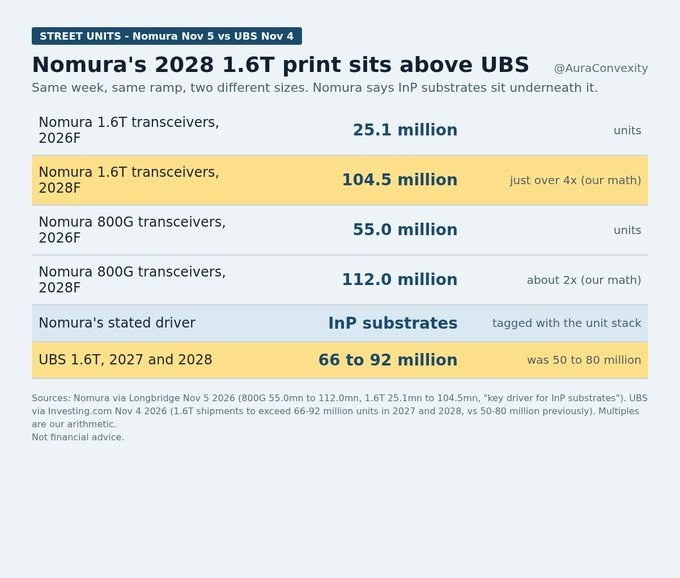
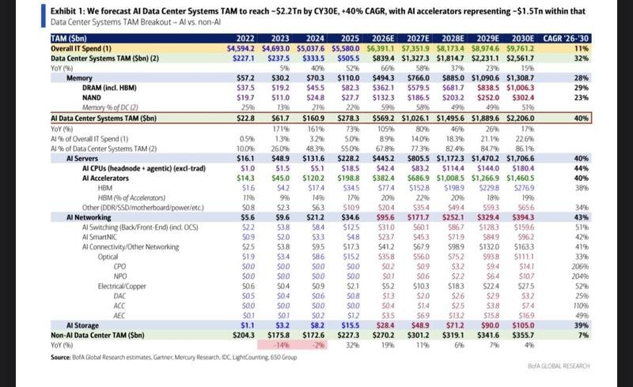

调研纪要 · 2026-11-11 新闻日报
星球 ID: 28855458518111 | 共 323 条帖子 | 精华 86 条
| 查看研究积累
强制同步到研究积累
全部 计算机 电子 机械设备 其他 电力设备 基础化工 传媒 医药生物 宏观策略 非银金融 公用事业 家用电器 通信 汽车 食品饮料 社会服务 银行 有色金属 交通运输 建筑装饰 纺织服饰 房地产 商贸零售 建筑材料 环保 轻工制造 国防军工
书签
【中信策略 20261111A股流动性点评】：
【中信策略 20261111A股流动性点评】：
本轮机构暴露20日累计收益首次回正，出现流动性企稳的确认信号。对于机构集中减仓引起的市场调整，机构票相对非机构票的超额回升是源于机构资金抛压尾声的重要信号：回顾2022年4月末新能源抱团瓦解的阶段性回调底部，出现了机构票的20日累计超额回正。截至11月11日，全部股票机构最高组与最低组的10日、20日滚动收益差分别回升至+0.2、+0.1个百分点，本来调整以来首次回正。
近期“融资卖盘脱敏”的股票达到年内最多，是底部多空力量均衡、跌不动的特征之一。我们统计“融资盘释放、股价已不跌”的股票个股数量在10月30日只有76只，11月5日升到908只，11月6日外部冲击当天反而升到1,249只，为年内最高；年内其他高点集中在3月30日（1,078只）和7月27日—8月7日（8月6日1,050只），恰好是年内几次阶段底部。
——中信策略 联系人：张铭楷
[红包]【申万宏源家电】扫地机10月数据更新：#大促基数压力仍较高，科沃斯份额提升势头突出
[红包]【申万宏源家电】扫地机10月数据更新：#大促基数压力仍较高，科沃斯份额提升势头突出
#行业线上销售数据：
#去年同期双十一及预售成绩较好，且有上市公司自补，基数压力高，行业销额仍同比双位数下滑： 据奥维云网数据，2026年10月扫地机器人线上市场销额同比-15.3%，销量同比-0.7%。
#公司份额及销额变化：
市占率方面，10月线上石头/科沃斯/云鲸/追觅/大疆销额市占率同比
-0.3/+4.4/-6.8/-1.6/+3.0个百分点，
达36.8%/33.7%/8.5%/6.3%/5.1%；
石头/科沃斯销售额同比-16%/-3%。
#科沃斯份额同比提升最为明显，也与去年同期份额基数相对较低有关，大疆表现突出，石头基本盘稳固仍保持份额第一，云鲸、追觅份额同比持续回落。
#新品及大单品份额：
石头科技：10月线上销额冠军单品P30 PRO（上下水版），份额12.6%；P30 PRO上下水 + 标准合计份额约19.7%，占石头品牌约54%。
科沃斯：T90S PRO上下水 + 标准合计约18.5%，成为科沃斯新支柱大单品；T90 PRO上下水 + 标准合计约5.1%，T80S Plus上下水 + 标准合计约2.6%，多系列接续支撑科沃斯线上份额升至33.7%。
[發]详细交流及数据欢迎联系【申万家电团队】
【hcdx】AI硬件反弹点评：超跌+景气双击
【hcdx】AI硬件反弹点评：超跌+景气双击
🍁 超跌+订单验证+资金回流三重共振。我们周一就推荐了ai硬件，尤其最具alpha的散热方向，觉得跌幅够深可以加配。光模块龙头前期批量跌超60%，中际旭创、新易盛、立讯合计承诺回购58-110亿元。近期催化密集：中际旭创披露主要客户订单基本覆盖2027年全年，重点客户已给出2028年指引；伯恩斯坦预计2028年英伟达生态光通信市场达468亿美元，较2027年增长91%；中国移动2027年采购总规模超5000亿元、其中算力超1000亿元，平头哥申请独立上市，国产算力资本化提速；OpenAI三季度营收100亿美元、环比+50%。需求从北美大厂扩散到国产算力+应用端，光通信上游拉货紧张，景气度获订单与现金流双重确认。
🍁ai硬件看好 中石科技，九州一轨，皖仪科技（ 液冷检漏、半导体AMC，明年2亿利润），豪尔赛，沃尔德，科翔，鸿富翰，另外超跌70%的三孚新科也可以关注
[玫瑰][玫瑰]坚定看好中国硬科技【华西机械】
[玫瑰][玫瑰]坚定看好中国硬科技【华西机械】
1、 AI叙事依然存在，国产AI的高点远没到来！1）我们始终认为AI产业并没有证伪，近期各种利空以及担心都已经落地，美股上涨也已经反弹！同样，#A股这些海外算力资产（大光）也并不是体操逻辑，#实打实在放业绩+低估值，#该止跌甚至反弹！2）国产AI起步更晚，受限于各种制约，数量级差距更大，#国产AI的高点一定比海外来的更晚，27年从国产GPU、HBM等出货就可以不断验证！
2、 中国大陆的晶圆大扩产叙事才开始！1）总有人担心价格松动会影响存储扩产，大家可以思考一个问题：25年之前，全球产能过剩，两存大幅亏损，中国大陆的存储不也在大扩产？哪怕存储价格现在腰斩，依然暴利！2）#CAPEX不是简单二阶导那么简单，举个例子，23/24年全球存储过剩，海外存储巨头集中控产减产！海力士/美光24年CAPEX合计仍达到了200亿美元，#核心的逻辑存量技改+先进节点升级！3）产能占比缺口+技术节点差距，AI哪怕完全没有，也不会像二级演绎那么悲观！
3、2027年中国硬科技将迎来业绩+订单双兑现！#2026年是半导体设备超级订单大年（华创、中微、拓荆、华海等等持续上修新接订单），2027年将在报表收入端兑现。此外，考虑到27年行业CAPEX仍有40-50%增速，订单将继续维持高增长！业绩加速+订单高增，硬科技一定会成为科技方向最优解之一（科技总归会有四层的仓位），现在底部的位置就应该不断加仓，坚定持有！
电子反攻买什么？看东吴电子，电子反攻旗手！
电子反攻买什么？看东吴电子，电子反攻旗手！
领导好，上周我们已经提醒领导们可以重视电子板块，并且给大家发了抄底组合，上周以来行情持续回暖，买入确定性成长的龙头一定是当下最好的选择，核心推荐 芯碁微装 杰华特 江丰电子 三环集团 沪电股份 盛科通信 鸿富瀚
[玫瑰]芯碁微装：现在对应明年仅20倍出头，极具性价比！9月/10月强劲发货支撑Q4业绩高增。先进封装国内大客户设备投产进度超年初预期，二梯队客户明年需求高增态势显著，海外客户进展明确。#PCB业绩确定性强，27年出海设备订单驱动市值增长大年，依然看到2000亿市值。
[玫瑰]杰华特：公司Q3开始看到Drmos对业绩的提振，收入结构和涨价带来毛利率环比提升，Q4预期进一步提升！明年大客户Drmos放大量，#重申千亿市值目标！当前不到300e市值，弹性巨大！
[玫瑰]沪电股份：业绩最确定AI PCB龙头，三季度数据已体现出1.6T交换机/Rubin/TPU V8等新一代产品PCB极强的盈利弹性，Q4产品结构优化，Q1青松三厂贡献产能，业绩环增趋势强劲。27年150亿业绩确定性强，当前市值对应明年仅11倍！#初步修复至20倍PE看3000亿市值。
[玫瑰]江丰电子：靶材Q4提价预期明确且涨幅超市场预期，#Q3扣非归母超市场预期已是先行指标，Q4预计可看到明确业绩拐点。靶材涨价+扩产后产值有望接近百亿；零部件业务持续高速放量，静电吸盘自研成功，#靶材+零部件+静电吸盘单列分部估值目标市值看1000亿！
[玫瑰]三环集团：短期受益于高容MLCC涨价，盈利弹性已受财报充分验证；中长期MLCC国产替代+SOFC产业趋势强化公司成长韧性。短有景气、长有逻辑，成长确定性和盈利持续性都值得持续看好。27年MLCC主业100亿利润给予30倍PE，对应3000亿市值基本盘；SOFC 10亿净利给予35倍PE，对应350亿市值增量；其他业务20亿利润给予20倍PE，对应400亿市值增量，合计看4000亿翻倍市值空间！
[玫瑰]盛科通信：国产算力高弹性标的，第三方以太网交换芯片独一家，超节点放量周期有望加速国产替代。12.8T/25.6T 27年落地放量、51.2T 持续验证27年有望进入关键CSP大厂。主业300亿+Scale-out 900亿+Scale-up 1800亿，#分部估值看3000亿，需持续重视#交换机芯片在互联趋势里的关键卡位！
[玫瑰]鸿富瀚： 服务器液冷整柜+物理AI双轮驱动，液冷已获国内头部CSP冷板量产订单，27/28年按客户需求1万/4万柜、公司40-45%份额测算，贡献净利润6-7/20亿。物理AI切入北美大客户供应链，单台价值量约2万美元，27/28年按出货1万/5万台测算，贡献净利润5/20亿。#预计27/28年整体净利润约13/40亿，当前市值170亿，对应27年13倍、28年不到5倍PE，液冷提供近期业绩爆发力，物理AI打开远期成长空间。
【国金商社】💎科锐国际Ai发布会调研Notes 20261111
【国金商社】💎科锐国际Ai发布会调研Notes 20261111
【业绩表现】 2026年前三季度，公司营收120.7亿元/+12.2%，归母净利润2.3亿元/+2.8%，扣非归母净利润2.0亿元/+24.0%。26H1灵活用工收入77.3亿元/+14.8%，中高端人才访寻收入2.4亿元/+23.3%，技术服务收入5154万元/+35.9%（收入占比0.6%）。本次重点交流禾蛙、才到云两项技术业务。
一、禾蛙：AI赋能猎头招聘，平台规模增长与交付效率提升
【业务介绍】 禾蛙是猎头招聘协作平台，连接发单与接单的猎头机构，招聘成功后按约定分佣，平台收取服务费（官网发单方规则列示12%）。#芯链 激活猎企存量简历，#Domi AI助手帮助顾问找人、找岗、完成招聘推荐。
【平台增长】 截至26年9月末，禾蛙聚合6.3万家生态企业、21.1万名顾问，累计交付Offer超3.8万份。1—10月外部猎企发单岗位数同比+90.6%、岗位HC数+43.7%、Offer均价+38.0%、累计Offer金额+223.1%。剔除灵活用工招聘订单后，外部机构占平台猎头订单约85%。
【AI产品】 芯链于2025年9月立项，目前仍处试验阶段；Domi于2025年9月启动研发，2026年7月17日发布1.0版本、9月30日上线2.0版本，新增本地文件操作、浏览器及通用任务能力。 截至10月末，Domi累计执行“以人找岗”2.2万次，推荐4302名候选人至禾蛙，转化率约20%；芯链累计邀约16.8万次、推荐9608次，公司展示的邀约至推荐转化率提升8倍。禾蛙CEO何洪锴判断，Domi推广后，年度推荐量有可能从60多万次提升至2027年的200万—300万次。
【市场空间】 上海品聘软件预计，2025/2026年中国猎头服务市场规模分别约329/350亿元。何总基于CRM观察到约612万个猎头招聘岗位，按每年4次周转估算，潜在年招聘需求约2400万个岗位；假设全部通过猎头完成招聘，理论交易机会达万亿元级。
【增长空间】 2025年禾蛙发布约11万个岗位、交付12750份Offer，交付率约一成，何总希望未来2—3年提升至30%。当前每周新增岗位约6000个，交付能力是核心瓶颈。何总按每周6000个岗位、全年50周、每单6万元Offer金额测算，全部交付对应180亿元交易机会，10%交付率对应18亿元。
二、才到云：从灵活用工延伸至人才供应链管理，拓展高毛利技术服务
【业务介绍】 才到云原本提供企业自有员工HCM管理系统，目前转向弹性劳动力管理，帮助大型企业统一管理外包员工、供应商及费用。公司提供“咨询+MSP管理服务+VMS系统+AI智能体”一体化方案，依托科锐现有大客户资源拓展业务。
【MSP与VMS】 MSP是帮助企业管理外包员工及人力资源供应商的服务；VMS是支撑招聘、考勤、薪酬及结算的软件系统。MSP赚管理服务费，VMS赚系统服务费，使得科锐不仅能提供外包员工，还能管理其他供应商提供的员工。
【AI产品】 才到云于2026年3月30日上线#璇基VMS系统，并推进#AidaWork AI智能体应用，将考勤、算薪及供应商管理流程自动化。AidaWork已开展约6个月的考勤算薪应用，但未披露独立正式发布日期。多渠道考勤数据收集由3天缩短至半小时；数万人算薪由11人工作3天缩短至1人半天。部分考勤模块AI处理比例达80%，规则清晰的场景可达95%。科锐自身管理5.4万多名外包员工，为产品提供应用场景。
【商业模式】 MSP分为总包和中立管理两种模式，前者承接供应商管理及资金流，后者仅收取管理费。才到云CEO陆同伟介绍，部分VMS项目产品毛利率约70%—80%，叠加人员及服务后仍在60%以上。系统深入客户HR、采购及财务流程，有望提高客户黏性。
【市场空间】 陆总认为，中国独立MSP及VMS市场仍处早期，参考欧美市场估计潜在空间约4000亿元，但未披露具体测算口径。才到云有望依托科锐现有客户，将传统灵活用工拓展至第三方供应商管理及系统服务。
【其他AI产品】 #MiraDay 面向全球人才招聘和市场研究，已推向市场但尚未形成报表收入，管理层预计从26Q4及以后逐步贡献收入。
详细jy请私信～
【长城机械 汪湛帆】汉威科技调研要点20261111
【长城机械 汪湛帆】汉威科技调研要点20261111
🧧#海内外龙头客户的传感器和数据设备核心供应商
1、公司是传感器、电子皮肤产品和系统方案的提供商，同时提供数据集采设备。公司积极拓展海外客户，是海外龙头F和A的传感器和数采设备供应商，已有批量订单
2、公司和北美大客户积极对接合作，从24年开始一直和大客户保持紧密对接，配合客户每个方案的改动，预计公司后续有望进入大客户的传感器供应链
3、公司同时积极拓展国内客户，是国内智元、字节、小鹏等客户的传感器和数据采集设备供应商
🧧#主业传感器营收高速增长
1、公司2026年传感器营收预计5-6亿元，同比增长28%-54%，今年主要的增长驱动力来自汽车和家电，预计明年汽车和家电可以维持双位数的增长
2、公司和七腾签订了战略合作协议，给特种机器人供应气体、激光等传感器，平均单台ASP 1万，27年出货3万台，公司拿1/3的份额，预计带来增量收入1亿
❗️#投资建议
公司深度卡位海外F、A、北美大客户，供应传感器和数据采集设备，具备稀缺性，强烈推荐
[庆祝]同飞股份近期交流要点 #申万电新
[庆祝]同飞股份近期交流要点 #申万电新
1、数据中心液冷：北美及国内订单加速落地
#模块化数据中心（集装箱）：获得北美客户一期4-5亿美元订单，年底完成UL认证，2027Q1交付首批约1亿美元。该产品可解决北美数据中心审批、电力等复杂流程的痛点，通过将冷源、配电等集成为预制舱的形式实现快速部署。
#冷水机组：加拿大集成商客户CES已于10月签订框架订单，分三年交付6亿美元，2027年交付1-2亿美元。
#干冷器：干冷器订单上亿元，节水节电推动干冷器成为配置趋势。
#CDU：与AVC等台厂客户合作，目前已有几千万元订单，2027年起CDU有望批量供货；AVC旗下兴奇宏科技参与公司定增，认购约5000万元，体现对公司技术积累和交付能力的认可。
#国内：字节、阿里等大厂白名单认证基本完成，27年国内项目明显增多
2、储能及其他主业：
#储能：2026年增速30%+，好于此前预期；海外项目占比约60%，LG已放量，三星预期27年放量；2027年预计保持30%以上增长。
#装备与半导体：数控装备温控稳健增长，半导体温控是重点投入的新兴业务。
3、产能：
#新租赁车间已于11月投产，可支撑约20-30亿+年产能，主要用于干冷器、模块化数据中心、冷水机组的生产。
#定增项目苏州基地预计27年底建成，为后续储能、装备、半导体等业务增长储备产能。
[太阳]公司在一次侧冷源领域产品布局全面，具备系统化集成能力。看好AIDC快速部署推动预制化、模块化的产业趋势下，公司凭借丰富的工程化经验、多渠道客户积累与系统集成交付能力，有望充分受益。
#上周五我们组织了线下调研，详细情况欢迎私信交流！
【国泰海通食饮】推荐百龙创园：可转债落地，把握成长
【国泰海通食饮】推荐百龙创园：可转债落地，把握成长
公司发布可转债募集说明书及发行公告，据公告，可转债发行总额约为7.48亿元、将用于建设4.5万吨泰国大健康新食品原料智慧工厂项目以及国内功能糖干燥扩产与综合提升项目（同此前注册稿），原股东优先配售股权登记日为11月13日，优先配售认购日、申购日为11月16日。
膳食纤维保持高增，Q3盈利受成本、汇兑短期扰动。2026Q1-3营收同比+17.0%，扣非净利同比+12.4%；26Q3单季营收同比+16.9%，扣非净利同比-12.6%，环比26Q2收入实现提速增长。2026Q3膳食纤维收入同比高增41.4%，我们判断膳食纤维中抗性糊精作为高利率较高的核心基本盘品种，外需景气下增速依然最快且进一步加速，占比进一步提升。2026Q3毛利率同比-4.7pct，据经营数据公告，单Q3我们判断成本端对毛利率产生短期影响，后续我们预计或有望实现传导；销售/管理/研发/财务费用率分别同比+0.9/+0.1/+0.1/+2.1pct，其中财务费用同比增加768万元、我们判断主要系短期汇兑影响。
可转债落地，后续成长动力充足。我们认为，随着健康功能糖产品持续拓展应用品类，抗性糊精、阿洛酮糖等核心产品国内外市场需求有望实现快速成长，同时随着公司在国内和泰国产能建设有序推进，我们预计未来有望进一步优化产能效率和成本，未来公司成长空间较大，盈利有望实现修复。
訾猛/陈力宇
圣泉集团：收购上游关键原料装置，完善碳氢树脂布局
圣泉集团：收购上游关键原料装置，完善碳氢树脂布局
#事件： 11月9日董事会审议通过，控股子公司山东圣泉电子材料以2亿元现金收购菏泽科信高分子94%股权；同步，菏泽科信把年产8000吨苯乙烯-丁二烯高端聚合物装置及配套业务整体剥离进标的，交易后并表。
#纵向补齐短板。苯乙烯-丁二烯高端聚合物为关键中间体，主要服务于圣泉集团的碳氢树脂产线。公司现有600吨/年碳氢树脂产能，1000吨/年扩产项目正在建设中。收购后，可提升上游高端聚合物供给能力，能够对冲原材料价格波动、供货不稳的风险。
[爆竹]风险提示：投产进度不及预期、需求不及预期。
【高争民爆】1111更新：省级国资挂帅，千亿矿业平台启航
【高争民爆】1111更新：省级国资挂帅，千亿矿业平台启航
#区国资委重磅会议超预期加速推进公司资产重组，#涉及整体收购进度、马牧普进展、朱诺铜矿的相关表述等均超预期、明确千亿市值目标，四座矿山「十五五」全面启动。 今日西藏国资委成立领导小组加快推动高争民爆（盛元龙地矿）重组及矿山资源开发，从公开内容来看，相较11月1日已披露的重组预案，官方首次明确给出重组完成时限——力争2027年第三季度；也首次把马牧普、朱诺、浦桑果、沙拉岗四座矿山一并纳入领导小组统筹范围，其中马牧普力争2027年动工、「十五五」期间四矿全面启动。按照部署，矿山资产注入同步推进，审计、评估、重组注入等基础工作规范完成，同时搭建盛元龙地矿组织架构、完善法人治理。
#国资委两位副主任挂帅，#目标直指自治区级矿业平台。 2026年11月11日，自治区政府国资委成立高争民爆（盛元龙地矿）改革重组工作协调推进领导小组，两位副主任分任组长、常务副组长，西藏地矿集团董事长、总经理任副组长，办公室设在国资委。平台定位为自治区国资自主可控的矿山开发与资本运作平台，目标是打造市值千亿平台。
#周调度、双周报、两类台账把推进节奏压到周。 周调度、双周报常态化研判难点堵点，重大事项第一时间专题研究；改革重组、矿山开发两类台账，清单化管理、项目化推进；专人对接、压实责任，确保按期落地。
#时间表、资源、机制均已到位，#成长空间已经打开。 省级挂帅定调、平台定位明确、节点清晰可查、四矿梯次开发、周级闭环推进，几条线索同时成立，资源优势正加快转为发展优势。
立竿见影！＃上周末call完光大光大环境几连阳再发一次：同逻辑重点关注光大环境！股息率5.5%存3倍提升空间！（回款常态化＋资本开支下降＝自由现金流大增）pb0...
立竿见影！＃上周末call完光大光大环境几连阳再发一次：同逻辑重点关注光大环境！股息率5.5%存3倍提升空间！（回款常态化＋资本开支下降＝自由现金流大增）pb0.57，国补占净资产21%，总应收占净资产39%回款已经常态化！pb重估近一倍空间！
【天风海外】CoreWeave 核心变化
【天风海外】CoreWeave 核心变化
3Q26 经营端全面击穿市场预期与公司指引上限：单季营收 $3,661M（同比 +168.3%，环比 +42.2% / 单季净增 +$1,086M），超出一致预期 $3,543M 达 +3.32%。
调整后营业利润达 $379M（利润率 10.35%，提前一季跨过两位数门槛。公司将 FY26 全年营收指引上调至 $13.0B–$13.3B（高于此前一致预期 $128.2亿）、全年调整后营业利润 指引中值大幅上调 26% 至 $1,275M–$1,375M，并将 2026 年末退出 ARR 指引上修至 $20B–$21B。
为什么公司财报后一度转跌？ 市场一度担心公司业绩会披露的客户占比（25%大模型与AI原始，75企业）
什么时候开涨？公司业绩会表示Capex上修是因为交付进度超预期。
此外，市场长期质疑 Hopper/Ampere 经济寿命短于 5–6 年折旧期，但管理层披露 7 月全线提价 25%、Q3 末再提 10%，且 Q3 Ampere 与 Hopper 算力单价环比大涨 30%–50% 并高于首轮合同价。由于 DDTL 在首轮长约期满时已 100% 摊销清偿本息，2027 年将有 >13 万颗无负债 GPU 到期（按现价对应近 $4B 增量 ARR），2028 年再有约 17 万颗到期（累计近 $10B 增量 ARR）——CFO 在问答中明确确认这 $4B / $10B 续约机会完全在 $132.5B Backlog 之外。
管理层正面拆解了压制估值的资金问题——高息母公司无担保债融资墙与 2027 年百亿级资金缺口：明确承诺在当前收益率下至 2027 年底「not use the unsecured debt market to fund」，未来数周推出高投资级 DDTL7% to 7.5% yield」，覆盖 >90% CapEx，，叠加未来三个月将从已签合同收取90亿美元预付款，将至 2027 年底母公司层面净新增融资需求框定在「less than $5 billion in incremental parent-level capital」，并首次给出2028 的盈利时间锚。我们认为50亿美元融资需求远小于之前市场测算100-200亿美元。
巴克莱参加完Anthropic路演之后的总结，巴克莱的 software 分析师和互联网分析师分别对相关问题作了解读：
巴克莱参加完Anthropic路演之后的总结，巴克莱的 software 分析师和互联网分析师分别对相关问题作了解读：
Q1. 读完 S-1 后，尽调中最重要的增量信息是什么？
软件分析师：
算力效率：管理层花了大量篇幅探讨这一点，并将其视为长期最关键的竞争优势。
多芯片策略与 Anthropic Direct：企业将向多家供应商采购芯片、承接更多基础设施任务，并叠加自身效率优化。 这会导致明年现金消耗显著恶化，不过能减少中间环节。
企业采用速度：签约进度很快。 具备大型企业软件销售背景的高管承担了更重的职责，团队拓展大企业客户的销售能力很强。
模型留有缓冲：承销模型仅增加约 5,000 个客户，客单价略微提升；而大企业单客可贡献 200 万–300 万美元。
互联网分析师：
推理经济性：推理收入能够覆盖公司整体成本结构，最值得跟踪的是推理算力支出与收入之间的关联。
训练自动化：公司博客显示，自动化训练工作负载占比从近乎零上升至约 26%。
模型发布节奏：内部未发布模型正在快速开发，未来更强模型的发布频次可能加快。
最大意外是训练支出：2027 年研发算力约 900 亿美元，后续还会大幅增加。考虑到 Anthropic 的效率优势，竞争对手仍需投入类似规模才能跟上。
Q2. 为什么公司只推“客户数 × 客单价”模型，却不愿给出 GW 容量预测？
软件分析师：
承销商尝试建立“容量 × 变现系数”模型，但管理层明确不希望朝这个方向展开，可能是为了保留经营弹性。
卖方团队正在自行交叉测算，管理层提供的帮助非常有限。
互联网分析师：
公司是在有意淡化容量数字，但外部最终不难估算；媒体报道约为 3.5 GW。
管理层希望投资者把注意力放在每单位推理算力创造的收入，而不是简单根据算力容量预测收入。
公司不想再次陷入算力突然短缺，因此会适度超额订购、提前建设，代价是整体机群利用率下降。
Q3. 从 810 亿美元 ARR 走向明年约 2,000 亿美元退出年化收入，管理层如何解释 Cowork 与白领用户扩散？
软件分析师：
“扩散”是尽调中仅次于“算力效率”的高频词。
管理层称 Cowork 的早期采用速度快于 Claude Code，当时的起步用户基数也更大。
客户访谈显示，许多用户已经把产品用于核心工作，而不只是开发者工具。
信心主要来自更大的可触达用户基数，以及目前已经可见的采用势头。
Q4. 网络安全、生命科学等新增市场中，哪些最有实质性？对传统软件公司的冲击如何？
软件分析师：
软件端的叙事非常强调合作，更多是“与现有厂商共同推进”，而不是直接替代。
CEO 最强调生命科学，但暂时难以判断这是最佳商业机会，还是更适合 IPO 的宏大叙事。
互联网分析师：
没有补充观点。
Q5. 第四季度收入指引约 193 亿美元，年化约 770 亿美元，为什么低于 10 月的 810 亿美元 ARR？
软件分析师：
管理层强调，10 月不能代表 11 月和 12 月；节假日季节性，尤其是 12 月，会明显拖慢收入。
新模型发布对 10 月形成了提前拉动。
管理层在最后一轮沟通中再次提醒投资者，不要直接把 10 月 ARR 年化。
互联网分析师：
蒸馏收入退出：第三季度只体现部分影响，第四季度三个月会完整体现。
定价机制变化：Opus 5.5 同口径价格较 Opus 5 低约 40%，最新 Haiku 低约 20%。账户迁移到新模型时，收入先下降，再用数周恢复趋势；全量客户迁移会形成先降后升的曲线。
竞争影响：OpenAI 在第三季度取得了一些份额，影响可能滞后反映。
Q6. 蒸馏相关收入逐月有多大？
互联网分析师：
蒸馏收入主要来自中国账户，约占公司 7 月、8 月、9 月收入的 10%、7% 和 2%。
随着限制逐步加强，第三季度体现部分下降，第四季度将完整体现。
软件分析师：
管理层表示目前占比已经低于 2%。
Q7. 第四季度是否还有 Meta、Microsoft 降低用量等一次性因素？
互联网分析师：
没有。管理层提到的只有三项：蒸馏收入退出、价格调整和节假日季节性。
Q8. 生命科学叙事有多少实质内容？
互联网分析师：
一位投资 AI 药物发现公司的资深医疗 VC 认为，目前更多是营销叙事。
公司确实重视这个领域，但收入预测中的实际贡献可能很小。
软件分析师：
同意；听起来并不构成重要收入来源。
Q9. 第四季度偏弱后，2027–2028 年增长靠什么重新加速？
互联网分析师：
管理层没有提供逐季度的具体驱动因素。
分析师推测，关键变量包括推理算力上线时间、模型发布节奏，以及约 10 万个账户升级到更高消费层级。
管理层对承销商搭建的预测很有信心，但没有披露太多推导过程。
软件分析师：
从数字上看，与其说是“反弹”，不如说是持续的环比增长。
2027 年第二、第三季度会受益于更容易的季节性比较，以及蒸馏收入退出影响进入低基数。
Q10. 2027 年第四季度和 2028 年的收入目标，是否隐含软件行业裁员释放预算，或长尾客户消费显著提升？
软件分析师：
分析师将其定义为一个关键争议，但录音在回答开始时结束，没有留下完整答案。
📊 英伟达（NVDA.O）业绩前瞻：投资者关注 2028 年业务可见度及在手订单变化
📊 英伟达（NVDA.O）业绩前瞻：投资者关注 2028 年业务可见度及在手订单变化
英伟达将于 11 月 17 日发布 10 月季（FQ3Q27）业绩。我们预计每股收益小幅超出市场预期，更高的销售额会被 HBM 涨价导致的毛利率小幅下滑所抵消。我们预计公司将重申 FY2028E（即 CY2027E）营收同比增长约 70% 的前瞻指引。 投资者真正盯住的是 2028 年的订单可见度与在手订单转化（尤其对非超大规模云客户）、供应约束、Rubin 放量节奏，以及 CEO 独立调查的进展。我们维持盈利预测不变，将目标价从 315 美元下调 10% 至 285 美元，对应 19 倍 CY27E 市盈率（此前为 21 倍），以反映更低的可比估值倍数以及 CEO 问题带来的长期可持续性风险。维持买入。
💰 评级与关键数据
现价178.67 美元（11 月 9 日 16:00），目标价285 美元，预期股价回报59.5%，股息率 0.6%，预期总回报 60.1%，市值4.31 万亿美元。
📈 预计小幅超预期
我们预测 10 月季营收约1,090 亿美元，高于 1,080 亿美元的公司指引，对应约 13% 的环比增长，动力来自 B300 与 Vera Rubin 的持续强劲放量，每股收益2.52 美元，略高于市场预期的 2.49 美元。1 月季我们预计营收环比加速15% 至 1,250 亿美元，随着 Rubin 在数据中心产品组合中的占比提升。毛利率方面我们略低于市场一致预期，为71.5%（市场 72.1%），反映 HBM 存储涨价和 Rubin 早期的产能爬坡成本，每股收益2.83 美元，高于市场的 2.78 美元，主要来自更高的出货量。在我们看来，1 月季的毛利率指引、而非营收，才是这份财报的关键变量。
⚠️ 关注点已从 “AI 需求” 转向 “AI 部署风险”
花旗 AI 团队把 2027E 全球 AI 资本开支预测上调至1.68 万亿美元（同比 + 64%），2028E 上调至2.13 万亿美元（同比 + 27%），背后是谷歌、AWS、Meta、Azure 的资本开支与云收入假设上修，以及 SpaceX 相关 AI 支出估计的更新。但即便预测上调，AI 基础设施类股票、尤其是半导体反而承压，因为投资者的关注点已从需求强度转向部署风险。核心担忧是新建数据中心的阻力在上升，尤其是得州州长选举之后，可能推迟未来 AI 基础设施的建设。花旗美国股票策略师指出，审批延迟与项目推迟通常不利于零部件和基础设施供应商，包括半导体、硬件及部分工业公司，而对已拥有大量已建成产能、所需增量资本较少的超大规模云厂商相对有利。花旗公用事业分析师进一步提示，得州原本预计占美国未来数据中心容量的约 30% 至 40%，一旦出现暂停审批，国内扩张管道将受到实质性影响。
🔍 微软转向审慎，进一步加剧担忧
彭博（2026 年 11 月 5 日）报道，微软对第三方 AI 基础设施投资采取更审慎的态度，加大了对 neocloud 相关项目的审查，并重新评估未来承诺的推进节奏。受此影响，投资者越来越关注部署延迟、neocloud 走弱与审批约束，是否会波及 2028 年的产能扩张、订单可见度以及在手订单的转化，进而传导至整个 AI 供应链。
🏭 供应准备度：瓶颈是速度而非需求
本季度 CEO 黄仁勋在 GTC 柏林发表主题演讲，核心信息是AI 的真正瓶颈仍在制造与部署速度，而不是需求。上游方面，英伟达与基板、先进封装、测试和光引擎供应商达成新协议，目标是在 2028 年前实现多年产能提升，包括增加 CPO（共封装光学）产能。下游方面，公司称DSX POD 集装箱式工厂方案把现场部署时间从约 6 个月压缩到 14 天，2027 年初开始交付，客户能更早确认收入。黄仁勋把 agentic AI 与 token 消耗量的上升直接挂钩，英伟达同时推出 OpenShell 来承接这部分需求。
🚀 Blackwell 与 Rubin 出货：上调空间与延迟传闻
我们维持略高于市场一致预期的 GPU 出货预测，已反映花旗最新的 CoWoS 供应估计。FY2027E（26 年 1 月至 27 年 1 月）出货 1,060 万颗，同比 + 50%，其中 Blackwell 在 B300 持续放量下贡献 770 万颗。Rubin 预测维持在 200 万颗，我们认为这一水平已经计入了受存储约束的爬坡，因此我们的数字不受近期围绕 HBM4 认证与供应的 Rubin 延迟传闻影响。进入 FY2028E（27 年 1 月至 28 年 1 月），我们继续预计总出货量增长 35%，主要由 Rubin 家族驱动，模型假设其同比增长 4 倍。需要说明的是，FY2028E 的出货增长会被产品结构变化稀释 —— 英伟达将更多转向存储密集型服务器，单位出货减少但单芯片的存储含量更高。
💵 AI GPU 销售额：量价拆分
我们同样维持 AI GPU 销售额预测不变，FY2027E 为 2,900 亿美元（同比 + 82%）。模型假设综合 ASP 提升，因为英伟达把存储涨价成本转嫁给客户，我们估计涨价幅度在15% 至 20%，这使得营收增速快于出货量增速。FY2028E 我们预计 AI GPU 销售额同比增长 40%。我们预计 AI GPU 在 FY2027E 至 FY2028E 期间平均占英伟达数据中心总销售额的约 80%，其余主要来自网络（以太网与 InfiniBand）以及软件和服务。
🧩 客户结构：49% 对 51%
从结构上看，我们预计约 49% 的业务来自超大规模云厂商，它们仍是公司客户获取 AI GPU 的主要通道。其余 51% 分散在 AI 云、工业与公司客户中，考虑到微软近期从多家 neocloud 伙伴回撤，这一部分需要更密切地跟踪。
📊 盈利预测：小幅低于市场一致预期
我们模型给出的 FY2027E 营收为4,114 亿美元、每股收益9.26 美元（市场 9.30 美元）；FY2028E 营收6,991 亿美元、每股收益15.17 美元（市场 15.84 美元）；FY2029E 营收9,440 亿美元、每股收益19.98 美元（市场 20.99 美元）。毛利率路径为FY2027E 73.6%、FY2028E 72.5%、FY2029E 72.9%，EBITDA 利润率同期为 65.3%、64.9%、66.0%。
🏗️ 加速器 TAM：同步上调模型
出货量方面，我们仍预计从 C2025 到 C2027E，AI 商用 GPU 在 AI 加速器中占据更大份额，从 C2028E 起 ASIC 将在总量上超过 GPU。尽管如此，这一期间商用 GPU 出货量仍将实现 31% 的复合增速，主要由英伟达需求驱动，同时也受 AMD 持续放量支撑。凭借技术领先与庞大的装机基础，我们认为英伟达会继续拿下 AI 加速器投资的主要部分。ASIC 基数较小，随着各类定制项目陆续上线，我们预计其出货量在 C2025 至 C2030E 期间复合增速达 57%，放量集中在 C2027E 前后。整体上，AI 加速器出货量在 C2025 至 C2030E 期间复合增速为 42%。
🔎 谷歌 TPU 外供：竞争格局的关键变量
财报前最值得关注的竞争变化，是谷歌 TPU 走出自有云。TPU 将在 OCI 上提供，这是其首次在谷歌之外的超大规模云平台可用，时间从 2027 自然年开始、历时数年逐步放量。核心是第八代产品线，拆分为用于训练的 TPU 8t 与用于推理的 TPU 8i，谷歌称TPU 8t 单 Pod 算力较上代提升近 3 倍。我们认为这些变化是对既有加速器 TAM 框架的验证而非颠覆 —— 该框架本就假设 ASIC 出货量以 55% 的复合增速增长，并在 C2028E 于总量上反超商用 GPU。关键细节在于3 倍至 7 倍的 ASP 差异，使 ASIC 份额提升的同时，商用 GPU 仍占计算销售额的70% 以上；这些发布也不改变英伟达在近期 Rubin 配额分配中的地位，相关分配到 2027 年基本已锁定。更有意义的转变是结构性的：TPU 开始通过第三方云提供，且首次进入历史上一直是英伟达锚定客户的前沿实验室，这削弱了 “CUDA 锁定会把 ASIC 限制在设计方自有工作负载” 的说法。叠加微软对 neocloud 的回撤与选举后的审批阻力，英伟达的风险更多不在 CY27/28 的出货量流失，而在于定价能力与增量推理工作负载的份额。综合来看，我们模型假设 C2025 至 C2030E 商用 GPU 销售额复合增速 30%、ASIC 为 66%，分别达到7,510 亿美元与 2,830 亿美元；合计 TAM 复合增速 35%，到 C2030E 达到 1 万亿美元。
🏢 数据中心半导体 TAM：2030 年 1.7 万亿美元
延续这一口径，我们预计 C2030E 数据中心半导体 TAM 达到 1.7 万亿美元。其中 GPU 与定制 ASIC（含存储）1.034 万亿美元、占比 62%；网络3,620 亿美元、占比 22%；其他（含 CPU 与存储）2,690 亿美元、占比 16%；合计1.665 万亿美元。C2028E 对应总规模为 1.214 万亿美元。
🧠 Meta Muse：单个消费者 agent 的 GPU 经济性
Meta 的 Muse 是首个在真正社交网络规模上线的消费者 AI agent，其算力占用是当前 AI 基础设施中最值得关注的未知变量之一。Meta 既未披露使用量，也未披露服务架构，我们因此自下而上估算单个 Muse 日活用户的 GPU 需求，再据此放大。基准情形下每个用户约需 0.0020 颗 GB200 级 GPU，粗算一颗 GPU 服务约 500 个用户，每 100 万用户约需 2,000 颗 GPU。 乐观情形假设每日 2 小时的 agent 活跃时长，提升至每用户 0.0039 颗 GPU，即每颗 GPU 服务约 250 个用户。作为对照，我们框架中的聊天式模型只需前者12.5% 至 25%的 GPU 算力 ——这正是我们认为 agent 是结构性更重的推理负载、远超 chatbot 的核心原因。
📐 一个用户如何消耗算力
我们把典型用户建模为每天发起 4 个简单请求（例如一个事实性问题），基准情形下再加 12 个 agentic 任务，比如找餐厅、核对日历可用时间、起草邀请。我们估计单个 agentic 任务约对应 8 次模型调用。每次调用中模型短暂推理、调用工具、读取结果再重复，模型在调用之间没有记忆，因此每次都要重读不断增长的对话 ——一个任务累计读取约 104,000 个输入 token，尽管其最终上下文只有约 21,000 个。假设服务栈对已处理文本做了缓存，真正的新增工作只有约 19,000 个 token：5,000 个 token 的起始上下文（系统指令、工具定义、用户记忆与请求），加上 7 个各约 2,000 个 token 的工具结果。单个 agentic 任务的输出约 4,000 个 token：7 个各约 300 个 token 的决策步骤、1,000 个 token 的最终回答，以及 900 个 token 用于隐藏推理的余量。全天下来，基准情形用户产生约 238,000 个新增输入 token 与 50,000 个输出 token。
⚙️ 从 token 换算到 GPU
我们以 DeepSeek R1 在 GB200 NVL72 上的公开基准为锚，它是目前最接近前沿 MoE 模型的可比对象。假设Muse Spark 总参数约 8,000 亿，每 token 激活约 400 亿。读取阶段是算力瓶颈，我们估计单 GPU 约 22,500 token / 秒，与 LMSYS 实测的约 26,000 基本吻合。输出阶段受限于存储带宽而非算力，因为 GPU 每生成一个 token 都要重读权重和每个用户已存储的上下文，我们假设单 GPU 为 2,000 token / 秒—— 这一数字低于短提示基准，是为反映 agent 场景下的长上下文。我们对两个数字都打了 1.5 折，以弥合基准环境与实际集群的差距。基于这些假设，基准情形用户每天消耗 53 个 GPU 秒：37.5 秒用于写、16 秒用于读。除以一天的 86,400 秒，按 2.5 倍峰均比（Muse 仅在美国可用、使用更集中），再留 30% 的冗余产能，得到每用户 0.0020 颗 GPU，其中约 70% 的需求来自写而非读。
💡 投资含义：扩到 1 亿日活
按 1 亿日活计算，我们的框架对应约 20 万至 39 万颗 Blackwell 级 GPU、约 2,800 至 5,500 个 NVL72 机柜，以及约 70 亿至 190 亿美元的一次性英伟达营收（含 scale-out 网络）。按单位用户计，每新增 100 万 agentic 日活用户，对应约 7,000 万至 1.9 亿美元的英伟达新增服务器收入。
⚖️ CEO 独立审查：治理与合规的尾部风险
英伟达已启动由董事会主导的独立调查，调查对象为 CEO 黄仁勋。此前有报道（彭博 2026 年 11 月 9 日，纽约时报 2026 年 11 月 6 日、8 日）称，他可能是一起中国情报行动的针对对象，该行动涉及一名与数据中心公司 Megaspeed（总部位于新加坡的数据中心运营商）有关联的高管。调查由独立董事组成的委员会进行，并有外部法律顾问支持，公司称目前没有证据表明英伟达的知识产权、机密信息或美国国家安全利益受到损害。在给员工的信中，CEO 承认存在婚外情、向利益相关方致歉，并承诺全面配合调查。对投资者而言，关键议题集中在潜在的治理影响、更严的监管审查、H200 芯片经其他中间渠道流入中国的出口管制合规（占数据中心销售额不足 1%），以及领导层稳定性受到的中长期影响。公司表示调查期间黄仁勋将继续担任 CEO。
📉 估值：目标倍数已下调至历史均值
我们 285 美元的目标价基于 19 倍 CY27E 市盈率，与一年期均值持平（此前目标倍数取 21 倍）。从历史区间看，英伟达 FY2 口径市盈率已从 2024 年的 50 倍以上回落至10 倍附近，处于近五年低位，这正是我们把目标倍数下调的现实依据。定价日为本报告发布前一交易日，即2026 年 11 月 9 日。
🐂 牛市情形：350 美元
对应约96% 上行空间，假设25 倍市盈率、到 2030 年 AI 基础设施支出新增 5 万亿美元。
🎯 基准情形：285 美元
对应约60% 上行空间，假设19 倍市盈率、AI 基础设施支出 3 万亿至 4 万亿美元。
🐻 熊市情形：150 美元
对应约16% 下行空间，假设15 倍市盈率、因竞争、价格压力与宏观风险，AI 基础设施 TAM 不足 2 万亿美元。
📞 Coherent 专家会
📞 Coherent 专家会
📊 Marvell 与 Lumentum 合并的短期影响有限。随着行业逐渐转向一站式集成解决方案，预计在 1-2 年的 3.2T 周期内，重大竞争风险将会显现。
🌐 北美算力的州内及跨境迁移不会减少光模块的总需求，只会延后建设节奏。绝大多数光模块产能都集中在中国，算力离岸布局，反而会拉动 DCI 相关硬件的需求上行。
🗳️ 美国中期选举，并没有改变微软、谷歌这类超大规模云厂商对光模块的真实采购需求。没有出现大规模新增订单，但客户集中提前锁货，1.6T 产品会在明年一季度加速出货。
🤖 中国科技与通信：2026 年国内 AI 数据中心技术调研要点
🤖 中国科技与通信：2026 年国内 AI 数据中心技术调研要点
我们于 11 月 9 日走访了中微公司临港工厂、壁仞科技（未覆盖标的）、澜起科技以及商汤科技（未覆盖标的）临港 AI 数据中心。我们观察到国内供应链正在发力，推进高性能计算领域的本土化工作。目前国产芯片主要应用于推理场景，2027‑2028 年的下一代产品芯片性能将实现提升，或将搭载国产高带宽内存（HBM）。行业主要瓶颈在于芯片制造与 HBM 供给受限。国内 AI 数据中心出于成本优化考量，对国产芯片持支持态度。澜起科技仍是 AI 基础设施关键的内存互连芯片龙头，作为国内 AI 数据中心发展的核心产业链参与者，将受益于智能代理相关需求增长。中微公司在助力国内存储制造以及先进封装发展方面发挥重要作用。维持中微公司、澜起科技的买入评级。
🏭 中微公司
受益于 AI 高景气需求以及供应链本土化推进，我们看好中微公司后续稳健增长。AI 发展最先拉动计算芯片（GPU、专用芯片）需求，之后传导至存储领域，当前 DRAM/NAND 订单增速已经超过其他应用。2022‑2024 年，感应耦合等离子体刻蚀机销售额实现每年翻倍增长，电容耦合等离子体刻蚀机与感应耦合等离子体刻蚀机营收占比达到 1:1。60:1 刻蚀机已经实现量产，70:1 以及 90:1 的 XDRIE 设备正处于客户验证阶段。薄膜沉积设备（硅通孔设备已量产，等离子增强化学气相沉积、物理气相沉积设备正在验证）、检测设备或将成为核心增长产品线，2026 年上半年订单规模突破 10 亿元人民币。零部件短缺，使得中微公司产品交付周期从原先 3‑6 个月拉长至当前 6 个月。公司正在拓展更多国内供应商，保障生产。公司将持续投入研发维持竞争优势，随着营收规模扩张，研发费用占营收比例预计回落至 15%（2026 年前 9 个月为 31%）。
📊 澜起科技
我们维持对澜起科技的乐观判断，认为公司将充分受益于 AI 基础设施建设。继 2026 年第三季度营收与利润创下历史新高后，公司 2026 年第四季度业绩指引显示增长进一步提速，即便考虑供给约束，营收环比增速依旧可达 20%‑34%。旺盛需求主要来自三方面：1）CPU 需求增长（AI 推理、智能代理任务拉高 CPU 与 GPU 配比）；2）内存通道数量提升，从 8/12 通道升级至 16 通道；3）内存装载量提升，容量降级方案可以让更多 RDIMM 内存条充分利用内存通道。第二代 MRDIMM 带来新机遇，配套的 CPU（Venice、Diamond Rapids）即将大规模落地。PCIe Retimer 6.0、PCIe 交换芯片、CXL MCX 等全新互连方案，进一步拓宽长期成长空间。公司自研 128G SerDes 技术获得客户广泛认可，实现产品差异化竞争。
🚀 壁仞科技
BR200 系列芯片面向高算力场景设计，最多可搭载 6 颗 HBM 堆叠，软件层面完成大幅优化，目前样品已回流，开展内部测试与应用适配工作；运行通用大语言模型时性能有望超过 H200。在服务器方案上，采用铜互连方案时单个超节点服务器最多支持 16‑128 张显卡；采用光电互连（NPO）扩展方案，最多可支持 1024 张显卡。计划 2027 年第一季度向国内云厂商客户送测。公司设定 2027 年营收目标 200 亿元人民币，晶圆代工厂产能已经落实，2027 年全部晶圆供货订单已经敲定，同时已经和代工厂商讨 2028 年供货事宜。下一代 BR300 系列产品，HBM 内存可选方案将更加丰富。公司暂不给出毛利率指引，毛利率水平取决于显卡、服务器的产品结构以及客户结构。公司会继续强化研发实力，但研发费用占营收比重将会下行。整体来看，2027 年国内芯片供给行业仍将面临代工厂与存储供应短缺问题。
🖥️ 商汤科技
我们实地走访了位于上海临港的商汤科技 AI 数据中心。该数据中心规划分三期建设：一期已经满负荷运营，算力规模超 70MW，折合 25000P 算力；二期处于在建状态。算力分配上，三分之一算力供给内部业务以及研发，三分之一用于高校科研机构合作，剩下三分之一对外提供算力租赁服务。商汤科技国内总算力规模超过 47000P，其中临港基地占比超 50%。集群同时部署国产与海外 AI 芯片，持续做适配优化。集群层面，国产芯片搭载 DeepLink 框架运行，效率可达 CUDA 的 90%。国内为数不多可以采集电力、算力数据的市场参与者，能够优化数据中心运行效率，实现最优 TPW（每瓦百万 token）指标，做到算力与电力协同，争取更优电网电价收益。商汤科技属于全链条布局的市场参与者，业务覆盖 AI 数据中心建设、大语言模型、AI 智能代理，同时对外输出算力租赁、Token 工厂、MaaS 模型即服务、AI 智能代理相关服务。
📌🔋中国电池行业：电池公司交流日以及 2026 年第三季度业绩核心要点
📌🔋中国电池行业：电池公司交流日以及 2026 年第三季度业绩核心要点
🏢上周我们在深圳举办电池公司交流日活动，参会主体包含 5 家电池生产公司、6 家电池材料生产公司，覆盖正极、负极、隔膜、电解液、铜箔全产业链。会议重点讨论消费税传导、出口增值税退税退坡带来的影响、锂价下行造成的变化、短期出货量趋势，以及 2027 年供需前景。结合本次交流、头部行业公司 2026 年三季报与业绩电话会内容，整理产业链十大核心结论。
💸消费税成本传导：不同细分领域推进进度存在差异
⚡储能电池领域的成本传导基本落地完成；动力电池客户，尤其是乘用车整车厂端仍处在谈判阶段。盈利情况较好的整车厂接受度更高，而新能源造车初创公司传导难度偏大。从时间节奏上看，消费税恢复带来的影响已经在三季度业绩当中体现。仅有部分公司 9 月开始执行成本传导，大多数公司 10 月才跟进落地。所有电池公司均认为成本传导是保障净利润的必要条件，多数公司将 2027 年一季度视作完成传导的关键窗口期。
📤出口增值税退税退坡
📋绝大多数电池公司已经在报价当中体现退税政策调整带来的成本。储能客户可以在报价环节完整承接成本上涨；部分乘用车项目，前期已经锁定具体车型合同价格，这部分项目还在重新谈判。
📈全产业链短期生产及出货表现强劲
🏭2026 年第三季度行业产能利用率达到满产甚至超过满产水平。伴随新产能释放，多数公司预期四季度出货、生产规模会在三季度的高基数之上实现环比增长。2027 年一季度会出现季节性环比走弱，不过天赐材料表示，出现大约 10% 的环比下滑属于正常季节性波动，并不会改变全年的需求预期。
🔮2027 年电池行业需求展望
📊电池与材料公司普遍判断，2027 年行业需求同比增速至少 20%。动力电池指引大多落在 20‑30% 区间，储能电池需求增速达到 30% 以上。电池公司认为储能增速会跑赢动力电池，主要驱动力来自海外储能、AI 数据中心配套储能，锂价下行进一步带动国内储能装机量提升。动力电池增长来自电池包容量持续加大、商用车电动化渗透提升、海外全新车型周期放量。
⏳储能集成业务收入确认周期较长
💵开展直接储能出口业务的电池公司表示，今年储能出货表现好于预期。但所有公司都提到，如果自身充当系统集成商，无论是直流侧集成方案还是交流侧集成方案，海外项目收入确认周期需要 6 个月以上，必须等到项目完成并网之后，才可以确认收入。
🚀2027 年出货指引
📉电池以及材料公司继续给出 30% 以上的出货增长指引，部分公司上调预期。二线电池公司将储能规模提升、海外客户放量、国内客户订单增长作为核心驱动。材料公司反馈与之保持一致，下游电池客户给到的 2027 年增长指引普遍为 30% 以上，部分客户指引甚至高达 50%。电池公司年底之前维持满产运行，部分公司2027 年一季度产能已经被全部预订完毕。
💰电池盈利前景
📊二线电池公司都希望尽可能完成消费税的成本传导，部分公司认为锂价下跌为成本传导创造空间。依托客户结构优化、持续降本，公司预期 2027 年毛利率水平实现改善。
⚙️电池供给格局变化
🏗️各家公司继续执行 2027 年产能投产计划，部分项目还存在提前落地可能性。行业普遍认为，2028 年之后受产能管控政策影响，行业供给会趋向收紧。多数二线电池厂商提到，行业实际有效产能扩张速度会慢于公开规划的名义产能。
🧪材料产品定价与单位盈利
📈受供给紧张影响，非锂类材料实现单位 ASP 均价上行。铜箔公司三季度面向全部客户上调加工费，计划四季度继续提价；隔膜今年以来产品均价上涨 20% 以上，星源材质判断如果需求维持旺盛，2027 年价格会继续上行。锂系材料方面，正极加工费三季度环比基本持平，天赐材料面向核心大客户下调电解液报价。锂价下行带来的套期亏损、存货减值，大多已经在三季度财报计提。正极、电解液公司均表示，锂价走低会对 2027 年单位盈利形成明显压力，计划依靠高端产品占比提升、海外业务放量、配方持续优化去对冲负面影响。
🏭材料端产能建设节奏
📅今年行业公布大量新建项目，不同材料投产时间分化明显。电解液、正极新增产能主要会在 2027 年下半年投产；大规模负极、隔膜、铜箔新增产能要等到 2028 年才能够释放。正极行业名义新增产能规模最大，但参会的所有公司都判断行业呈现两极分化，高端有效产能依旧处于紧缺状态。
📰 GS 香港市场综述
📰 GS 香港市场综述
📌 盘面速览
恒指 -1.0%｜国指 -1.1%｜恒生科技指数 -1.4%｜成交额：1810 亿港元
领涨板块：工业 +1.0%、综合公司 +0.2%、原材料 +0.2%
领跌板块：金融 -0.9%、资讯科技 -1.1%、非必需消费品 -1.3%
🌏 大盘整体表现
港股走低，表现落后于区域市场。当日，韩国、台湾和日本等其他区域市场无视隔夜疲软，均收涨表现不错。港股及中资股方面，风险偏好回升仅限于部分板块，整体市场情绪依然疲软。恒指方向性走低，最终在 24300 点附近收盘。南向资金买入力度有所加大，日终净买入达 5.8 亿美元，但仍不足以支撑恒指。A 股表现相对较好，午后突然走强，棕榈油概念股领涨。
💸 资金流向
交易台观察到午后买盘表现不错，买盘规模达到卖盘的 1.7 倍。金融股方面，午后交易台观察到不错的买盘，涉及建设银行（939）。医疗保健板块的买盘持续流入无锡系，我们买入了药明康德、药明生物和信达生物。交易台观察到电池股宁德时代（3750 HK）买盘回流。我们也买入了在线医疗股京东健康，并观察到青岛啤酒等饮料股出现一些买盘。人工智能基础设施股和澳门博彩等主题板块有少量卖盘，但仍有供应。
🏭 分板块行情
从板块来看，可选消费拖累恒指下跌。电动车板块表现疲软，比亚迪、理想汽车和蔚来均下跌 3% 至 4%。人民币波动侵蚀电动车公司利润，令板块承压。平台股也表现疲软，美团下跌 3.5%，腾讯下跌 2%；AI 模型相关个股表现较好，MiniMax 上涨 4%。医疗保健板块因获利回吐而走低，但没有明显的导火索。该板块近期表现强劲，无锡系个股回吐了部分近期涨幅。相对抗跌的有中国半导体股，上涨 3%；材料和工业板块也均表现坚挺。
📊 我们估算 10 月 GB200/300 机柜产出约7500 台，环比增长 16%。
📊 我们估算 10 月 GB200/300 机柜产出约7500 台，环比增长 16%。
🚚 广达出货约1800 台 GB200/GB300 机柜。
🚛 纬创出货约1600 台 GB200/GB300 机柜。
🏭 鸿海出货约2900 台 GB200/300 机柜。
🔮 我们维持 2027 年机柜产量预测不变，为90400 台，同比增长 11%。
📈【2027 年机柜出货预测】
✨ 我们给出 2027 年机柜预测值为90400 台，同比增长 10%，2026 年预测值为82000 台。
💡 今年下游机柜组装公司业绩强劲，机柜出货同比增长约209%，但我们预计 2027 年机柜出货将继续同比增长约10%，达到 90400 台。
📊 在 2027 年的预测当中，鸿海的份额将提升，机柜市场份额从 2026 年的 37% 上升至43%；广达份额维持26%不变；纬创份额小幅从 2026 年 23% 提升至24%。
📑📈野村证券：光收发器出货量将在两年内增长至四倍以上
📑📈野村证券：光收发器出货量将在两年内增长至四倍以上
🔹 野村证券预测，光收发器出货量将从 2026 年的2510 万个增长至 2028 年的1.045 亿个，两年内增幅超四倍。
🔹 本次预测上调，会同步拉动上游激光器、光学元件和衬底的需求。
📊💰美国银行：到 2030 年光通信市场规模可达 1111 亿美元
🔹 美国银行给出判断，2030 年全球光通信市场规模将达到 1111 亿美元，瑞银也同步上调了相关市场预测。


2 图
字节跳动准备未来几周推出类似 Muse 的智能体，以缩小人工智能差距
字节跳动准备未来几周推出类似 Muse 的智能体，以缩小人工智能差距
CoreWeave 和 Anthropic 找到了 Neocloud 的一线曙光
CoreWeave 和 Anthropic 找到了 Neocloud 的一线曙光
据称，中国闪存巨头长江存储计划于2027年初进行IPO。
据称，中国闪存巨头长江存储计划于2027年初进行IPO。
孙正义押注电力涡轮机的豪赌遭遇重挫
孙正义押注电力涡轮机的豪赌遭遇重挫
中国锂业巨头称价格波动加剧
中国锂业巨头称价格波动加剧
中国评估债券利息税，收益率接近历史低位
中国评估债券利息税，收益率接近历史低位
【西部银行】政府债征收所得税对银行的影响测算🧠
【西部银行】政府债征收所得税对银行的影响测算🧠
#背景
传央行10月对部分银行调研，若对政府债利息收入征收25%的所得税，银行持债意愿量化变化几何。
内外双重压力共振。从外部看，为接轨全球最低税（GloBE）规则，跨国企业有效税率需达15%，而目前我国四大行实际税率普遍偏低，若不主动调整，或面临被他国补征税款的风险；从内部看，当前财政收入增长承压，此前部分金融同业业务重新计征增值税，已被市场视作税基拓宽的先行信号。大行下半年FTP向国开债等进一步倾斜，国开债与国债利差收窄，某种程度可能反映了大行内部的提前准备。
#静态简化测算
1、核心假设与方法
四大行政府债高度集中于AC户（75%-91.5%），且期限结构偏长（5年以上约占一半），因此本测算简化为静态替换，假设未来收益率曲线不变、到期节奏线性，新发应税债券逐步替代到期的免税老券，忽略OCI和TPL的估值波动。
2、结论
剔除诸多真实的动态变量，至2037年，每年新增政府债利息所得税费，预计将分别占工、农、中、建当期归母净利润的21.3%、26.4%、8.7%及15.7%，将对大行盈利底线构成深度侵蚀。但该结论包含了太多假设，因此仅供参考。
#我们的判断：落地阻力极大
1、若强行落地，缺乏补偿调节机制，银行配置政府债意愿势必大幅降温，进而推升无风险利率并引发债市剧烈波动。且GloBE目前尚未落实，各地依然处于准备阶段。
2、明年为本轮地方债务化解关键节点，后续至少需要一年的平稳过渡期。参考过往公募基金税收优惠政策的调整历程，重大税制改革通常需要长周期的调研与酝酿，到时参照资管增值税曾留半年准备期，可再按半年至一年以上观察。
3、基金分配免税若保留，委外动力或增强；若同步调整，则套利空间收窄。中行23.67亿元涉税问题已被审计披露，这几年一直严查并压降相关定制化基金，此外，叠加流动性指标、稳息差和分红诉求，我们认为政策还需进一步权衡银行承受力与财政发债成本。
把握年底窗口期，或对全年收益率很重要
把握年底窗口期，或对全年收益率很重要
我们认为反弹已经正式拉开帷幕，这对全年收益率很重要。
其一，本轮自7月至10月的调整，具备跌幅深和跌速快两大特征。一则，从下跌幅度看，接近2015年6月至9月，并超过2022年1月至4月；二则，快速下跌往往伴随着脉冲反弹，本轮跌速快，也意味着反弹斜率或比较陡峭，也就意味着年底窗口期的宝贵。
其二，油价近期持续下跌，有望改善市场对美债走势和美联储加息的预期。
其三，美股中期选举靴子基本落地，此外，市场对三季报利空也基本消化。
其四，Anthropic更新招股书官方披露ARR，10月末ARR达810亿美元，较9月末增100亿美元、环比增14.1%，重回增长。
其五，11月11日，据路透社报道，微软敦促特朗普政府放弃拟议中的中国光收发器进口禁令。
其六，物理AI和AI短剧等主题率先活跃，继而改善市场赚钱效应。在2015年9月启动的反弹中新能源车主题率先活跃，在2022年4月启动的反弹中储能率先活跃。主题率先活跃对改善市场赚钱效应非常重要。
最后，本轮反弹我们建议聚集AI，主题投资聚焦AI应用（物理AI、AI短剧等主题持续扩散），景气投资聚焦AI算力（国产算力、半导体设备材料零部件，海外算力）。
风险提示：反弹级别不及预期。
🥇天风通信 | AI光互联：过度悲观交易之后的纠偏，首次大涨释放积极信号！
🥇天风通信 | AI光互联：过度悲观交易之后的纠偏，首次大涨释放积极信号！
🔥光互联板块领涨8个点以上，其中衡东光+28%、源杰+20%、旭创+15%、新易盛+17%、天孚+14%、联讯+�、光库+12%、剑桥+10%。。。
[玫瑰]大涨原因分析：
1）板块股价腰斩已过度悲观交易，近期三天股价对砍单、黄仁勋事件、加息等利空钝化脱敏，杠杆资金消化充分；
2）Anthropic更新招股书ARR重回快增长10月环比+100亿美金；
3）路透社报道微软游说美国政府放弃FCC限制中国光模块；
📈展望未来，几点趋势明确：
1）AI产业浪潮长期趋势不变，任何AI端侧/应用/物理AI等场景的爆发，对算力光互联都是正向需求的拉动；
2）光互联从scale-out向scale-up、scale-in的替代趋势不变；
3）27年板块业绩的爆发增长趋势不变；
4）短期26Q4业绩预计环比高增趋势不变。
[太阳]建议重点关注几个方向（强逻辑/强业绩）：
1）FCC预期影响跌幅大，而业绩高增又具确定性的光模块、光芯片：中际旭创、新易盛、源杰科技、仕佳光子、东山精密、剑桥科技、光迅科技、华工科技、永鼎股份
2）CPO（产业处于1到100推进阶段）：FAU/透镜无源（天孚、蘅东光、光库、杰普特、仕佳、博创、太辰光、矩光）；保偏光纤（长飞、长盈通、亨通、中天）；设备（罗博特科、联讯仪器、矽电股份）
3）金刚石散热（0-1的新材料确定性新趋势）：国机精工、沃尔德
4）重组有望加速推进：华懋科技、汇绿生态、天安新材
☎天风通信团队
【国海机械】FCC政策风险缓和，再次#底部Call光模块设备❗1111
【国海机械】FCC政策风险缓和，再次#底部Call光模块设备❗1111
——————
🥝我们团队于11月10日外发#光模块设备深度8，提示#持续看好光模块设备，#静候股价拐点的均值回归。
🥝关于前期股价的思考：
前期更多是市场悲观情绪扰动，以联讯仪器为例，已高位回调60-70%，我们认为#目前光模块设备已进入配置区间，利空悲观情绪基本充分出清。
🥝推荐标的：重点推荐#联讯仪器 #电科思仪 #日联科技 #华兴源创 #猎奇智能（拟上市）等，弹性标的#逸飞激光等。
——————
联系人：国海机械 张钰莹 19121096486/对口销售
储能观点重申：担忧淡化，底部确立，看好量利预期修复
储能观点重申：担忧淡化，底部确立，看好量利预期修复
1、我们认为储能板块前期几大担忧（贸易壁垒、碳酸锂价格、国内降速）已逐步淡化，加之近期反弹行情，板块底部确立。展望后续，我们认为板块量利预期有望得到进一步修复，建议高度重视相关边际变化。
2、对于大储，#未来三个季度大概率进入报表业绩改善窗口，特别在Q4集中确收/盈利压力已见顶/此前低基数背景下，#Q4业绩同环比有望大幅改观。2027年盈利端原料跌价对冲出口退税调整，毛利率预计稳定；需求端龙头指引积极，#国内市场分时系统运行费扭转国内需求逻辑，海外市场高增无分歧，特别是#欧洲大储有望超预期，#27年全球储能装机增速二阶导预期有望转正。此外AIDC持续推进，新催化随时落地。
3、对于户储，目前处于景气左侧，经验上看年底正是可逐步布局的窗口。需求方面，明年春节后的季节性改善较为确定，在此之前海外政策、电价、地缘局势变化也有望刺激出增量。盈利方面，户储Q4及2027企业指引毛利率平稳为主，成本下降亦不乏带动毛利率修复可能，同时#龙头盈利优势稳固。
4、继续建议重视储能板块底部机会。标的层面，大储推荐阳光电源、海博思创、阿特斯、正泰电源等，户储推荐德业股份、思格新能等，储能电芯推荐宁德、亿纬、鹏辉等。
再次重申 PCB/CCL 行业板块观点！
再次重申 PCB/CCL 行业板块观点！
#建议关注：优先一线头部低估标的以及新技术领域的中小标的
主线1：具备优秀的产品良率和交付能力的头部一线厂商，短期估值已具性价比；
主线2：PCB、CCL新的技术迭代方向，如PTFE/HC/M10、陶瓷基板HDI、VPD、内埋技术、玻璃基板等；
主线3：载板方向，全球载板景气度或将持续至28-29年，国内载板产业化进程加速，格局更佳，催化密集；
主线4：短期强业绩现实的中小PCB/CCL厂商。
关注游戏行业技术/生态变化、板块低估值配置机会 261111
关注游戏行业技术/生态变化、板块低估值配置机会 261111
🌟Highlights
#事件催化：AI工具升级，UGC/平台关注度提升
1️⃣模型基建：AI 大模型/3D模型基建/世界模型能力进步显著，动画、建模和3D资产生成的可用性明显提升，支持初始提示词从零生成可玩游戏（Fable 5.2生成《Saltiline》FPS游戏）
2️⃣AI游戏平台：大厂部署节奏加快，重视AI创作工具、新交互方向
3️⃣AI原生游戏/玩法：初期探索体验进展中，影游方向交互深化新机遇
#产品供给：年底逐步释放，国内厂商产品密集定档11/12月、27年产品陆续亮相
#估值水平：板块估值低位，部分核心标的10x PE；基本面相对扎实，关注产品周期催化、AI新变化
[玫瑰]板块深度 #小程序://中金点睛/HqUnDo4nOGsjvux
[强]港股首选推荐【网易】（UGC游戏生态价值）/【心动公司】（AI UGC平台生态优势，关注TapMaker单品爆款潜力；我们此前亦梳理TapTap发展逻辑深度 #小程序://中金点睛/qnqGXZmfygNaV1f）
[强]A股首选推荐【世纪华通】/【恺英网络】（AI游戏创作平台Soon系列产品、传奇IP生态价值）等
[太阳]【重点公司游戏pipeline】【板块估值表】详细可联系团队获取excel等文件
[太阳]游戏板块主题路演中，欢迎约交流
[太阳]个股NDR/调研需求欢迎联系我们
📰GS 中国市场综述
📰GS 中国市场综述
📊指数表现
SCHOM +0.46% 科创 50 +2.80%
上证 50 -0.27% 创业板指 +3.11%
沪深 300 指数 +0.41% 中证 500 指数 +1.01%
中国 A 股总成交额：1.69 万亿元人民币
💡盘面解读
中国市场今日反弹，午后突然走强，但没有明确的催化因素。CPO 相关个股全天表现强劲。据路透社报道，微软一直在推动特朗普政府叫停可能阻止中国进口关键 AI 数据中心组件的措施，此后中国光通信股票大涨。此外，PCB 和铜连接相关个股今日也出现反弹。另一方面，银行和家电等价值股普遍下跌。盘中另有消息称，中国正在就可能对政府债券利息收入征税一事征询市场参与者意见，此举或推动收益率上升；目前收益率徘徊在接近历史低位的水平。现金成交额较上一交易日温和回升，但仍处于较低区间，显示市场交易意愿不强。
📈资金流向
卖出意愿是买入意愿的 1.05 倍。买入 CPO、消费和半导体，卖出电池和银行板块。
📰GS 韩国收盘：外资买入推动 KOSPI 上涨
📰GS 韩国收盘：外资买入推动 KOSPI 上涨
📊指数数据
KOSPI：+2.60%，点位 5375.4，成交额 122 亿美元，外资 + 4.91 亿美元，内资 - 3.61 亿美元，散户 - 5.36 亿美元
KOSDAQ：+5.62%，点位 705.1，成交额 40 亿美元，外资 - 0.99 亿美元，内资 + 2.35 亿美元，散户 - 1.39 亿美元
📌市场综述
KOSPI 早盘震荡，临近午盘逐步走强，收复 5300 点关口。上涨由外资买盘推动，买入主要集中在科技板块（净买入 4.8 亿美元）。存储芯片领涨，海力士表现优于三星，这或许暗示市场正逐步恢复风险偏好；此外，我们也看到一些涨势迅猛的个股，尤其是半导体设备和电动汽车板块（GS 韩国做空最多股票指数 GSKRTPD 上涨 2.1%）。交易资金流向也更趋温和，存储板块同时获得长线和对冲基金买盘，但这还难以称为由坚定信念驱动的买入，因此本轮上涨仍显得有些急促，指数交易活跃度仍然偏低。成交额较 20 日均值低 16%。韩元升值 75 个基点，至 1 美元兑 1334.45 韩元。
🔎主要资讯
✅半导体板块（+）：SEC (005930) 上涨 3.6%，SK 海力士 (000660) 上涨 5.4%。尽管隔夜费城半导体指数下跌 0.4%、英伟达下跌 5.5%，韩国存储芯片股仍连续两日表现不俗。当地利好消息为市场提供支撑，据报道，特斯拉计划在下一代 Dojo D3 AI 芯片中采用 HBM，或为三星电子、SK 海力士和美光创造新的需求机会。今日涨势由外资主导，外资机构分别买入三星 4.03 亿美元、海力士 9800 万美元。尽管我们的交易台观察到，长线和对冲基金投资者今日均积极买入该板块，但三星和海力士的成交量仍分别较近期均值低 16% 和 18%，显示市场正在逐步复苏。
⚠️保险板块（-）：KRXINS 下跌 2.0%。走弱的原因可能包括韩国国债长期收益率回落，以及保险公司大多将于明日公布的第三季度业绩预期非常疲弱，原因是另类投资的按市值计价收益恶化。新闻方面，有报道称韩国存款保险公司拟提高存款保险费率，这可能会增加整个行业的成本。对于 SFM（000810）下跌 5.5%，GIR 认为，其收购 Canopius 符合管理层此前关于审视高回报实体投资机会的表述；且交易完全由现有资本提供资金，因此相信集团如今能够更清晰地规划未来资本配置，并继续致力于提升价值。
🚀ISUPETASYS (007660) 上涨 19.4%
在 AI 供应链及更广泛的科技板块中表现突出。该股似乎计入了市场对谷歌将推出新版本张量处理单元（TPU）的持续乐观预期 —— 即定制半导体。众所周知，Isupetasy 是谷歌定制 ASIC TPU 集成所需超高层 PCB/MLB 的关键核心供应商。此番上涨由本地机构投资者推动，净买入 2100 万美元；外资则获利了结，净卖出 1900 万美元。
SpaceX本次采购标的并非成品太阳能电池组件，而是一套完整可投产的交钥匙式HJT生产线，这一决策根植于商业航天对能源系统的特殊诉求。
SpaceX本次采购标的并非成品太阳能电池组件，而是一套完整可投产的交钥匙式HJT生产线，这一决策根植于商业航天对能源系统的特殊诉求。
太空环境构建起一套完全区别于地面光伏的评价体系，发射成本按载荷重量核算，器件需要抵御宇宙高能粒子持续辐照，承受昼夜之间上百摄氏度的剧烈温度交变，重量、抗辐照性能、温度稳定性、规模化制造成本构成四大核心考核标尺。
传统航天领域主流的砷化镓多结电池具备极高转换效率与抗辐照能力，但单位面积成本高达20—30万元/平方米，高昂的制造成本使其难以适配百万颗量级低轨卫星大规模组网；钙钛矿电池拥有可观的理论性能上限，然而原子氧侵蚀、极端温度循环条件下的长期稳定性仍停留在轨样品验证阶段，距离大规模工程化应用尚存在明显鸿沟。
P型HJT异质结技术恰好实现性能、成本与量产可行性三者之间的工程平衡，低温成膜工艺能够兼容50—70μm超薄硅片制造，硅片薄片化可直接降低电池自重，契合卫星载荷减重的硬性需求，-0.24%/℃的低温系数能够压缩极端温差环境下的发电功率衰减，P型硅基底晶格缺陷自修复特性，使其在轨抗辐照表现优于N型HJT体系。
更为关键的是，HJT与钙钛矿叠层在工艺上具备天然兼容性，SpaceX当下布局HJT产线，同时为远期叠层技术迭代预留工艺底座。
从产业层面审视，这份金额未披露的设备订单，本质是全球商业航天龙头用采购完成的技术投票，它正式把HJT异质结从地面光伏赛道延伸至太空光伏的主流候选序列，为全球商业卫星的电源方案提供可参照的工业化范本
📑CRWV：三季度业绩亮眼 —— 核心担忧得到回应，上调盈利预测，维持买入评级
📑CRWV：三季度业绩亮眼 —— 核心担忧得到回应，上调盈利预测，维持买入评级
CRWV 评级：买入｜目标价：160 美元｜当前股价：48.73 美元
我们认为 CoreWeave 的三季度业绩、业绩指引以及财报电话会，解答了投资者的核心疑问，让大家可以放心配置这家本轮最强科技周期里最纯粹的 AI 标的之一。营收同比增速从二季度的 112% 加速至三季度168%，公司指引四季度同比增速有望达到 3 倍。CoreWeave 的资金来源包括客户预付款、创新型短期延迟提款定期贷款（DDTL）、自有现金以及经营现金流，并非市场热议的无担保债。管理层明确表态，无需高成本无担保融资即可达成 2027、2028 年目标，直接击穿空头逻辑，同时公司有望在 2028 年实现盈利。
在 Fully Connected 会议披露涨价 10% 之后，公司定价水平继续改善，再度上调价格。CoreWeave 目前明确预计，2028 年上半年调整后净利润将转正。受益于三季度业绩超预期、业绩指引向好、资本使用效率提升以及定价趋势向好，我们上调盈利预测，维持 CRWV 买入评级以及 160 美元目标价。
豪美新材更新20261111（XB新消费及创新）
豪美新材更新20261111（XB新消费及创新）
[玫瑰]铝材场景拓展：1）液冷方面，10月营收已到500万元，11月规模快速增长；2）机器人：除宇树外，与多家头部联合开发铝合金部件；3）光模块，后续较大规模合作值得期待。
[玫瑰]汽车业务二供转一供：公司致力于直接向车厂供货，主要推进上汽、北汽、赛力斯，27年目标一供对应份额出货4万吨（总出货约10万吨），盈利有望较快改善。
[玫瑰]砺铸智能预计26年营收4e+、盈利：公司是国内最大的先进封装设备企业之一，主营分选和键合，当前核心客户为海外先进封装厂商。公司目前持股8.5%，未来有望进一步增持成为单一大股东。
主营改善、催化密集、砺铸在先进封装稀缺卡位，欢迎各位领导私信交流
杰克股份持续新高，我们推荐被低估的物理AI垂类核心标的【华锐精密】
杰克股份持续新高，我们推荐被低估的物理AI垂类核心标的【华锐精密】
1、稀缺的垂类应用：工业软件主要围绕垂域AI专用模型，本身模型是世界模型的基础上的调参、训练和蒸馏，是机加工行业的垂域应用，具备感知决策和执行的闭环；
2、宇树实锤供应链：宇树能够实现如此高零部件自制化率的原因系：有自己的配套代工厂，且已经在持续外购磨床和刀具；华锐精密作为宇树外购刀具的唯一实锤供应商，具备极其稀缺的卡位；
3、中性预计华锐精密26-28年能够实现归母净利6.6亿、13亿、18亿；股价PE和位置目前双低，安全边际充足，重大推荐！
p.s.公司这周首次出来反路演，场次有限，需要请私戳~
🔥【伊之密】机器人轻量化设备核心标的：半固态镁合金成型设备头部客户订单落地
🔥【伊之密】机器人轻量化设备核心标的：半固态镁合金成型设备头部客户订单落地
继Peek之后，镁合金成为机器人轻量化重要技术路线。公司是半固态镁合金成型设备龙头（市占率70%），近期拿到北美头部机器人首批订单！
26年半固态镁合金成型设备收入同比增长5倍，随着北美客户产能建设提速，27年订单有望继续高增。
国泰海通机械 肖群稀
燧原科技：重视环季陡峭曲线❗【HFDZ】
燧原科技：重视环季陡峭曲线❗【HFDZ】
#基本面推荐逻辑：
国产算力黑马推荐——燧原科技：大客户腾讯二阶导最强，供应链储备夯实明年成长兑现，看好后续业绩环比大幅提速，有望黑马跃迁一线！
#重点更新： 1）背靠大客户优势，HBM等供应链进行了充分备货锁定；2）L600三季度出货收入占比超一半，五代卡加速规模放量；#3）Q4放量➕明年各个季度业绩落地有望持续超预期、我们预计燧原有望从二梯队GPU中脱颖，期待！
ps.无论这一波反弹如何，短中期燧原潜力巨大，合适的位置总有建仓机会，高锐度国产算力！
欢迎联系HFDZ WY
⭐【XNDX】奥海科技更新：受益端侧AI需求，AIDC电源积极开拓客户，机器人电源行业领先
⭐【XNDX】奥海科技更新：受益端侧AI需求，AIDC电源积极开拓客户，机器人电源行业领先
【公司系全球充电适配器龙一供应商】公司为全球最大的充电适配器供应商，#客户覆盖三星、谷歌、亚马逊等，#充分受益端侧AI需求。受原材料涨价影响，公司26年毛利率有所下滑；顺价传导逐步落地，27年毛利率有望恢复。
【AIDC电源产品矩阵齐全，积极开拓客户】公司现有5.5kw PSU、Powershelf、砖模块、PDB等产品矩阵；其中5.5kw已获得北美Ruby认证，公司积极开拓客户，#有望进入北美供应链。#龙头台达电二连板，AIDC电源有望迎向上机遇。
【机器人电源行业领先】#国内头部机器人系公司客户，机器人电源及控制板产品已实现批量出货，主导起草《
机器人用充电器安全要求 ↗ 》《机器人用充电器通用技术规范》两项国家标准，#有望受益物理AI机遇。
#预计27/28年公司实现利润为6/8E，对应PE分别为13/10X，⭐推荐关注
强Call【鼎捷数智】！＃智能体龙头、AI应用春风已至
强Call【鼎捷数智】！＃智能体龙头、AI应用春风已至
1⃣️＃大陆业务景气向上，单Q3营收增速30%+（Q2仅5-10％），占比50%+。半导体设备厂商智能化需求加速增速，公司已广泛覆盖半导体头部客户。智能工厂新业务拉动存量客户升级与重点行业扩展，应用客户数快速突破100家+，客户覆盖面持续扩展。
2⃣️#中国台湾市场进入由AI原生应用驱动的新景气周期，公司AI智能体数量持续增长，AI应用龙头地位稳固，AI方案需求量也显著增加。我们预计2026年公司AI应用收入同比增长三倍+，对应3.5-4亿元。公司最新发布的EIOSpace产品订阅用户数快速扩量，未来智能体及Token增购有望加速释放。
3⃣️＃算力扩张加速推理成本下降。北美四大CSP资本开支仍处爬坡期，2026Q3合计资本开支2087.2亿美元，同比增长84.18%。算力规模化+模型优化推理成本快速下降，预计同等性能AI推理成本每年降幅超过92%，推理效率正加速新的AI商业化场景落地，我们看好2026年为AI原生元年。
4⃣️＃AI驱动工业软件从工具走向生产力变革，公司有望迎来加速拐点。定量看：目前，公司2.2万+存量客户，AI付费客户3000+，AI付费千万级客户10家级。预计2027-2028年，30%+AI渗透率、平均单客户AI营收50万+，对应33亿营收，6.6亿净利润，考虑主业合计10亿元+净利润，估值空间广阔。
【国金计算机&金属】#光智科技：6英寸磷化铟龙头_Coherent长协大单落地
【国金计算机&金属】#光智科技：6英寸磷化铟龙头_Coherent长协大单落地
【1】#签署6.01亿美元供货意向协议_锁定27-29年6英寸磷化铟合作
——协议：近期，先锐科技与Coherent Corp.签署《
长期供货意向协议 ↗ 》，约定27-29年向其瑞士及瑞典工厂供应6英寸磷化铟衬底，#预计交易金额不低于6.01亿美元，合作期限可经双方协商延长一年。
——进展：先锐科技已于Q3实现并表，产品覆盖2、3、4、6英寸磷化铟衬底；公司提前布局6英寸衬底产能，持续推进工艺优化、良率提升与客户拓展，客户端验证与合作进展顺利。
【2】#Q3业绩符合预期_剔除一次性影响后盈利超2亿元
——业绩：26Q3实现收入9亿元，同比增长112.7%；#归母净利润9,348万元（符合预期），同比扭亏。26Q1-3实现收入20.93亿元，同比增长45%；归母净利润8427万元，同比扭亏。
——盈利：26Q3扣非归母净利润8860万元；26Q1-3扣非归母净利润1.18亿元。剔除股份支付费用和计提罚没支出影响后，前三季度归母净利润约2.15亿元、扣非归母净利润约2亿元。
【3】#红外主业量利齐升_探测器放量与11亿元订单接续推进
——经营：26Q1-3红外业务收入18.44亿元，同比增长45.74%；毛利率33.67%，同比提升5.53个百分点。#红外探测器业务收入同比增长277倍，非制冷机芯模组及非制冷探测器出货显著增长，业务重心由上游材料向器件、模组环节延伸，高附加值产品占比提升。
——订单：10月21日公告，安徽光智已正式中标先导（青岛）光电子产业园产线及配套系统项目并签署合同，#合同含税金额11.14亿元，覆盖WLP封装、陶瓷封装、红外光学冷加工及红外整机组装等产线。
联系人：郑元昊/孙恺祈/吴晋恺/刘高畅
浙商机械【杰瑞股份】回购＋高管再次增持，彰显长期发展信心，持续推荐！
浙商机械【杰瑞股份】回购＋高管再次增持，彰显长期发展信心，持续推荐！
公司11月10日公告，拟回购股份总金额1-2亿元，回购价格不超过140元/股（较11月10日收盘价84.61元＋65%），用于股权激励或员工持股计划。
根据公司11月6日公告，董事长李志勇、副总裁李慧涛、副总裁路伟计划自2026年11月9日起6个月内，自筹资金增持公司股票，金额不低于1000-1200万元。
#前次增持实施完毕： 以上三位高管于2026年5月27日-11月6日增持6.69万股，成交金额931万元（均价约139元/股，11月6日收盘价79.44元/股）
公司回购＋董事长、副总裁再次增持，显示对公司长期发展的坚定信心和未来持续发展前景的充分认可。
[礼物]核心逻辑：天然气业务高景气，燃气轮机发电机组将逐步交付，业绩即将开启高增长，数据中心一体化打开成长空间！浙商重点推荐&三年一倍股！
风险提示：北美数据中心建设不及预期
☎浙商机械 王华君/陈姝姝18810356992
❗【天风电新】上纬新材再推荐1111
❗【天风电新】上纬新材再推荐1111
———————————
本轮机器人最大的变化是【数据可规模化采集+模型厂入局】，且带动数据-模型飞轮快速转动，故近期各家模型评测效果超预期层出不穷。
以上商业模塑一旦跑通，最大最直接利好的即是本体。一则，数据-模型训练飞轮转动时期作为高质量真机数据拥有者，本身就是最佳铲子股，其次行业一旦完成智能化突破，最直接的智能终端，市场空间达万亿级。
具体选股上，我们仍第一推荐空间感更强和中期逻辑更好的稀缺大脑标的【上纬新材】。
1、 公司的稀缺性体现在是当前本体玩家中少数大力布局大脑端，敢和模型厂叫板S1主导权的。
2、 具备数据、模型、本体量产&部署全方位竞争力。
1） 数据：一则有同一实控人旗下的头部数采公司觅蜂科技，二则针对性提出HIL-UMI数采模组。已采集数据规模预计今年在10W小时，明年提升至百万小时。
2） 模型：目前300人研发团队，单季度研发费用2亿，预计未来2-3年持续翻倍。近期PrimeSim世界模型登顶两项权威具身世界模型评测榜单，年底发布家务基座大模型。
3） 本体&部署：1.5个月实现万台机器人下线，目前卖到C端家庭的机器人日均使用时长3h。
大脑&本体稀缺最佳卡位标的&容量核心，继续重点推荐。
——————————
欢迎交流：孙潇雅/张童童
🔥今天AI算力大涨，光模块领涨
🔥今天AI算力大涨，光模块领涨
🥇主要受益于（1）Anthropic更新招股书ARR重回快增长10月环比+100亿美金；（2）路透社报道微软游说美国政府放弃FCC限制中国光模块；（3）利空出尽杠杆资金消化完成；
🚀展望后市我们重申，前期调整已经充分反映AI叙事和宏观因素的各项利空，但是AI大方向不改变：（1）AI还在正常演进，CSP巨头们不会因为一些小的问题而放弃AI，这是生死存亡的战略，大方向AI应用一定会起来，现金流就不是问题；（2）接下来几个月大家会看到的，27年需求没有下修，业绩会证明的，28年的需求增长也会浮出水面，CAPEX正常推进也会在，AI应用迟早要来；（3）对A股科技资产的定价事关我国经济转型升级发展和新质生产力建设，像现在同样的资产美股28年20倍/A股27年6倍，非常不利于产业的发展（企业一级市场融资/AI创业等）。
🧲强Call国产算力，半导体人别被偷家了 1111
🧲强Call国产算力，半导体人别被偷家了 1111
🔥双十一买国产，真打折无套路！
#讲点正经的
1️⃣中长期逻辑: 低估民主党上台变化，新政治周期中美科技对抗强化，中长期科技交易新底色;
2️⃣短期变化: HBM缺货叙事逐渐反转，上周一我们就在絮叨这个事情，市场共识度在逐步提升;
3️⃣大哥不掉队:13号的中芯Q3业绩理论上会很好，华虹、长电、通富均是如此，稼动率的高位波动(季度变弱基本都是扩产增大了分母)。
众多悲观预期已经price in，很多核心标的都能算30倍以内的PE了，最近5个交易日国产走势明显超很多人预期了。
#华为链: 伟测、杰华特、盛合、强一、长川、航天电器、华丰科技等;
#其他主链: 燧原、寒武纪、中芯、华虹、通富、长电等。
基金: 设备588170
#双十一，#买啥不如买骨折国产核心资产！
By SHZ
微软敦促美国政府取消中国光模块禁令，重视光通信底部投资机遇【开源通信】
微软敦促美国政府取消中国光模块禁令，重视光通信底部投资机遇【开源通信】
11月11日，据路透社报道，微软正游说特朗普政府放弃限制进口中国新型号光收发器的计划。微软与其他科技企业及行业组织认为，中国光收发器一旦遭到限制，可能造成关键零部件短缺，进一步拖慢美国人工智能数据中心建设，并削弱美国在AI领域的竞争优势。
2027年800G&1.6T光模块需求或持续高速增长，2.4T/NPO/XPO光模块需求初现，CPO/NPO/OCS交换机出货量或持续提升，驱动MPO/DFAU/Shuffle box、棱镜、透镜、隔离器等无源器件进入“量价齐升”的强通胀时代，光芯片向高功率快速升级，磷化铟、薄膜铌酸锂等新材料需求或快速提升，随着全球AIDC建设的推进，普通光纤光缆/保偏光纤/空芯光纤需求或持续增长，光纤光缆景气度或稳中有升。
核心标的：
1、光模块：中际旭创、新易盛、剑桥科技、联特科技等；
2、MPO&FAU&Shuffle：杰普特、致尚科技、衡东光、仕佳光子、长芯博创、光库科技、天孚通信等；
3、光芯片&光材料：源杰科技、仕佳光子、长光华芯、永鼎股份、博杰股份、光库科技等；
4、光纤光缆：长飞光纤、亨通光电、中天科技、通鼎互联、长盈通、烽火通信、远东股份、俊知集团等。
🎁🎁🎁#美国光芯片巨头的高管在行业峰会上直接说，磷化铟的紧缺程度已经超过了DRAM和NAND存储，订单排期一路延伸到2028年。#宿迁联盛，跨界CPO卡点磷化铟...
🎁🎁🎁#美国光芯片巨头的高管在行业峰会上直接说，磷化铟的紧缺程度已经超过了DRAM和NAND存储，订单排期一路延伸到2028年。#宿迁联盛，跨界CPO卡点磷化铟赛道的稀缺低位标的
1️⃣供给端磷化铟紧缺涨价:全球6英寸磷化铟衬底高度垄断，供需缺口超七成，扩产周期长达18-36个月，现货两年涨幅超250%，下游光模块企业全款锁货，交付周期拉长，另中国加紧铟资源出口管制，后面供需缺口有望继续拉大。
2️⃣公司拟70%控股磷化铟合资企业，股东大会已通过，一期年产12万片衬底，远期总投3亿扩至40万片产能，产能落地后营收利润全额并表，稀缺半导体资产充分释放业绩弹性。
3️⃣项目负责人朱蓉辉中科院半导体所出身，拥有20年半导体产业经验，曾任云南鑫耀经理，吃透4英寸衬底全工艺流程。团队全员来自头部化合物半导体厂，覆盖单晶生长、抛光、检测全环节，大幅缩短产线爬坡周期。
云南锗业 磷化铟衬底龙头
博杰股份 参股鼎泰芯源（磷化铟单晶衬底）
【国信互联网&海外科技】AnthropicIPO路演信息更新-1111
【国信互联网&海外科技】AnthropicIPO路演信息更新-1111
主要是此前招股书等公开信息~增量是更新了远期margin指引
指引稳态经调整OPM35%，随着效率持续提高、AnthropicDirect占比增加，以及更多算力转向推理。算力与基础设施费用计划从第三季度占收入约58%，逐步降到45%至50%；销售、营销及合作伙伴费用，从约14%降到7%至10%；调整后人员及其他经营费用，从约13%降到7%至10%。
算力结构成本由低到高：AnthropicDirect、中长期云合同、短期补充算力。AnthropicDirect指租赁芯片，并把芯片运行在专门设计的数据中心内。可以降低算力总拥有成本，并把数据中心承诺与芯片承诺分开
Opus5.5帮助客户降低成本40%，但也影响了收入，但是由于推理优化保持了利润率，公司认为降价虽然牺牲收入，但是会带来更多用量增长
欢迎联系国信互联网&海外科技张伦可/张昊晨
机器人丝杠：如何筛选真正可兑现标的？
机器人丝杠：如何筛选真正可兑现标的？
针对当前机器人丝杠市场的阶段特征、选股分歧与兑现逻辑，我们梳理最新思考如下：
1、为什么丝杠是核心环节？
丝杠作为机器人核心传动件，#是整机迭代升级的关键方向。迭代意味着演进，意味着可靠利润率。
价值量拆分来看，身体丝杠+手部丝杠全身ASP最高的环节，赛道长期空间大。
且当前竞争格局并不差，龙头卡位清晰。
2、产业链验证难度大，如何选股？
我们现阶段的选股思路非常明确：按是否建成高度自动化产能对供应商分层，不听话术、只看落地。
从三季报可以明显看出，北特是赛道内资本开支最为迅猛的标的，在建工程从25年末1.88亿抬升至Q3末4.48亿，Q3购建现金投入1.66亿，在建工程、固定资产投入持续大幅抬升，属于实打实落地扩产、做实卡位的公司。
结合我们调研跟踪：公司昆山基地已全面启用，采用模块化布局、双恒温车间，核心精加工工序全自动运行，丝杠装配、检测形成完整闭环，实现100%仪器全检交付，具备稳定连续量产能力。泰国基地设备陆续进场调试，预计 Q4 开始生产。
3、丝杠业务未来利润弹性怎么看？
我们维持测算：2027年机器人丝杠业务净利润有望达到2.7–4.4亿元，叠加原有主业1+亿净利润，全年净利润区间4–6亿元。
公司将是明年T链中利润断层式爬升的标的。
具体拆分与详细测算，欢迎大家私信深度交流。
风险提示：产业进展不及预期
【东吴电新】特斯拉百亿光伏工厂开建、太空100GW产能采购启动，北美+太空辅链有望受益
【东吴电新】特斯拉百亿光伏工厂开建、太空100GW产能采购启动，北美+太空辅链有望受益
[太阳]事件：
1）特斯拉已正式启动得州休斯敦附近Project Crystal Sun太阳能制造工厂建设，投资规模达100亿美元，预计2028年完工、2029Q1投入商业运营，采用硅锭-硅片-电池-模组垂直一体化模式，规划聘用超9700名全职员工；
2）11月10日德国设备商SINGULUS公告与SpaceX签署HJT太阳能电池交钥匙产线供应合同，首条产线计划2027年上半年交付，后续将增加多条产线，长期支持超100GW规模的电池生产设备，产品用于SpaceX的Starmind太空AI算力卫星。
#太空算力持续推进、星舰V3近期有望再度发射： SpaceX持续推进太空算力计划：1）卫星端：27Q3 首批Starmind卫星入轨、27年底Gigasat工厂投产，28年规模化部署起步，远期100万颗算力卫星；2）运力端：星舰复用将发射成本降低至200美金/kg以下，#11月13日推进星舰V3首次整箭回收、一塔双捕，成功后星舰复用路径验证成立、后续可以开启复用次数爬坡。
观点重申：
#投资建议： 设备产能陆续启动，辅材链有望供货受益：推荐帝科股份（浆料专利壁垒、对接海外厂商）、钧达股份（SCPI膜海外持续对接、卫星在轨数据稳定）、福斯特（光伏胶膜龙头、CPI膜前瞻布局）、聚和材料、海优新材，关注蓝思科技等。
风险提示：商业航天进展不及预期；钙钛矿应用阶段组件效率、寿命不及预期等
🍁ai硬件看好 中石科技，九州一轨，皖仪科技（ 液冷检漏、半导体AMC，明年2亿利润），豪尔赛，沃尔德，科翔，鸿富翰，另外超跌70%的三孚新科也可以关注
🍁ai硬件看好 中石科技，九州一轨，皖仪科技（ 液冷检漏、半导体AMC，明年2亿利润），豪尔赛，沃尔德，科翔，鸿富翰，另外超跌70%的三孚新科也可以关注
[礼物]【东方计算机】卓易信息：AI产品矩阵延伸至AI视频赛道，持续打开新赛道空间
[礼物]【东方计算机】卓易信息：AI产品矩阵延伸至AI视频赛道，持续打开新赛道空间
[庆祝]公司发布公众号，与果麦文化签署战略合作协议，围绕AI视频生产平台建设、AI视频Agent矩阵打造及模型能力支持等方向展开合作。
1️⃣#AI视频领域合作落地，创新商业化模式
卓易信息与果麦文化将围绕AI视频相关工具能力开展深度协同。公司将采用“工具授权+Token服务”创新商业模式对外输出能力，向合作伙伴提供AI视频平台及工具，并按实际调用消耗进行Token计费，兼顾客户灵活使用需求与自身商业变现，为AI视频相关产品市场化推广奠定了商业模式基础。
2️⃣#AI视频行业高景气，工具链存在短板
当前AI视频行业迎来蓬勃发展，大模型技术迭代带动文生视频、视频编辑等应用快速兴起，下游内容创作、营销、短视频等场景需求快速释放。但行业快速扩张的同时，完备好用的AI视频制作工具链供给相对不足，从脚本生成、素材处理到成片输出，全链路一体化工具较为稀缺，工具链短板成为制约行业进一步释放潜力的关键，也给具备技术底座的厂商带来切入机遇。
3️⃣#AI产品矩阵持续兑现，能力向视频赛道延伸
依托自有算力集群与AI工作台，持续深化AI应用布局，陆续推出AI编程产品EazyDevelop、AI办公产品EazyBot及AI金融产品FinBot，并已取得积极商业化成果。本次布局 AI 视频制作平台，是公司AI编程、AI Agent技术能力向全新场景的延伸，依托成熟多智能体架构，将原有开发能力复用至视频生成领域，打开第二成长曲线。
[礼物]我们预计单个AI视频客户”工具+Token“的年付费能力有望达到千万至数千万，果麦文化可能也仅仅是AI视频赛道落地的第一个客户，AI视频赛道有望成为公司AI应用新的落地领域，继续看好公司，建议投资者重视和关注。
🤖#【力鼎光电】具身进展大超预期 20261111
🤖#【力鼎光电】具身进展大超预期 20261111
#特斯拉产品大超预期，Optimus单台4-8套模组，asp突破1000，净利率40%，团队下周前往北美定案，将作为一流水进入小批阶段
#OAI/META同步送样，大模型公司下场具身智能，公司多年北美产品口碑下，多家大厂主动对接产品需求
#OAI+真觉万象数采需求爆发，OAI 2027年20万颗数采镜头需求，真觉万象2027年20万套视觉模组需求，双目+四目均价1000
#坚定看500亿目标A股第一具身视觉
【力鼎光电】：O/T链，A股视觉唯一
【力鼎光电】：O/T链，A股视觉唯一
1）成功切入t机器人核心视觉研发，这是t首开核心算法类共同研发窗口，国内视觉唯一
2）成熟openai供应商，批量供应1x，送样oai人形，开启合作研发，国内视觉唯一
🤖【力鼎光电】#光学镜头黑马，#成熟O链，#新晋T链，#北美人形全覆盖
🤖【力鼎光电】#光学镜头黑马，#成熟O链，#新晋T链，#北美人形全覆盖
[太阳]1、海外深耕二十载：公司长期聚焦海外市场，海外收入占比高达90%；深度耕耘动捕与数采领域20年、机器人光学10余年，全面覆盖北美T、O、1X、Figure及波士顿动力等头部人形机器人矩阵。
[太阳]2、特斯拉T链新晋突破：受益于Grok模型能力牵引，特斯拉机器人首次启动光学镜头专项研发；公司近期已完成送样，并正与Optimus研发团队协同开发视觉系统。
[太阳]3、OpenAI成熟O链协同：作为OpenAI投资的1X Technologies协作机器人成熟供应商，全年镜头供应突破万套；依托人形机器人供应链成功平移，已实现向OpenAI人形机器人项目独家送样。
[太阳]4、高盈利与丰厚价值量：作为光学龙头，具备超高盈利能力，机器人视觉净利率突破40%+；单机镜头价值量达400–500元，模组产品更接近1000元。
[太阳]5、绑定数采独角兽：参股深圳具身数据采集独角兽真觉万象，独家供应数采设备镜头，实现底层数据资产的深度绑定。
🎁#推荐恒立液压：历史底部区域，机器人趋势下的最大公约数【国金机械】
🎁#推荐恒立液压：历史底部区域，机器人趋势下的最大公约数【国金机械】
⭕️当前处于历史底部区域，主业持续向好、利空出尽：挖机内销回暖+泵阀新业务放量，海外龙头客户新产品还是持续，墨西哥、丝杠精密工厂减亏拐点已现，盈利逐季修复，明年利润拐点大幅向上。
⭕️机器人产业趋势明确：公司并非传统海外龙头客户成员，而是凭借线性驱动器等核心部件的硬实力，凭本事切入海外龙头链，量产突破获头部客户认可；同时OpenAI、Anthropic、谷歌等大模型公司纷纷下场做机器人，大脑进化加快，产业共振开启。
⭕️无论哪家本体放量、哪种技术路线胜出，执行器都是刚需——#恒立液压是机器人产业链里确定性最高、最大公约数级别的标的，位置低+逻辑硬，重点推荐！
☎️国金机械满在朋/秦亚男
赛腾股份：赛腾相当于用3C设备的15倍PE，买一个半导体量检测的期权，"低估值+期权"属性，半导体业务被验证的可能性较大，验证不了就还是20倍的苹果代工设备商。
赛腾股份：赛腾相当于用3C设备的15倍PE，买一个半导体量检测的期权，"低估值+期权"属性，半导体业务被验证的可能性较大，验证不了就还是20倍的苹果代工设备商。
1. 基本盘：苹果链全制程非标自动化，"稳"但不"爆"。 Q3单季营收13.16亿元，同比+13.2%、环比+74.2%，是苹果新机备货季的正常交付节奏——收入只增13%，说明消费电子仍是量的自然修复，不是量的放大。
2. 第二曲线：HBM检测是真的，但证据强度低于故事强度。 已形成无图/有图/边缘/背面/复合一体晶圆缺陷检测矩阵，晶圆边缘全维度与背面检测关键指标达国际先进水平；但半年报披露的半导体客户是Sumco、SK Siltron、三星、奕斯伟、中环、金瑞泓——前两个是硅片厂，名单里没有SK海力士。"HBM全制程检测已批量导入三星、海力士"目前只有卖方口径，公司从未披露半导体业务收入占比。这是全篇最该盯的证伪点。
3. 业绩：利润增速是收入的2–3倍，经营杠杆在释放。 前三季营收28.46亿元（+12.3%）、归母5.14亿元（+28.3%）、扣非5.11亿元（+36.9%）；Q3单季扣非3.27亿元、同比+22.0%、环比+241.7%，单季净利率25.2%（同比+1.1pct、环比+12.7pct）。但要看来源：毛利率46.7%、同比-1.5pct，利润弹性主要来自费用率下降（前三季期间费用率23.8%、同比-2.7pct），不是产品结构升级。费用管控只能做一轮，毛利率回升才是真提价。
4. 同业对比：最刺眼的一处。 2027年一致预期PE：中科飞测约149倍、天准科技46倍、精测电子46倍、华兴源创41倍、长川科技31倍，而赛腾只有15.6倍。差距不是20%，是3倍。原因也清楚：市场把它当3C设备股，订单能见度只有一两个季度，不给半导体设备的估值。
5. 估值空间：市值129亿元，20/16/12倍对应2026/27/28E归母6.4/8.3/10.5亿元。 若2027年给20倍PE（仍是同业中位数的四折，即仍按3C设备定价），对应166亿元、+29%；给22倍对应182亿元、+41%。上行空间来自"估值锚从消费电子切换到半导体设备"，不是来自业绩超预期——所以真正的催化是半导体收入首次单独披露，不是HBM新闻。
6. 风险：第一位不是业务风险。 实控人孙丰持股18.56%、曾慧持股17.74%，因离婚股权分割控制权可能变更，双方仍在协商；孙丰累计质押1418万股、占其直接持股21.68%。这既可能是长期压制估值的折价理由，也可能是股权运作的引子，基本面无法定价。其次：前三季经营现金流1.68亿元、同比-59.4%；Q3单季25%净利率含旺季与产品结构的一次性因素，不能简单年化；另有苹果资本开支节奏与美元结算的汇率影响。
【珠海冠宇】今天策略会董秘整天交流正在进行中，板块轮动波动正常波动，底部反弹才不到30%幅度，倒车接人机会❗❗
【珠海冠宇】今天策略会董秘整天交流正在进行中，板块轮动波动正常波动，底部反弹才不到30%幅度，倒车接人机会❗❗
珠海冠宇推荐更新20261111
珠海冠宇推荐更新20261111
今天股价下跌7%，公司基本面本身无负面变化，预计主要是因为ai硬件反弹导致的波动，近期部分资金把公司作为“对冲存储下跌”方向进行配置。
我们再次强调，公司Q3业绩扭亏确立了本轮利润底部，后续只要存储价格不大幅超预期上涨，公司盈利有望逐渐改善。此外，公司软包、钢壳在端侧硬件、商业航天、机器人等上面应用广泛，且作为果链核心供应商，已经被多家北美大模型、消费电子厂商优先采购，起步份额就是50%，远高于3年前iphone从5%起步的状态。经过3年调整，公司客户结构已经以北美科技公司为主，未来盈利修复能力强。
Q3业绩扭亏是新一轮业绩改善的起点，预计26/27年归母利润-0.5/10亿。假设后续盈利水平恢复均值，按27年230亿收入计算，中性利润可达15-20亿左右，合理市值400亿。
🌞远东股份更新1111
🌞远东股份更新1111
1️⃣液冷板（液态金属&金刚石铜）方案&NV联合开发顺利推进
2️⃣光纤扩产积极推进，明年DD有望积极兑现
3️⃣【某海外新客户】重要订单积极推进
其他☎️详细电话
【华福计算机】#德邦科技 重大更新：
【华福计算机】#德邦科技 重大更新：
1⃣️公司诉求理顺。前期高管减持已终止，增持预期顺利。
2⃣️客户产品突破。北美Arista交换机4-5款散热产品加速导入，单个产品均亿元级别订单预期，其中耐插拔垫片已批量出货，当前单月出货千万元以上，全年出货预计大超预期，27年业绩预计加速增长。
3⃣️预期业务拓展。基本面重大变化前后原则上不允许jc，预期公司业务范围加速拓展。
当前位置重点推荐！
【申万传媒】风语筑：物理AI产业催化密集，空间数据价值凸显
【申万传媒】风语筑：物理AI产业催化密集，空间数据价值凸显
#物理AI产业催化密集，真实世界数据价值凸显。
[玫瑰]近期海外Google Genie推进交互式世界模拟，Apple HALO探索仿真数据训练机器人，NVIDIA持续迭代GR00T及Isaac仿真工具链；国内智元等加速具身智能及世界模型布局，字节持续推进三维空间重建与3D资产生成。
[玫瑰]产业竞争正从模型能力向高质量数据、仿真环境及真实场景训练延伸。
#风语筑多年真实空间资产沉淀+近期合作加码。
[玫瑰]物理AI训练需要大量高质量真实场景数据及仿真环境，风语筑深耕数字展馆、文博及城市展示多年，积累了丰富的真实空间数字化项目经验和三维场景资产，具备向空间数据服务延伸的基础。
[玫瑰]公司与松应科技合作设立控股合资公司风应科技，依托松应科技自主研发的ORCA物理AI操作系统，重点布局物理仿真、Sim2Real训练及空间合成数据。双方能力互补，有望推动公司从真实场景数字化向空间数据生产、仿真训练及机器人训练服务延伸。
[玫瑰]公司与VAST签署战略合作，进一步拓展3D及空间智能生态。
#化债持续推进资产质量逐步修复。
[玫瑰]公司历史应收已进行较充分减值计提，26年以来两批债务重组陆续落地并实现部分回款，有望改善现金流、资产质量，并带来一定利润增厚。
欢迎交流 林起贤/夏嘉励
[红包]【XB新兴产业】博杰股份推荐‼️：大光反弹，重视稀缺光通信材料磷化铟衬底
[红包]【XB新兴产业】博杰股份推荐‼️：大光反弹，重视稀缺光通信材料磷化铟衬底
#[太阳]产能释放+良率提升。26年底鼎泰产能20-25万，后续500台长晶产能逐步释放。综合良率有望在行业基准上提高25pct。
#[庆祝]价格弹性：2026年磷化铟有效产能仅60-70万片，需求量达200多万片，缺口约70%，且缺口预计将持续数年。市场价格上涨：4英寸磷化铟衬底价格从年初的5800元/片上涨至6000-7000元/片；3英寸衬底新签订单价格4000元/片以上，预计年底将从4200元/片上涨至4500元/片。
#[烟花]主业27年有望继续高增长：海外测试订单保持乐观，26年发货预计5000台，27年延续高增长，主业利润基石稳固
[啤酒]空间预计设备主业ai算力客户放量明年预计设备主业8e*25+磷化铟衬底（26年底25万片产能）150e+光模块设备/液冷零部件50e，整体看400e，翻倍空间。
☎️欢迎联系XB新兴产业 王君翔/高伟杰
【优利德】高端网分+采样示波器双重催化，业绩确定性高，#持续强call！！
【优利德】高端网分+采样示波器双重催化，业绩确定性高，#持续强call！！
#网分： 公司收购VNA资深团队，该团队深耕行业超20年，技术对标电科思仪！高端网分进展超预期，67G产品推出在即，预计率先在高速铜缆领域落地，订单预计50-100台，重大催化！
#采样示波器：1.6t DCA研发快速推进，产品近期有望落地，且三件套同步推进，具备：#电测+光测+芯片三重优势，预期差大！且业绩处于高增阶段，有坚实的市值底！按手推荐，务必重视！
[红包]浙商机械【九州一轨】首次回购股份用于员工持股计划或股权激励，硅光芯片激光隐切、金刚石散热有望双线开花，持续推荐！
[红包]浙商机械【九州一轨】首次回购股份用于员工持股计划或股权激励，硅光芯片激光隐切、金刚石散热有望双线开花，持续推荐！
10月17日，公司公告拟回购800-1500万元用于员工持股计划或股权激励。11月4日，公司首次回购股份，回购金额999万元。
[太阳]核心逻辑：一体两翼布局新业务，通用半导体设备优势筑基，硅光芯片激光隐切加速落地、金刚石散热全链条加工优势显著。
1️⃣一体：依托通用半导体设备优势，开展半导体新业务。
#通用半导体： 国内领先的激光隐切设备商，半导体激光隐切设备关键性参数国际领先。#隐切设备海外订单将超1亿美金，设备优势逐步验证。
#通用半导体法定代表人陶为银获聘公司副总裁，累计增持公司股份272万股。
此外，陶为银还是晶禧半导体（全资子公司）原法定代表人、江南大学客座教授。
#8月20日公司增资通用半导体6999万元，持有其6.5%的股权。
2️⃣两翼之一：激光隐切加工服务。晶禧激光隐切大单披露，后续业绩有望爆发。
1）#晶禧半导体： 国内领先的硅光芯片激光隐切服务提供商，切割良率达99.8%，客户包括苏州旭创、新易盛、羲禾科技等。
2）2026年晶禧半导体业绩快速释放：
#25年： 净利润662万元
#26H1： 净利润1743万元（6月单月596万元）
#26Q3： 净利润1916万元，#净利润率54%。
3）大单+扩产护航，后续业绩有望持续爆发：
#10月23日公告，与光模块头部客户签订晶圆划片代加工服务合同，金额3407万。
此前公告6.3亿元扩产硅光芯片切割等业务，产能将于27Q1投产。
3️⃣两翼之二：金刚石芯片基板。国内稀缺的金刚石散热器件制造商，阿尔法属性有望凸显。
1）#金刚石散热产业突破加速，已写入国家规划、在曙光8000十万卡AI超集群等场景落地。
2）#公司与通用半导体合资成立通创九州（公司持股40%）布局金刚石片，依托通用半导体激光隐切设备优势，有望打通从金刚石长晶到后道加工全链条能力。
相较仅提供金刚石材料，竞争壁垒更高、利润更丰厚。
风险提示：新业务放量不达预期；高管及股东减持；短期股价上涨过快；信息披露风险
☎【浙商机械 王华君18610723118/蒋逸18158576706/秦乐恒15221680140】
摩根士丹利：相信政治将使美国数据中心新增数量从2028年转移到2029年减少20%...
摩根士丹利：相信政治将使美国数据中心新增数量从2028年转移到2029年减少20%...
SpaceX 正在开发 Kessel，这是一款定制化 Vera Rubin NVL72 机架，用无源 PCB 中板替代原有内部 NVLink 线缆模组。它沿用....
SpaceX 正在开发 Kessel，这是一款定制化 Vera Rubin NVL72 机架，用无源 PCB 中板替代原有内部 NVLink 线缆模组。它沿用 Oberon 方案里的 72 个 GPU 封装、18 个计算托盘以及 9 个交换机托盘，只是把这些组件围绕电路板做背靠背式重新排布。
可以理解为迷你版 Kyber，它的扩展域规模更小，设计同时支持地面部署与太空轨道部署。核心看点在于，这款缩小版本能否让 PCB 中板方案具备落地实用性。
【创新药板块】商业化进入密集兑现期，持续推荐！
【创新药板块】商业化进入密集兑现期，持续推荐！
[玫瑰]在国内商业化放量及海外BD的强力拉动下，2026前三季度，A股创新药公司实现收入增速40%，扣非归母净利润同比增速近600%。展望2027年，更多公司即将在国内外商业化上取得实质性进展，持续推荐关注：
[太阳]核心品种FDA获批放量预期：康方生物、科伦博泰、迪哲医药、和黄医药、和誉、海思科；
[太阳]核心品种FDA报产预期：百济神州、荣昌生物、康诺亚、再鼎医药、翰森制药、复星医药；
[太阳]核心品种国内放量：百利天恒、信达生物、恒瑞医药、科济药业、亚虹医药、首药控股、通化金马、康宁杰瑞、长春高新、济川药业等；
[爱心]科伦药业（科伦博泰）：trop2 ADC国内2个新适应症进入医保、国外将迎来trop2 ADC的首次上市（子宫内膜癌），2027年3个适应症完成全球III期提交新增适应症的上市申请，国内外市场均有望实现快速放量；
[爱心]百济神州：自主出海的优秀代表，拥有泽布替尼、替雷利珠单抗、BCL2 等3款海外已上市品种，BTK CADC预计2027年美国提交上市申请，后续实体瘤有多款产品有望进军美国市场，包括CDK4抑制剂、B7 -H4 ADC、GPC3 x 4-1BB 双抗、PRMT5 抑制剂、CEA ADC；
[爱心]百利天恒：EGFR/HER3ADC国内2个适应症有望纳入医保，2027年预计3个适应症获批，3个适应症报产，2026年底将商业化团队人数扩至800人；
[爱心]亚虹医药：希维她（宫颈癌前病变）竞争格局极优，市场需求大，CIN1+CIN2的国内市场潜力有望达到30-40亿，2026年6月开始商业化，2027年目标销售5亿；
[爱心]长春高新：金蓓欣（痛风性关节炎急性发作）有望纳入医保，2027年业绩拐点可期；
[爱心]通化金马：琥珀酸安维吖啶片（阿尔兹海默症）有望纳入医保，2027年快速放量；
[爱心]首药控股：康特替尼（二代ALK）有望纳入医保，三代ALK年底提交上市申请；
[爱心]康宁杰瑞：HER2双抗有望进入医保，石药负责销售；
[爱心]和誉-B：匹米替尼美国市场放量；
☎申万宏源医药: 张静含/仰佳佳/陈田甜
【GF】#如何理解传媒互联网的反弹？（三）
【GF】#如何理解传媒互联网的反弹？（三）
扩散阶段，轮动向上还没结束
A股从影视主线扩散，港股关注叙事改善
我们10月以来预判的传媒主线是#漫剧（德才）👉中长剧（华策芒果）👉电影顺序演绎
我们认为当前逻辑仍在发酵中，看好核心标的持续。
同时提示
1）#关注电影轮动，后续或有爆款（流浪地球）和ai电影（广寒行动）预期催化，建议关注中国电影、博纳（跑通 AI 电影生产流程 当前周转周期大幅压缩） 、儒意等
2）#关注游戏平台，我们关注到Fable5.2长程能力大幅提升，海外热议单次提示词+550美元+8小时=高质量射击demo （2MB，优化程度极高）#需要出圈游戏demo请联系志国，后续游戏分发平台或不断受益（切入单机创意赛道）
A股相关建议关注恺英网络（soon play）、掌趣、盛天、顺网等
H股建议关注心动公司（TAP有国内最成熟的ai工具到平台闭环）、哔哩哔哩（Bili Toy模块起步）
3）传媒扩散还可关注互动内容：德才（互动内容agent工具），百纳，华智，光线等。
VR关注丝路、风语筑，宝通等。广告营销关注易点等。低位游戏关注恺英、华通、巨人等
[太阳][太阳][太阳]【XN智能制造团队】物理AI：海外巨头模型密集迭代，具身智能能力加速突破
[太阳][太阳][太阳]【XN智能制造团队】物理AI：海外巨头模型密集迭代，具身智能能力加速突破
[太阳]1）谷歌DeepMind发布Gemini Robotics 2.5视觉语言动作模型，向机器人合作伙伴开放，完成200余项实操任务验证，复杂操作、易碎品处理能力提升；部分任务成功率最高提升100%，执行速度最高提升30%，奔驰产线零件分拣试点达96%成功率，加速工业场景落地。
[太阳]2）Anthropic本周推出Claude Fable 5.2，编码、科学推理、视觉理解能力升级，推理速度提升约30%、成本优化；多Agent协作能力增强，适配机器人评估、硬件设计等场景。
[太阳]3）英伟达更新Isaac GR00T2机器人基础模型，配套Isaac Lab3.0训练框架，依托Cosmos世界模型，少量示范即可完成技能迁移，基准测试平均成功率64.9%；5次示范下50项任务平均成功率95%，降低训练成本，完善人形机器人开放生态。
[太阳]4）海外模型端催化集中释放，通用大模型持续向具身场景渗透，仿真、示范学习路线协同迭代，有望带动整机、灵巧手、感知硬件产业链需求共振。
欢迎交流~万红兵/郭婧雯/曾琳华/邓百瑞林
【东方交运】运价回落无碍景气持续，能源安全重塑油运需求
【东方交运】运价回落无碍景气持续，能源安全重塑油运需求
#最新运价：三条航线继续下行，中东航线仍处高位
11月10日阿曼湾—中国、西非—中国、美湾—中国VLCC TCE分别为42.07、37.75、31.35万美元/天。
#小船替代+船舶回流，运价短期回落
前期运费大涨，运费更低的苏伊士型船分流VLCC货盘。同时，部分船舶完成航次陆续回流，导致可用运力增加，运价回落。我们认为，运价短期调整反映区域船位再平衡，而非油运景气反转。
#和谈预期压低风险溢价，运输常态化任重而道远
近期美伊缓和预期升温，市场对战争升级及长期封锁的担忧有所下降，地缘风险溢价面临回吐。但袭船仍在持续，运输常态化任重而道远。
#周转损耗仍是景气支撑
中东原油出口虽已明显恢复，穿峡接驳、船对船转运及装卸等待仍在占用运力。相同货量需要更多船舶营运天，出口恢复与有效供给受损同时发生驱动旺季运价上升至高位。
#中期关注能源安全与库存回补
若冲突缓和、海峡逐步开放，通过海运进口完成的库存回补有望带来新增运输需求。更长期看，能源安全诉求或推动进口国分散采购来源、提高储备水平；若远距离采购占比提升，吨海里需求也有增长空间。
#持续看好油运景气
🍍Anthropic的工程师Felix用Fable 5.2，花费8个小时+550美元直出游戏，效果超预期。我们认为游戏内容的供给进一步降本增效势在必行，核心看好...
🍍Anthropic的工程师Felix用Fable 5.2，花费8个小时+550美元直出游戏，效果超预期。我们认为游戏内容的供给进一步降本增效势在必行，核心看好#渠道，以及#精品游戏制作商，两个方向。
🔺渠道：首推【#心动公司 】，有一方AI游戏制作工具Tap Maker，支持api调用外部模型，且可以直接在旗下平台TapTap可以上线广告变现形成闭环。#垂类游戏用户社区+可以变现是当前最稀缺。
🔺精品游戏制作商：AI降本之后，玩法设计、IP和长线运营的know-how更稀缺，目前估值低位，看好【#三七互娱（强项是发行，本身经营趋势明确向上&Pipeline好） 】、【#恺英网络（996盒子+参投VR） 】、世纪华通、巨人网络等。
领导好，据我们了解FSD入华或有重要突破，#自动驾驶本就是最基础的物理AI，多关注低位智驾标签股：浙江世宝、豪恩汽电、宜通世纪、大众交通等
领导好，据我们了解FSD入华或有重要突破，#自动驾驶本就是最基础的物理AI，多关注低位智驾标签股：浙江世宝、豪恩汽电、宜通世纪、大众交通等
【天风电新】重视T、S的叠瓦技术，下一个天地共振的方向
【天风电新】重视T、S的叠瓦技术，下一个天地共振的方向
根据PVMagazine报道，Tesla将在其纽约州布法罗工厂重启组件制造业务，其光伏组件将采用【叠瓦】技术。周一聚和材料交流会上也明确提到，太空中串焊的组件可能导致隐裂，可能使用【叠瓦】方式。不论太空还是地面，叠瓦都有希望成为T、S的标配技术。
叠瓦工艺相较传统产线，主要新增划片、裂片、涂胶、叠串、排版、汇流条焊接等工艺及相关设备：
1）为实现叠瓦效果，需要先将电池片分成六分片，相应增加了划片和裂片工艺；
2）为连接分割后的电池片，改变了焊接工艺，使用【导电胶】连接，相应增加了涂胶和叠串工艺；
3）新增的划片、涂胶、裂片、叠串工艺改变了电池片的布局，相应的需要调整排版工艺和汇流条焊接工艺。
投资建议：
叠瓦技术给【组件设备】带来通胀逻辑，重点推荐ST京机、奥特维，看好两家公司凭借地面的领先优势切入太空领域。
ST京机：组件层压设备和自动化产线供应商，直接受益于组件整线通胀，公司给T客户供应的就是叠瓦产线。
奥特维：叠瓦组件的串焊要求比常规组件更高，价值量预计提升，公司正在研发太空串焊机产品。
材料端最大的增量是【导电胶】，重点推荐德邦科技、聚和材料。德邦科技是叠瓦导电胶龙头，供应SunPower、通威、阿特斯。聚和材料的银浆、导电胶正在配合北美客户送样测试。
————————————
欢迎交流：孙潇雅/敖颖晨
【华西机械】强推底部#欧圣电气：主业α+β共振、护理机器人进展快
【华西机械】强推底部#欧圣电气：主业α+β共振、护理机器人进展快
#1、业绩反转，α和β共振。1）自身业绩拐点出现。欧圣26Q3开始业绩拐点，单季度扣非同比增长200%，迎来业绩拐点，且收入体量持续新高；随着后续海外费用影响弱化、汇率影响弱化，公司27年业绩弹性非常大，且中期会超过前期利润高点。2）行业拐点出现。市场对于12月北美加息的影响已有预期，后续的油价下行等因素利好北美通胀修复，下游需求有望改善。且美股的零售龙头家得宝、沃尔玛、劳式等已经慢慢启动。
#2、重视场景刚需及放量、欧圣是护理机器人第一股！欧圣的护理机器人深耕多年，且是市场内领先的产品，迭代多年。本周欧圣自主研发的二便智能护理机器人，已#入选浙江长护智能辅具目录，预计放量弹性可观，明年的潜在数量非常夸张。护理机器人场景，是未来老龄化极度刚需场景，公司同步拓展数据、动力学、传感器多领域技术，有望持续受益于物理AI拉动。
主业困境反转趋势确立，预计27年业绩上行大年。场景端，稀缺性及壁垒兼具。底部位置持续推荐，看百亿目标。
欢迎交流 黄瑞连/石城
⭕️CoreWeave 26Q3 业绩超预期，走在证明自己的路上。
⭕️CoreWeave 26Q3 业绩超预期，走在证明自己的路上。
整体业绩大幅超预期，核心亮点：
1️⃣利润率超预期。收入、调整后营业利润均超指引上沿，调整后营业利润率 10%、EBITDA 利润率 62% 环比上行，驱动来自算力租赁涨价。Q4 指引同样向好：营收 47–50 亿美元（环比 + 29%）、调整后营业利润率 16–17%（环比+6-7pct），年末年化收入运行率有望突破 200 亿美元。
2️⃣算力定价持续走强。7 月全 SKU 提价 25%、Q3 末再上调 10%；短约定价可达 4000 万美元 / 兆瓦 / 年，4–5 年长约抬至 2000–2500 万美元 / 兆瓦；Hopper、Ampere 等存量老卡租金环比上涨 30–50%。
3️⃣在手订单体量与质量双优。Backlog 环比增加 283 亿美元至 1325 亿美元；2027 年算力基本售罄，已投放的 2028 年产能也被订满。2027–2028 年到期 GPU 续约，无需新增资本开支，潜在年化增量收入接近 100 亿美元（该部分不在当前 backlog 内）。
4️⃣盈利拐点逐步清晰。算租商业模式天然前置资本开支与利息，报表短期承压；公司指引 2027 年调整后净亏损大幅收窄，2028 上半年调整后净利润转正。未来三个月预计收取 90 亿美元客户预付款，用预收款置换高息债务，优化资本结构。
5️⃣客户结构持续多元化。今年新增客户过半来自 AI 实验室、科技行业之外；10% 财富 500 强已是客户；在手订单中 10% 来自金融服务业，2027 年已承诺资本开支 75% 挂钩投资级 / 企业客户，订单确定性更强。
6️⃣算力交付与电力获取能力兑现。Q3 活跃电力 + 200MW 至 1.7GW；总签约电力 + 900MW 至 4.6GW，其中海外签约 1.3GW，对冲美国本土政策风险。得州项目绝大多数电力已上线或获批在建，公司主动和州监管沟通，交付计划不受大选后监管扰动。
🌻本次财报量价齐强。算力租赁行业费用前置的特征容易形成空头叙事，但公司给出明确的 2028 年盈利指引、客户结构持续分散、远期订单饱满，商业模式正在被验证，走向健康化。叠加前期股价深度回调，具备修复空间。
[太阳]佛燃能源：盈利稳健的“股息类资产"，关注突破后的行情延续
[太阳]佛燃能源：盈利稳健的“股息类资产"，关注突破后的行情延续
1️⃣#2026年前三季度业绩同比+7%、单三季度业绩同比+9%。公司26Q1-3实现归母净利润5.26亿元（同比+7.40%），扣非归母净利润5.44亿元（同比+13.32%）；Q3归母净利润1.96亿元（同比+8.83%）#根据26年、27年业绩预测及分红率70%计算股息率约4.7%、5.2%。
2️⃣#城燃业务销量承压但价差改善、当前国际形势下贸易业务占优。26Q1-3天然气供应量32.38亿方（同比-8.1%），成本改善、工商业顺价后售价下滑，但单方毛差增幅较大，26H1毛利率提升2.24pct至12.4%。通过国际LNG长协资源配置、现货贸易等方式完成多艘船货贸易，有望受益于国际能源市场价格波动取得收益。
3️⃣#重视绿色甲醇产能扩张带来估值和业绩弹性。公司与香港中华煤气合作，总投资100亿元打造100万吨/年绿色燃料项目。内蒙古项目一期30万吨/年，预计年底完成18万吨产能建设；佛山绿醇项目规划30万吨/年、一期20万吨/年。今年灰甲价格优势突出，伴随绿色甲醇项目逐步投产，有望贡献利润增量。
[礼物]预计26-28年归母净利分别为11.37/12.55/12.83亿元，最新PE估值14.0/12.7/12.4倍，常年合理PE约17倍。#昨日股价已突破年线及前期压力位，建议关注后续行情演绎。
【申万传媒】持续推荐 心动公司：当前对应27年9倍PE，Alpha突出
【申万传媒】持续推荐 心动公司：当前对应27年9倍PE，Alpha突出
重申推荐：多重催化将近，看好游戏新品周期+Tap利润修复+AI/UGC估值弹性
近期路演市场分歧较大的几个问题 思考如下：
#部分担心心动存量游戏基本盘
1. 当前游戏核心利润由《
小镇 ↗ 》+《
火炬 ↗ 》贡献，其他游戏流水下滑对利润影响有限。
2.《
小镇 ↗ 》大DAU属性决定其曲线：爬坡、高位稳定，历史验证：25H2流水超过上线首个半年度24H2。
3. 竞品影响：米哈游、腾讯模拟经营新游。1）生活模拟游戏的壁垒在于投入具有个人属性：玩家搭建的房屋、收藏服装、固定一起玩的好友，迁移难度很大。2）蓝海市场能容下多款产品共存，差异化提供缓冲。较《
小镇 ↗ 》，《
星布谷地 ↗ 》核心玩法在于种田，《
粒粒的小人国 ↗ 》更像动森；3）参考《
蛋仔派对 ↗ 》vs《
元梦之星 ↗ 》，大厂进入不等于替代成功。
4.《
心动小镇 ↗ 》近期催化：11月21日第二期“小马宝莉”联动，此前第一期联动造就国服+海外服 双流水高峰。
5.《
火炬 ↗ 》是截至26Q2 连续2年以上流水每季度环比持续走高的游戏，Q2高点周年庆，Q4目前继续维持走强趋势，预计Q4>Q3>Q1。
#市场担心Tap价值受到AI游戏冲击
1. 供给爆发明确利好平台，重点在于优化算法，防止低质量供给分流/挤占广告位。
2. AI游戏机遇>风险，借鉴短剧行业，与AI供给更好结合的平台能获取巨大用户、时长增量。而现在时点，平台取得先发优势重要，意义在于数据飞轮和生态建设，Tap已有闭环：Cindy Agent、工具Maker、下游ADN+主站分发。
3. AI游戏质量提升，“AI”标签不再重要。AI工具变得“更好用”，更多专业创作者下场，Tap已有数款高分高热度AI游戏《
设身处地 ↗ 》《
今天也在捡垃圾 ↗ 》。
4. Tap对AI游戏商业化保持审慎，生态建设优先。短期流量倾斜挤占部分原有广告空间，但不应将广告增速放缓等同于AI游戏削弱Tap平台价值。
5. 行业多款重点新游即将上线，利好Tap广告收入：《
白银之城 ↗ 》12.14、《
饥困荒野 ↗ 》11.24、《
星布谷地 ↗ 》12.4、《
无限大 ↗ 》1.15。
详情欢迎联系：林起贤/张淇元13916283599
🔥 #游族网络（002174）：页游出海老兵，AI赋能内容焕新。《 》《 》均有页游产品，具备研发与长线运营积累。叠加YOOSpark“自然语言做游戏”，关注#...
🔥 #游族网络（002174）：页游出海老兵，AI赋能内容焕新。《
女神联盟2 ↗ 》《
权力的游戏：凛冬将至 ↗ 》均有页游产品，具备研发与长线运营积累。叠加YOOSpark“自然语言做游戏”，关注#经典IP＋AI提效＋全球发行的协同空间。
手搓游戏后面落地的是网页而最正的是页游方向#游族网络（002174）
🍁🍁🍁鸿富瀚持续重点推荐20261111：人形机器人新龙头，受益于海外anthropic和open ai 落地机器人模型
🍁🍁🍁鸿富瀚持续重点推荐20261111：人形机器人新龙头，受益于海外anthropic和open ai 落地机器人模型
🍁海外anthropic和open ai落地机器人模型两个大客户毫无疑问是a客户和t客户，a客户工业端需求确定，单单明年需求量就有2万台，后年往6位数明确需求去看。同时，客户不差钱，考虑的是如何替代固有工厂里高昂的人力成本。t客户则面临消费端的量的不确定性。市场对t客户的预期极高，近期市场开始重视a客户的变化，个别公司今天强势涨停。
🍁公司占据a客户核心卡位，本体、关节等多板块份额50%，占据单一机器人价值量超过50%。
远期收入和出货量规划：27年1万套，28年10万套，29年50万套（北美大厂的需求确定性极高）。公司保守测算，27年收入 10 亿元，28年收入50亿，29年收入250亿元。
实际当下9万美元一套，公司预期正常情况下2-3万美元/套，保守测算之下乘以3，大概是正常情况。
🍁我们看好公司在北美地区人形机器人的持续落地，今年收入公司预期在8000万-1亿元，明年预期 15-20 亿元左右，为人形机器人中难得的兑现营收和利润的公司。持续重点推荐。
杭州柯林：这一轮本体+AI+应用，一定重视资源禀赋性企业
杭州柯林：这一轮本体+AI+应用，一定重视资源禀赋性企业
这一轮本体+应用其实可以思考两个方向，一是在行业属性人力密集型+企业业务本身市占率高，人形替代非他不可，典型的杰克科技、永创智能；二是具有完善的硬件体系+强有力外援，比如杭州柯林/开普勒。
开普勒是国内人形机器人的老兵，是国内最早的采用丝杠方案的人形机器人本体企业，目前有关节模组等硬件布局，硬件体系非常齐全。
目前跟NV深度合作（详见英伟达公众号多篇针对杭州柯林的介绍），杭州柯林&开普勒已经调用NVIDIAIsaacLab、NVIDIAIsaacGR00T、NVIDIACosmos、NVIDIAOmniverse、NVIDIAJetsonThor和NVIDIAGPU训练平台，英伟达的具身智能训练平台和工具链持续赋能叠加杭州柯林&开普勒的本体优势，推动应用落地。
公司在工业搬运、巡检上已有明确进展，预计明年人形机器人本体销量将突破数千台，深耕电力、工业场景。产业化应用在nv赋能下，将进一步提速。
公司人形机器人规划欢迎交流！
【中泰电新】#SpaceX订购年产100GW的 HJT设备，重点提示导电胶龙头德邦科技
【中泰电新】#SpaceX订购年产100GW的 HJT设备，重点提示导电胶龙头德邦科技
#事件：近日，马斯克证实SpaceX 已向德国设备制造商Singulus订购 100 GW/年的 HJT 制造设备，计划为 Starmind 太空数据中心卫星建造太阳能发电设施。此次并非一次性电池采购，而是承诺在美国本土建设一条垂直整合的电池生产线，并使用 Singulus 的HJT电池生产交钥匙设备
#Singulus 和 SpaceX 于 2026 年 3 月达成战略合作伙伴关系；SpaceX 在当月和 2026 年 10 月向 Singulus 提供大量资金支持；第一条生产线计划于 2027 年上半年交付于德克萨斯州巴斯特罗普工厂，首条产线的订单量超 6000 万欧元
#Starmind 星座计划旨在作为轨道数据中心，利用太阳能在太空中处理计算任务，从而绕过扩展 AI 基础设施所需的电力、土地、冷却和空间方面的地面限制。SpaceX已向美国联邦通信委员会提交申请，请求授权运营多达100万颗Starmind卫星（单颗卫星平均功率175kW、峰值250kW），预计首批卫星将于27年下半年发射
#投资建议：Starmind的能源基础设施需求远超预期，P-HJT需求在未来有望爆发。P-HJT技术趋势下，导电胶相比焊带可在±100℃ 温差下保持较好性能，是当前最优路线。#德邦科技叠瓦导电胶产品25年已在北美客户开始验证，目前处于验证后期阶段，具备小批量能力，且国内客户公司也在深入对接、领先身位独一档，有望充分受益。建议持续重点关注
风险提示：需求节奏不及预期等
【中泰电新团队】 曾彪/吴鹏17701800142/郭琳15962175627
【招商电新】SpaceX100GW太空光伏开建，关注辅材、设备环节20261111
【招商电新】SpaceX100GW太空光伏开建，关注辅材、设备环节20261111
SpaceX布局百GW级太空HJT产能
据马斯克确认，特斯拉已启动得州100亿美元光伏工厂建设，预计29Q1投运；同时SpaceX已向德国Singulus订购对应100GW年产能的HJT制造设备，首条产线预计27H1交付，并计划供应更多产线。所生产电池明确将用于得州生产的Starmind人工智能卫星。
考虑到此次电池片环节已选用海外设备厂。硅片及组件环节存在出口限制及关税等潜在风险。我们认为当前辅材优先级更高。
建议关注：
金辰股份：与Singulus成立合资公司SingulusSolar，持股49%，合作覆盖HJT、TOPCon电池及组件。
钧达股份：布局太空光伏材料、电池。参股星翼芯能、设立捷泰航天，推进CPI膜及钙钛矿/晶硅电池研发，相关产品已开展海外送样；土耳其电池基地已出片并爬坡。
帝科股份：光伏浆料产品在北美市场份额优势明显，且已有太空应用，覆盖P型PERC、HJT及钙钛矿叠层电池技术，部分已用于太阳翼；另布局低轨HJT用低温浆料。
其余关注：福斯特、聚和材料、海优新材、晶盛机电、高测股份、奥特维、ST京机等
欢迎交流，联系人：蒋国峰13671882095
物理AI巨头新战场(3)：GR2.5推进精细操作，智元WITA-Omni统一全模态【国金计算机&科技】
物理AI巨头新战场(3)：GR2.5推进精细操作，智元WITA-Omni统一全模态【国金计算机&科技】
【1】#GR2.5操作能力升级_通用模型参与机器人研发
——#任务范围与执行效率同步提升 GR2.5围绕约200项任务开展评估，覆盖工具使用、柔性物体操作及精细操作，包括夹取食物、系蝴蝶结、移液等；相比此前基线，不同类型任务成功率相对提升30~100%，完成速度提升20~30%。支持Apollo 2与Franka Duo等不同本体，前者搭载五指、22自由度#SharpaWave灵巧手，后者采用双指平行夹爪。
——#经典架构again_ER管流程&VLA管动作 在奔驰工厂零件配套概念验证中，Gemini Robotics ER跟踪工作流程，GR2.5控制手臂与手部，从散装料箱抓取金属支架、按装配顺序放入容器并纠正流程缺漏，任务成功率达96%；该结果对应特定试点，尚不能外推为整条产线自动化水平。
——#通用模型参与机器人研发 Gemini 4 Argon从真实相机场景生成仿真练习、构建数字孪生，再结合真实示范训练；同时分析失败视频、提出原因假设，并通过仿真及真机测试改进方案。我们认为，通用模型的作用已延伸至训练数据生成与失败诊断，仿真工具价值进一步覆盖机器人研发流程。
【2】#智元统一理解语音&动作_快慢双模推进本体部署
——#Thinker_Talker_Actor统一建模 WITA-Omni由Thinker承担跨模态理解与交互决策，Talker依据其中间状态流式生成语音，Actor通过专门的动作与表情输出头生成身体动作及面部表达；各模态共享模型状态与时间线，使机器人能够在准备回应、生成语音和动作时持续接收环境信息。
——#快慢双模推进本体部署 智元创新日披露，WITA-Omni支持“边听、边想、边说”、本体部署及全模态拒识，并向首批友好客户开启部署。智元披露，模型持续训练采用千万小时量级多模态数据，并构建数千小时以人为中心的交互数据，保留音视频、语言、动作与表情之间的时间关系。
【3】综上，建议关注超级本体、数据、供应链三大方向：
[太阳]本体：大脑本体协同发力【上纬新材】【智元】；全球训练本体平台【宇树科技】
[太阳]数据：具身数据算力平台【摩尔线程】【协创数据】；国产替代仿真平台【索辰科技】【群核科技】；数据服务商【凡拓数创】【宝通科技】【仙工智能】【海天瑞声】【宇信科技】【力星股份】；数采设备【奥比中光】；垂类场景【杰创智能】。
[太阳]供应链及制造：触觉传感器【福莱新材】Sharpa灵巧手【禾赛】；大脑迭代方向明确，大小脑本体耦合效应利好T链和F链，关注【科森科技、光洋股份、世运电路、斯菱智驱、蓝思科技、岱美股份、领益智造】。
风险提示：市场竞争加剧，宏观风险，创新不及预期
联系人：郑元昊/孙恺祈/刘高畅
🍍重申传媒核心逻辑和推荐
🍍重申传媒核心逻辑和推荐
1️⃣AI影视高景气：AI多模态能力提升带动AI短漫剧爆发，中长剧扩容，互动影游探索新玩法。红果、绿泡泡渠道侧竞争下优质内容产业链议价权有望提升。
2️⃣产业催化密集：未来2个月，字节世界模型、Pico、Seedance 3.0、多款储备AI内容陆续上线，叠加春节档。
3️⃣物理AI：基模Astra、Fable 5.2加速具身大脑能力提升，本体及数采方向受益。字节预计发布数采版本PICO。
🍍推荐
1️⃣影视线：【上影（收并购预期+AI内容）】、【芒果（爆款《
后会友期 ↗ 》+AI长剧）】、【华是（AI短剧出海）】、【中文（AI互动影游储备）】、【华策（AI综艺&AI艺人）】、博纳等
2️⃣物理AI&pico线：【丝路（Pico内容）】、风语筑（字节合作等）、凡拓、索辰、宇树、奥比、华依、福莱等
3️⃣收并购线：上海电影（上影元&上美影）、中信出版（两刊）等
[红包]【DCTX】FCC政策风险缓和，关注海外AI硬件中期配置价值
[红包]【DCTX】FCC政策风险缓和，关注海外AI硬件中期配置价值
[礼物]今日光通信板块反弹，核心催化来自微软游说白宫、反对中国光模块进口禁令。这与我们此前判断一致：#FCC政策本身对产业影响有限，前期更多是市场悲观情绪夸大了该风险。
[礼物]我们认为#光通信板块已进入中期配置区间，市场下跌中悲观情绪已经充分释放，筹码也逐步出清，对产业趋势不宜过度悲观。1）需求端，政策约束仅扰动建设节奏而非消灭需求，存量算力项目仍具备建设惯性，AI Agent、机器人等新应用打开长期空间；2）供给端，此次微软态度也印证海外产能难以快速替代国内龙头，同时DSP等物料紧缺的中期瓶颈有望缓解，头部厂商业绩韧性较强，Q4 有望环比改善。
[礼物]受益于光入柜内、NPO/CPO新技术迭代，#光通信仍是海外算力链高成长主线。部分龙头对应27年预期利润PE已低于10倍，估值吸引力凸显，建议关注#九州一轨、中际旭创、新易盛、天孚通信、蘅东光、炬光科技、联讯仪器、罗博特科、英维克。
[礼物]欢迎联系：csy,wyj,clh
光将迎来修复
光将迎来修复
在过去两个月，光先后经历了美债利率、中期选举两大宏观挑战，随着中期选举尘埃落定，光将迎来修复。
1、民主党只会影响节奏，不会逆转AI进程；
2、美国正经历基础设施大幅扩容期，算力再上台阶只是将是大模型突破之日；
3、光在经历Q3行业小季后迎来反弹，70%的下跌price in了过度悲观预期。
大光的筹码问题大度改善，优先新易盛、旭创、天孚，其次无源，东田微、蘅东光、太辰光等
【天风传媒互联网】再次重点提示：AI工具日趋成熟，板块高低切+交易行情高赔率，建议重点关注UGC游戏的“短剧”时刻！
【天风传媒互联网】再次重点提示：AI工具日趋成熟，板块高低切+交易行情高赔率，建议重点关注UGC游戏的“短剧”时刻！
我们前面提到过游戏的五点核心逻辑：
逻辑一：游戏没涨过，历史低位。
逻辑二：AI+UGC，产品基数大，大力出奇迹。
逻辑三：某种程度上来说，UGC产品通过定制化攫取消费者剩余。
逻辑四：社区–平台扶持生态已经搭好，万事俱备只欠爆款产品东风。
逻辑五：传媒游戏是大头，板块轮动和高低切换下作为必选方向。
用Fable 5.2直出射击产品，在建模、光影表现和审美方向上均有较好表现。（详细HTML可私聊获取）
#再次重申：现在或是AI+P/UGC游戏的“短剧”时刻。
建议重点关注：
心动公司：当前10X估值，AI+游戏提前布局，TapTap Maker前点卡位，#重点关注！
掌趣科技：国产引擎工具唯一A股上市公司，Laya与字节火山引擎合作，且自带layabox ugc生态，重点关注后续头部平台合作进展。
恺英网络：Soonplay AIGC游戏平台，传奇是中国最早的UGC游戏，传奇生态持续整合中。
盛天网络：布局AI+视频互动的UGC产品。
网易：蛋仔、第五等party game产品自带用户和pgc/ugc的工具/社区。
腾讯：和平精英、王者荣耀等头部产品亦自带pgc/ugc工具及社区。
赤子城科技：Aippy UGC游戏平台。
巨人网络：估值低位，超自然行动组高用户活跃基数，UGC内容社区打造中。
此外建议关注世纪华通，三七互娱，吉比特，完美世界，神州泰岳，姚记科技等。
以及小市值标的：富春股份，电魂网络，名臣健康等。
【ZX制造】#物理AI密集更新、继续坚定推荐！1111
【ZX制造】#物理AI密集更新、继续坚定推荐！1111
1）#谷歌GeminiRobotics2.5: Gemini 4 Argon参与研发，奔驰产线配料试点成功率96%。根据Google DeepMind 11月10日公告，Gemini Robotics 2.5将灵巧操作评测扩展至约200项任务，并在奔驰在用产线上完成零件拣选与装盘验证。谷歌把通用大模型用于仿真和调试，再由具身推理模型与动作模型配合执行工序。
2）#特斯拉CoRL演讲、机器人世界模型亮相： 从闭环评测走向策略训练，强调物理准确性与Optimus本体数据，特性具有因果性、交互性、一致性、低延迟
和物理精确，以上均表明Optimus机器人模型可能已经具备非常强大的模型能力和任务表现。
3）#他山科技助力英伟达DexUMI数采设备、触觉和数采重要性再次显现。CoRL期间英伟达科学家Jim Fan发表主题演讲，正式介绍新一代机器人基础模型GR00T 2及其配套技术，并公布了覆盖机器人模型、仿真环境、智能体框架、数据集乃至硬件设计的开源计划。其中，用于灵巧手数据采集的可穿戴数采设备DexUMI，从指尖到手掌，所有触觉感知方案皆采用他山科技触觉传感器。
基于最新更新，我们看好以下方向：
1）近期北美大厂更新均指向仿真评测，我们看好国内仿真龙头#光轮、yhty，建议关注相关二级公司#天奇、宝通、群核、五一、凡拓、海天、索辰、尚品 等
2）仍然持续推荐特斯拉链，近期模型发布很可能超出市场预期，我们按序推荐#科森、光洋、东力、福赛、恒勃、恒立、万向、斯菱、世运、荣泰、北特 等
3）数采、灵巧手及触觉仍是模型发展最卡脖子的环节，触觉我们看好#福莱、汉威、泛亚、柯力、晶华、天安、鹏翎 等，数采及灵巧手看好#维宏、奥比、德马、凌云光、兆威、兆丰 等
【天风机械】gemini robotics催化sharpa供应链
【天风机械】gemini robotics催化sharpa供应链
[爱心]11月10日，Google DeepMind发布 Gemini Robotics 2.5
1、Apollo2搭载Sharpa灵巧手，产线上完成零件拣选与装盘验证，成功率达96%；
[爱心]我们估计sharpa即将发布二代手，自由度-1，体积-30%，更加灵活，单价上目前还没有披露，当前单价5万美金：定位nv、google等高端需求；
[爱心]标的：1）sharpa供应链：＃【维宏、飞亚达】；2）柔性传感器/电子皮肤：【汉威、新泉】；3）灵巧手高壁垒环节：【峰岹】等
关于服务器等近期砍单传闻
关于服务器等近期砍单传闻
（sales note请勿转发，主要是台湾电子团队观点）
#传微软要从15k砍到5k？--错误，15k本身就是国内券商不合理的预测，我们本来拍的是接近10k。另外大家从FII拿的数从8月开始就没有VR预测了，不能用之前有VR的数来推导全年。结论：没有大砍单，只是有边际调整，原因是component短缺，而且VR/AR ramp也不是特别顺，但下调的不是AI。另外传美国通知台湾cut 6k的rack，如果是total rack有可能，因为component短缺造成通用服务器Q4没法出货这么多，不是AI需求下滑。
#传AWS库存问题？ -AWS的问题在于ASIC，液冷plate出货良率有问题，8-11月air cool没有起来，而液冷没有了，所以没有继续拉货，未来等air cool上来了再继续拉。需求是好的，明年上半年还要对外卖T3 track。AWS问题一直是供给侧。
#传Meta-CPU可能下修？- 传言有几个:1) 传砍Switch？-不对，实际上是换客户比如从arista到celestica，实际Meta switch全年都很强 2）传砍CPU？-还没确认，但听起来不太可能，因为Meta再Wiywnn最缺的就是CPU，不至于砍；3）#传砍光通transceiver？-可能，有客户反馈说国内几家砍了一些，转给COHR，而COHR增加了4mn。
--》结论，
1）近期传闻，因为零部件有错配，之前有overbuild，也有时间差的问题。但#如果明年如果出货较好、有大概率把单子加回来。存储还要再看，明年存储21-22% bit growth，其中服务器增长37-38%，但其中AI和通用服务器的划分还不确定。
2）通用服务器-上游确实比较tricky，但AI需求是好的，新云需求和价格也挺好的。非AI和非服务器就偏弱，PC更弱，手机相对也一般般。
3）AI是供应问题，#需求没问题，Q1会恢复。通用服务器需求其实也不错，只是大家看不了那么细。
[红包]蚂蚁灵波+苏度+自变量+破壳CEO圆桌：真实数据为基，物理接触为垒，商业化静待''高成功率''兑现【天风机械】
[红包]蚂蚁灵波+苏度+自变量+破壳CEO圆桌：真实数据为基，物理接触为垒，商业化静待''高成功率''兑现【天风机械】
我们梳理了国内几家头部具身公司的CEO圆桌会议观点，共性集中在强调①预训练重要性、②分层模型设计以及③contact rich任务为核心难点：
1、数据：真实数据是具身预训练的唯一来源。仿真可解决单一问题，但难以支撑通用预训练，瓶颈不仅在 sim-to-real 的差距，#更在real-to-sim 的规模化复刻——以触觉为例，其频率、幅值等特性很难在仿真器中完美复刻。真实数据采集能力（尤其是触觉等难仿真模态）构成长期壁垒。
2、模型：大模型与具身模型''本质类似''，巨头入场不颠覆格局。模型是服务于数据的''蒸馏器''（训练时）与''容器''（部署时）；OpenAI、Anthropic 自去年起已大量投入数据采集，但大模型公司做具身，#同样要补齐采集数据、仿真器、infra等基础设施课，难度不因模型性能而降低。
3、能力边界：Astra 、fable5.2等高层大模型''语义空间强、#物理接触弱''。叠衣、烹饪、handover（双手交接）等 contact-rich 任务实测成功率很低（handover 多次测试仅一两次成功），物理接触任务是具身公司的重要阵地。
4、配合与分层：接入 harness 是主流设想，但分层有前提。未来主要是把具身模型接入 Codex 类 harness 环境，借高层大模型的语义/空间能力提升操作表现，具身亦有望反哺大模型；#但好的分层必须建立在高成功率的底层具身模型之上。
5、商业化：客户要求接近 100% 成功率。100 个任务中仅约 10 个可接受''快速纠错下 80% 成功率''，且不能过分依赖后训练：后训练成本高、部署慢，难以弥补预训练。受访专家判断''高成功率＋一定泛化性''有望在未来 2—3 年出现，届时商业化窗口有望真正打开。#较容易的场景可能出现在物流等领域。
原文纪要欢迎私戳团队~
重申游戏推荐
重申游戏推荐
1/基本面游戏 核心标的不到10x，股息率+明年新游戏option
#巨人网络 6%+股息率，明年征途/超自然团队新品
#恺英 Q3业绩最好的之一，明年传奇ip整合叙事空间大
#华通 新游戏向上，基本面优质
2/AI&弹性游戏 AI+UGC变化大，字节跃入AI互动影游赛道+GPT6本月上线催化
#心动公司 我们前瞻提示+开创作者专家会，maker稀缺，欢迎交流👏
#盛天 近期要在日本上线AI互动影游工具
此外关注顺网，电魂，以及凯撒，富春，名臣等字节系公司
瑞银证券在"展望2027"第二场交流会中判断，AI浪潮下长线看好人形机器人，但当前更推荐上游关键零部件，传统机器人同样会受益。
瑞银证券在"展望2027"第二场交流会中判断，AI浪潮下长线看好人形机器人，但当前更推荐上游关键零部件，传统机器人同样会受益。
1、需求端，全球人形机器人销量从2024年的2000多台增至去年一万零八百多台，工业场景占比仅3%左右;瑞银将未来3~5年全球需求预测上调70%以上，商业、教育、数据中心更乐观，工业更慢。
2、技术端，模型从VLA演进到VLA加世界模型，9月OpenAI推出GPT-6Astra，优必选Walker1和宇树G1已测试;但数据瓶颈仍在，全球可用数据可能只有100万小时，Astra仍有延迟、成本、信息控制、可靠性等瓶颈。
3、AI也推动传统机器人，工业、协作、服务、四足机器人在没有AI时增速约6%~25%，有AI加持可提升到10%以上。
4、配置上，未来3~5年更推荐上游零部件，传感器、丝杠、减速机及边缘侧AI设备零部件受益度更高;整机厂终局是最大受益者，但短期难判谁赢，下游进入顺序为商业、教育、数据中心更早，工业次之，消费更漫长。
【浙商策略廖静池团队】AI赋能千行百业，把握AI应用7大投资方向——#AI应用股票池50
【浙商策略廖静池团队】AI赋能千行百业，把握AI应用7大投资方向——#AI应用股票池50
[红包]在11月行业轮动月报《从哑铃躺平到防守反击——消费红利防守，AI应用反击》建议关注AI应用。我们认为，硬件端的边际增量或到达瓶颈，无论是产业资本还是二级市场资金需要寻找新的方向。AI应用作为AI产业链的下游，既充分受益于基建端的完善，又可承接二级市场高风险偏好的资金。近期市场也在反映这样的逻辑，AI应用方向走势强于AI硬件。建议把握以下七大方向。
1️⃣物理AI：从数字AI走向物理AI，大势所趋
人形机器人和智能驾驶是重要的落地场，产业催化不断。相关公司有宇树科技、绿的谐波、双环传动、索辰科技、地平线机器人、德赛西威等。
2️⃣AI4S：AI赋能医药，行业有望打开重估空间
2025年以来，AI4S在药物研发一线密集落地，标志其从概念验证走向真实临床兑现。相关公司有金斯瑞生物科技、药明生物、近岸蛋白、百普赛斯等。
3️⃣AI短剧：稀缺增量赛道，下一个互联网流量入口
近期AI短剧异军突起，有望成为当下互联网流量生意里，新兴的流量入口。相关公司有芒果超媒、掌阅科技、欢瑞世纪、中文在线等。
4️⃣AI办公：优化传统软件公司商业模式
AI办公具有高频刚需、用户粘性高和用户持续付费的习惯三大特征。代表公司有金山办公、福昕软件、金蝶国际、美图公司等。
5️⃣AI营销：AI赋能营销活动，美股AppLovin业绩亮眼
AI营销并非“噱头”，能提升上市公司的财务表现。代表公司有蓝色光标、三六零、易点天下、值得买、省广集团等。
6️⃣AI安全：AI赋能千行百业，网络安全保驾护航
近期网络安全事件频发，网络安全有望受益。代表公司有深信服、奇安信、网宿科技等。
7️⃣AI端侧：AI时代的落地场景
或催化消费电子行情。代表公司有立讯精密、歌尔股份、海康威视等。
❗风险提示
美国超预期加息；海外市场超预期波动；AI应用落地场景不及预期。
☎️联系人：廖静池/王大霁/赵闻恺
⚡️Anthropic Roadshow要点
⚡️Anthropic Roadshow要点
0）长期财务模型
长期调整后经营利润率目标35%+，对应算力费用率45%至50%、销售及伙伴费用7%至10%、调整后人员及其他费用7%至10%。Q3约15%，按目标中点推算，提升空间约一半来自算力降本、一半来自非算力费用摊薄。
1）IPO安排与估值
① 拟发行8.25亿股、70至78美元，预计11月18日定价；74美元中点净募资846亿美元，含260亿美元私募。
② 市场说的约1万亿美元，是按发行后130.87亿股算的，74美元中点对应约9,684亿美元。把期权、RSU、剩余可转票据和新增配捐对应的股份也算上，约180.13亿股，估值约1.33万亿美元。既有股份捐赠不增加股本。
③10月ARR约810亿美金，单月增长重新加速。可以参考10.15更新《9月增长或为低点，10月有望重新加速》。11月增长仍需观察。
2）竞争优势
① 多芯片统一算力池＋Anthropic Direct：前者扩大采购选择、优化统一调度，后者通过直接租赁芯片和定制数据中心降低长期成本。公司估计，Opus 5.5默认设置下同工作负载客户成本较前代下降约40%，效率红利兼顾需求放量与利润提升。
② Sheets、Whiteboards、Data将表格、协作和分析留在Claude，开始争夺Copilot预算与企业工作入口。竞争从模型能力延伸到工作流，进而影响办公软件跨售和单用户价值。
3）附录财务
① 模型交付毛利高，研发和分销的开支也大。前三季度毛利率85.5%；收入扣除全部算力及基础设施费用后，compute margin为43.4%，再扣调整后非算力费用，调整后经营利润率为12.3%。
② 渠道费率已经回落，Q3主要是算力买贵了。销售及伙伴费用率从25Q4的12%升至26Q1的22%，Q3降至14%；但当季约50亿美元算力来自高成本短期采购，调整后经营利润率由19.3%降至14.5%。
③ Q3调整后经营利润比GAAP多30.3亿美元，来自SBC及非现金捐赠加回，股东承担的摊薄仍在。另外，9,009亿美元算力承诺中，4,516亿美元要在2030年底前支付，未来几年的现金投入仍然很大。
4）新业务
① Cowork同龄收入run-rate领先早期Code，知识工作是近端放量主线。网络安全扩展核心业务，生命科学由BMS、礼来等合作切入，模型使用从员工助手延伸到完整业务流程。
② 机器人明确定位为新业务，长期愿景是将前沿智能拓展至现实应用，当前建设Model Hardware Standard开放标准，首批部署落在自身数据中心。
Anthropic 路演太炸裂了
Anthropic 路演太炸裂了
开场，Dario Amodei 预言：癌症、阿尔茨海默病、心脏病、精神疾病，"不到十年"会成为过去。
路演里 CFO 给出的数字：
· Q3 营收近 170 亿美元，同比 12 倍
· 今年前三季度毛利率 85%，和美光最新一季的 86.8% 基本持平，而美光是靠这轮存储涨价才冲到这个水平的
· 工程师人均代码量是 2024 年的 45 倍
个人看法：码农真的是夕阳产业，大科技公司还有很大的裁员空间
· 人均营收从 140 万美元升到 660 万美元以上
· 超过一半的财富 500 强年投入超过 10 万美元，但平均只占它们总支出的 0.1% 不到
按路演的说法，现在赚的钱只是冰山一角
· 年投入超过 10 万美元的客户 11,900 家，比年初增长近 8 倍
客户：BMS 预计临床试验时间缩短 20–30%；埃森哲的安全扫描从几天缩短到不到一小时。
结尾，Dario 说"如果我们做对了"，就能开创一个"奇迹时代"。
【申万TMT-计算机+传媒等】Anthropic IPO更新：估值约1.26-1.41T，企业需求支撑增长，新模型进一步提效
【申万TMT-计算机+传媒等】Anthropic IPO更新：估值约1.26-1.41T，企业需求支撑增长，新模型进一步提效
公司拟公开发售8.25亿股A类普通股，定价70—78美元，对应发售总额577.5—643.5亿美元，按约180.13亿股扩展稀释口径估算，#估值约1.26—1.41T美元。
路演材料要点：
#增长基础拓宽。10月年化收入810亿美元、环比+14.1%，Q3收入169.6亿美元，同比+1127%、环比+46.7%。截至9月底，年贡献收入超10万美元客户由去年底约1,500家增至11,900余家，非前五大客户贡献79%收入，新增客户与扩单共同驱动增长。
#Cowork打开第二增长曲线。按发布后相同时长比较，年化收入曲线领先Claude Code。超50%财富500强企业年支出达10万美元，应用向办公、金融、医药研发扩散，生命科学、机器人进一步拓展业务边界。增长空间从开发者工具延伸至更广泛的知识劳动（40万亿空间）。
#提效改善盈利，短期算力拖累利润。前三季度毛利率超85%、扣算力后利润率43%、调整后经营利润率12%。Q3调整后经营利润24.63亿美元，利润率由19%降至15%，主要受50亿美元高成本短期算力支出影响。GAAP经营亏损5.67亿美元。公司目标35%以上调整后经营利润率。
#资金充裕，长期承诺仍需需求兑现。 现金及短期投资约1,320亿美元，算力承诺约9,009亿美元、延伸至2045年，包含现有合同、未起租租赁及部分可取消或短期安排，压力取决于付款节奏与退出条件。
此外，#发布Fable 5.2，能力提升、成本下降。输入/输出价格降至8/40美元/百万Token，降价20%、生成速度最高提升30%。FrontierCode成绩32.4%→49.1%。该评测中，较低思考投入下以约半数费用达到Opus 5.5近似成绩。
科研工程突破，完整RSI仍待验证。科学任务成绩52.6%→74.6%，三款电子设备设计经人工制造验证可运行，能力由代码延伸至科研、硬件。公司同时限制部分直接加速AI研发的能力，内核优化及模型架构改进约维持Opus 5.5水平。
#总结：Anthropic IPO估值由于AI板块回调后有所下修（从此前2T到目前1.26-1.41T）。商业化逻辑来自企业客户扩张和模型提效，使用不再集中于少数大客户，新模型继续以低成本换更多用量。后续增长重点看code以外的增量，cowork和科研工程进展顺利。
详情欢迎联系陈晴华18017632137/洪依真/任梦妮/王昊/林起贤等
【国金电新_太空光伏】如何看SpaceX大规模采购HJT设备
【国金电新_太空光伏】如何看SpaceX大规模采购HJT设备
1⃣# 我们认为海外设备厂商并不能对迈为构成威胁，建议重视加仓机会‼️
第一，马斯克不可能投入大量Capex一次性下单从未验证过量产稳定性的设备厂商；
第二，国内出口限制目录正式稿预计中旬下发，后续国内出口将更有法可依；
第三，事实证明了光伏设备并不是所谓的“卡脖子”环节，反而利好后续迈为设备出口加速。
2⃣明确了S在太空光伏领域使用HJT技术，那么逻辑上目前最利好的环节是#辅材厂商：钧达股份、蓝思科技；#电池片厂商：东方日升，1）辅材技术还未收敛，不同应用领域需求可能不同，后续均有可能看到突破；2）在设备投产且与需求存在错配的情况下，电池片供应需求将是持续性的。
🌟钧达股份：捷泰航天及上翼的海外业务主要对接SCPI产品，已与大量海外客户形成采购送样关系。年初“有戏”卫星搭载的HJT+CPI方案已有半年在轨实证，回传数据持续验证CPI膜下的HJT发电稳定性。
🔗在轨实时数据：
Earth Albedo Reflection-Light PV Power Generation ... ↗
#【太空光伏】主线缩圈分化是必然；辅材投资价值远被低估
#【太空光伏】主线缩圈分化是必然；辅材投资价值远被低估
近日，马斯克证实SpaceX 已向德国设备制造商Singulus订购 100 GW/年的 HJT 制造设备，计划为 Starmind 太空数据中心卫星建造太阳能发电设施。此次并非一次性电池采购，而是承诺在美国本土建设一条垂直整合的电池生产线，并使用 Singulus 的HJT电池生产交钥匙设备
HJT设备采购正式落地，我们认为，进一步强化太空光伏需求的爆发性和确定性，然体现在盘面上，太空光伏投资主线进一步缩圈和分化，光伏设备受此影响普遍承压，市场转而去定价和交易需求逻辑更确定弹性更大的辅材，截止午间收盘，#辅材当中亚玛顿、泽润新能及与德国Singulus有合作的金辰股份涨停；永臻股份近日持续大涨午盘收涨3.5%；德邦科技上涨1.6%
部分投资者将S转向海外采购设备的行为过渡悲观解读为光伏供应链的全脱钩，我们认为大可不必，#国内设备有条件出口或限制此前市场有预期，从S/T角度需要海外设备的供应补充也比较符合逻辑。#但对辅材而言基本国内出口就没啥限制，且品类繁多也没法限，这是其一；#再者，像导电胶、边框、胶膜、银浆、接线盒等辅材海外也没啥产能；S/T设备到位后可能面临无米（辅材）下锅（设备）的尴尬境地，我们认为这S/T此前和主要核心辅材谈的产品技术开发和产能扩产等就是为了应对后续的放量
因此，#我们认为随着T/S采购设备陆续到位安装生产后续辅材耗材的拉动将是持续的且盈利弹性非常大，当前核心的一些辅材公司价值远被低估，#建议系统性重视太空/地面光伏辅材核心公司；尤其是有增量逻辑的光伏导电胶等细分赛道
#德邦科技:T地面光伏叠瓦导电胶接近独供，太空光伏场景没法用焊带，大概率导电胶是标配(纯增量)，弹性非常大
#永臻股份:T地面边框大概率独家供应，唯一一个在美国有工厂的光伏边框公司
#泽润新能：T接线盒第一梯队供应商
#亚马顿：T屋顶玻璃独家供应商
#以及其他T/S供应链核心卡位核心龙头：钧达/聚和/福斯特等等
风险提示：需求不及预期等
大摩——中国互联网｜大模型催化前瞻：后续有哪些关键事件
大摩——中国互联网｜大模型催化前瞻：后续有哪些关键事件
大摩梳理国内头部互联网平台（BATM）以及大模型企业MiniMax、智谱(Z.AI)短期可影响股价的重点催化事件，标注事件时间、重要等级以及潜在超预期方向。
重点公司催化事件
腾讯控股（0700.HK）
1、微信AI产品，预计2026年第四季度落地，重要性极高，存在显著上行超预期可能；产品为面向C端AI智能体，打通小程序、社交与支付生态。
2、Hy4‑Flash版本发布，2026年第四季度，重要性极高，预期基本符合市场。
3、国产游戏《
The Hidden Ones ↗ 》上线，2026年12月，影响中性，符合市场预期；截至11月5日预约量已超4000万。
阿里巴巴（BABA.N）
1、通义千问4.0版本，2026年11月发布，重要性高，具备显著上行超预期可能，属于具备SOTA潜力的重大模型迭代。
2、国家统计局10月线上零售数据，11月16日发布，重要性高，存在小幅下行风险，将反映国内线上消费趋势，有望进一步释放分部估值空间。
美团（3690.HK）
外卖行业调查相关监管政策更新，2026年第四季度，重要性极高，存在小幅上行超预期，有望进一步稳定外卖赛道竞争格局。
百度（BIDU.O）
1、文心大模型正式版发布，11月12日，重要性高，存在小幅上行超预期；在孙天翔加入后，已于11月5日上线文心5.5 Flash基础版，正式版将作为百度世界大会重点内容。
2、百度世界大会，11月12日，重要性高，小幅上行预期；将披露AI、资本开支展望、文心模型以及重点新品迭代。
3、分红方案，2026年第四季度，重要性高，预期符合市场；预计年度现金回馈（分红+回购）规模约10亿美元，对应收益率2‑3%。
MiniMax（0100.HK）
1、H3.1模型，2026年11月，重要性高，小幅上行预期，性能预期对标Seedance2.5。
2、M3 Pro（2.7万亿参数），2026年11月，重要性极高，存在显著上行超预期，属于具备SOTA潜力的重大模型升级。
3、M4 Flash，2026年12月，重要性高，小幅上行预期，采用全新模型架构。
4、H3.5视频大模型升级，2026年12月，重要性高，小幅上行预期，为H系列视频模型迭代版本。
5、潜在A股上市，2027年一季度，重要性极高，显著上行超预期，可开辟额外融资渠道。
智谱（2513.HK）
1、GLM5.4（700B+参数），2026年11月，重要性高，小幅上行预期，基于GLM5.3‑Flash完成性能优化。
2、GLM（2.5‑3.5万亿参数）新版本，2026年12月，重要性极高，显著上行超预期，为具备SOTA潜力的重大版本升级。
3、IPO前投资人及管理层股份锁定期到期，2027年1月7日，重要性极高，预期符合市场；1月8日起对应股份可流通，自由流通占比将由13.5%提升至51.8%。
4、潜在A股上市，2027年一季度，重要性极高，小幅上行超预期，作为新增融资渠道。
行业评级与重点标的评级
中国互联网及其他服务业行业观点：具备吸引力；大中华IT服务软件行业观点：中性。
重点覆盖标的给出对应相对收益评级，包括阿里巴巴（增持）、百度（减持）、美团（中性）、腾讯（增持）、MiniMax（增持）、智谱（增持）等。
野村——中国医疗健康：医疗器械分销商专家电话会要点
野村——中国医疗健康：医疗器械分销商专家电话会要点
1. 调研背景与行业整体判断
野村近期举办三场专家访谈，覆盖全国头部综合医疗器械分销商、华南超声及CT设备区域分销商、头部IVD领域全国分销商。综合专家观点，医疗器械行业最困难阶段已经过去，2026年第三季度行业出现改善，专家预计景气有望延续至2026年第四季度以及2027全年。
2. 2026Q3终端采购情况
三季度医疗器械采购同比约10%实现反弹，主要由一二线城市的二、三级医院拉动，低层级医院采购依旧偏弱。迈瑞医疗、联影医疗等国内头部厂商新品尤其是高端产品放量，其产品采购增速高于行业平均水平。下游终端采购回暖，缓解此前分销商库存压力，受访两家分销商库存水平均出现回落，但回落幅度存在差异。
针对医疗反腐，专家认为反腐已经成为行业新常态，2026年二至三季度没有出现明显变化；地方官员人事调整造成部分三季度采购计划延后，相关采购需求有望在四季度落地。
除国内业务外，国内头部医疗器械厂商出口业务增速表现更高，与野村过去几个季度观察到的趋势保持一致。
3. 集采相关情况
医疗器械带量采购本年度落地节奏偏慢，受访区域分销商业务中，带量采购业务仅占15%，专家预计四季度集采推进速度会加快。带量采购产品多为面向下沉市场的低端品类，价格降幅约50‑60%，挤压区域分销商利润，导致区域分销商逐步退出该类业务，带量采购业务转向全国性分销平台承接，这类全国平台毛利率通常维持在8‑10%。
IVD试剂方面，专家预判后续集采仅会出现温和降价；《
检验项目价格规范 ↗ 》不会带来显著的价格下行压力，当前加价水平处于监管可接受区间。国产厂商产品质量提升，同时给分销商留出更高利润空间，具备降价空间，国产份额进一步提升，且国产企业近期自动化产线建设有所增加。
4. 2027年行业展望
受访专家对2026年四季度及2027年医疗器械行业持谨慎乐观态度，驱动因素包含IVD检测量提升、新产品上市、上年同期基数较低。野村测算行业同比增速有望达到高个位数区间。
5. 覆盖标的及风险提示
报告覆盖迈瑞医疗、联影医疗，均给予买入评级。迈瑞医疗目标价基于DCF模型测算，加权平均资本成本9.1%，终值增长率4.5%；下行风险包括国内市场复苏不及预期、设备及试剂集采进一步降价、并购整合不及预期、地缘政治风险。联影医疗目标价同样采用DCF模型，加权平均资本成本10.1%，终值增长率4.0%；下行风险包含国内业务增长放缓、海外拓展进度不及预期、估值溢价收窄。
大摩——宇树科技（688836.SH）：打造全栈智能机器人平台
大摩——宇树科技（688836.SH）：打造全栈智能机器人平台
1. 公司现状与三大核心辩论议题
宇树科技从四足机器人厂商成长为全球高性能人形机器人平台企业，2025年营收17亿元，人形机器人收入占比51%；2025年人形、四足机器人销量分别超5000台、23000台，2025年及2026年上半年毛利率分别达到60%、56%，已经实现盈利并产生经营现金流。公司战略重心由硬件运动能力拓展至全栈智能机器人平台，IPO募集资金中48%将投向机器人“大脑”智能模型研发，计划三年内打造通用人形具身基础大模型，同时扩充机器人整机、灵巧手等产品矩阵。
报告提出决定公司成长的三大核心议题：第一，智能机器人需求如何演化，宇树的行业定位；第二，供应链成熟之后，硬件护城河能否持续；第三，公司能否实现机器人智能能力的突破。
2. 议题一：需求格局与公司平台化商业模式
行业需求正从科研、教育、娱乐场景逐步转向工业商用落地。宇树拥有标准化低成本硬件平台与开发者生态两大优势，2025年前九个月二次开发客户贡献公司工业应用收入的45%，帮助公司实现规模扩张，规避大量定制化工程工作。
基准情景下公司维持横向平台模式，输出硬件、控制栈、机器人模型，由合作伙伴开发垂直行业应用；部分成熟可复用工作流，公司会内部承接开发。随着装机量提升，公司收入有望从单纯硬件销售拓展至运维、软件、模型升级、应用分发等变现路径。
当前人形机器人出货仍以科研娱乐为主，工业落地尚处在概念验证向规模化部署过渡阶段，重点关注设备运行时长、任务成功率、人工干预频次等落地指标。四足机器人商业化成熟度更高，巡检、应急救援等场景已经实现落地。
3. 议题二：硬件护城河具备可持续性
市场普遍观点认为零部件供应链成熟后，硬件壁垒会快速消退，竞争将集中于软件大模型。报告认为宇树的硬件壁垒并非来自单一零部件，更多体现在系统集成、产品工程化制造、快速迭代与全链条成本控制。公司对电机、减速器、关节模块等影响性能与成本的核心部件进行自研设计，非差异化部件采用外部采购，重视软硬件协同优化。即便外部可以采购到规格接近的零部件，把零部件整合为稳定可量产、高性价比整机的工程能力仍将构成壁垒。公司依托四足机器人多代产品积累的工程经验，持续实现整机降本，在产品大幅降价的同时维持较高毛利率。
4. 议题三：机器人智能采取混合栈发展路线
公司历史研发投入集中在躯体与运动控制，研发强度低于同业。随着转向“大脑”研发，预计未来研发投入占收入比重上行。受训练数据、算力基础设施约束，公司暂不追求在全部维度做到行业最强通用基础大模型。基准情景采用混合技术栈：自主研发机器人专用模型、后训练与部署工具，同时在部分领域复用外部成熟基础大模型。自身装机硬件平台将成为物理AI分发载体，长期分享软件、数据、应用层面收益；乐观情景下公司有机会成长为具备顶尖机器人智能能力的一体化智能机器人企业。
数据层面，当前训练数据体量相较头部竞品存在差距，公司通过自有采集团队、开源数据集、外购第三方数据多路径补齐；算力方面当前GPU规模有限，IPO资金将加大算力投入，但仍不足以完全抹平与AI大模型厂商的算力差距。同时公司与DeepSeek、英伟达开展合作，将自身硬件作为外部大模型的载体。报告推演三种结局：混合栈良性发展；自研智能形成显著差异化；仅保留硬件销售，软件应用价值被外部伙伴获取。
5. 财务预测
报告预测2025‑2035年公司营收复合增速53%，2035年营收达到1160亿元。人形机器人为核心增长引擎，四足机器人作为第二增长曲线。预计十年间人形机器人销量复合增速68%，2035年达到91.1万台，到2035年全尺寸人形机器人占其人形销量比重提升至37%；四足机器人销量复合增速33%，2035年达到38.9万台，工业级四足产品占比提升至32%。
受整机均价下行压制毛利率，但规模效应以及高价值产品占比提升可以对冲部分压力，预计2028年之后毛利率中枢约50%，净利率中枢20%。销售及管理费用率随规模扩张下行，研发费用率因投向具身智能模型明显抬升。
6. 估值、三种情景假设
采用10年期DCF现金流估值，WACC取9.3%，终值增长率5%。基准情景目标价500元人民币，对应2027年市销率42倍；乐观情景目标价1200元，假设自研具身大模型泛化能力强，部署成本下降，硬件与软件层面同时获取价值；悲观情景目标价200元，机器人泛化进展缓慢，硬件差异化收窄，软件变现受限。
对标自动驾驶、人形机器人同业，人形机器人行业处在更早发展阶段，远期市场空间可观，2050年全球人形机器人市场规模预计可达7.5万亿美元。
7. 核心利好与风险点
利好因素：人形机器人的产业结构性红利；公司先发优势，出货规模、品牌、开发者生态领先；全栈工程制造能力，产品可以兼顾性价比与盈利；已经实现盈利，经营现金流为正，可以支撑长期高研发投入。
风险因素：人形机器人行业落地进度不及预期；行业竞争持续加剧；地缘政治风险，海外收入占比较高，美国出台多项针对先进机器人的监管限制；向大模型转型后，研发人才、算力、数据资源扩张不及预期。
高盛——中国数据中心电气设备：800伏直流电源与散热企业交流会要点：当前需求未见放缓；ASIC相关机遇显现；800VDC渐进式过渡；买入科士达、英维克、宏发股份...
高盛——中国数据中心电气设备：800伏直流电源与散热企业交流会要点：当前需求未见放缓；ASIC相关机遇显现；800VDC渐进式过渡；买入科士达、英维克、宏发股份、江海股份
报告基于高盛在深圳举办的下一代电源与移动企业交流会，会议邀请科士达、麦格米特、欧陆通、盛弘股份四家产业链企业以及液冷行业专家参与。美国在手订单充沛，但政策可能造成项目延期；增长主线转向东南亚扩张，同时国内云厂商受AI芯片供给缓解加大资本开支。海外产能瓶颈，推动海外ASIC厂商采购中国液冷组件与大功率电源产品。国内厂商向东南亚布局制造基地，对冲地缘摩擦、改善盈利。800VDC架构属于渐进演进，预计2027年以试点项目为主，2028年之后才会大规模推广。个股评级方面：买入科士达、英维克、宏发股份、江海股份；中性麦格米特、科华数据。
四大核心调研结论
1. 需求暂未出现放缓迹象
美国订单与项目储备延续旺盛，不过存在政策驱动项目延期的潜在风险。国内方面，AI芯片约束缓解，国内云厂商需求改善，例如字节跳动规划2027‑2028年5‑6GW智算中心建设。东南亚成为新增长引擎，受益全球及中国云服务商投资。中国电源、液冷供应商凭借价格、交付时效以及地缘风险优势，把握该区域市场机会。
2. ASIC带来液冷与电源全新机遇
海外传统液冷厂商产能紧张，全球ASIC厂商逐步向中国大陆采购CDU、冷板、泵、快速接头等液冷核心软硬件。英维克依靠产品性能与敏捷研发拿到资质与订单，相比海外对手主要差距集中在市场准入、软件控制、客户关系等商业化层面。电源端，麦格米特的AC EDPP补偿器具备先发优势，瞄准2027年海外大批量订单；欧陆通面向谷歌开发的5kW大功率电源进入小批量试产。
3. 全球制造布局多元化
国内AIDC电源企业将生产、固件烧录工序转移至东南亚，规避贸易限制，直接服务北美及全球客户。海外市场定价权、毛利率水平高于国内，而国内市场竞争激烈，原材料成本上涨很难向下传导。面对功率半导体紧缺，各家企业签署长期锁价供货协议保障供应链。
4. 800VDC为渐进式过渡，不会快速普及
科士达、麦格米特、欧陆通均反馈，虽然效率提升方向明确，但终端客户顾虑系统可靠性、供应链成熟度与安全规范，行业不会立刻大规模切换800VDC。现有交流架构会和直流方案长期共存，2027年以局部试点落地，2028年及以后才迎来规模化部署。
重点公司要点
科士达（买入）：预计2027年数据中心业务收入增速抬升至30%以上，海外、国内云厂商订单同步改善。越南工厂2027年一季度投产，完成软件烧录环节规避地缘风险。800VDC电源机柜推进海外实地测试，目标成为全球电气企业ODM合作伙伴。海外UPS毛利率显著高于国内，已锁定SiC、大功率IGBT长期供货。
麦格米特（中性）：AIDC电源订单储备充足，VR、GB电源货架持续出货；AC EDPP补偿器具备先发优势，争取2027年至少三家海外客户批量订单。判断800VDC为渐进迭代，GB/VR平台仍是2027‑2028年主要需求来源；35kV固态变压器原型计划2027年一季度推出。国内业务竞争激烈，毛利率承压，预计功率半导体供给紧张局面2027年下半年缓解。
欧陆通（未覆盖）：谷歌5kW电源项目按计划推进，2026年四季度小批量交付，2027年量产；越南扩产应对海外需求。国内大功率电源货架渗透率提升，有望抬升国内业务ASP。已经拿到英伟达GB/VR电源资质，但暂无实质交付；800V电源尚处于原型送样阶段，行业产品迭代与落地时间存在不确定性。
盛弘股份（未覆盖）：中压UPS预计2026年四季度拿到试点订单，2027年二季度开始交付，项目储备约2GW；相比海外厂商交付周期更短。推进东南亚、美国供应链与产能布局，现有产品已通过美国认证，地缘因素对当前美国业务影响有限；800VDC产品正在北美、东南亚实地测试，ODM与自有品牌两种模式并行。
液冷专家观点：ASIC液冷市场规模预计接近英伟达相关液冷体量。海外供应商产能吃紧，谷歌、亚马逊等ASIC项目已经导入中国液冷设备。海外液冷市场盈利水平更高，国内产能过剩带来价格压力；国内厂商硬件性能对标国际，短板集中在软件、客户渠道。
买入标的核心逻辑简述
• 英维克（买入）：液冷行业受益AI算力建设，2026年三季度合同负债、存货抬升预示后续1‑2季度订单释放；跟踪海外大客户研发及落地进度、竞争格局。
• 宏发股份（买入）：全球继电器龙头，受益AIDC、储能高压直流架构渗透，集成模块出货增长带动份额提升；关注智能电表、光伏逆变器业务兑现以及铜银原材料价格波动。
• 江海股份（买入）：铝电解电容器垂直一体化带来成本优势；AI服务器带来产品结构升级，股价回调后估值具备吸引力；风险来自客户选型、架构迭代进度不及预期。
科华数据（中性）：国内UPS龙头，受益国内数据中心资本开支，但股价已经较多反映国内景气度，重点观察海外尤其是美国业务拓展进展。
主要风险
美国ODM订单不及预期；800VDC等新产品研发落地延迟；海外业务毛利率下行；地缘扰动供应链；液冷、电源行业竞争加剧；储能需求波动；上游功率半导体供给持续紧张。
摩根大通——物理AI与人形机器人：不止演示，产业落地提速、概念炒作降温；覆盖宇树、Agility、优必选、GPT Astra等；将埃斯顿上调至中性
摩根大通——物理AI与人形机器人：不止演示，产业落地提速、概念炒作降温；覆盖宇树、Agility、优必选、GPT Astra等；将埃斯顿上调至中性
自10月25日以来，投资人关注度明显抬升、板块情绪发生转变，本次报告重新梳理个股偏好与行业展望。美国首家纯人形机器人整机厂商Agility Robotics登陆纳斯达克，成为行业重要里程碑，抬高商业化落地与信息透明度的市场标尺。报告上调奥比中光2027年12月目标价，同时将埃斯顿评级上调至中性；选股思路转向具备壁垒、可规模化放量的核心零部件企业。
整体维持超配的标的包括奥比中光、绿的谐波、恒立液压、三花智控，该类企业是物理AI产业S曲线加速渗透过程中的关键环节，能够兑现产业价值。整机端，宇树科技维持超配，为整机厂商里的首选，其务实的产品策略、工程化能力与生态地位突出。埃斯顿（上调至中性）与优必选（中性）在可复制规模化落地层面仍存在短板，但有望受益于行业整合带来的人才流动与协同效应。
行业叙事已经从概念炒作转向实际落地，下一阶段增长，将由能够输出稳定真实场景性能、缩小仿真到现实差距、打通数据‑模型‑硬件自我迭代反馈闭环的企业主导。
行业关键观察
大模型技术突破抬升技术天花板，但现实场景落地的“最后几毫米”工程难题成为核心竞争焦点。GPT‑6 Astra等大模型赋予机器人规划、推理与环境自适应能力，但难点在于将算法能力转化为现场稳定可靠表现。宇树管理层聚焦工程落地，优先搭建自我迭代框架与制造能力，推动可复制部署。优必选的Astra相关测试表明，先行者需要将通用大模型与自研具身模型结合，才能实现精准连续的机器人控制。最终胜出者需要把模型智能转化为大规模现实落地能力，而非仅完成技术演示。
全球竞争格局正在重塑。Agility已拿到约3亿美元多年期订单，现场任务准确率达到98%，业务脱离试点阶段；苹果选用宇树机器人作为HALO系统硬件底座，仿真到现实零样本迁移成功率约91%；Meta与国内傅里叶智能合作开发人形机器人原型，体现美国模型创新与中国硬件能力的融合。海内外初创及老牌企业均需要明确自身差异化优势，行业向大规模商用演进、全球竞争加剧。
物理AI的渗透S曲线由缓慢爬坡进入快速上行阶段。随着市场奖励规模、数据与落地能力，行业整合将会提速，龙头与落后企业差距拉大。并购、战略合作会增多，迭代整合能力不足的企业会被出清。投资者应当关注具备清晰落地路径、完备数据基建、可把技术进步转化为真实商业价值的公司。
重点公司要点
宇树科技
公司管理层传递行业“双重清醒”的务实信号，市场关注点从概念炒作回归工程实现。管理层判断具身智能拐点大概率出现在2027年，核心瓶颈并非大模型智力，而是物理层面的对齐，电机响应延迟、齿轮背隙等微小问题都会破坏实际运行效果。行业估值逻辑从故事叙事回归制造生产。宇树着力打造硬件兼容的开放生态，意图成为行业标准定义者与数据入口，搭建物理AI自我演化框架，让机器人通过试错自主采集迭代现实世界数据。该模式资本投入大、进展偏慢，但被认为是实现稳健规模化落地的必经路径。公司上半年实现盈利，但受持续投入物理对齐技术影响，净利润水平仍承压。“最后几毫米”问题涉及材料、精密制造、控制算法，无法依靠开源大模型简单解决，供应链零部件、数据基础设施厂商具备较强价值。
优必选
公司开展多组仿真与实景测试，验证GPT‑6 Astra在空间理解、任务规划、机器人控制、复杂操作的能力，以及和自研具身AI的协同效果。Astra擅长高层级推理决策，但精细连续物理操作仍需要专用物理AI模型和实时控制。优必选采用分层架构，Astra负责高层规划，自研世界模型与操作模型负责动作预测、精细操控以及整机实时执行。测试显示，接入自研世界模型后，可大幅降低Astra令牌消耗与API成本，完成单纯依靠Astra无法实现的任务。通用大模型不会替代机器人专用智能，而是形成互补，帮助企业加速模型迭代、拓展应用场景。报告维持优必选中性评级，公司可以受益于前沿大模型带来的感知与规划能力，但大规模可复制落地仍需要模型与系统集成持续迭代。
Agility Robotics
美股上市为人形机器人板块设立商业化与运营纪律的新标准。公司已经拿到多年框架订单，机器人落地亚马逊、丰田等九处实地场景，区别于多数尚停留在演示、试点阶段的同业。背后投资方包括英伟达、亚马逊、软银、富士康，给予业务背书同时也抬高交付要求。但公司营收规模尚小、仍处于大额亏损状态，资本消耗高，盈利之路漫长，商业化落地与规模扩张是核心观察指标。产品路线务实，优先保证可靠性与人机协同安全，面向仓储物流企业落地，重视客户可衡量投资回报；与追求通用能力、高估值的同业形成路线差异。作为美股首家纯人形机器人整机标的，其经营表现会成为板块情绪、资本流向、行业整合节奏的风向标。
苹果HALO系统
体现仿真驱动机器人自主训练的趋势，可以完全在仿真环境生成海量高质量视觉‑语言‑运动数据集，摆脱对人工标注数据的依赖，快速扩充训练语料。HALO系统将自然语言指令拆解子任务，生成全身运动方案，依靠机载感知控制完成现实落地，实现较高的零样本迁移成功率。行业对于仿真数据与真实世界数据的最优组合仍未有定论，核心竞争力在于同时兼容两类数据的全栈基础设施。
奥比中光（维持超配，上调2027年12月目标价）
基于2026年前三季度经营情况与管理层交流更新盈利预测，下调2026‑2028年收入预期约18%。收入下调主要来自业务结构切换阵痛，公司由低毛利传统业务转向机器人传感器、数据采集设备等高增长赛道，并非需求与行业地位出现结构性恶化。机器人板块需求自2025年四季度持续高增，物理AI训练用的数据采集设备订单自8月起月订单规模维持亿元级别，但传统业务收缩带来短期收入扰动。报告看好其作为3D机器视觉龙头的地位，国内服务与人形机器人视觉硬件市场份额较高，全栈技术覆盖多类3D视觉方案，深度对接国内人形整机厂商。期待2026年四季度新业务出货验证。风险包括人形及3D打印应用落地慢于预期、行业竞争加剧、视觉硬件向低单价产品迭代。
埃斯顿（由低配上调至中性，上调2027年12月目标价）
下调2026年收入及盈利预测，公司战略由追求规模转向优先利润率与现金流，盈利能力得到改善，但收入订单增长受到挤压，同时面临库卡等外部竞争。海外子公司交付提速有望带动2026年四季度收入。通用规划大模型降低传统工业机器人企业切入物理AI机器人赛道的门槛，依托自身工业场景积累具备发展基础。但当前净利率接近短期天花板，出口业务难以实现突破性增长。风险来自物理AI板块资本市场政策变化、业绩兑现不及预期。
整体行业风险提示
人形机器人、物理AI商业化落地进度不及预期；行业竞争加剧挤压盈利水平；硬件技术路线发生变化；海外地缘、供应链扰动。
大摩——大中华区半导体：增长见顶，上行空间收窄
大摩——大中华区半导体：增长见顶，上行空间收窄
美国团队测算，美国2028年新增数据中心产能当中约两成将推迟至2029年落地，或对云半导体供应商2028年盈利造成冲击。亚洲供应链调研显示，2027‑2028年通用服务器生产端的能见度正在转弱，盈利上调周期已经接近尾声。
大摩将澜起科技（港股、A股）、信骅科技评级下调至中性。尽管盈利仍可提供基本面支撑，但估值进一步扩张的难度加大，增长方向比绝对增速更加关键。
美国中期选举之后，部分州出台新的数据中心相关法案，约5GW美国数据中心新增产能由2028年延后到2029年，对应美国2028年新增算力同比下滑4%，2029年反弹38%；全球层面2028、2029年新增算力分别同比+9%、+20%。美国大厂会向政策更友好的州转移建设地点，2027、2028年超大规模企业资本开支总预测维持不变，但供应链层面会出现阶段性需求空窗，或带来议价能力回落、库存累积风险。
公司要点
信骅科技（5274.TWO）
长期看公司供应链地位依旧扎实，但再次估值重估的空间有限。T‑glass供货瓶颈限制出货规模，目前公司正在认证E‑glass，认证完成后月出货有机会突破200万套。产品在谷歌TPU下一代平台有望得到应用，预计该业务2027年贡献13%营收。
估值采用剩余收益模型，下调终值增长率、中期增长率，目标价由24000新台币下调至14417新台币。上行情景目标价17600新台币，下行情景6900新台币。
澜起科技（6809.HK / 688008.SS）
下调各年度盈利预测，主要下调内存接口芯片、MRCD/MDB、PCIe/CXL芯片出货假设，反映云资本开支需求弱于此前预期。虽然产品结构性含量提升构成支撑，但国内采购存在放缓、估值下修风险，建议降低风险敞口。
采用剩余收益估值，下调中期增长假设，A股目标价由377元下调至180元；港股目标价由432港元下调至207港元。上行情景A股218元、港股259港元；下行情景A股83元、港股94港元。
投资逻辑
1、行业层面：云半导体增长接近峰值，2027年一季度或是云资本开支同比增长高点，下游服务器订单能见度下降。
2、信骅科技：BMC领域市占率稳固，受益ASIC机架需求；但受玻璃基板约束，估值进一步抬升空间有限。
3、澜起科技：国内稀缺纯数据中心芯片标的，内存接口芯片受益云周期与DRAM迭代，MRCD、PCIe重定时器、CXL产品受益AI服务器需求，国产化带来份额提升；但面临国内采购节奏放缓的压力。
风险提示
上行风险：云资本开支超预期、产品规格迭代速度快于预期、海外竞品加速退出市场。
下行风险：云需求走弱、技术迭代慢于预期、新产品落地延期、国内采购不及预期。
📈高盛中国午评
📈高盛中国午评
📊指数表现
上证指数 -0.24%，科创 50 -0.13%
上证 50 -0.70%，创业板指 +0.99%
沪深 300 -0.29%，中证 500 -0.06%
💹成交情况
总成交额 0.94 万亿人民币，日环比下滑 3%
📉盘面核心综述
A 股维持区间震荡，绝大多数个股窄幅波动。北向资金没有流入，市场成交持续低迷，全天成交额预计较 20 日均值低 8%。虽然指数小幅回调，但近期融资余额保持稳定，硬科技板块企稳是重要支撑。
✨光模块板块迎来明显修复
光模块板块从过去数月里走势最脆弱的赛道，变成本周韧性最强的主线。隔夜消息传出微软推动美方搁置潜在禁令，有效提振市场情绪、缓解板块压制。中际旭创上涨 8.26%，新易盛上涨 9.09%，本周累计反弹幅度分别达到 14%、16%。
🛒消费板块走弱
消费板块领跌市场。双十一市场预期偏弱是诱因，但资金层面更像是资金从消费板块回流 AI 赛道。
☀️光伏板块承压调整
SpaceX 和 Singulus 签署大额供货合同之后，国内光伏标的遭到抛售。市场解读该消息对国内光伏公司形成利空，板块回吐了此前传闻 SpaceX 纳入国内供应链带来的上涨行情。
💸资金调仓方向
当前市场卖盘体量为买盘的 1.05 倍。买入 CPO、消费、半导体板块，卖出电池、银行板块。
📈港股午市综述
📈港股午市综述
📊指数与成交概况
恒生指数 -0.8%，恒生中国企业指数 -0.8%，恒生科技指数 -1.3%；成交额 820 亿港币
领涨板块：必需消费 +0.5%、能源 +0.4%、工业 +0.2%
领跌板块：医疗保健 -1.8%、可选消费 -1.1%、材料 -1.1%
🌏盘面整体表现
港股及内地市场今日表现弱于亚太区域，韩国、中国台湾、日本市场无视隔夜外围走弱，延续昨日上涨行情。南向资金为港股带来小幅支撑，净买入 2.12 亿港元，但市场整体风险偏好仍然低迷，成交额创下近两周最低水平。隔夜中概 ADR 下跌 0.6%、股指期货下跌 0.9%，提前奠定偏弱基调，多数科技、新能源车标的低开。A 股同样收跌，但近期融资余额保持稳定，核心支撑来自国内硬科技板块企稳。
🏥医疗板块回调
医疗板块下跌 1.8%，属于获利了结，没有明确利空消息催化。该板块前期涨幅可观，昨日因药明康德移出相关清单后行情进一步加速上涨。
🚗科技与新能源车板块走弱
科技板块同步回调，恒生科技指数跌 1.4%；新能源车板块承压，市场传出人民币汇率波动会挤压车企利润、行业竞争加剧的消息，比亚迪港股跌 3.2%、蔚来跌 3.2%、理想汽车跌 2.9%。AI 模型标的小幅回落，MiniMax 跌 1.6%；平台型科技股同样走弱，美团跌 3.5%、哔哩哔哩跌 2.2%、携程跌 1.7%。
光模块板块是今日亮点，中际旭创上涨 8%，已经连续两日大幅上涨，催化来自隔夜消息：微软推动美方当局放宽光模块相关禁令，利好板块预期。
🛒必需消费、能源小幅收红
必需消费、能源板块小幅上涨。饮料标的表现偏强，明治、农夫山泉、古茗均小幅收涨；能源板块迎来部分反弹，半导体板块小幅上涨 0.3%。
💸资金流向
交易端可以看到医疗板块仍有资金承接，资金买入药明生物；宁德时代出现买盘，线上医疗标的也有资金布局。青岛啤酒等必需消费标的获得买盘。
卖盘方面，药明康德出现抛压，新秀丽持续被卖出；半导体板块内，ASM Pacific 有卖出筹码。
宁波东力大涨点评：绑定尼得科，Optimus放量加速成长
宁波东力大涨点评：绑定尼得科，Optimus放量加速成长
＃绑定尼得科、份额不断提升。尼得科为optimus谐波减速器主要供应商。公司和尼德科排他协议期限为8年，到期后再自动续3年。期间公司为尼得科独家代工企业，充分优享特斯拉机器人放量红利。目前公司份额60-70%，随着之后产能释放，份额进一步提升。
＃拓展柔轮产品、不断提升公司asp。尼得科产品单价较高，公司毛利率水平预计稳态高于主营业务。公司柔轮正在打样，计划明年3月左右开始生产，进一步提升asp。公司目前行星单月3000台，谐波单月产能4500台，预计明年Q3末，行星达到5万台、谐波达到12.5万台/月。
＃投资建议： t链尼得科代工企业，单机asp有望1万+，市值展望300亿，空间200%，持续推荐！
强call[玫瑰]风语筑再次涨停！重视“股市版字节时间”！字节三重催化临近（视频模型/世界模型/Pico）！ 重申字节链三剑客：上海电影/风语筑/传智教育[色]...
强call[玫瑰]风语筑再次涨停！重视“股市版字节时间”！字节三重催化临近（视频模型/世界模型/Pico）！ 重申字节链三剑客：上海电影/风语筑/传智教育[色][色][色]
【华策影视300133】推出AI综艺
【华策影视300133】推出AI综艺
事件：华策首档AI沉浸式情感综艺《
心动再开机 ↗ 》，正式官宣定档11月17日，爱奇艺独播
1、2026三季度公司经营性现金流净额-9.26亿元，主因算力设备采购等投资支出大幅增加，现金流承压但属战略投入阶段，为长期增长奠定基础。
3、主业端，2026年坚持精品战略，进一步强化S+级头部内容的研发与生产能力，践行从“作品”到“资产”的跃升；AI+3D业务可期，截止2026上半年公司拥有版权内容超5万小时、高清/超高清原始拍摄素材超150万分钟，并自2023年起逐步建设AI+3D数字资产库（IP版权、数据资产与3D数字资产共同构成了公司独有的内容资产体系，具备广阔的二次开发与商业化利用空间）；AI内容端，由华策主导开发，联合Utopai（该AI公司2026年10月Artificial Analysis全球文生视频盲评榜的第二位、全美第一位）在戛纳发布AI生成3D动画剧《
西游记 ↗ 》预告片（正片拟2027年正式上线），华策影视与Utopai合作致力于实现内容创作能力与前沿技术赋能，中长期看文化强国与版权强国双推动下公司“内容+科技”战略落地带来的经济与社会效应双升，建议关注。
华策首档AI恋综《 》定档11月17日，AI男团墨伍解锁综艺新场景【中泰传媒互联网】
华策首档AI恋综《
心动再开机 ↗ 》定档11月17日，AI男团墨伍解锁综艺新场景【中泰传媒互联网】
华策影视与凡酷文化联合制作出品的AI沉浸式情感综艺《
心动再开机 ↗ 》定档11月17日，爱奇艺独播。节目共8期，由10位AI艺人演绎五对前任同住海边别墅，在旧情复燃与全新心动之间作出选择。最终双向选择的CP将获得出演爱奇艺S级定制剧集男女主角的机会。
华策国际打造的AI男团Mo:V墨伍全员参与，成员江亦辰以男嘉宾身份进入别墅，其余四位成员与真人演员孙芊浔、柴蔚同坐观察室。节目另外两位嘉宾秦昭翎、沈亦舟主演的横屏AI短剧《
唐朝诡案之妖异录 ↗ 》，也将于12月初在爱奇艺上线。
华策正将AI艺人作为可跨作品运营的角色IP。连续8期综艺内容持续丰富成员人设、积累观众认知，相关艺人后续还将主演短剧、中长剧等。积极看好公司作为影视制作端头部玩家在AI内容生态的深度布局及快速落地节奏。
风险提示：节目播出表现不及预期、AI艺人IP运营不及预期、后续剧集开发进度不及预期的风险。
中泰传媒互联网康雅雯团队&欢迎交流
康雅雯18521305887
🪁禾赛26Q3大Call&CB更新 2611
🪁禾赛26Q3大Call&CB更新 2611
🔮结论：GR2.5&SHARPA效果惊艳（视频可私），禾赛Q3机器人收入占比已超50%，Q3 SGI给SHARPA出了23,405颗电机（约730+双手）。guidedown影响pricein，这就是你们要的ASP企稳（通缩结束）、最纯的触觉数据（sharpa灵巧手）、仿真空间数采Kosmo（苹果HALO仿真权重提升），以及27-forward 19X（27年主业forecast 8e GAAP）有主业的物理AI标的。
【1】#电机：巨头对接进行时_27年仅SHARPA或达12万颗
——客户：27年仅考虑Sharpa关节电机约12万颗潜在需求。正与海外Top2AI巨头推进关节业务接洽。
——扩产：现阶段以手工线为主，可随订单增加人工；六位数电机出货规模暂不需要更多额外资本开支，七位数后才可能考虑自动化线。
——ASP：每只手16个模组，两只手32个，ASP 3~4k，轮式整机超过50个。身体模组用料更多、单价更高，与手部模组毛利率相近。
——Q3：三季度模组出货接近全部供给Sharpa，其他客户仍以少量送样为主。禾赛已提前供应身体模组，而Sharpa当季对外销售仍以手为主。
【2】#结构：机器人收入过半_车载年降趋缓
——Robotics：2025年车载与机器人雷达收入约为60%/40%，2026年雷达业务内部已接近各半；加上SGI，预计2027年机器人相关收入占50~60%。
——ADAS：车载产品通常按年议价，同款产品年内价格没有显著变化，季度均价更多受结构影响；2027年仍有年降，预计幅度明显收窄。
国金计算机&科技-孙恺祈
【开源电子】国产PCIe交换芯片逻辑全梳理，坚定看好赛道独角兽万通发展
【开源电子】国产PCIe交换芯片逻辑全梳理，坚定看好赛道独角兽万通发展
[炸弹] 百亿+翻倍市场规模预期，国产替代从0开启：
当下国产超节点CPU：PCIe Switch：GPU配比最低限度为1：2：4，从更好观测的GPU出货情况看（2026全年预计400万AI加速卡总需求，2027年预计翻倍），2026/2027年PCIe Switch需求量下限有望约200w/400w颗，叠加超节点标配144带动的强渗透逻辑，ASP有望显著提升，当前104/144通道价格为5k/7k，由此推算仅AI加速卡领域对PCIe Switch的需求下限有望达到100e/230e。
❗️ 博通东顾不暇，竞争格局清晰，公司收入向上弹性强：
当下国内可量产供应商仅数渡科技（万通子公司）及无锡众星微，随着2027年8卡AI服务器加速增长&超节点全面放量，PCIe Switch进入加速增长期；2026H2博通优先保供海外使其在大陆PCIe Switch交期已延长至一年以上，随着2027年超节点全面放量带动，国内PCIe Switch或将出现短缺态势；需求侧爆发+供给侧向好调整，国产主力替代商份额激进看多；
[庆祝] Q4在手订单可观，144已大规模投片：
①三季报补充：2026前三季度合同负债累计已达1.31e；
②144进展顺利&开启大规模投片：2026Q3单季度新增预付款项1.25亿，对应代工侧新增144通道投片，104通道当前库存充足，订单可见度好；
③股权激励进度：Q4新增在手订单可观，本年度6亿股权激励完成概率极高，2026全年视其他在开拓客户验证/下单进度及三大客户144下单节奏持续上修；
☎️开源电子：陈蓉芳/陈瑜熙/陈凯
【国联民生计算机】‼️集智股份：聚焦机器人核心部件，从平衡单机延伸至空心杯转子产线打造自身壁垒
【国联民生计算机】‼️集智股份：聚焦机器人核心部件，从平衡单机延伸至空心杯转子产线打造自身壁垒
Q3业绩拐点：集智股份Q3单季营收1.01亿元、同比+36.31%，扣非归母净利润654.68万元、同比+69.77%。
前三季度毛利率45.16%，较上年同期的41.78%提升3.4个百分点；Q3单季毛利率47.70%，较上年同期的44.82%提升2.9个百分点。经营活动现金流量净额3935.40万元，同比增长70.27%。
聚焦具身智能核心部件，多个头部客户验证实力
覆盖旋转、传动和感知部件制造装备：空心杯、无框力矩电机及减速器转子做动平衡，滚柱丝杠做平衡、校直和尺寸检测。
精密修正与整线能力结合：公司微型无刷转子激光去重设备最低剩余不平衡量可达0.0005g；具备定子、转子、总成自动化产线工艺与MES集成能力。
重点客户验证实力：客户覆盖三花智控、鸣志电器、兆威机电、鼎智科技、恒帅股份、信质集团、中大力德、速腾聚创、方正电机等。
风险提示：机器人量产进度不及预期；行业竞争加剧。
联系人：国联民生计算机吕伟/郭新宇
【zx汽车/制造】#胜通能源：Q3扣非利润翻倍，关注七腾机器人商业价值重估！
【zx汽车/制造】#胜通能源：Q3扣非利润翻倍，关注七腾机器人商业价值重估！
#Q3单季扭亏、扣非利润同比翻倍
26Q3实现营收10.11亿元，同比-31.4%、环比-3.5%，主要受LNG需求偏弱、购销价差收窄及主动压缩贸易规模影响；归母净利润234万元，环比扭亏，扣非归母净利润1956万元，同比+111.1%。毛利率3.7%，同比+2.5pcts、环比+3.6pcts，盈利边际修复。金融资产及套期工具相关非经常性损失约2115万元，拖累表观利润，实际扣非表现更优。
#租赁模式开花结果、收入利润持续放量可期
七腾销售模式下产品综合毛利率约50%，租赁模式有望提升至70%。轮式/足式机器人月租约2-3/4万元，可替代约4-9名工人，设备按3年摊销，单月摊销成本约1万多元，具备较强经济性。目前已与多家金租机构合作，四足机器人重点推广租赁模式，有望加速部署规模，下半年逐步确收。
#国家级场景入选、海外订单突破；商业化能力持续验证
七腾深耕高危工业场景，累计服务超6000家客户。近期参与项目入选国家首批标志性重大应用场景，再获沙特阿美油气项目订单，国内外竞争力持续验证。未来依托防爆技术、成熟客户体系及规模化交付能力，加速向电力、矿山、民爆等更多垂类拓展，进一步打开市场空间。
#新品及模型赋能持续突破；唯一A股控股平台价值凸显
七腾9月发布新一代防爆轮式L3、四足X5及工业智能平台，Astra等通用模型有望进一步提升产品智能化及跨场景泛化能力。七腾2026年预计净利润4-5亿元，租赁模式放量叠加海外订单及新场景拓展，2027年利润有望翻倍。
#胜通能源作为七腾目前唯一控股的A股上市平台、正重点切入模型开发及应用、七腾明年业绩有望翻倍、未来空间广阔、重点看好七腾机器人高成长/胜通能源战略卡位带来的平台价值重估！
欢迎交流！
【国金电新】先导基电：大力押注BE的战略级供应商，凭借一体化优势、份额加速提升
【国金电新】先导基电：大力押注BE的战略级供应商，凭借一体化优势、份额加速提升
先导基电背靠先导集团，正成为BE产业链中最核心的材料与设备供应商，集团正加速将与BE相关的核心资产和业务全面注入上市公司平台。
#全链条一体化布局，构筑极强壁垒。先导在BE链内深度布局了连接体、电解质、BOP辅助系统（流量计、换热器等）及上游材料。其核心护城河在于极强的一体化整合能力，而先导实现了从上游材料、核心设备、到连接体冲压与表面喷涂制备、以及报废回收再加工的全产业链“一站式”覆盖，这种模式大幅降低了成本并缩短了交期。
#核心零部件订单全面爆发，深度绑定客户份额加速飙升。目前在手订单饱满：仅连接体在手订单就对应约3GW，预计27年内交付。BE正将供应链向1-2家头部集中，公司凭借一体化优势成为核心押注对象，未来两年份额将加速飙升。
#国产设备打破产能瓶颈，27年折算为连接体产能指向10GW。针对限制BE扩产的德国压机，先导实现国产替代。27Q2起单季度可交付50-60台，预计27年底直接对应BE10GW的连接体采购量，等离子喷涂线也实现国产化。
#资产注入路径明确，先导基电成A股核心载体。今年10月，集团已通过与上市公司先导基电成立合资公司的形式，将集团内部与BE相关的零部件业务正式放进上市公司；后续在解决完先导薄膜的股权问题后，预计部分材料业务（氧化钪、镧锶锰氧等）将通过收购或转让方式进入先导基电。
*以公司27年与be相关的100e在手订单看，资产重组后先导基电成为A股be供应链内市占率上升最快的核心标的。
【天风传媒互联网】宝通科技：游戏高弹性，互动影游/物理AI业务多点开花，建议关注
【天风传媒互联网】宝通科技：游戏高弹性，互动影游/物理AI业务多点开花，建议关注
公司游戏+工业双主业并行，工业侧目前低位向上开始修复；游戏《
重返未来1999 ↗ 》等巩固稳健基本盘，Q3业绩底线扎实。
游戏27年高弹性：
一、公司代理诗悦网络《
永远的蔚蓝星球 ↗ 》日服预计26/10/22上线，4Q加大投放下，预计明年贡献业绩。（该产品国服周杰伦曾参与代言，首月流水破两亿，海外预计月流水破亿）。
二、公司旗下“《
我的花园世界 ↗ 》like”产品《TheCozyFlorist》25年12月上线，26年2月迎来收入爆发，位列当月出海增长榜第16名。26年8月开始通过短剧买量的形式在海外继续破圈当前仍位列韩国游戏畅销榜TOP50之内。
互动影游积极储备：
11月公司预计有两款互动影游上线，Steam买断+APP付费双模式，其中一款为黑帮题材。
物理AI&机器人看点满满：
一、持股【光轮智能】（全球领先的物理ai数据和仿真基础设施供应商）且与光轮成立合资公司（宝通持股70%），英伟达背景团队，做机器人仿真训练数据，钢厂、3C电子厂落地，近期确认订单收入。
二、公司与【宇树科技】合作的巡检机器人已落地智利必和必拓铜矿；拿到某大厂机器人关节模组订单；
三、公司持股近10%的矿区无人驾驶企业【踏歌智行】预计27年初港股上市，无人驾驶布局持续兑现。
游戏/互动影游提供业绩基本盘，机器人打开第二增长曲线，明年看点充足。
三井金属Q3财报梳理：HVLP铜箔730吨/月占比44%，新增2030年后扩产规划【国金新材料李阳团队】
三井金属Q3财报梳理：HVLP铜箔730吨/月占比44%，新增2030年后扩产规划【国金新材料李阳团队】
（1）基础数据
1️⃣26Q3营业利润15.9亿元，同比+29%、环比+60%；归母净利同比下降是受金属板块影响。
2️⃣26财年业绩指引：26Q2-27Q1整体营收上修3%、营业利润上修5%。其中，机能材料业务营业利润指引从8月的790亿日元上修至850亿日元。
3️⃣ 26财年归母净利指引为800亿日元，对应33.9亿业绩，当前390E市值，390/33.9=11.5x pe
（2）AI铜箔业务
1️⃣26Q3收入20.9亿元（占比整体约20%），同比+45%、环比+21%。
2️⃣HVLP4进入量产阶段：Q3销量为730吨/月，同比+30%，环比+11%，略高于指引。结合铜冠财报，我们预计26H2起全球主流铜箔厂HVLP放量。
3️⃣载体铜箔：Q3载体铜箔销量444万平/月，同比+28%，环比+9%，因调结构、PKG封装用途增加、HDI用途减少，当前保持高位运行。
（3）新增扩产预期：
1️⃣HVLP铜箔：前期指引为26-28年单月销为840、1000、1200吨，2030年扩产至1400吨，中国TW+马来同时扩产。本次新增远期扩产预期，2031-2032年HVLP铜箔单月销量指引分别为2000、2600吨。
2️⃣载体铜箔：前期指引26-28年单月销为520、560、620万平，2030年扩产至800万平。本次新增远期扩产预期，2031-2033年HVLP铜箔单月销量指引分别为1000、1000、1200万平。
3️⃣埋阻铜箔：8月首次公开扩产规划，本次维持，25年产能75万平/月，26-30年分别扩产至85、135、190、290、355万平/月。
（4）AI铜箔是高壁垒行业，三井Q3起HVLP才开始看到明确增量，我们看好国产进程，国内核心AI铜箔龙头【铜冠铜箔】，关注【方邦股份】。
来源：三井金属财报，国金证券研究所
[红包]谷歌催化再起，重视谷歌链&T链双核心【凯迪股份】
[红包]谷歌催化再起，重视谷歌链&T链双核心【凯迪股份】
Gemini Robotics 2.5 相比 2.0 提升幅度很大，精细触觉操作、软物体处理、产线任务成功率明显上台阶，安全和泛化能力更强。
目前在通用 VLA 模型这条赛道上，# 谷歌迭代节奏是所有大厂里最快的，走在最前面。与T、F不同，谷歌模型底座开放，与硬件强、算法层偏弱的波士顿动力战略合作，补齐 Atlas/Spot 的通用灵巧操作能力。
# 北美最好的通用底座VLA模型+北美老牌人形机器人鼻祖厂商波士顿动力
看好谷歌-BD链核心标的【凯迪股份】❗
凯迪手握近10e波士顿动力关节模组订单，# 谷歌-BD链绝对核心Tier1
同时持股30%新泉机器人，# 亦是T链最小估值tier1❗
【东财建筑王翩翩】强推#高争民爆——抄底机会、详情交流‼️
【东财建筑王翩翩】强推#高争民爆——抄底机会、详情交流‼️
#如果10月因为一些故意唱空的噪音叠加连续下跌而以为“高争重组黄了”剁仓错过了连板、此时此刻是否恰如彼时彼刻？
#昨日为何跌停？—— 筹码问题，且不排除可能有人借周一的交流拔高预期混淆信息、借机兑现制造波段、故意唱空打压股价
#区gzw态度？—— 或对周一的现场交流（btw本人受邀但因前期已充分调研藏区所以未去凑热闹）午后高点至今快速跳水超20%且位列全市场倒数极其不满；自治区对高争1）定位很高、2）节奏很快，这是我们坚定看好高争的核心逻辑；周一交流公司及相关单位领导态度表述积极，多次强调千亿市值目标，自治区上下一心力挺高争，所以看到重组不停超预期加速；今日公司盘中继续超跌，观察公司后手举措
#目前核心变量？—— 当前传播利空主要是1）增发大量股份；2）标的利润或不及预期，核心是前者；增发多则压缩市值空间，少则相反；目前公司总股本约2.8亿股，悲观预期增发4-5亿股甚至更多——经沟通判断这极其不合理，结合公司本身市值规模、国资持股限制和二股东权益等限制因素，我们判断可能增发2亿规模甚至更低。为什么会出现这样的悲观预期、以及为什么方案远未公布就要大肆传播这样的悲观预期？——如我们首句所推测，1）故意唱空；2）中介本身可能有争取更大规模财务费用诉求
#如何测算空间？—— 按增发2亿股测算（参考依据为我们整理的过往收购案例pex6-12x区间、底稿欢迎私信），测算27年标的矿产权益利润26亿给予12xpe（参考藏格巨龙权益部分估值），叠加爆破市值80亿（指引藏区十五五爆破需求高增），不进一步考虑未来继续注入资产（实际上会继续超预期注入资产），保守目标稀释市值约400亿，对应当前股价为400/(2.77+2)=84元、对应市值232亿元，所以当前位置第一步看空间60%+
#逻辑是否破坏？—— 高争是藏区大铜矿+大基建双β加速向上的唯一交集、区gzw唯一实控铜矿平台和几乎唯一上市平台，高争市值优先级极高。看好逻辑完全不变，判断当下跟随市场和有色板块回调就是超跌和买点，坚定推荐
【奥来德】主业高增、估值合理，玻璃基核心卡位打开新空间
【奥来德】主业高增、估值合理，玻璃基核心卡位打开新空间
[烟花]26Q1-Q3业绩：归母净利润1.82亿元，同比增481%。
主业的成长：
1、下游客户启动8.6代OLED二期蒸镀设备招标，招标截止日期为11月4日，我们认为公司有望继续取得蒸发源订单；
2、终端发光材料的国产化率仍低，下游客户新产线已投产，未来几年GP材料等面板材料将进入放量周期；
[红包]行业近期大事：
1、JNTC除了和博通合作之后，已进入英伟达供应商目录，有偿交付2mm玻璃基产品，后续将进入产品评估、测试阶段；
2、JDF近期投资者交流纪要披露，公司的24层产品样品已通过客户端的相关信赖性测试；
[太阳]玻璃基是未来5-10年大方向，玻璃基的第二波机会来自量产线的官宣扩产，我们看好设备先行。
[玫瑰]奥来德的卡位和优势（玻璃基设备+材料）：
1、主业的盈利能力增长，估值合理；
2、玻璃基要解决良率提升问题，核心是解决玻璃与铜层加热后的应力问题，公司已开发超薄低应力介质膜；
3、对应材料的变化，客户端会有定制化设备的开发需求，公司目前正配合客户密切开发、推进中。
[拳头]欢迎联系：罗通/肖隽翀
【东吴电子陈海进】沪电股份：AI硬件修复在望，公司PCB产品结构升级持续兑现
【东吴电子陈海进】沪电股份：AI硬件修复在望，公司PCB产品结构升级持续兑现
[太阳]AI产业长期趋势未改，硬件板块修复机会值得关注。 AI算力资本开支、CSP最新收入指引、AI商业化应用均未走弱，短期扰动不改行业整体发展大趋势，此前AI硬件板块调整更多属交易与预期层面消化，看好板块修复机会！
[太阳]公司业绩确定性较高，AI PCB产品结构升级持续兑现。26Q3 1.6T交换机板及服务器大客户新一代平台产品起量带动毛利率高增，Q4新产品上量盈利能力有望持续提升；27Q1青淞三厂贡献下营收有望持续突破。
[红包]观点重申
[太阳]公司当前估值处于历史低位，配置性价比突出。前期悲观预期已有较充分反映，当前配置性价比突出，持续推荐！
⚠️风险提示：数据中心建设节奏不及预期风险，产能释放不及预期风险等。
[礼物]东吴电子：陈海进/解承堯/闫春旭
五张图表揭示英伟达为何如此重要一一以及如今的利害关系
五张图表揭示英伟达为何如此重要一一以及如今的利害关系
美联储保尔森表示，目前逐步收紧货币政策似乎是合适的
美联储保尔森表示，目前逐步收紧货币政策似乎是合适的
消息人士，中国、美国和俄罗斯之间的会谈，可能促使三方承诺管控人工智能（AI）在核武器领域的应用。
消息人士，中国、美国和俄罗斯之间的会谈，可能促使三方承诺管控人工智能（AI）在核武器领域的应用。
【国盛电新】太空算力打开光伏新场景，特斯拉扩产强化产业链预期
【国盛电新】太空算力打开光伏新场景，特斯拉扩产强化产业链预期
马斯克近期表示，SpaceX计划最早于2027年三季度发射太空计算设备，并于2028—2029年扩大部署。随着AI算力需求持续增长，地面数据中心面临电力供给、土地及建设周期等约束，太空算力有望成为潜在补充方案。若太空计算平台逐步落地，将显著提升单星功率需求，并推动空间光伏由传统卫星供能向高功率计算载荷拓展。
与此同时，据报道，特斯拉已在得克萨斯州推进约100亿美元的“水晶太阳”项目，规划建设垂直一体化太阳能制造基地。项目建设有望强化美国本土光伏制造扩张预期，带动电池、组件及设备环节需求。
太空算力对光伏提出更高的转换效率、单位质量功率、抗辐照能力及长期可靠性要求，利好高效电池、柔性太阳翼和轻量化封装技术发展。重点关注：钧达股份、东方日升、福斯特、帝科股份、聚和材料、拉普拉斯、迈为股份、金辰股份等。
风险提示：太空算力部署不及预期；项目建设及设备订单落地不及预期；新技术验证和产业化进度不及预期。
【广发通信】外媒关于fcc拟限制光模块事件的更新
【广发通信】外媒关于fcc拟限制光模块事件的更新
[太阳]光互连基本面更新请参考周一的观点
[太阳]事件：路透社发表文章表示以微软为代表的产业界敦促fcc取消潜在光模块审核政策
🪶我们对于此事的看法：
1）如果投资者认为8月外媒的报道在传递某些信号，则昨天外媒的报道理应被视为另一种信号的传递，即美国光模块产业链短期承接大规模的供应责任有极大的挑战
2）原因有三且我们反复强调：一、产能鸿沟；二、技术代际差，此点比产能鸿沟更难解决；三、来自中国的潜在反制会进一步限制美国光模块公司的供应能力
3）还有一点是供应链的人为干预会大幅提高csp的合规成本和采购成本，在美债高企（政府足额拨款难度提升）、美企融资成本提升的当下是csp反对该政策的另一个维度的原因
4）光模块供应链的稳定与充分市场化，符合包括美国在内的全球AI产业方的利益，因为现有光模块供应体系是解决快迭代、低成本、高可靠，减少当下供不应求状态的最佳选择
[红包]投资方面，我们认为FCC关于光模块潜在限制政策出台的时间可能会继续延后，不排除小概率的不了了之。主要原因是经过美国当地产业链的几乎全票反对，此事对FCC来说zz成本大幅提升。#我们认为市场对于国内光模块公司面临的风险计价过于悲观，未来一段时间市场将会交易FCC风险的降低。我们继续看好光互连产业链，#看好27年业绩超市场预期的兑现与长期增长的持续性，目前极度低估。
风险提示：产业发展不及预期
🍬#YS专家更新：FPGA有望成为新增算力增量，复旦微率先进入送样测试
🍬#YS专家更新：FPGA有望成为新增算力增量，复旦微率先进入送样测试
🍬核心逻辑：机器人自由度提升、关节控制频率提高，以及多路视觉并行处理需求增加，正在推动FPGA从非必需器件向新增核心算力模块升级。与此同时，大模型部署挤占主控算力，FPGA可承接实时控制、编码读取和图像预处理，给Orin等主控芯片减负。
🍬1、复旦微FPGA已进入送样测试，有望成为新增供应商。
目前机器人主流方案为瑞芯微RK3588（整机主控、视觉及系统调度）+英伟达Orin（视觉、3D算力及AI模型推理），复旦微FPGA已送样，主要用于伺服电机控制、图像处理，后续还考虑用于人形机器人主控及AI增强场景，包括3D视频识别、动作抓取等。若测试顺利，大概率导入，目前复旦微是唯一进入实际测试的FPGA供应商。
🍬2、FPGA需求提升的核心驱动力：自由度增加+模型算力下沉。
早期机器人自由度较少，电机控制及编码器读取相对简单，通用MCU即可满足需求。但随着关节数量增加、电机控制频率提升，以及多摄像头、多通道并行图像处理需求增加，传统MCU逐渐面临性能瓶颈。
更重要的是，大模型主要负责上层感知与规划，但中层小脑的实时控制能力仍是短板。FPGA具备并行计算、低时延、确定性强等优势，可将高实时性任务从主控芯片剥离，同时承担图像预处理，降低Orin算力负担。
🍬3、价值量：单机800元左右，复杂方案有望达到1600元以上。
目前主要有三种配置方案：
• 单FPGA方案：部署在躯干主控板，统一处理多路关节指令，普通型号300–500元/颗，高端型号1000–2000元/颗，目前采购价格约800元/颗。
• 双板卡方案：躯干电机驱动板+头部摄像头中央控制板，单机价值量约1600元。
• 分布式方案：3–4颗FPGA，针对不同特殊结构分别部署，属于更远期形态。
对比来看，RK3588约300多元，Orin价值量约4000–5000元，FPGA属于新增的单机价值量增量。
4、国产竞争格局：复旦微目前率先进入测试。
国内具备FPGA能力的厂商包括复旦微、安路科技、紫光同创、高云等，地平线也在相关方向布局，但供应商成熟度存在差异。目前项目方仅测试复旦微，若验证无问题，导入概率较高。
#FPGA是机器人从“能动”走向“高自由度、高频实时控制”的新增硬件增量。短期重点看复旦微送样测试及导入进度，中期看单机从1颗向双板卡、分布式多颗升级，远期则看灵巧手、工业机器人及国产主控替代。相比传统MCU，FPGA的核心增量不只是替代，而是承接新增的实时并行算力需求。
by ty
详情可交流
【东吴电子陈海进】端侧AI放量看场景：算力分层，国产SoC各有卡位
【东吴电子陈海进】端侧AI放量看场景：算力分层，国产SoC各有卡位
端侧AI一些放量场景梳理📖：
1️⃣AI NAS：照片、文档本地检索整理，隐私和token成本让本地大模型成刚需。代表方案：绿联科技、飞牛
2️⃣AI眼镜：常开+影像要求“聪明”且低功耗。代表方案：阿里千问、雷鸟、Rokid
3️⃣AI-Note：贴手机背面录音、接大模型出纪要。代表方案：Plaud、钉钉、科大讯飞
4️⃣扫地/割草机：避障升级为场景理解。代表方案：石头科技、科沃斯、九号
5️⃣AI陪伴/玩具：云端大模型+端侧唤醒联网。代表方案：芙崽、Enabot
6️⃣CGM：血糖贴半月一换、高复购，国产低功耗蓝牙替代海外。代表方案：货鱼跃、三诺
🧩相关标的
#端侧SoC芯片 瑞芯微、晶晨股份、乐鑫科技、恒玄科技、翱捷科技、炬芯科技
#解决方案&终端 移远通信、传音控股、歌尔股份、绿联科技
📕深度报告：
【东吴电子陈海进】端侧AI百页深度报告——应用迭代驱动终端重构，见证端侧SoC芯片的价值重估与位阶提... ↗
⚠️风险提示：大模型迭代及新品落地不及预期；终端商业化进度低于预期；行业竞争加剧。
🎁东吴电子：陈海进/刘玥娇
❗【天风汽车】机器人模型更新（2）：谷歌机器人S1再进化，这回重点在RSI-1111
❗【天风汽车】机器人模型更新（2）：谷歌机器人S1再进化，这回重点在RSI-1111
———————————
谷歌一直是机器人分层架构的践行者：从25年3月推出机器人模型开始，就用ER系列模型（基于Gemini LLM，强化空间理解能力）作为S2，GR系列模型（VLA）作为S1。#这次最大的看点是Argon加速GR的迭代。
Argon本次主要两个作用：
1、生成训练数据给到GR提高泛化性，但谷歌也明确❗️训练需要结合真机演示；
2、在GR执行任务出错时，给出训练优化建议到人类研究员，提高试错效率。
但其实还有第三个功能，基于Argon做一个新ER模型，相信谷歌已经启动。比如谷歌已经测试Argon在自研安全准则遵守上达到99.5%评分，远高于ER2的82%。
RSI后得到的GR2.5被部署在Apptronik的apollo2上（❗灵巧手又是sharpa，最纯标的禾赛、维宏）。相较前代，GR2.5在200+个不同任务上，实现30~100%的成功率提升，任务完成速度还提高了20~30%。
🌟投资怎么看？
1、强化真机和合成数据的数采逻辑，天机链【长盈】【安培龙】；Sharpa链 + Kosmo数采【禾赛】【维宏】；触觉+灵巧手驱动模组【福莱新材】【浙江荣泰】；
2、S1谁占优？frontier lab做S1有RSI的优势，但很明显谷歌也要基于Apptronik（或其他家）的本体做迭代。本体厂的本体和数据闭环优势仍是确定的，重视争夺S1议价权的【上纬】。
———————————
欢迎交流：孙潇雅/董振
【zx汽车】机器人产业下一个重磅催化将至！重点推荐特斯拉产业链！
【zx汽车】机器人产业下一个重磅催化将至！重点推荐特斯拉产业链！
#接下来的重点：T链！
本轮机器人行情到目前仍只是在反应OpenAI、Anthropic等海外大厂发布新模型，强化具身智能基座的逻辑，龙头票宇树/上纬（国产本体，大模型赋能上限提升）、福莱（下一步大模型需要大量数据）和兆威（OpenAI链）都是这一逻辑受益。我们认为能真正提高下限，并且最快突破应用的，其实是被硅谷普遍认为“大模型能力落后了”的特斯拉。特斯拉将于本日（11日）于2026 CoRL上首次分享Optimus的“大脑”方案，且将于12月3日股东大会展示V3。T链目前普遍仍在低位，市场预期极低，股价对量产爬坡尚不敏感。建议重视！
#推荐标的
减速器：斯菱智驱、宁波东力（尼得科战略合作）、双环传动、科达利；
总成：拓普集团、三花智控、新泉股份（潜在）
丝杠：浙江荣泰、恒立液压、北特科技等；
电机：恒帅股份、鸣志电器；
其他总成&结构件：福赛科技、模塑科技、万向钱潮、光洋股份、均胜电子、旭升集团、爱柯迪、日盈电子、岱美股份、恒勃股份、科森科技等；
Tier-2：肇民股份、五洲新春、铁流股份、凯迪股份、正强股份、恒辉安防、金沃股份等。
欢迎交流！
【国海电新】光伏设备调整点评：马斯克转向德国Singulus采购设备，冲击国产光伏设备预期。
【国海电新】光伏设备调整点评：马斯克转向德国Singulus采购设备，冲击国产光伏设备预期。
11月11日早上，马斯克在X上表示：SpaceX已向德国Singulus公司订购了产能达100GW/年的HJT太阳能电池制造设备，并转发SpaceX微博：“我们已与SINGULUS签署了一项重要供应合同，为先进太阳能电池制造创造了一个持久的选择，以支持超过100GW的设备，同时我们在德克萨斯州EBastrop加速生产我们的 Starmind 卫星。”
迈为股份、拉普拉斯、捷佳伟创等公司调整幅度较大。同时，与德国Singulus有合作的【金辰股份】、为特斯拉供应接线盒\玻璃标的【泽润新能\亚玛顿】涨停。
我们认为，这一表态冲击了对国内光伏设备的未来采购预期，短期构成较大情绪冲击。单从长期来看，迈为股份核心逻辑在半导体，且市场对于长期订单已不报有预期。捷佳伟创等公司核心逻辑在TPC设备，海外厂商不具备较大竞争实力。
【中泰电新】马斯克：SpaceX已向德国Singulus公司订购了产能达100GW/年的HJT太阳能电池制造设备。这是为了让Starmind能够创造出一颗有感知...
【中泰电新】马斯克：SpaceX已向德国Singulus公司订购了产能达100GW/年的HJT太阳能电池制造设备。这是为了让Starmind能够创造出一颗有感知能力的“太阳”。
我们一直强调，辅材逻辑最顺确定性最高，建议重视
德邦科技:T地面光伏叠瓦导电胶接近独供，太空光伏场景没法用焊带，大概率导电胶是标配(纯增量)，弹性非常大
永臻股份:T地面边框大概率独家供应，唯一一个在美国有工厂的光伏边框公司
《广发海外电子通信》
《广发海外电子通信》
☄太空算力：AI基础设施的下一个前沿
👉美国中选后，电力、水资源及环保政策或趋严，2027年后地面数据中心扩张不确定性增加，深化太空算力逻辑。我们预计SpaceX将采Compact NVL72 (Kessel) 发展太空算力，于2H27-2028部署~5GW太空算力，对应供应链建置~1万柜Kessel。
☀太空算力采独特架构，然部分技术待验证：太空算力整合太阳能阵列、AI加速器、液冷、辐射散热及星间光通信。供电方面，Google Project Suncatcher指出轨道太阳能发电量最高可达地面8x，SpaceX AI1搭载210kW太阳能阵列及辅助电池，支持250kW峰值算力功耗 (较3月AI Sat Mini的100kW及6月首次披露AI1时的150kW提升)，我们预计下一代将升级太阳能阵列，支持350–400kW峰值功耗，满足Kessel机柜350–400kW峰值需求 (或推理平均功耗~280kW)。散热方面，预计采一级液冷，通过GPU冷板及外部辐射散热器排热。互联方面，卫星内部采NVLink，Starmind以~10Tbps带宽连接每组10颗卫星，更适合推理而非高带宽训练。主要挑战包括辐射引发的存储单粒子翻转 (SEU)、半导体退化、GPU老化、每年数千次热循环及发射振动，需通过辐射屏蔽、HBM ECC、容错机制及高可靠性硬件应对。
☀SpaceX预计采Compact NVL72 (Kessel)，搭载PTFE-hybrid midplane及高功耗GPU：我们预计Kessel采72颗Rubin GPU，单颗TDP达~4,000W，将传统48U垂直机柜压缩为9U扁平宽体设计，保留NVLink互联；为应对发射振动及轨道热循环，预计采用正交架构，通过~60层无源PCB midplane连接计算托盘与Rosalind NVLink交换托盘，以Amphenol Paladin连接器取代线缆以提升可靠性。我们预计采PTFE + M9混合叠层及TLPS技术，实现PCB cores间的Z轴互联，确保信号完整性及可制造性。考虑技术复杂度，我们估计midplane ASP超2万美元。Kessel针对AI推理优化，预计沿用Vera Rubin平台组件。
☀预计2H27-2028部署5GW太空算力，对应约1万柜Kessel：根据供应链调研，SpaceX预计2H27开始部署搭载Compact NVL72的卫星，2028年有望实现5GW目标。SpaceX计划2027年底前建成4座Starship发射台，Musk预计2H27实现每周两次发射，实际进度取决于发射频率、载荷效率、卫星产能及在轨验证。Rubin GPU单颗TDP ~4,000W，Kessel机柜峰值功耗达350–400kW，按PUE 1.2测算，5GW或对应供应链建置~1万柜Kessel。(部分需求测算包含在我们此前预期SpaceX于2027年采购约2万柜VR200中)
【国联民生空天】中国太空数据中心迎来重大突破，海内外产业共振，继续强Call太空算力！
【国联民生空天】中国太空数据中心迎来重大突破，海内外产业共振，继续强Call太空算力！
#北京太空数据中心依托轨道辰光实验星完成【能源+散热+在轨计算】三重验证：
✅#能源： 突破高功率能源供给技术，首次采用270V母线电压（全球最高电压卫星），攻克搭载大算力服务器的卫星大功率供配电难题
✅#散热： 验证大功耗载荷散热技术，全球首创空间全液冷商用服务器+大面积石墨烯柔性辐射器（承载6000W峰值热耗），破解大算力卫星高热流密度散热难题
✅#在轨计算： 搭载抗辐照加固、总算力25P（INT4）的国产商用服务器，计算平台运行稳定，#并验证了多个大模型训练及推理任务 ❗#再次强调今年太空算力和去年不一样！ 去年更多偏向叙事与逻辑演绎，今年开始有实质性落地！海内外运载火箭运力&回收技术均有重大突破的前提下，叠加核心技术环节在今年的成功产业验证，高性能太空计算卫星即将迎来爆发式组网！（马斯克Starmind+北京轨道辰光+上海星枢天算+合肥太空云+杭州千星万卡+无锡星联体）重点关注：
🐉海外商业航天绝对龙头：SpaceX🐼国内太空数据中心基建：【顺灏股份0⃣0⃣2⃣5⃣6⃣5⃣】+钧达股份+中科星图太空光伏：迈为股份+电科蓝天+上海港湾+乾照光电
⭐星间&星地高速通信网络建设：信科移动+臻镭科技+铖昌科技+航天电子+新光光电
🚀太空基建底层支撑（商业火箭）：飞沃科技+超捷股份+广联航空
🦅海外链相关：西部材料+信维通信+东方日升风险提示：海内外太空算力发展不及预期
☎国联民生空天 崔若瑜
磷化工更新：磷矿石供给扰动+硫磺硫酸价格延续下行，磷铵价格中枢震荡偏稳，磷化工一体化企业盈利有望改善、分红动力提升20261111
磷化工更新：磷矿石供给扰动+硫磺硫酸价格延续下行，磷铵价格中枢震荡偏稳，磷化工一体化企业盈利有望改善、分红动力提升20261111
[太阳]据百川盈孚数据，11月10日成本端磷矿石价格持平、硫磺价格上涨、硫酸价格下跌；产品端黄磷价格上涨、热法磷酸价格持平、湿法磷酸价格持平、工业磷酸一铵价格持平、磷酸一铵价格上涨、磷酸二铵价格持平、氯基复合肥价格下跌。
#成本端：磷矿石供给扰动、产量缩减；硫磺硫酸价格持续下行
（1）磷矿石：据百川盈孚数据，供应端，11月9日宜昌地区矿山暂停开采，有消息反馈至27年元宵节后再进行开采，场内磷矿货源有所减少。四川雷波地区环保督查，马边地区安全检查，部分矿企停产。北方地区正常开采，且企业多有库存累积。国内磷矿石价格走势分化，其中化肥用矿价格走弱，黄磷用矿价格高位坚挺。据国家统计局数据，2025年，国内磷矿石产量12,147万吨，其中湖北地区产量4，066万吨、占比33%；2026年1-9月，国内磷矿石产量9165万吨、同比-4%，其中湖北地区产量2570万吨、同比-47%、占比28%。湖北宜昌地区磷矿石占到全省产量约65%-70%，对应宜昌地区停产或造成供给端减量在18%。
（2）硫磺硫酸：Q3以来市场价格整体呈下行走势，交投以贸易商刚需采购为主，场内氛围整体偏淡。
#需求端：磷肥需求逐步过渡至冬储，磷酸铁11月排产环比增加
（1）磷肥：逐步过渡到冬储阶段，磷酸二铵市场铺货节奏缓慢，后续重点关注磷复肥会议导向、冬储政策出台以及下游渠道备货的实际启动节奏。
（2）磷酸铁（锂）：11月磷酸铁排产环比呈现增加态势。增量来源一是前期部分检修装置陆续复产，存量产能利用率有所回升；二是四川地区新增产能稳步爬坡，持续释放产量。成本与供需面支撑走弱，磷酸铁锂价格延续下行趋势。
[太阳]我们认为，磷矿石价格供给扰动、价格高位震荡；随着硫磺价格高位回调、磷石膏制酸项目陆续落地及磷酸铁（锂）盈利向上，我们看好磷化工“采”“选”“加”一体化企业缓解经营压力、盈利有望改善，现金分红动力进一步提升。中长期来看，高端磷化学品技术突破，为行业公司加快转型、估值提升赋能助力。
#相关标的：云图控股、川恒股份、云天化、芭田股份等。
相关报告：《【开源化工】磷化工行业深度报告（三）：战略资源+新能源双轮驱动，磷化工迎来需求结构重塑、新旧动能加速转换》
【开源化工】磷化工行业深度报告（三）：战略资源+新能源双轮驱动，磷化工迎来需求结构重塑、新旧动能加速... ↗
供应链在传：华为极目首台人形机器人即将发布，已经打磨整整三年，直接对标特斯拉Optimus。不是单纯做技术演示，发布即可接单试点，优先供应B端商用。
供应链在传：华为极目首台人形机器人即将发布，已经打磨整整三年，直接对标特斯拉Optimus。不是单纯做技术演示，发布即可接单试点，优先供应B端商用。
🚀伯恩斯坦｜NPO/CPO 光模块订单拆解，谷歌大额订单落地
🚀伯恩斯坦｜NPO/CPO 光模块订单拆解，谷歌大额订单落地
📌英伟达在 CPO 路线上推进节奏，要比超大规模云厂商更加激进，云厂商整体更偏好NPO 方案；AWS 计划 2027 年在 Trainium 4 平台上采用 CPO，谷歌已经敲定1200 万只 NPO 模块订单，订单价值约 120–150 亿美元。订单份额拆分上，中际旭创拿下该订单 60%，新易盛拿下 40%。
🧮盈利测算假设
假设订单总量 1200 万只，单只价格区间 1000–1250 美元，毛利率按 50% 测算：
✅中际旭创：对应收入 511–639 亿元，对应净利润 147–183 亿元
✅新易盛：对应收入 341–426 亿元，对应净利润 136–170 亿元
📊产能与交付节奏修正
结合当前产能约束与技术迭代进度来看，订单交付不会全部集中在 2027 年。2027 年实际交付 500–600 万只，2028 年交付规模突破千万只。
台湾OEM10月营收要点：拐点逐渐清晰，成衣、鞋履增长延续
台湾OEM10月营收要点：拐点逐渐清晰，成衣、鞋履增长延续
＃行业趋势:
10月成衣代工营收同比延续增长。儒鸿、聚阳分别同比增长10.7%和15.1%，增速较9月的8.3%和24.1%分别加快/放缓。聚阳表示，部分船班延误影响出货，原材料成本上涨逐步反映至订单报价，支撑同比增长。
鞋履制造端整体延续修复。丰泰10月同比增长4.4%，由9月的下降4.8%转正；来亿/裕元制造业分别增长3.5%/4.6%，增速相对放缓。
＃重点企业动态:
丰泰：10月营收72.0亿元，同比增长4.4%，环比增长11.9%；前10月累计营收680.2亿元，同比下降2.4%。后续关注Nike终端销售及下单节奏，以及Salomon等客户的需求变化。
裕元：10月综合经营收益6.83亿美元，同比下降2.3%；其中制造业务增长4.6%，宝胜人民币营收下降20.6%。前10月综合经营收益65.76亿美元，同比下降2.1%，制造业务累计下降3.0%。制造端保持增长，零售端仍有压力。
来亿：10月营收38.7亿元，同比增长3.5%，环比增长33.9%；前10月累计营收304.6亿元，同比下降7.0%。10月同比增速较9月放缓，但营收环比明显回升。
儒鸿：10月营收34.0亿元，同比增长10.7%，环比下降3.1%；前10月累计营收336.8亿元，同比增长5.9%。公司预计第四季度出货量增加、营收优于第三季度，订单能见度延伸至2027年第二季度。
聚阳：10月营收24.5亿元，同比增长15.1%，环比下降16.4%；前10月累计营收290.0亿元，同比增长1.3%。公司表示船班延误影响10月出货，原材料成本上涨逐步反映于报价，并预计第四季度订单均价同比提升5%—7%。
＃展望:
成衣端关注订单均价、旺季出货及船期变化；鞋履端关注品牌客户补货和下单节奏，以及裕元制造增长的持续性。宝胜零售表现仍受终端消费影响；后续跟踪美国消费、关税、汇率及地缘局势对订单和成本的影响。
【国金计算机&科技】MiniMax发布H3-Image，打开图像生成专业场景商业化空间
【国金计算机&科技】MiniMax发布H3-Image，打开图像生成专业场景商业化空间
[太阳]【开源文生图SOTA，生成质量与效率同步提升】
11月10日，MiniMax正式发布并开放H3-Image模型权重。模型支持文生图、参考图生成及图像编辑，最多支持16张参考图，可在约10秒内生成4K图像。H3-Image在开源模型综合评测中领先，同时在复杂指令遵循、空间逻辑理解及跨场景泛化等方面对标头部闭源模型。
[太阳]【基底智能上限较高，专业场景能力突出】
区别于主要面向大众娱乐作图的同类开源模型，H3-Image进一步强化专业内容生成能力，可覆盖公式、实验示意图及数据可视化等科研场景，以及结构草图、产品构型和工程效果图等工业设计场景；同时兼顾具身智能仿真渲染需求，有望提升模型在复杂专业工作流中的应用价值。
[太阳]【跳出C端流量竞争，打开工业/科研/机器人方向商业化空间】
H3-Image已接入MiniMax开放平台、MiniMax Code和海螺，开放权重有望吸引开发者围绕垂直场景开展适配，带动模型调用及生态需求增长。模型应用边界由消费级内容生成进一步拓展至工业、科研及机器人等专业领域，有望打开更具付费能力的B端商业化空间，持续看好MiniMax多模态模型能力迭代及商业化进展。
🔥重新审视MiniMax在国内大模型中的定位（1111）@华泰计算机
🔥重新审视MiniMax在国内大模型中的定位（1111）@华泰计算机
🌟#首先，Anthropic IPO重新把全球大模型带回市场关注中心，有望#带动国产大模型的Beta。
🌟#MiniMax应重点关注 。11月10日，公司发布H3-Image并开放权重，沿用H3视频模型技术底座，#核心DiT约331亿参数 、6步采样，10秒内生成1600万像素图像，最多支持16张参考图，#价格仅为同档主流工具的50%-70% 。#文本模型竞争已然白热化，而#图像、视频没这么卷。
🌟#视频模型厂商可能拥有一条通向物理AI的技术路径 。机器人需要理解3D空间、物体运动、物理规律，还要预测动作执行后的环境变化，这与视频模型的底层能力高度相关。行业正在探索VLA与世界模型融合的架构，WAM（世界动作模型）就是典型方向。此前已有研究#基于MiniMaxH3视频模型构建H3-World ，调整0.199%的可训练参数，实现了交互式世界中的角色与镜头控制，展示了视频预训练能力向世界模型迁移的潜力。
🌟#MiniMax未来还要走向统一多模态模型。最近创始人闫俊杰在Scottish Mortgage访谈中明确提出，#未来几个月希望将语言和视频两大系列整合成统一模型 。#多模态模型从内容生成进一步走向空间理解、世界模型，最终有望进入具身智能。
🌟#估值低位。
☎️From 华泰计算机 郭雅丽/范昳蕊/袁泽世（15850794285）/岳铂雄/王浩天/徐诚伟
📈📈📈 #井松智能：模型×数据×本体深度融合，物理AI商业化加速 20261110
📈📈📈 #井松智能：模型×数据×本体深度融合，物理AI商业化加速 20261110
1️⃣ #物流垂类AI模型加速落地： 公司自主研发物流垂类AI模型，#聚焦端到端决策、简易部署及实际场景应用。一代模型已在部分客户现场验证，预计6个月左右正式投入客户端应用，同时与外部知名模型厂商探索合作。
2️⃣ #工业场景数据积累形成核心优势： 公司累计交付2000多个客户、覆盖30多个行业，沉淀物流节拍、工艺路线、调度优化等真实工业数据，可实现同类型客户方案快速复制，为物流垂类模型迭代提供场景基础。
3️⃣ #FMR无人叉车商业化加速： 公司2025年FMR新增订单超2亿元，2026年超3亿元，客户投资回收期仅1-1.5年。当前行业渗透率仅约2.2%，叠加人工替代成本后对应千亿级潜在市场，未来将从订单制向标准化备货制转型。
4️⃣ #具身机器人本体打开第三增长曲线： 公司现有客户对应超2万个人工替换需求，主要集中于拣选、搬运、码垛等场景。2025年已完成机器人样机并开展验证，当前重点优化拣选效率、续航及性价比，预计2027年下半年进入客户现场应用，未来采用多形态机器人方案。
5️⃣ #订单充沛、产能加速扩张： 公司当前在手订单15亿元，其中FMR订单超2亿元、海外订单超2亿元。一厂10亿元设计产能已满产，二厂预计2026年底投产、2027年全面达产，智能化升级后产能有望达20-30亿元。
6️⃣ #自主品牌出海加速： 公司已布局美国、西班牙、俄罗斯及东南亚4个海外销售网点，正推进海外大客户场景验证及CE、UL等认证，预计2026年底完成相关资质准备，依托产品性价比拓展海外市场。
☎️详细纪要欢迎联系~hcjsj.
[拳头]科伦博泰：一系列利好落地，回调就是买入良机
[拳头]科伦博泰：一系列利好落地，回调就是买入良机
近期公司取得一系列研发里程碑，均有利于公司价值提升：
🔸sac-TMT第二项联合K药治疗一线肺癌适应症国内NDA获得受理，未来若顺利获批，将大幅扩展sac-TMT使用场景，延长用药患者平均使用时长。
🔸阿斯利康于投关会议宣布，Dato-DXd首项一线NSCLC三期AVANZAR研究首次读出数据延后至2027H1。默沙东首个K+sac-TMT的全球三期计划于2028年读出并申报上市。Dato-DXd数据读出延后，将有利于默沙东提高市占率。
#合作方默沙东宣布即将启动sac-TMT联合双抗全球三期临床，打开海外估值天花板
近期默沙东召开ESMO专题会议，宣布将于27H1就礼新PD-1/VEGF双抗与sac-TMT启动全球三期研究，包括一线肺癌适应症。此前默沙东就K药与sac-TMT启动的肺癌研究策略偏保守，聚焦于TPS>50%和鳞癌人群，且对照组局限于K药单药——主要系23-24年掌握的数据局限于二期单臂小样本数据。默沙东称，随着科伦博泰三期试验等研究数据读出，观察到在肺癌各个亚组全面的治疗活性，因此将采取完全不同的临床策略。我们认为双抗联用三期将大幅拓展sac-TMT潜在空间，仅一线非鳞非小就有望带来数十亿美金的潜在峰值增量。
#sac-TMT美国NDA受理，即将踏上商业化之路
默沙东今日宣布FDA已经受理sac-TMT后线子宫内膜癌上市申请，PDUFA日期是2027年6月15日。随着27年产品获批落地，博泰有望在27年获得相应里程碑收入。展望27-29年，默沙东已披露包含四项肺癌三期、一项乳腺癌三期等9项全球大三期研究陆续读出数据，这意味着科伦博泰将在27-29年迎来持续不断的海外催化。并且随着适应症的扩展，海外商业化分成也将增厚博泰利润。
#此次ESMO大会sac-TMT数据质量极高，默沙东高度认可
默沙东高管在ESMO专题会议上高度认可博泰中国三期数据与全球研究结果的转化性。默沙东肿瘤临床负责人用两项数据细节论证中国数据可信度：
🔸博泰于IGCS发布的大样本二期子宫内膜癌研究的ORR和DoR与此次读出的Trofuse-005研究子宫内膜癌全球三期数据一致
🔸博泰于ESMO发布的TNBC三期口腔炎等AE发生率与子宫内膜癌全球三期一致
此外，sac-TMT在Optirop-Lung 06研究中展现出了极强的PFS和OS获益趋势，详见我们前期对应点评。
[红包]估值观点：sac-TMT三期数据逐步成熟，研发成功率相应上调后，预计其国内销售峰值百亿元，给予4倍PS，海外峰值150亿美金，给予1.5倍PS，其他管线当前阶段估值100亿元，第一阶段目标市值2000亿元，当前股价对应潜在回报率已超过100%，建议投资者重点关注。
#蓝黛科技：绑定工业人形标杆，机器人业务进展超预期
#蓝黛科技：绑定工业人形标杆，机器人业务进展超预期
1️⃣工信部 + 国资委人形机器人与具身智能实景实训专项进入收官节点，11 月 30 日前提交总结、年底将开展案例评估与优秀项目宣传，工业人形从 Demo 走向产线验证的节奏持续提速，而乐聚机器人作为国产专项里的标杆企业，蓝黛科技作为乐聚供应链核心标的，充分受益这条产业主线。
2️⃣乐聚机器人实现国内场景落地，IPO稳步推进。10月，与兆丰机电联合打造汽车零部件上料方案，夸父人形机器人深入产线完成取料、转运、上料全流程作业，作业成功率 98%、累计稳定运行千小时，入选专项标杆项目。后续乐聚计划持续把这套方案复制到汽车其他细分场景、3C、物流行业，同时依托 OpenLET 开源数据集迭代技术、壮大开发者生态。除此之外，乐聚还是舍弗勒国内首个本土人形机器人合作伙伴，双方联合推进工业落地、数据训练场与新技术研发，在舍弗勒太仓数智工厂落地 “机器人造机器人零件”资本端方面。
3️⃣蓝黛科技在减速器方面主打高可靠性、适合长时间工业产线连续作业，适配乐聚夸父工业落地场景。公司深度绑定乐聚，依托多年汽车齿轮制造积淀切入人形机器人一体化关节赛道，核心优势就是成熟的精密齿轮加工、热处理能力，攻克高精度背隙控制难点，完成电机 + 减速器 + 传感 + 控制整套关节总成匹配。公司关节模组业务推进速度亮眼，全年减速器模组目标20万套、对应营收近1亿元，兑现进度超预期。
——————————————
[玫瑰]后续催化密集落地：工信部专项年底组织评优，乐聚作为标杆案例持续发酵有望进一步带动工业、人形关节需求放量预期；12月底至明年1月初，公司将登陆 CES 展，对外展示机器人关节模组产品。除核心客户乐聚之外，公司客户矩阵也持续拓宽，积极布局海外市场，已经向亚马逊海外产业链送样验证。
[礼物]#持续推荐奥普特：垂类应用落地，物理AI卡位第一身位【国金机械】
[礼物]#持续推荐奥普特：垂类应用落地，物理AI卡位第一身位【国金机械】
⭕️垂类应用率先兑现：物理AI业务已在果链真实落地，前三季收入3.01亿、同比+157%，有订单、有交付。明年苹果创新大年，主业3C检测景气向上，钛合金3D打印、折叠屏等新工艺带来增量检测需求。
⭕️核心壁垒是数据：公司深耕果链多年，沉淀亿级真实产线数据、缺陷库与工艺Know-how，#数据资产难以被纯算法公司复制，物理AI卡位第一身位，先发优势明确。
⭕️产业趋势共振：OpenAI、Anthropic等大厂纷纷下场做机器人，物理AI从大脑到垂类全面提速，公司作为“视觉感知+工业数据”双卡位的稀缺标的，明年加速可期，成长天花板打开，继续重点推荐！
☎️国金机械满在朋/秦亚男
【天风电子团队】富智康：Ai端侧与机器人齐发力，持续重点推荐富智康集团
【天风电子团队】富智康：Ai端侧与机器人齐发力，持续重点推荐富智康集团
公司承接鸿海集团#non-A端侧硬件和物理ai/服务机器人方向业务；
1、机器人：公司国内和海外两条路线； 国内，富士康科技和阿尔特合资富特康，已与影智科技、松延动力、上海开普勒、萝博派对等本体厂签合作协议，预计三年落地1.6 万台、约 37 亿元机器人，将由富智康承接代工； 海外，公司已和美系主流机器人厂商形成零部件和主体的制造合作，预计于未来两年陆续落地成果；
2、Ai端侧：公司于Q2承接oura智能戒指转单，后续预计形成独家供应格局； oura为全球智能戒指领军企业，26年前三季度出货量为360万枚，我们预计全年为500万枚销量，高客单价和高利率将使公司显著受益；
公司在集团内为non-A端侧硬件职能，与OPENAI形成合作；未来OPENAI将陆续推出多款端侧硬件，公司为唯二的供应商之一；
【兴证医药】宜明昂科于ACR 2026公布阿沐瑞芙普α（IMM0306）治疗SLE最新数据
【兴证医药】宜明昂科于ACR 2026公布阿沐瑞芙普α（IMM0306）治疗SLE最新数据
公司在2026年美国风湿病学会年会以壁报形式公布阿沐瑞芙普α（IMM0306/IMC-002，CD20×CD47）治疗中重度活动性SLE的Ib/II期研究Ib期剂量递增部分最新数据。该多中心、开放标签研究共入组36例患者，本次分析纳入0.8/1.2/1.6mg/kg三个剂量组共33例（各8/11/14例）。
#有效性数据
1）第24周SRI-4应答率分别为71.4%/72.7%/90.9%（0.8/1.2/1.6mg/kg），并维持至第52周（66.7%/75.0%/100%）；其中1.6mg/kg组第24周SRI-4较6月EULAR公布的80.0%进一步提升至90.9%。
2）前4剂给药后全部患者外周CD19+ B细胞快速完全清除（<5 cells/μL），约8周起B细胞开始重建，但浆母细胞持续抑制；平均IgG水平总体稳定，抗dsDNA及补体C3/C4随时间呈改善趋势。
3）基线伴关节炎、皮疹、脱发或血管炎的患者大多随治疗恢复。
#安全性数据
任何剂量组均未观察到DLT；TRAE多为1-2级，≥3级TRAE为18.2%，最常见为血小板计数下降（9.1%），均自行缓解且无临床后遗症；治疗相关严重不良事件仅1例（3.0%）；未观察到CRS及显著感染事件，无治疗相关死亡；无患者因TEAE/TRAE减量，仅1例（3.0%）因TRAE退出。
#SLE已上市生物制剂数据
1）泰它西普（BLyS/APRIL）：第52周SRI-4为67.1% vs 32.7%（P<0.001）。SAE为7.2% vs 14.3%。
2）阿尼鲁单抗（IFNAR1）：第52周BICLA为47.8% vs 31.5%（P=0.001）。SAE为8.3% vs 17.0%。
3）贝利尤单抗（BLyS）：第52周SRI-4分别为57.6% vs 43.6%（P=0.0006）。SAE为14% vs 13%。
资料来源：ACR 2026、公司公告、公司官网
仅为公开资料整理，不涉及投资建议
联系人：刘焕彬18819481310/杨希成/黄翰漾/孙媛媛
建议关注道恩股份！
建议关注道恩股份！
#改性塑料等业务显著受益于油价下跌。公司产品主要原材料包括 PP、ABS、PA、EPDM 等。上述原材料多为合成树脂，价格滞后于原油，所以原油如果下跌，改性塑料是最受益的子行业。
#道恩股份前瞻布局人形机器人柔性仿生材料赛道，围绕仿生皮肤、人工肌肉、柔性传感、轻量化成型四大方向布局技术攻关。公司研发团队同步在超软人工肌肉 TPE、人工皮肤 SiTPV、导电 TPE、温感变色和光感变色 TPE 等方向开展研究储备，均取得重大进展。根据与客户的合作进展，公司产品有小批量应用，部分产品正在验证。
#公司DVA产品生产车间已完成全面改造升级，现正与合作轮胎厂推进规模化投放前的各项准备工作。后续若实现规模化市场投放，预计将对公司业绩形成积极贡献。DVA产品不会存在排他，未来将面向所有的轮胎厂进行合作销售，该产品未来替代空间大、前景好，有望开拓百亿规模市场。
盈利预测：我们预期公司明年业绩分别5.91亿元，估值仅有17倍！
预计27年AIPCB收入占比80%+，❗️重视低位方正科技
预计27年AIPCB收入占比80%+，❗️重视低位方正科技
26Q3毛利率创历史新高，AIPCB收入占比提升+良率提升推动盈利能力加速上行：26Q3公司综合毛利率37.35%创历史新高，毛利率连续7个季度环比增长；AIPCB收入占比提升叠加技改主要驱动公司盈利能力逐季向上，并非单纯上游原材料涨价顺价。未来随着公司产品结构持续优化以及精细化运营，#27年单季度盈利能力有望对标行业一线水平。
国内AI占比含量最高PCB厂商，预计26/27年AI收入占比高达70%/80%，远期业绩弹性大：（1）量：27年公司营收增量主要在1.6T光模块、交换机以及国产AI服务器，产能增长来自F6、F8、F5以及泰国厂爬坡，#测算远期有效产能提升50%+； （2）价：预计27年整体接单价格同比26年提升#50%+，#远期接单价仍有上涨空间。(3)预计27年公司AIPCB收入占比80%，#相比之前预期提速一年！
覆盖海内外优质客户，卡位1.6T交换机、1.6T光模块以及国产AI服务器放量: (1)交换机:高端高多层板竞争格局稳定，公司与行业头部交换机厂商合作超十年，相比800G价值量翻倍。(2)光模块masp：公司聚焦海外头部客户，1.6T光模块订单均价高于行业平均水平。(3)国产算力AI服务器:与国内大客户合作多年，份额稳定前三。
☎️公司股价当下位置对应27年不足10X，远期有效产能全部爬满仅5X。属于PCB中业绩高弹性且显著低估品种，建议各位领导重视！
【国金电子】继续重点推荐博硕科技：
【国金电子】继续重点推荐博硕科技：
①端测核心标的，设备＋部件均布局多年。openai、whoop、谷歌、亚马逊、pico等客户将迎来密集产品发布期，催化不断。公司布局多年，产品卡位竞争力足，已获上述客户主要供应商地位，订单已交付，后续加单可期。
②ai产业链调整已充分，自动化设备订单将至，有望迎来反弹窗口。
欢迎联系国金电子 戴宗廷
[太阳] 华大智造：测序耗材与多组学业务稳步增长，AI4S布局持续落地。建议重点关注！【更新】【中邮医药】
[太阳] 华大智造：测序耗材与多组学业务稳步增长，AI4S布局持续落地。建议重点关注！【更新】【中邮医药】
[玫瑰]多组学延续高速增长，单细胞与时空组学平台持续完善。前三季度多组学业务（OMICS）实现收入约2.4亿元，同比增长39%，为公司三大业务线中增速最快的板块。其中，单细胞业务同比增长89%，时空组学收入同比增长28%。公司通过收购杭州华大序风、深圳华大三箭齐发，进一步补齐纳米孔长读长测序及空间组学技术能力，完善短读长、长读长与时空组学平台布局。近期，公司在第九届进博会上正式发布DNBelab C系列C6单细胞RNA文库制备试剂盒套装，单次运行可获取超过百万个有效细胞数据，并启动“智元细胞数字化百亿联盟”及“启元计划”，计划未来一年支持100个百万级单细胞转录组项目，累计产出超过1亿个高质量单细胞转录组数据，有望进一步提升单细胞数据规模化供给能力，为AI虚拟细胞及多组学大模型提供高质量数据基础。
[玫瑰]AI for Science持续推进，实验室自动化向智能化及干湿闭环升级。公司通过涌生智能布局生命科学Physical AI，持续推进AI模型、实验室自动化设备与多组学数据平台协同。此前公司与上海人工智能实验室联合发布ProtoPilot，探索从自然语言实验需求、方案设计、设备代码生成到湿实验执行的技术链路。近期进博会上，公司进一步发布“测序仪AI Ready”能力及合作方向，通过MCP接口实现测序仪与外部AI Agent连接，使Agent能够在授权范围内理解仪器能力、组织测序任务并协同实验室设备；同时推出云端自主实验室SE-Fab-SynBio，推动AI设计任务进入真实实验环境，并与天津元一生物开展干湿闭环应用探索。随着自动化平台、测序设备及高质量多组学数据协同，AI4S有望逐步拓展至AI制药、细胞模型、自动化实验室及科研基础设施等场景，中长期成长空间值得关注。
[红包]盈利预测： 预计2026–2028年营收分别为31.98/36.80/43.66亿元，归母净利润分别为−0.10/1.02/2.13亿元，EPS分别为−0.02/0.24/0.51元。
[炸弹]风险提示： 临床测序需求及国产替代进度不及预期；测序仪装机后开机率和试剂耗材产出不及预期风险；行业竞争加剧风险。
春光科技：积极探索世界模型互动娱乐【中泰传媒互联网】
春光科技：积极探索世界模型互动娱乐【中泰传媒互联网】
🔥#春光科技 穿透持股51%的#光环鲲维 切入世界模型应用，后者由前字节跳动Ohayoo负责人、抖音弹幕游戏负责人孙丁创立，聚焦世界模型驱动的UGC互动游戏，推进游戏专用世界模型、低延迟多人协同及核心玩法Demo研发。
🔥光环鲲维上线《
Pack&Pin ↗ 》，世界模型与走秀社交场景结合。游戏中的“AI演化舞台”支持舞台背景、氛围与灯光由世界模型驱动的场景状态实时演化，为玩家走秀和社交提供更具沉浸感的环境，也为世界模型进入消费级娱乐应用提供了具体的产品探索。
📍AI辅助开发贯穿制作流程，团队提升产品交付效率。团队将AI工具用于空间结构设计、系统架构搭建及二次元视觉样式制作，把更多精力集中于玩法调优和核心社群体验打磨。
我们认为，世界模型有望丰富游戏内的实时互动体验，AI辅助开发则提升小团队将创意转化为产品的效率，建议关注#春光科技 通过光环鲲维布局世界模型UGC互动娱乐的应用探索。
风险提示：政策风险、市场风险、技术风险等
🌹更多观点欢迎交流&派点请支持中泰传媒互联网团队：
康雅雯 18521305887
陈志祥 18217440602
🍁🍁🍁hcdx鹿山新材：电子皮肤商业化加速，中东基建需求拉动主业增长，业绩修复与估值弹性共振
🍁🍁🍁hcdx鹿山新材：电子皮肤商业化加速，中东基建需求拉动主业增长，业绩修复与估值弹性共振
🍁公司电子皮肤实现早期商业化，温压双感技术构筑差异化优势。 公司电子皮肤感知精度达0.01毫克级，人形机器人从基础抓取向精细操作升级，触觉感知需求有望加速释放。公司电子皮肤采用温度、压力双模态感知方案，区别于传统单一压力感知路线，产品价值量约500—600元/套，售价约为普通压阻式方案的2倍。公司已与核心客户签署战略合作协议并进入交付阶段，电子皮肤有望打开新的成长空间。
🍁中东基建需求旺盛，海外高毛利订单有望加速兑现。 公司功能性聚烯烃热熔胶年收入约10亿元，广泛应用于油气管道粘接、防腐材料及复合建材。后续若中东重建及油气管网投资提速，公司有望凭借现有客户及渠道优势持续受益，海外业务毛利率较国内高2-3pct，订单释放及海外占比提升有望带来业绩弹性。
🍁光伏业务减亏明显，主业盈利修复提供业绩基础。 公司2025年亏损约7300万元，2026年力争实现扭亏，全年归母净利润交流目标约1亿元。光伏业务减亏叠加海外热熔胶需求增长，有望推动盈利持续改善。此外，车载OCA光学胶经过多年验证，2027年有望受益国产替代。
🍁AR眼镜与Micro OLED技术升级，新型显示材料有望贡献增量。 AI眼镜向AR显示升级，精密封装与光学贴合材料需求有望提升，NCF胶及超薄OCA具备潜在应用空间。其中，NCF胶可用于精密互连封装，超薄OCA有望受益于Micro OLED显示模组轻薄化、高透光及高精度贴合需求。公司具备OCA光学胶等材料技术积累，若相关新品顺利完成客户验证并实现导入，有望进一步拓展高附加值电子材料业务，打开新的成长空间。
🍁公司有望形成主业盈利修复、中东需求增长与电子皮肤、新型显示材料突破的多重催化，建议重点关注！
更新昆仑万维：
更新昆仑万维：
核心逻辑，是AI内容生产从“单点工具”走向“全链路系统”的价值重估。
#Ai短剧： 11月10日公司董事长方汉在AI短剧产业对洽会提出“工具退场、系统登场”：行业产能瓶颈已基本解除，全球短剧年上新量从去年3万部升至今年前9个月49万部，海外短剧市场规模超60亿美元、同比增长67%；竞争焦点转向选题、剧本、制作、多语种本地化、全球发行与数据回流的一体化能力。
公司在这一链条两端同时具备资产：生产端为SkyProduction天工工作台，发行端为DramaWave与FreeReels。2026年9月AI短剧平台单月流水近1亿美元，前三季度海外短剧月活稳居第一，FreeReels位列出海短剧下载量首位，月度上新剧集95%以上由AI生成；代表性作品单部收入突破千万美元。短剧业务收入2025年16.17亿元、同比增长864.92%，2026年上半年15.35亿元、同比增长163.28%，已是公司商业化推进最快的板块。
#物理AI： 世界模型双线并行：Matrix-Game 4.0为全球首款可在单张消费级显卡运行的视频大模型游戏；子公司黎曼动力推出世界动作模型Riemann-1.0，切入具身智能与机器人仿真训练，并与光轮智能、诺亦腾协同建设100万小时具身数据集。一端已进入现金流兑现阶段，一端对应世界模型的长期估值空间。
【力量钻石】调研反馈金刚石散热材料正式投产，第二成长曲线逐步清晰-20261110
【力量钻石】调研反馈金刚石散热材料正式投产，第二成长曲线逐步清晰-20261110
力量钻石金刚石散热材料项目已由研发、送样阶段迈入规模化投产及产能爬坡阶段。公司自2024年开始布局，经过约两年的技术、人才和工艺积累，2026年明显加快产业化。目前已有超过500台设备安装或到位，另有100余台待陆续落地，单体车间规划约#600台 ，远期规划约#3000台 ，后续将根据客户验证与真实订单逐步扩产。
金刚石散热材料正从“概念和样品阶段”走向“客户验证与产业化导入阶段”。目前公司已与国内外主流芯片客户开展接触和产品验证，下游需求由少量送样逐步提升至百片、千片级测试，部分客户开始推进更大规模采购。现阶段应用重点集中在#AI芯片 、高功率器件等高价值场景；远期还将向手机、电脑等消费电子等领域扩展应用，目前已对接国际核心客户。
⭐核心看点⭐
1️⃣AI芯片功耗提升，金刚石散热需求逐步形成
#随着AI芯片和高功率器件功耗持续提升，金刚石高导热材料的应用需求逐步形成。公司依托在超硬材料、CVD工艺及大尺寸晶体领域的长期积累，已率先完成规模化产线建设，并同步推进多晶、单晶及客户验证，公司在设备规模、工艺积累、客户覆盖和产业化进度方面具备先发优势，有望率先承接国内外主流芯片客户的批量需求。
2️⃣超硬材料积累向全流程产业化能力延伸
#金刚石散热材料的壁垒不仅在晶体生长，还包括切割损耗、精密抛光、键合效果、批量一致性和全流程良率。公司在培育钻石、大尺寸晶体、CVD设备应用及工艺控制方面已有积累，并同步推进多晶、单晶和后加工布局，首条自有抛光产线设备已经到位。此次项目从设备招标到安装调试仅用#4个月 ，也体现了公司在技术人员、工程建设和设备调试方面的复用能力。
3️⃣能源配套夯实规模扩张的成本基础
#CVD金刚石生产电耗较高，电力成本及供电稳定性是长期竞争力的重要组成部分。公司已建设110kV变电站，并布局光伏及风光储项目，现有光伏装机约40MW。公司目标将综合用电成本控制在约0.5元/度，为远期设备扩张和单位成本下降提供支撑。
🚀核心预期差：市场仍将力量钻石视为培育钻石周期标的，但公司已率先实现金刚石散热材料规模化投产，设备、工艺、后加工与能源配套逐步形成闭环。若国内外主流芯片客户验证转向批量订单，公司有望从珠宝消费向AI算力核心材料延伸，打开第二成长曲线与估值重塑空间！🔥💎
【西部机械】中国中车调研反馈 261110：动车组招标有望迎来高增，高级修+老旧车型延寿改造贡献增量
【西部机械】中国中车调研反馈 261110：动车组招标有望迎来高增，高级修+老旧车型延寿改造贡献增量
#2026-2027年有望迎来动车组采购相对高点，高铁网络加密带来的出行需求增长是主要支撑。2026年截至8月底，动车组招标量为198组，预计11-12月新招标70组并于27H1交付。2027年预计新开通高铁4000多公里，将带来新增客流和配车需求。
#高级修&老旧车型延寿改造：已从快速增长期进入稳态波动期，波动核心与车辆行驶里程相关。当前4800组保有量对应年均五级修中枢400多组，2024年招标509组是疫情积压需求集中释放，25-26年的数量波动系周期影响，2027-2028年预计将回升。2027年首批和谐号达到20年设计年限，延寿改造业务正在加码探讨，有望为公司贡献增量。
☎️王昊哲/张恒晅/乐智华
【CC电新】金帝股份：斩获头部🤖大单，多品类机器人零部件进入放量周期
【CC电新】金帝股份：斩获头部🤖大单，多品类机器人零部件进入放量周期
1、结构件：拿到YS、XDJY等客户注塑喷涂一体化订单，前壳、中框、面板等批量交付，ASP近千元，明年有望贡献过亿收入。
2、轴承保持架：全球+国内双线批量供货，切入 SKF、舍弗勒、NSK、美蓓亚、万向钱潮、光洋、襄阳轴承、五洲新春等头部供应链，基础盘稳定。
3、谐波柔轮（谐波核心）：冲压替代锻造工艺跑通，性能对标一线、成本优势突出；多家客户耐久验证推进，已小批量供货；ASP1400 元，是中期核心弹性来源。
4、灵巧手微型无框电机（高潜力）：客户验证完成、启动小批量交付；同步拿下灵巧手全套结构件订单，形成电机+结构件协同配套。
5、海外大客户：电机通过杭州Tier1供应打样验证阶段，近期有望验证落地，同时公司董事长近期美国直接对接T、OpenAI、苹果等，将打开海外大客户第二增长曲线。
依托精密制造降本优势，以YS、XDJY大单为支点，谐波柔轮、无框力矩电机等高价值环节持续兑现，是机器人执行层里具备多品类、高单机价值弹性的平台标的。
【天风机械】荣旗科技收购点评
【天风机械】荣旗科技收购点评
公司公告拟收购收购上海德祺顺精密机械设备60%股权，交易对价为人民币5.6亿元（投前估值9.6亿元），并将纳入公司合并报表范围。
公司产品 德祺顺是国内领先的精密高分子与金属零部件供应商，覆盖抛光头组件、多孔盘、腔体内衬与匀流件及离子膜骨架等品类，主要应用于化学机械抛光CMP设备、半导体湿法清洗设备及电化学电镀ECP设备等，CMP和湿法设备零部件已进入国内头部厂商并量产。
财务数据 公司25FY/26M1-8收入分别为1.0/1.2亿元，25A/26/27/28承诺净利润为0.23/0.36/0.78/1.2亿元，同比增长60%/117%/54%，26-28年CAGR达80%+。
市场情况 据Market Monitor Global，2026年全球半导体设备高分子件规模约45e美元，2030年约65e美元，约占设备市场总规模2%+。
设备端，湿法清洗/刻蚀/去胶设备大量使用PFA/PTFE/PVDF制造管/阀/泵/接头喷嘴/槽体；CMP设备使用PFA/PTFE流体管理部件，还需要PEEK/PPS等制造Retaining Ring等耐磨精密部件；电镀设备需要耐电镀液和低金属污染的PFA/PVDF接液组件；Dry Etch、CVD、ALD等采用PEEK/PI/PAI等低释气、高耐热塑料；光刻Track化学液路、量检测及晶圆搬运设备也需要应用高分子材料。
Fab端，UPW、Bulk Chemical Delivery、Chemical Distribution、Waste Drain、Wet Bench、Scrubber及洁净室系统的管材、板材、阀件和槽体等塑料用量较大，厂端占比可达49.8%。
竞争格局上，全球Entegris、Pall、Shin-Etsu Polymer、PILLAR和Mitsubishi Chemical合计CR5约38%，整体市场较为分散，但高纯PFA流体部件、半导体级工程塑料、CMP精密部件及先进制程等高端细分市场集中度较高。
此前预计公司26/27年归母净利润0.8/1.5e，本次收购有望分别增厚26-28年归母0.22/0.47/0.72e。
⚡️达瑞电子持续推荐-H公司磁电存储托盘核心供应商
⚡️达瑞电子持续推荐-H公司磁电存储托盘核心供应商
🔥11月12日hw贵州存储系统试用启动会召开在即，#MED磁电存储商用落地进程加速
——公司即将并完维斯德剩余20%股权#磁电存储托盘业务预计26H2启动出货，27年进入放量阶段，已有fcst订单。
——在SSD+HDD分层存储中，MED替代HDD层承载温冷数据。#MED功耗降约90%，单位TB成本更低；温冷数据不需要HDD毫秒级响应，MED秒级访问已够用，减少磨损可靠性更高，#并摆脱海外HDD供应链依赖。
#hw磁电存储到2030年预计1000e市场规模，公司碳纤维托盘单套价值量高，将随着MED渗透率提升进入业绩加速放量阶段
【国投证券电子】世运电路点评：业务端持续配合T客户，公司启动新一轮回购
【国投证券电子】世运电路点评：业务端持续配合T客户，公司启动新一轮回购
[玫瑰] 公告披露，公司T客户持续配合推进，商业航天业务，推进部分核心客户产品应用交付
[玫瑰] 顺价方面，新一轮调价方案已与客户协商确认，相关调整自10月起全面落地；保供方面，公司依托自身资源及与核心客户的良好合作，锁定上游供应商供货份额。
[玫瑰] 11月9日，公司启动新一轮回购，回购金额不低于2亿元，不高于3亿元，回购价格不高于55元，用于实施员工持股计划或股权激励。
我们继续看好世运电路在T客户端的布局！
风险提示：新业务进展不及预期；市场竞争加剧。
请支持国投证券电子团队！
世运电路：通胀的机器人PCB，正视T链核心地位-1110
世运电路：通胀的机器人PCB，正视T链核心地位-1110
————————————
核心结论：此前机器人板块上涨过程中公司股价未明显跟随，主要系跟随小 PCB 板块出现一定回调；当前位置主业利润已有支撑，公司在T机器人内部份额当前高达80%，且 PCB 产品未来伴随算力升级与埋嵌工艺渗透具备通胀逻辑，单台 ASP有望持续抬升。
一、特斯拉高份额供应商，明年升级AI5
V3单机器人ASP~500美金、算力升级和散热需求带动ASP提升。80%份额，特斯拉已下数万台台机器人订单。
1、大脑板：独供，当前为AI4，明年年中升级AI5，单平米价格大幅提升。
2、关节板：后续有望埋感。
二、后续埋嵌PCB带动ASP提升
后续机器人关节中，PCB埋嵌应用升级有望带动ASP大幅增长。埋嵌优势：省空间、抗振动、稳信号。
三、投资建议
主业明年预计14亿利润，给15xPE，对应210亿主业市值。
1）中性：以V3版本ASP计算，单机器人价值量3000元，100万台，对应30亿市场，公司份额80%，20%净利率，对应5亿利润，30X，增量市值150亿元。打包目标市值360亿，当前40%空间。
2）乐观：考虑机器人PCB价值量通胀趋势，按单机器人PCB价值量5000元，100万台，对应50亿市场，公司份额70%，20%净利率，对应7亿利润，30X，增量市值210亿元。打包目标市值420亿，当前60%空间。
国际复材 AI PCB 材料调研：预计 2026 年末第二代低介电产品月销量突破 200 万米
国际复材 AI PCB 材料调研：预计 2026 年末第二代低介电产品月销量突破 200 万米
管理层预计，第二代低介电电子布月销量将从当前 100 万米以上，在 2026 年末突破 200 万米，2027 年将继续扩产。尽管 2026 年行业电子纱产能有约 20% 的增幅，但供给依旧紧张；主要源于需求旺盛，同时行业转向更细的特种产品，实际有效产出被压缩。随着 2027 年新增织布机到位，行业核心瓶颈或将逐步从织布机转向特种电子纱。与此同时产品价格分化加剧，传统厚电子布面临价格压力，超薄、特种规格产品依旧供不应求。
第二代低介电电子布出货与客户格局
目前第二代低介电电子布月销量已经突破 100 万米，此前月销量仅 60‑70 万米；公司目标 2026 年末月销超 200 万米，2027 年进一步扩产。生益科技是公司最大客户，其余主流覆铜板厂商均已经完成认证，但拿到的供货量有限。公司估算自身第二代低介电产品全球市占率约 20‑30%，该数值存在行业统计数据的不确定性。
受 7 月两台小型坩埚窑投产带来生产难题影响，实际产出约 60 万米，低于 150 万米的设计产能。管理层判断传统第一代电子布未来或出现供给过剩，后续资本开支将重点投向 1017/1027 这类超薄电子布品种。
T‑玻璃、Q‑玻璃研发商业化进度
T‑玻璃已经完成客户认证，开启小批量交付。但坩埚法生产需要高温熔融、消耗大量贵金属，生产成本居高不下；池窑工艺仍在研发阶段，暂未确定商业化落地时间表。Q‑玻璃也同步开展研发工作。
织布机交付规划（2027‑2028 年）
公司当前运行织布机约 1400‑1500 台，新签订采购订单合计约 2000 台，主要向丰田采购，三分之一采购自津田驹。预计2027 年交付 700‑800 台；到 2028 年末全部落地后，公司织布机保有量将达到 3200 台。全行业丰田的订单总量已经超出其制造产能，设备交付存在不确定性。
特种电子纱供给瓶颈
虽然 2026 年行业电子纱产能增长 20%，但新增供给基本被市场消化。公司 2026 年电子纱产量预计超 10 万吨，2025 年仅 6‑7 万吨。受织布机数量约束，公司电子纱内部自用占比不到 30%，大量对外销售。未来新增织布机到位，内部消耗会提升，对外销售的电子纱会减少，或将加剧第三方市场电子纱供给紧张。
11 月电子布涨价落地情况
传统厚电子布实际涨价幅度会低于报价；公告每米上调 1.5 元，实际落地涨幅大约每米 1 元。下游盈利偏弱，叠加低规格替代产品冲击，厚电子布需求承压。与之对比，1080 以及更薄规格电子布严重供不应求，涨价动能更强。
第二代低介电产品定价与客户策略
管理层表示今年第二代低介电产品涨价幅度约10‑20%。公司现阶段优先做客户拓展、保障供货可靠性、抢占市场份额，而不是单纯追求短期均价最大化。同时提示风险：不同覆铜板厂商给出的客户需求指引存在重叠。
特种电子布项目资本开支调整
特种电子布项目年产能规划由 3600 万米下调至 2500 万米，提高第二代低介电产品占比，压缩第一代电子布产能。受坩埚路线贵金属耗材需求抬升，项目总投资由 17 亿元上调至30 亿元。扩产约束来自资本投入强度、审批流程、设备交付周期。
2027 年电子布供给展望
2027 年电子纱全新大型绿地项目供给增量有限，新建项目建设与客户认证周期漫长。织布机增加将逐步缓解织造环节约束，但行业持续向特种产品转型，会持续压制电子纱有效产出。
海外业务与分红政策
巴林工厂亏损持续收窄，尽管海运成本居高不下；巴西反倾销税落地，现有库存消化完成之后，有望支撑当地产品价格。公司最低分红比例维持 30%，2025 年实际分红比例约 40%。
[拳头]【TF机械】#神通科技（605228）：T+H+小鹏+小米+智元的面罩核心供应商，全息投影稀缺标的
[拳头]【TF机械】#神通科技（605228）：T+H+小鹏+小米+智元的面罩核心供应商，全息投影稀缺标的
1，公司在机器人领域主要从事的是机器人面罩开发及生产，目前积极对接T、小鹏、小米等，面罩集成传感器、深度相机等模块，采用公司具备专利的淋涂工艺，单台价值量我们估计4000-5000元，格局较好，100万台机器人对应40-50e收入，对应5-6e利润，假设50%份额对应2.5-3e利润、对应75-90e市值，主业本年度伴随切入特斯拉、速腾聚创等反转，有望实现1e利润；
2，公司第二个核心看点为AI全息投影玩具、裸眼3D等，该领域公司具备先发优势，与H合作开发光场屏等，AI全息投影有望成为下半年AI应用落地场景中的重要一环，公司在该领域具备稀缺性。
当前位置公司处在历史股价底部区域，我们认为具备充分向上潜力空间。
强call #兰剑智能：具身智能已有产品、已有客户，物理AI少数真正落地的实用场景【物理AI·实用场景】
强call #兰剑智能：具身智能已有产品、已有客户，物理AI少数真正落地的实用场景【物理AI·实用场景】
**#1、**公司具身智能本质为仓储配送中心的物流机器人，不是人形机器人叙事。当前落地场景在全球DC，已发布通用大脑Blue Brain＋"蜘蛛侠All-in-One"，实现群体协同、自主迭代，已在高端制造项目落地验证。
#2、行业壁垒：系统级交付是核心护城河，具体在于两方面：#1）全栈自研：穿梭机器人、堆垛机、AGV/AMR、拆码垛、环形RGV、WMS/WCS自研自产率约80%，客户切换成本高。#2）刚需属性：土地与人工成本攀升，智能物流已从"柔性需求"变"刚性需求"。
#3、下游延申：与宇树、智元合作打通本体侧与物流场景，具身智能产品已亮相上海慕尼黑展，#目前已覆盖高端制造、零售、食品医药、跨境电商等多个配送场景。
#4、客户结构：#已切入星巴克、新加坡最大零售商、亚马逊等全球级DC客户，这类客户对可用性、节拍要求最苛刻，进得去就是产品成熟度背书。
#5、替代空间：#不考虑未来具身智能扩空间，仅当前产品替代存量人工与刚性自动化即数百亿量级，对应2025年营收15.02亿约20倍。空间来自已存在的替换，不是远期假设。
强call #北路智控：物理AI最确定的实用场景，制度把空间写死【物理AI·实用场景】
强call #北路智控：物理AI最确定的实用场景，制度把空间写死【物理AI·实用场景】
**#1、**公司矿山AI本质为井下"人机环"在线化，把物理世界变成可监管数据。当前主要落地场景在井工矿，客户要的是系统级交付而非单点设备，落地极实。
#2、行业壁垒：制度是核心护城河，具体在于两方面：#1）合规准入：矿安〔2026〕90号文要求入井人数AI视频识别、产量监测、用电量监测三系统2027年6月底前联网，严禁"后门"、厂家不得提供后台修改权限，非平台级供应商直接出清。#2）系统级交付：软硬件一体＋多源数据关联，客户切换成本高。
#3、下游延申：随着煤矿三系统跑通，同一套监管语言横向复制到非煤，#目前已覆盖约2,400座重点非煤矿山，危险繁重岗位智能装备/机器人替代率≥20%、重庆"两个100%"＋AI视频全覆盖。非煤数量远多于煤矿，相当于十几年前的煤矿。
#4、煤炭空间：全国约3,600处井工矿，三系统单矿150-530万（中位约300万），#对应一次性建设盘50-100亿；往后智能信息设备细分200-400亿/年、信息层90-130亿，公司约70%场景可覆盖。
#5、非煤空间：#公司口径3-5年非煤与煤矿做到50:50、非煤10亿级。再造一个北路智控
软银集团股价跌幅扩大至10%，此前公司就美国数据中心相关采购计提37.3亿美元减值损失。
软银集团股价跌幅扩大至10%，此前公司就美国数据中心相关采购计提37.3亿美元减值损失。
【禾赛Q3业绩】【东财海外】激光雷达主业经营利润增长88%，联手群核拓展空间智能，关注物理AI商业化兑现
【禾赛Q3业绩】【东财海外】激光雷达主业经营利润增长88%，联手群核拓展空间智能，关注物理AI商业化兑现
[玫瑰]我们认为，禾赛当前的投资主线是：激光雷达规模化盈利，为空间数据与机器人硬件业务拓展提供支撑。本期需要关注三个变化：1）激光雷达主业经营利润同比增长88%，盈利能力继续释放；2）战略增长业务（SGI）Q3收入9,051万元，但经营亏损8,289万元，新业务收入兑现与投入节奏共同影响集团利润；3）与群核的合作进一步打通“真实空间采集—三维重建—仿真训练”链条，为禾赛向物理AI基础设施平台拓展提供新的应用场景。
[烟花]Q3收入10.68亿元，同比增长34.3%；毛利率41.0%；净利润8,080万元，同比下降68.5%，公司表示主要受上年同期1.85亿元一次性收益影响。公司已连续六个季度实现GAAP盈利，预计Q4收入11-11.5亿元
[庆祝]激光雷达持续放量，高阶产品订单拓展。Q3出货72.97万台，同比增长65.3%；分部收入9.78亿元，同比增长22.9%，经营利润1.45亿元，同比增长88%。ET系列新获五家车企定点，合计在手订单超过100万颗；FT补盲雷达新获零跑及一家欧洲顶级车企定点
[礼物]联手群核，将真实空间转化为机器人训练资产。11月9日，双方发布“Aholo x Kosmo One”联名3D空间相机，打通禾赛8K空间采集与群核Aholo Reality平台，支持三维重建、场景编辑及物理属性标注。我们认为，合作将禾赛感知能力延伸至具身智能训练数据入口，商业价值仍需通过收入兑现验证
[太阳]展望后续，关注空间数据与动力模组商业化。Kosmo已开始产生收入，商业模式涵盖硬件、平台订阅及3D资产库；Q3机器人动力模组出货2.34万套，环比增长96.8%。公司重申2026年SGI收入指引2-3亿元，预计2027年动力模组出货达到六位数
[玫瑰]欢迎联系：东财海外
【国泰海通电子】视涯科技：PICO Space Pro定档12月2日，全球硅基OLED龙头将持续受益
【国泰海通电子】视涯科技：PICO Space Pro定档12月2日，全球硅基OLED龙头将持续受益
[玫瑰]事件：根据AR圈报道，字节PICO新机Space Pro发布时间提前至12月2日（周三），PICO Space Pro将采用视涯科技的MicroOLED屏幕。字节世界模型将先于新机亮相，于11月在火山引擎的发布会上率先发布。内容层面，火山引擎还将推出180°全景3D视频生成能力，以及一个无需编写代码即可生成3D应用的AI开发平台。
[礼物]硅基OLED显示效果优异，在VR/MR中渗透率迅速提升。相对于此前大规模应用在VR上的Fast-LCD技术，硅基OLED在像素密度、对比度、响应速度上优势明显。今年之前硅基OLED的在XR上的渗透率较低，在全球头部终端厂商的主流产品中仅有苹果Vision pro采用。明年开始硅基OLED渗透率将迅速提高，Meta、PICO等头部厂商的核心XR产品开始全面转向硅基OLED方案。除了PICO Space Pro，Meta在9月正式发布了下一代轻量化VR设备，产品名称为Meta VR Glasses，产品采用硅基OLED显示、Pancake光学以及外置计算模块，眼镜本体重量约100g，并将Meta AI智能体直接集成到操作系统中，预计2027年春季上市，售价1,299.99美元。
[礼物]视涯科技为全球硅基OLED龙头，在硅基OLED方案中技术优势明显。之前苹果Vision pro主供为日本索尼，视涯的硅基OLED经历几次迭代后，在显示亮度、色域等方面完成了对境外厂商的超越。根据我们近期供应链调研，在明年几家头部终端厂商推出的采用硅基OLED方案的XR设备中，视涯科技的份额将占据绝对领先的地位。
[礼物]AI 时代下，XR设备是多模态 AI 大模型最佳载体，AI将驱动XR行业不断增长。我们看好硅基OLED凭借对比度、响应速度、像素密度等方面的优势，在XR领域实现加速渗透。公司作为全球硅基OLED领军企业，卡位优势明显，将深度受益XR市场的增长。
[红包]谷歌Gemini Robotics 2.5最大变化：大模型Argon当“机器人教练”，场景泛化成功率提升28个百分点
[红包]谷歌Gemini Robotics 2.5最大变化：大模型Argon当“机器人教练”，场景泛化成功率提升28个百分点
#事件：11月10日，谷歌DeepMind发布Gemini Robotics 2.5，最核心的技术变化是用通用大模型Gemini 4 Argon辅助训练。经Argon改进后，机器人模型六项能力全部提升：场景泛化成功率36%→64%，人机协作56%→75%，精细操作56%→69%，灵巧工具使用79%→90%，双手协同38%→49%，长程任务53%→61%。
1️⃣辅助方式一：数据闭环（Real2Sim2Real）。Argon从真实场景画面重建出可交互的数字孪生，在仿真中自动生成大规模、多样化的训练数据，用于训练新版本模型，再回到真实场景评估，评估结果驱动下一轮数据生成。
2️⃣辅助方式二：研究闭环（Agentic Research）。Argon分析模型的失败案例、定位原因，围绕数据标注、数据质量、仿真随机化等环节提出改进假设，再自主设计真机对照实验，保留有效方案、否决无效方案，持续迭代。以一项夹取任务为例，一轮实验中最优方案将真机成功率从55.3%提升至67.9%。模型调优开始从人工主导向大模型辅助自主试错演进
#落地方面：Apptronik人形机器人Apollo 2搭载Gemini Robotics 2.5，进入奔驰匈牙利、德国两地的在产汽车产线自主分拣零件，成功率96%。
#核心观点：我们认为，Argon证明大模型可以承担“造数据+做研究”的工作，机器人模型迭代速度有望继续加快。
🏆【东北电新】全新大模型接入端侧，AI端侧奇点将至-20261111
🏆【东北电新】全新大模型接入端侧，AI端侧奇点将至-20261111
🍊行业催化：
⚜️北京时间11月10日一早，Meta宣布旗下Personal Agent产品Muse正式支持Apple Watch和Google Wear OS智能手表，一石惊起千层浪。（信息源：雷科技）
⚜️今年8月，彭博社记者Mark Gurman曝光了OpenAI一款环形AI终端，外界称之为"甜甜圈"。2027年大量open AI端侧产品将出炉。
🍊Muse，作为一款Personal Agent，能够结合用户的长期记忆、个人偏好以及邮件、日历等外部服务，主动发现需求、执行复杂任务。Meta之前就准备将其带到自家的AI眼镜，甚至推出了一款专门设计的独立AI硬件Muse Charm。Muse接入AI手表和AI眼镜有望带来产业大爆发。
🍊OpenAI全部推进端侧，多款产品有望出炉。除了甜甜圈，预计还有pin、勋章、音箱、眼镜和手机等新产品。今年5月OpenAI已经收购硬件公司io，并引入大量苹果硬件人才。gpt-6有望引爆消费电子热潮。
🍊后续催化：字节世界大模型，谷歌的AI眼镜，苹果AI眼镜等。巨头全面布局AI端侧。
🍊相关公司：（*为未覆盖）
⚜️SOC芯片：瑞芯微、恒玄科技*、乐鑫科技*、晶晨股份等
⚜️电池：豪鹏科技*、珠海冠宇等
⚜️其他：敏芯股份*、精研科技、康冠科技*、达瑞电子、龙迅股份*、立讯精密*等
🍊风险提示：AI模型泛化能力迭代不及预期；行业竞争加剧风险。
🍊东北电新-韩金呈（SAC：S0550521120001）
【国泰海通电新徐强团队】太空光伏：AIDC邻避和缺电的解法在太空
【国泰海通电新徐强团队】太空光伏：AIDC邻避和缺电的解法在太空
⭕11月6日第33届巴伦投资大会上，马斯克首次明确了StarMind的部署时间表，引发太空算力高关注度。#马斯克已把太空算力推到工程实施阶段： SpaceX三季度AI板块收入75.6亿美元（同比+830%）、占比52%升至第一大收入；StarMind定于2027年Q3首发、2028年上量，2027年底先跑通1GW在轨算力；11月14日星舰第15飞将首次"一塔双捕"，是压低入轨成本的前提。算力的瓶颈是电力，电力的解法在太空光伏。
⭕北美地面 AIDC 落地受阻，太空算力提供解决方案。地面 AIDC 落地核心瓶颈在于：电力供应紧张，电网扩容周期长达数年，跟不上 GPU 集群的部署节奏；土地、冷却水资源与环评审批成本高企；社区与监管对能耗和噪音的阻力日益增大，项目从选址到通电动辄三五年。而太空算力有望破局：卫星在轨道上可全天候获取太阳能，发射成本持续下降，算力可按需在轨扩展，成为突破地面资源约束的新路径。
⭕需求可以量化：单星AI1光伏功率210kW、翼展75米，按250W/㎡折算，每1GW在轨算力约需5700颗卫星、480万平米太阳翼。为配套，SpaceX与特斯拉三年内各建100GW光伏产能，德州10GW电池厂已开工，Gigasat工厂最快2027年末批量交付数千颗卫星。
⭕板块自今年1月高点以来回调较为充分，筹码干净，属于“位置不高、叙事刚起、上方压力有限”的方向，定价的边际阻力较小。
⭕推荐标的：海外链-钧达股份、东方日升、福斯特、亚玛顿、帝科、光伏设备；国内链-电科蓝天、钧达股份、上海港湾、明阳智能等。
欢迎联系：国泰海通电新徐强/罗青[抱拳]
[红包]【中信证券海外政策团队】中期选举后，中东战争风险走向何方
[红包]【中信证券海外政策团队】中期选举后，中东战争风险走向何方
🔍共和党本次中选失利，并不必然导向美伊冲突将升温或降温。
🔔我们判断特朗普政府或维持对伊朗经济高压封锁策略，中东战争风险仍将保持“向上升级风险可控，向下谈判僵局难解”的区间运行模式。
[咖啡]一方面，冲突升级的约束主要源于：美国国会尽管难以直接左右总统的对外战争决策，但仍能通过财政拨款约束，限制冲突无序升温；美国民众已通过中选表达对延续伊朗战争的强烈不满，这意味着特朗普升级战事的政治收益已显著萎缩；内塔尼亚胡若在缺乏美国支持的情况下扩大对伊军事行动，恐难改善其留任前景。
🔥另一方面，冲突降温的难点在于：伊朗的一系列战略性诉求与目标，对于美国两党均缺乏妥协空间，美国缺乏退出战争的可行手段。
☎第一时间把握地缘政治脉搏，跟踪全球局势变化，欢迎联系中信证券海外政策团队：杨帆/遥远/危思安/张念通/张雨亭/王祎帆
10月美国CPI：比0.3%数字更危险的，是租金或开始趋势回升了
10月美国CPI：比0.3%数字更危险的，是租金或开始趋势回升了
核心CPI超预期，提示重点关注租金分项走高这一现象，其筑底回升，可能使得通胀回归2%目标变得遥遥无期。
近几月，租金和居住服务环比持续走高，连续站在0.3%上方，有向上突破迹象。此外，美国房租年初已经开始上行，其领先CPI租金1年左右，指向后者的近期异动，或不是短期现象，很可能是新一轮上行周期启动。鉴于居住服务极高的权重，其在过去几年躺平后“苏醒”，意味着2027年通胀压力激增。
后续11-12月数据，若相关分项没有改善，2027年加息路径或需要大幅上调。一方面，通胀中枢上移，本就需要联储更多紧缩；另一方面，目前美国房租走高，不排除是对房贷成本过高的一种负反馈（不买房、而租房），加息无法对其有效压制，因此只能更多压降其他消费品的价格，这意味着联储加息幅度还要额外增加。
#中信建投海外/钱伟
【浙商｜银行&政策杜秦川/邱冠华/邓贺方_2027年度策略】稳者为王：大行稳，富行进！
【浙商｜银行&政策杜秦川/邱冠华/邓贺方_2027年度策略】稳者为王：大行稳，富行进！
一句话结论：2026年，市场从“站在光里”到“光站在那里”的急转，给投资者上了一堂风险偏好的再教育课；2027年低利率与资产荒延续，风险偏好走低或成为趋势，银行股正被重定价为一款类“固收+”产品——股息贡献稳健收益，股价贡献期权价值。投资不必一味求快，以大行守稳，以富行求进，稳中寻找超额收益。
1、复盘：银行行情实则稳中有胜。2026年初至今（截至11月10日），A股银行板块上涨4.61%，跑赢沪深300指数16.9pc。经历市场风格剧烈轮动，银行凭借盈利韧性与低波高股息优势，持续展现相对收益。展望2027年，银行行情或有反复，但长期配置逻辑并未改变。
2、逻辑：分子稳构筑底部，分母稳支撑估值。分子稳，银行经营筑底趋势逐步明确，息差止跌、利息净收入增长及资产质量总体可控，共同支撑盈利稳定。分母稳，无风险利率维持低位，市场风险偏好走低、银行风险预期总体稳定，叠加长期资金增配空间，银行高股息、低波动的配置价值持续凸显。
3、策略：坚持“大银行”+“富银行”双线选股，大行稳，富行进。买大行，好比买类国债，核心看股息率，重点推荐国有银行和招行，A和H股，孰高原则。买富行，好比买二级债。核心看成长性，重点推荐经济发达即富裕地区的银行，区域首选长三角，次选成渝和山东地区。此外，密切关注基本面正在逐渐走出低谷的华夏银行。综合推荐，农业银行、浦发银行、南京银行、宁波银行和青岛银行。
报告链接：小程序://浙商证券研究所/A3PqlE2QyezfudK
风险提示：经济失速带来银行巨额坏账、科技崛起带来风险偏好急剧上升、中美博弈引发金融制裁等。
如需进一步交流，欢迎随时联系：杜秦川15701281690/林洋17320271617/杨凡佳17602692252/金泽宇18267536350或对口销售
领导，给您汇报：AI模型与应用思考，以及后续推荐思路
领导，给您汇报：AI模型与应用思考，以及后续推荐思路
1、如何定义技术拐点：AI 生成内容从“抽卡”到“可控”，类比 coding 领域的 opus4.5 时刻。
26Q3-Q4 以 GPT6 和 Fable5.2 为代表的前沿模型，在 computer use 能力和针对3D 软件强化学习后的coding能力基础上，实现了真正意义上的【低成本、可控】生成【高质量】内容。
2、如何定义“长内容”
1） 长剧/电影/游戏/互动娱乐
2） 以视觉为核心，以娱乐为目的，以品味为内核
3） 区别于下沉化、碎片化、快餐式的“短内容”，观众对质量有要求。
3、 拐点之后：对产业的影响
1） 产业链：IP-制作-分发。
IP和分发变得更加重要，而制作环节被拆分成三件事，“品味”+“产能”+“成本”，对制作来说，Taste 变得更加重要。
2）新题材/新形态/新平台
第一步，AI 进一步降低了了科幻、玄幻、卡通的制作门槛，带来了更丰富的视觉题材，丰富供给。
第二步，模型会带来更丰富的交互娱乐形态。
第三步，新形态会改变内容分发渠道的格局。
------
以上是为什么我们持续两个半月，区别于市场推AI短内容，我们一直聚焦强call“AI长内容”。
后续推荐思路：
随着字节催化临近（视频模型/世界模型/Pico），我们推荐字节链：上海电影（AI 互动娱乐）/风语筑（数据+应用）/传智教育（AI 教育），详细逻辑欢迎探讨
【hcdx】PICO Space Pro：世界模型第一次装进消费级硬件，建议关注丝路视觉（首发内容）、奕瑞科技（显示背板）
【hcdx】PICO Space Pro：世界模型第一次装进消费级硬件，建议关注丝路视觉（首发内容）、奕瑞科技（显示背板）
🍁 12月初字节PICO Space Pro发布，这是全球第一款世界模型原生的消费级MR终端。
🍁 丝路视觉：内容首发，公司是PICO最重要的生态伙伴之一。PICO 4时代全市场只有丝路视觉的视创团队能交付70帧运行的内容，与Pico团队保持长期深入合作，关系互信且能力获认可。今年年初丝路视觉就拿到Space Pro真机做测试与反馈修正，定制了10款可交互首发内容（最终上线数量由PICO分级确定）。VR内容需要适配不同硬件的芯片能力、运行帧数等，公司VR团队的项目积累能力较强，几乎市面上所有的VR/AR/MR软硬件都有相应的开发和项目交付经验。在物理ai业务上，公司自研提亚数字孪生引擎、二十余年高精度三维资产（比亚迪车型、BIM图纸级）、旗下瑞云是亚洲最大云渲染平台；世界模型最缺的物理正确语料+渲染算力，公司两者都有。纯数字内容毛利率50%-70%，2026年主动收缩低质项目、利润端触底反弹。
🍁 奕瑞科技：视涯上游背板，确定性极高。视涯是Space Pro屏幕的独家供应方，而视涯的硅基OLED晶圆背板由奕瑞独家供货：招股书披露2026年对奕瑞的背板采购占其采购额26.5%-33%，且已支付5.7亿元履约保证金锁定产能。合肥12英寸线一期2026Q1满产、二期H2投产，背板收入26H1已做到3.51亿（占营收21%）。Space Pro首年出货20-50万台，对应背板增量0.9-2.2亿元。预计公司26年主业8亿利润，对应pe仅32倍。
【国金汽车】谷歌发布Gemini Robotics 2.5，仿真+灵巧操作是核心亮点-20261111
【国金汽车】谷歌发布Gemini Robotics 2.5，仿真+灵巧操作是核心亮点-20261111
事件：11月10日晚，谷歌发布Gemini Robotics 2.5，是谷歌最新的机器人VLA模型，学习数百种日常技能，叠衣服、送糕点、分拣零部件等。
点评：
1、谷歌机器人模型架构：谷歌GR系列工作同样采用经典的机器人分层架构，ER模型负责高层级规划+Robotics模型采用VLA路线负责动作执行。7月谷歌发了GR2，这次是System1 VLA模型更新到2.5版本。
2、从Demo来看，侧重于展现灵巧操作包括柔性物体能力提升，以及在工厂分拣零部件的成功率大幅提升。至于移动操作能力和长时序任务能力没有过多展示。（反而ER2发布的时候有着重展示移动操作能力）
3、技术上看，VLA模型结构、参数量、训练过程目前都没有。从技术文档看，相比于ER2核心进展在于借助Gemini 4 Argon 根据真实相机场景建立数字孪生，生成数千种仿真数据用于训练（Realt2Sim2Real）。
4、谷歌Robotics 2.5展现的技能点和禾赛SGI业务完美适配。
1）谷歌Robotics 2.5展示的灵巧操作用的是Sharpa的灵巧手。
2）禾赛Kosmo可以极大的提高机器人仿真过程中real2sim的重建速度。
【中信证券前瞻】Anthropic IPO路演要点速览
【中信证券前瞻】Anthropic IPO路演要点速览
————————
【1】IPO发行与估值
公司发行8.25亿股A类普通股，发行价格区间70–78美元/股，中值74美元，对应公开发行规模约610.5亿美元，其中公司发行新股约8.01亿股。另有Google、NVIDIA、AMD、Broadcom等战略投资者参与合计260亿美元的同步私募配售。按发行价区间上限计算，完全摊薄估值约1.4万亿美元，对应10月年化收入约17倍PS。
【2】财务表现与盈利前景
3Q26公司营收约170亿美元（同比超12倍），2026年前三季度累计营收约332亿美元，调整后营业利润率12%，3Q26单季度调整后营业利润率15%，GAAP营业利润率-3%。前三季度毛利率约85%（上年同期29%），计算利润率（Compute Margin）43%，并实现正自由现金流。3Q26净亏损约233亿美元，其中219亿美元为可转债、衍生负债及SAFE公允价值变动产生的非现金损失。
路演首次进一步明确长期财务模型：算力及基础设施成本占收入比重目标45%–50%，销售营销及合作伙伴费用7%–10%，人员及其他经营费用7%–10%，长期调整后营业利润率目标超过35%。 公司认为，算力效率改善、Anthropic Direct占比提升及推理业务增长将推动利润率持续改善。
【3】企业客户与Agent商业化
截至3Q26，过去12个月收入超过10万美元的客户超过1.19万家，较年初增长近8倍，其中超过1900家客户贡献收入超过100万美元。公司已覆盖全部财富10强企业，超过50%的财富500强和30%的全球2000强企业年度支出超过10万美元。管理层披露，客户从单一编程场景向跨部门知识工作及核心流程扩展，部分客户群体净收入留存率达到约900%，反映早期客户使用深度快速提升。
企业应用方面，百时美施贵宝向全部3万名员工部署Claude，将部分跨数据库分析任务从1–2个月压缩至4–5分钟，并预计AI有望将临床试验周期缩短20%–30%；AIG利用Claude优化核保流程，报价时间缩短55%；埃森哲将Claude Code和Agent SDK引入网络安全业务，部分扫描任务由数天缩短至1小时以内。此前披露的乐天新功能开发周期由24天缩短至5天，Salesforce开发者有效产出同比提升151%。
【4】产品、模型能力与研发效率
公司采用模型与产品协同开发策略，围绕Claude Code、Claude Cowork及企业API平台，持续拓展编程、知识工作和行业应用。管理层表示，Claude Cowork的早期采用速度已经超过同期Claude Code，绝大多数企业客户同时使用平台及至少一款自有产品，明显高于2025Q4约30%的水平。
模型端，Claude 5.5系列实现能力和成本同步改善，其中Opus 5.5相较前代产品将客户完成同类任务的成本降低约40%，由于服务成本同步下降，对公司利润率影响基本中性。研发方面，2026年前三季度共发布约250个模型、产品及功能，每位工程师平均每日代码贡献量较2024年提升45倍，人均营收由2025Q3的140万美元提升至2026Q3的660万美元以上。
【5】算力策略与基础设施投入
管理层强调，算力效率是公司最重要的竞争优势之一。2025Q1至2026Q3，公司收入增长超过45倍，计算基础设施成本仅增长约10倍，单位算力对应收入提升超过4倍。公司通过多芯片策略及计算效率优化提升有效算力，已支持四大主流芯片架构，并将不同芯片、云平台和地区的资源整合为统一算力池。今年首次导入AMD GPU时，利用Mythos模型在约3天内完成Claude适配，近乎全部GPU内核由模型移植或编写，明显缩短了新芯片平台的部署周期。
基础设施方面，公司由此前主要采购云服务，逐步增加直接租赁芯片并在定制数据中心运行的Anthropic Direct模式，以降低总体拥有成本，同时将芯片和数据中心采购决策适度分离。公司已实现AWS、Azure、Google Cloud三大主流公有云覆盖，并保留终端客户关系及定价控制权。
————————
欢迎联系中信证券前瞻研究团队！
【天风医药杨松团队】和誉医药：匹米替尼获FDA批准上市，全球商业化布局进一步拓展
【天风医药杨松团队】和誉医药：匹米替尼获FDA批准上市，全球商业化布局进一步拓展
[太阳]事件：2026年11月10日，FDA批准匹米替尼用于治疗手术切除可能加重功能受限或导致严重并发症的成人症状性腱鞘巨细胞瘤（TGCT）。该药由和誉自主研发，德国默克负责全球商业化。
[玫瑰]III期研究支持获批，肿瘤缓解与功能同步改善。
本次获批基于的III期MANEUVER研究显示第25周匹米替尼组ORR为56%，安慰剂组为3.2%，关节活动范围、疼痛及身体功能均显著改善。MANEUVER随机双盲阶段，匹米替尼组因治疗期间不良事件停药及减量的比例分别为1.6%和7.9%，未观察到胆汁淤积性肝毒性或毛发、皮肤色素减退证据。
[玫瑰]默克承接全球商业化，合作涵盖里程碑及销售提成。
和誉此前已收到7,000万美元首付款，默克行使全球商业化选择权对应8,500万美元付款，合作另包含后续里程碑及两位数比例销售提成。此次美国获批进一步拓展产品商业化覆盖区域，助力产品海外放量。
[咖啡]更多联系：天风医药 杨松/曹文清/吴卓瑾
智谱：拟回购彰显公司信心，期待新模型发布【东吴传媒互联网张良卫团队】
智谱：拟回购彰显公司信心，期待新模型发布【东吴传媒互联网张良卫团队】
事件：11月10日晚，公司公告，接获董事长刘德兵博士的股份购回提议后，拟根据2026年6月22日年度股东会授予的一般授权，于公开市场不时购回H股。计划总金额上限40亿港元，回购数量不超过公告日已发行股份总数的1%。
观点重申：
1、回购彰显公司信心。公司认为，股份购回计划将显示其对本集团长期业务展望及前景的信心，以及其对提升股东价值的承诺。公司将会考虑财务状况、营运资金要求及业务发展需求，以维持充足的财务资源供其持续营运及增长。我们认为，公司当前处于收入加速增长及算力乘数/毛利率同步提升的通道中，能够在保证投入纪律的同时，兼顾股东回报。
2、新模型有望发布。2026年，智谱GLM系列模型保持"两个月一代旗舰"的节奏，中间穿插Turbo/Flash/多模态支线（GLM-5（2月）→5.1（4月）→5.2（6月）→5.3（8月））。按照历史节奏，公司新一代旗舰模型有望于近期发布。
3、我们依然看好大模型行业的长期市场空间及其实现较高盈利水平的潜力。据Wind报道，Anthropic的上市承销商正考虑将其首次公开募股（IPO）估值目标提高至1.5万亿美元或更高。由于投资者需求异常强劲，该公司可能会调高此前在文件中披露的1.4万亿美元初始估值目标。这一潜在的定价调整可能会使公司在下周正式登陆纳斯达克市场前的总募资金额突破100亿美元。
投资建议：前期公司受市场因素影响股价出现显著回调，当前继续看好公司模型研发能力及在国内领先的算力储备，维持公司"买入"评级。
风险提示：模型进展不及预期；市场系统性风险。
联系人：张良卫/周良玖
[红包]【智谱跟踪推荐】期待下一代基模表现，估值具备高性价比丨中信证券计算机
[红包]【智谱跟踪推荐】期待下一代基模表现，估值具备高性价比丨中信证券计算机
[太阳]【国模进入密集发布期，看好智谱下一代基模表现】
#10月中旬后国模进入集中发布期，过去半年国模在Coding等单点能力方面表现出色，但参数量制约了智能上界以及在Computer Use、AI4S科研、具身控制等领域的泛化表现。#我们看好智谱在参数量、数据、Infra层面同步Scaling-up，#下一代基模总参数量有望达到2T-3T，#预训练数据规模远超GLM-5基座的28.5T，#更多多模态数据被纳入。后训练层面，#GLM系列模型可验证训练环境已从GLM-5.0时的1万个增长到GLM-5.3时的数十万量级，结合SAO等RL方法以及数据合成方面的既有Knowhow，#优质数据有望成为智谱下一代基模能力的保障。
[太阳]【算力供给改善，有望在训推层面均发挥作用】
公司自v3.0 Coding plan更新后已极少出现推理算力不足导致用户任务中断的现象，另据公告，公司基于10万卡全国产异构集群完成GLM-5.3-Flash推理任务。#我们认为智谱在实现国产算力大规模进入推理环节后，#再次出现26H1时期算力制约ARR增长的可能性较为有限，同时宝贵先进算力有望更多用于基模训练。#公司9月中旬上调ARR指引至30亿美元（前值24亿），#结合此前与国内外CSP云厂模型部署分成合作落地信息，#我们看好智谱新模型发布后的商业化表现。
[太阳]【发布40亿港元回购计划】
据公司公告，#公司预期总回购金额上限为40亿港元，#购回的H股总数不得超过公司已发行股份总数的1%，约488万股，#由此测算回购上限价格约为820港元，显著高于现价的482港元。我们认为此举有望修复此前配售带来的市场信心冲击，结合公司目前较为充裕的在手现金以及推理端目前未见算力不足迹象，#回购对于算力及研发层面投入的影响有限。
[礼物]【投资建议：Anthropic IPO发行在即，国模已进入高性价比区间】
OpenAI（按潜在1.25万亿计算）、Anthropic（按潜在1.27万亿计算）最新有预测月度的当期P/ARR估值约为25x/16x，营收层面看FY27E PS约为12-15x，参考报告中我们对智谱27年悲观（48亿美元）/中性（78亿美元）ARR预测及对应营收数据，对应现价P/ARR约为4-6x，PS约为7-10x，估值处于较高性价比区间。我们给予公司目标市值4162亿元人民币，维持“买入”评级。
[玫瑰]欢迎联系中信证券计算机&AI模型团队
🔥CRWV 26Q3业绩梳理：算力价格上涨、存量GPU重签价值提升，经营利润率环比改善【东吴传媒互联网&海外 张良卫团队】
🔥CRWV 26Q3业绩梳理：算力价格上涨、存量GPU重签价值提升，经营利润率环比改善【东吴传媒互联网&海外 张良卫团队】
💡整体业绩：收入高于预期，经营利润率环比改善。26Q3收入36.61亿美元，YoY+168%；GAAP营业利润2.07亿美元，营业利润率6%，YoY+2pct；GAAP归母净亏损7.09亿美元，GAAP EPS -1.27美元。Non-GAAP调整后EBITDA 22.56亿美元，利润率62%；调整后营业利润3.79亿美元，利润率10%，YoY-6pct、QoQ+5pct；调整后净亏损5.29亿美元。净利息费用8.46亿美元，是公司经营盈利但净利润仍亏损的主要原因。
💡订单与算力交付：Backlog创新高，算力需求明显高于供给。26Q3 Revenue Backlog达1325亿美元，YoY+138%、QoQ+27%；季度新增投运电力超200MW，累计投运超1.7GW；签约电力超4.6GW，环比增加超900MW，运营数据中心52座。管理层表示，截至27年底的合格客户需求约为可用算力的10倍，28年需求亦显著高于可用产能；目前已取得审批并在建的项目预计不会面临重大交付风险。
💡算力定价：旧GPU租赁价格上涨，重新签约带来增量收入机会。26Q3 Ampere及Hopper系列GPU租赁价格环比上涨30%-50%，已高于原始合同价格。3-6个月短期合同对应年化收入约4000万美元/MW，4-5年长期合同约2000-2500万美元/MW。27-28年合计超30万张GPU合同到期，管理层按当前价格测算，27年重新签约可带来近40亿美元潜在新增年化收入，叠加28年到期产能后接近100亿美元，且无需新增GPU硬件采购。
💡客户与融资：客户覆盖范围扩大，预付款及项目融资支持算力扩张。公司拓展OpenAI、Perplexity、Cohere等客户合作，新增Wayve、Substack等客户。Q3末债务余额约469亿美元，加权平均债务成本7.9%，同比下降250bp；季度发行约42亿美元可转债，完成26亿美元DDTL融资安排，并设立最多3500万股的ATM计划。管理层预计未来3个月将收到约90亿美元客户预付款及保证金。Q3经营现金流19.75亿美元，现金PPE采购94.41亿美元，两者差额为-74.66亿美元。
💡业绩指引：上调全年收入及利润目标，算力交付提前推动CapEx增加。公司将26年收入指引上调至130-133亿美元，调整后营业利润指引上调至12.75-13.75亿美元；预计26年底年化收入运行率达到200-210亿美元，投运电力超1.85GW。全年CapEx指引由350-390亿美元调整至370-390亿美元；26Q4利息费用预计10.5-11.5亿美元。管理层预计27年调整后净亏损收窄，28H1实现调整后净利润转正。
⚠️以上信息根据公司财报、业绩演示材料及业绩会公开内容整理，不代表我司观点。
富临精工推荐：被市场显著低估的物理AI+智元链核心标的！——20261111
富临精工推荐：被市场显著低估的物理AI+智元链核心标的！——20261111
事项：Google DeepMind 于 11 月 10 日发布 Gemini Robotics 2.5，扩大机器人可学习的任务范围，并提高技能学习速度。官方披露的奔驰产线概念验证中，Apptronik Apollo 2 完成汽车零件配套作业的成功率达到 96%
#富临和智元合资公司安努持续探索物理AI商业化落地。富临早在2025年2月和智元合资成立公司#安努智能，不造本体、不押通用 AGI，做具身智能的"部署层 + 垂类模型"——工单对接（SAP EWM/MES 胶水层）、真机在线强化学习与技能微调、驻场交付运维与 ROI 测算。安努智能通过部署机器人在富临精工的汽车零部件产线上，持续进行工业数据的沉淀、工艺Know-how、垂类模型、Skill、调度系统以及不同本体之间的适配能力
#现有零部件产线实证效果显著、成都因特尔工厂也在持续推进仓储物理验证。从实证效果来看，目前，在富临零部件产线上，需要人工介入的问题，已经从每天超过10次下降到每周约2至3次；单台机器人单班效率约为单个人工的70%，通过换电实现两班连续运行后，综合相当于约1.4名产业工人；按照安努现有成本模型测算，投资回收期约3年。此外，安努还和Intel达成密切合作，在Intel成都工厂验证物理AI在仓储物流场景的落地。
#公司机器人减速器&关节模组近期也在持续放量。公司给智元和上纬新材旗下启元两个平台供应机器人行星减速器及关节总成，明年已拿到20-30万台订单，成为智元体系一供，最近几个月的月度供应量已经达到2-3万套减速器&关节总成。公司后续规划产能达到200万套，有望在27Q4达产
#投资建议：公司明年主业保守32e利润，当下估值仅8x；其机器人零部件业务、智元核心卡位、安努智能的物理AI应用场景价值被显著低估，强烈推荐！
【东吴电新】雷赛智能：订单持续高景气，无框电机&灵巧手&关节模组快速放量，重点推荐！
【东吴电新】雷赛智能：订单持续高景气，无框电机&灵巧手&关节模组快速放量，重点推荐！
#工控：10月订单持续高景气、3C&电子&半导体驱动增长。公司10月订单增速超50%，其中3C&电子因基数升高增速略有回落，但半导体高增速保持。当前核心下游3C&电子占比40%，半导体占比10%+，锂电占比约10%，高增长行业敞口超60%。其中，半导体目标26年收入3e+，同比+200%，预计未来几年每年翻倍增长，毛利率接近60%，目标未来净利润率20-25%。
#机器人：无框电机&灵巧手&关节模组快速放量。公司定位核心零部件叠加解决方案，主打无框电机、关节模组解决方案、灵巧手。1）无框力矩电机：26全年在手订单超过100万台，预计全年交付80—90万台，目前月产能15万台，正扩建自动化产线、向年产300万台迈进；2）谐波、行星及一体轮三类模组：在手订单超过6万台，交付加速放量。3）灵巧手：灵巧手26年订单1-3万台，目标27年5-10万台。同时，公司已覆盖国内约80%的人形机器人厂商，预计26年收入约3亿元、同比增长200%+。
[玫瑰]投资建议：预计26-28年归母净利润4.06/6.08/8.36亿元，同比+80%/+50%/+37%，对应现价PE分别为44/29/21倍。公司工控高端行业拓展及份额提升持续兑现，机器人订单与产能加快落地，维持“买入”评级。
[爆竹]风险提示：下游需求不及预期等。
🍁🍁🍁【hcdx】深水海纳持续推荐：从#深水海纳 走向 #西域矿科
🍁🍁🍁【hcdx】深水海纳持续推荐：从#深水海纳 走向 #西域矿科
🍁短期（年内）：公司短期事件在于实控人更换成功及壳资源/应收的清理工作，相对事项的进展将提升公司的实控人更换成功溢价及壳价值。短期催化方面，高争复牌，国资+矿业概念板块Beta锚锁定。11月下旬塔城国资计划溢价1.2倍收购实控人部分股权，Alpha定价锚锁定。公司应收帐款回收工作进展乐观，处理完成后，有望进一步提升壳价值。
🍁中期（1-3年），公司将在27年初将原有组织架构调整为【水务】+【矿业】双事业部，前者转向轻资产运行，后者将开始就矿业上下游产业链进行展业，水务占比逐步下降，矿业占比逐步上升，中期内公司主业将调整完成。
🍁长期（3年后），公司将从#深水海纳 转向 #西域矿科，新矿产资源法规定实行探矿采矿“直通车”制度，探矿权人探明可供开采的矿产资源后可在探矿权期限内中请将其探矿权转为采矿权。公司未来有望成为一家以矿业和矿业科技为主业的西北疆支柱型上市公司。
🍁公司整体转型时间长于高争，但差异的背后对价是股价位置处于低位，并未计价过多预期。我们认为当前公司短中长三期路径已逐步勾勒清晰。公司当前市值仅21亿，当前：1）传统主业转轻资产运行及壳清理未定价充分。2）实控人更换成功未定价充分；3）潜在实控人1.2倍收购定价锚未定价充分。4）矿业周边转型未定价充分；建议重点关注。
🍁🍁🍁HCDX 广和通 有望受益于存储价格驱顶，汽车放量与端侧AI接力成长，低估
🍁🍁🍁HCDX 广和通 有望受益于存储价格驱顶，汽车放量与端侧AI接力成长，低估
📕#短期看盈利修复，中期看汽车电子，远期看端侧AI。存储高价备货和成本传导滞后压制当前利润，后续FWA合同重签、亏损资产出清及航盛并表，有望推动盈利逐步回升；汽车客户拓展和产品升级提供中期增长，端侧AI打开长期增量。
🍁#通信模组里FWA顺价与资产出清，主业修复有明确抓手。FWA约占收入三分之一，受年度长协影响，存储成本上涨尚未充分传导，毛利率明显承压，对全年利润形成拖累。随着合同重新定价、供应链管理改善，成本压力有望逐步缓解；同时剥离持续亏损资产，减少每年数千万元级别的利润拖累。
🍁#汽车业务迈向更高规模，核心是客户突破与单车价值提升。自有汽车业务收入预计今年实现翻倍增长，明年继续保持较快增速，小鹏、奇瑞等新客户贡献主要增量。产品由传统4G通信模组升级至5G智能方案，集成CPU、NPU后，单车价值量由数百元提升至数千元，通信、座舱与算力功能融合帮助车企降本。
🍁#航盛整合补齐系统与制造能力。航盛客户覆盖丰田、本田、日产及小鹏、蔚来、理想、奇瑞等，与广和通现有新能源客户形成互补。双方有望在客户导入、智能座舱、核心模组及制造环节协同，推动广和通从零部件供应商向汽车电子系统方案延伸。
🍁#端侧AI从通信模组向算力、算法与整机方案升级。新业务已具备收入基础，覆盖AI玩具、眼镜、相机、会议终端及机器人。公司已在高通、联发科平台完成主流大模型端侧适配，并开展英伟达具身模型部署优化，测试推理时延由300毫秒级降至100毫秒级，验证了模型转换、量化编译和本地推理能力。产品端已延伸至机器人融合定位、AI会议机和MagiCore陪伴方案，机器人业务收入处于数千万元级，方案毛利率较高。后续若客户产品放量，PCBA、整机ODM及连接云服务将提升单机价值和持续收入；自有品牌AI陪伴产品计划明年推出，有望进一步打开成长空间。
[礼物]【西部计算机】AI助力硬件创新，嘉立创卡位关键基础设施
[礼物]【西部计算机】AI助力硬件创新，嘉立创卡位关键基础设施
[太阳] 免费EDA引流，一站式制造能力打造业务飞轮。用户使用其自研的免费EDA完成设计、交给公司完成PCB打样，AI智能拼板与柔性产线把最快交期压至12小时并持续摊薄打样成本，此外，用户可在平台上一站式采购元器件、PCBA和机械件，单客户价值随品类持续提升。截至2025年末，嘉立创在线下单网站注册用户超950万。
[太阳] 海外业务打开第二增长曲线。境外收入由2023年10.70亿元升至2025年20.45亿元（YoY+44.98%），2026年上半年达15.16亿元（YoY+63.76%），占营收21.14%，高于同期境内收入增速51.73%。境外毛利率为34.38%，高于境内的26.81%。海外潜在用户规模是国内两倍以上。海外尚无同模式规模化平台，公司正在将国内验证的一站式能力复制出海，布局海外产能，并已筹划发行H股助力全球化。
[太阳] 公司是数字设计转成实体样机的必经卡点，客户涵盖众多知名企业与超千所高校科研机构，AI让设计更快、多轮改版更多，打样需求随之放大；公司持续推进AI+战略，在研LLM生成式PCB布局布线辅助引擎、生成式原理图设计引擎等多个项目。
[玫瑰] 看好"工业软件入口＋柔性制造＋一站式变现"的平台卡位，海外与AI辅助设计共同放大订单漏斗。
【招商机械】Project Crystal Sun
【招商机械】Project Crystal Sun
根据产业信息，特斯拉已经启动其位于德州休斯顿附近价值100亿美元的巨型太阳能制造工厂（Project Crystal Sun）的建设。该工厂预计2028年完成，商业运营讲于2029年一季度启动，该项目的总直接和间接经济影响预计将产生约64亿美元的州和地方税收，并使德克萨斯州GDP增加约1070亿美元。
该工厂将是一家垂直整合的光伏制造工厂，包括：拉晶、硅片制造、电池片制造、金属化与丝印等环节。
Project Crystal Sun总投资101亿美元，其中设备投资86亿美元，Qcells Georgia（韩华乔治亚工厂）25亿美元。
目前还不清楚是否包含硅料环节，如果按照硅料、硅片、电池片、组件设备投资占比25%、25%、35%、15%计算，对应设备投资分别为150亿、150亿、210亿、90亿元人民币。如果不包含硅料，硅片、电池片、组件设备投资按照35%、45%、20%占比计算，对应投资额分别达到210亿、270亿、120亿元。
这可能是马斯克最快兑现的一次。
[玫瑰]【GLMS机械】Gemini和Anthtropic催化点评1111：
[玫瑰]【GLMS机械】Gemini和Anthtropic催化点评1111：
1.结论：都很惊艳
①谷歌更多是证明了VLA模型在单一动作的泛化性和天花板，同时也证明了VLA模型支撑5指灵巧手，后续进步可期。
②A社的更多是证明通用模型也可在多个任务里具备泛化性，甚至不看操作精细度，只看完成任务比例能高过机器人专用模型
2.个股，不变应万变。技术催化到投资之间的脑回路怎么理解？
本轮核心依然是围绕“模型进步”展开，且模型本身架构也是互相融合，1+1＞2的逻辑。
[红包]各垂类本体，加支撑更复杂动作的手（特别是触觉），依然最佳。几乎所有开放模型的进步都会落脚到利好他们，垂类本体会吸纳各类开放模型的进步，而复杂维度的数据也开始因为模型进步而有意义，实现大斜率增长
个股“宇上杰福”，【宇树】🌲为底仓，弹性【上纬，杰克，福莱】
围绕这个思路扩散的可以有很多，比如谷歌手的sharpa链/Tesla的手核心供应商/新本体代工/新场景等等[抱拳][抱拳]
🌸具身模型更新：谷歌发布Gemini Robotics 2.5，落地能力显著优化
🌸具身模型更新：谷歌发布Gemini Robotics 2.5，落地能力显著优化
🤖事件：11月10日，Google DeepMind发布 Gemini Robotics 2.5，扩大机器人可学习的任务范围，并提高技能学习速度。官方披露的奔驰产线概念验证中，Apptronik Apollo 2 完成汽车零件配套作业的成功率达到 96%。#谷歌将其定位为其迄今能力最强的VLA
模型沿用了此前1.5和2.0的分层架构，即Gemini Robotics ER 负责跟踪工作进度，Gemini Robotics 2.5 动作模型控制手部和手臂。基于分层架构，模型最终在不同类型任务的成功率提高30%至100%，任务完成速度提高20%至30%，且最终在奔驰产线上实现以96%的成功率完成拾取和装配零部件的动作，#进一步证明分层架构在提升操作能力上显著更优
虽官方并未详细披露数据配方，但重点提及Gemini 4 Argon基于摄像头捕捉现实场景，生成大量仿真训练，帮助机器人适应新场景和自我改进。#RobotRSI能力正逐步涌现
‼️简而言之，基于Gemini Robotics 2.5在奔驰产线的部署成果，我们认为，#通用具身模型已日趋成熟且可逐步部署至垂类应用场景，垂类场景有望率先受益本轮模型的突破。
🥇重点推荐物理AI新方向—机器人大脑：固高科技、经纬恒润、智微智能。
谷歌Gemini Robotics 2.5发布，灵巧操作能力突破、奔驰产线成功率96%【华源机器人】
谷歌Gemini Robotics 2.5发布，灵巧操作能力突破、奔驰产线成功率96%【华源机器人】
🔺11月10日，Google DeepMind发布新一代VLA模型Gemini Robotics 2.5，灵巧操作、执行效率及安全性全面升级，并联合Apptronik、奔驰开展工业场景验证
⭕️#超200项任务验证、成功率提升30%-100%
覆盖工具使用、柔性物体操作及精密装配等200余项任务，相比前代基线成功率相对提升30%-100%、执行速度提升20%-30%；典型任务中，夹取糕点成功率由5%升至100%，关闭工具箱由0%升至93%
⭕️#Apollo2搭载Sharpa灵巧手、奔驰产线成功率96%
Apptronik Apollo 2搭载22自由度SharpaWave五指灵巧手，采用Gemini Robotics ER推理规划+2.5动作执行，在奔驰德国及匈牙利工厂完成汽车零部件自主分拣，成功率达96%
⭕️#Gemini4Argon赋能仿真训练、安全能力同步提升
①Argon基于真实场景生成数字孪生及数千次仿真练习，结合真机示范加快任务泛化，并辅助分析失败原因
②引入实时安全推理，障碍物/人员附近安全任务完成率分别提升33%/43%；Argon抗越狱率达99.5%
⭐️谷歌具身模型持续迭代，“通用推理+仿真训练+动作执行”协同演进，灵巧操作及真实工业场景验证取得突破
☎️华源机器人：赵梦妮/傅雨蓉/苏霆森
【AI端侧】海外OAI，国产看字节
【AI端侧】海外OAI，国产看字节
端侧AI当前仍处于“产品定义先于业绩兑现”的0—1阶段，短期出货和利润贡献有限，但长期趋势已经明确。随着大模型由被动问答升级为主动Agent，AI能力将从手机、PC中的单点功能，演变为通过#摄像头、麦克风和传感器 持续感知环境、理解用户意图并跨应用执行任务的#新一代入口 ，终端价值量也将由传统参数升级，扩展至感知、计算、存储、连接及声学光学等系统性创新。现阶段投资端应重预期、轻现实，重点关注巨头战略投入、产品发布、技术路线确认及供应链定点带来的催化，优先布局率先卡位核心客户、具备平台化研发与规模量产能力的公司。
#海外主线重点看OpenAI，OpenAI硬件代表全球模型龙头正式争夺下一代AI入口，有望成为2027年端侧行情的重要主线。首款Jony Ive团队硬件最早有望于27Q1进入发布或出货窗口。核心在于OpenAI正从软件模型向物理AI硬件延伸，实现从0到1的终端品类突破：过去是手机、PC等传统设备搭载大模型，未来则可能由模型与Agent能力反向定义产品形态、交互方式和硬件架构，形成“模型—系统—硬件—应用”一体化生态。相比传统消费电子的存量迭代，OpenAI首次进入硬件市场将带来全新的供应链增量；随着产品亮相、供应商定点、备货及量产节奏逐步确认，整机组装、制造设备、精密结构件、声学光学、摄像头与感知模组、低功耗芯片及电池等核心环节均有望受益。
2027年重点布局AI徽章、无屏音箱、AI录音笔、OpenAI Pin及骨传导耳机；2028年规划AI眼镜、AI手机、AI台灯和桌面机器人；长期有望推出人形机器人等新兴硬件。关注#OpenAI供应链，组装-立讯精密；设备-博众精工；结构功能件-领益智造；CIS-豪威集团；声学-歌尔股份，瑞声科技；天线_信维通信；感知芯片-汇顶科技，敏芯股份；光学-水晶光电，舜宇光学科技。
#国内主线重点看字节。字节是国内少数同时具备数据、视觉模型与硬件终端能力的平台型厂商：依托抖音、剪映沉淀海量内容与交互数据，以视频生成和世界模型降低3D内容生产门槛，并通过PICO、Ola Friend积累空间计算与终端工程能力。#三者协同有望解决AI硬件长期存在的内容不足和用户黏性偏低问题 ，形成“数据训练模型—模型生成内容—内容拉动硬件渗透—终端数据反哺模型”的正循环。若12月PICO新品、世界模型及开发平台形成集中催化，有望推动AI硬件从极客产品向大众化生产力工具演进。
重点关注Pico及VR产业链，#组装-歌尔股份；显示MicroOLED-京东方、视涯科技；光学-水晶光电；天线-硕贝德；品牌整机-创维数字。
11/9-12，2026机器人学习大会（CoRL）在美国得州奥斯汀举行。
11/9-12，2026机器人学习大会（CoRL）在美国得州奥斯汀举行。
特斯拉Optimus 2.5在展台发放零食，现场工程师透露近期有望看到很酷的自主操作演示❗
Meta、苹果两家均设展位招聘人才，Meta 为消费级人形机器人团队招募硬件和AI人才，苹果则为一个特别机密项目招募机器人研究人员；谷歌、智元也在场展示了Apollo、智元A3等根据指令执行任务～国内天机（长盈）、德马等亦亮相展会。
期待Optimus视频演示，12月将是Tesla密集催化月，当前位置可重点关注下T链～
容量:新泉、恒立、荣泰、长盈、福赛、科达利、双环等
弹性:田中、东力、德尔、峰岹、金沃、日盈等
1，美股下跌，主要是因为cpi数据超预期。本次超预期，再次改变了市场的预期。市场可能已经等不及民主党上台之后，强行结束伊朗战事，从而稳定通胀了。这条线太久了。而...
1，美股下跌，主要是因为cpi数据超预期。本次超预期，再次改变了市场的预期。市场可能已经等不及民主党上台之后，强行结束伊朗战事，从而稳定通胀了。这条线太久了。而美联储加息则是近在咫尺。
2，昨天油价带来的利好被极大的冲淡了。市场回到了现实，怎么解决未来美联储立刻加息的问题，变成了当务之急。
3，英伟达继续下跌。极端情况下，黄仁勋甚至有可能卸任。本次桃色新闻，对黄仁勋的损害并非道德上的，而是作为游说白宫和国会，对华开放的立场消失了。英伟达因此可能彻底失去中国的市场。尤其是走私市场。此前，美国政府一直是睁一只眼闭一只眼。民主党上台之后可能会全部从严打击。并且，对英伟达实施非常严格的监管。
4，整体来说，美股的利空和利好总是在左右摇摆，今天摇摆到了利空的一面。而之后一段时间，仍然是利空偏多。川普对民主党摧毁股市的指责，几乎不会起到任何作用。因为民主党本次完胜共和党的基本盘，几乎都没有能力炒股。形式对共和党会越来越不利。
5，对A股来说，今天没有高开低走，就算是一个小胜利。但市场肉眼可见的寡淡。明天，将会再次对双创产生明显的冲击。有可能把今天的反弹的全部跌完，并且个别板块会摸到前期新低。但对上证来说冲击有限。
6，总的来说，市场的运作在框架之内。明天大概率是今天的相反面。双创和个股下跌，央企和红利上涨。操作空间不大。目前，我们认为存在最大的预期差的方向还是新能源。我们将会对供给侧改革和民主党的政策，进行反复评估。
OpenAI 第三季度营收跃升至 100 亿美元，亏损持续扩大
OpenAI 第三季度营收跃升至 100 亿美元，亏损持续扩大
Anthropic 银行家准备将 IPO 估值提高至 1.5 万亿美元或更高
Anthropic 银行家准备将 IPO 估值提高至 1.5 万亿美元或更高
Anthropic 与 OpenAI 的估值差距
Anthropic 与 OpenAI 的估值差距
6月市场高估ANT ，以为已实现商业跑通，
6月市场高估ANT ，以为已实现商业跑通，
其实Q2盈利只是昙花一现，
乐观估计真正扭亏为盈要到2029。
📑高盛中国开盘速报
📑高盛中国开盘速报
🧠市场情绪
隔夜美国 10 月 CPI 数据超预期上行，加息预期重回市场焦点。预计今日 A 股开局偏弱，AI 硬件板块存在回调压力。重点消息：路透社报道，微软及其他行业代表正游说美国政府，希望叫停针对中国光模块的潜在禁令（对应数月前 FCC 相关传闻），理由是该禁令可能引发供应链断裂。
不少卖方机构已经评估过这项禁令落地带来的冲击以及供应链扰动风险 —— 中国厂商在该领域占据很高市场份额，而这是首次有美国云大厂公开反对该限制，有望给中际旭创、新易盛这类标的带来短期情绪缓和。
ETF 资金维度：过去 4 个交易日资金活跃度明显低迷，如果市场就此企稳，意味着本轮北向资金交易行情大概率告一段落。
📰市场要闻
🌐宏观：美国核心 CPI 涨幅超出市场预期，强化美联储加息预期
📈中国策略：国内盈利端承压的根源在哪，以及去哪里寻找增长机会？
💡光模块：路透消息，微软正在游说特朗普政府，阻止对中国光模块实施限制。
💾存储：华为将于 11 月 12 日在贵州举办新型存储系统试点发布会，采用磁电混合存储架构，目标改善成本与能耗表现。
🍶白酒：贵州茅台 (600519.SS) 26 年三季报交流要点：DTC 改革推进，16 个 SKU 开启动态补货；优先兼顾量价平衡，而非短期冲业绩；维持买入评级。
🔋电池：宁德时代表示，国内换电站网络的快速铺开，将加速公司钠离子电池的落地推广。
🧱材料
1、塞尔维亚学生团体要求叫停紫金矿业价值 12 亿美元的采矿项目
2、稀土价差走阔，预示在相关会晤前，稀土供给端已经显现紧张迹象
20261110复盘
20261110复盘
宏观：
1. 美国10月核心CPI环比增长0.3%，高于市场预期。12月美联储加息的预期仍维持在100%，但加大了到2027年中期至少加息两次的押注。
2. 沃勒：数据符合预期就加息25BP，超预期就加50BP。至少需要收回此前三次预防性降息。
3.美联储洛根：美联储至少还需加息两次 每次25个基点。
4.伊朗称美国有关继续谈判及卡塔尔会谈的说法均为谎言。
5.以媒：卡塔尔称已为美伊谈判争取两周时间 旨在暂缓美国对伊军事打击。
物理AI&端侧:
1. 晚上Gemini Robotics 2.5发布，任务成功率大幅提升。用 “仿真为主 + 少量真机” 的模式。在汽车产线零件分拣跑出 96% 成功率，少量后训练即可迁移。
2. 盘前Anthropic新模型：硬件设计与具身能力提升。硬件设计门槛降低，利好端侧创新及直接服务开发者的公司。双臂机器人仿真测试中，Fable 5.2得分64.9%，高于Opus 5.5的39.4%、GPT‑6 Astra的29.8%。
3. 盘前英伟达发布GR00T 2世界动作模型，少样本跨本体迁移把新任务从“从头教”压缩为“几分钟教会”，大脑侧可量化交付直接打通工厂连续作业与恢复闭环。
4. 字节PICO Space Pro拟于12月2日发布并开售，搭载MicroOLED+Pancake光学模组。世界模型有望于11月火山引擎发布会率先亮相。
5. 卖方：当前甜甜圈指引4-5条产线预期，对应设备端能见度已较高。
6. 卖方：灵巧手因为路径的不收敛只能继续寻找上游。
7. 传O对于多模态数据的需求正在起来，其需求不仅包括电子皮肤，还有鼻子（嗅觉信息）、耳朵（声音信息）传感器，全套传感器初步估计价值量为1～2万元。
8. 前特斯拉机器人模型研究员跳槽Anthropic。
9. 采集触觉要用专用传感手套，一副就要 4500–8000 美元。如果安排 100 个人采集，光买手套就要 45 万到 80 万美元，还不算人工费、废掉的无效数据、后期维护。双目、腕部相机、UMI 和全身运动追踪的中间态数据采集暂时还有现实商业空间。
传媒：
京东正在低调内测独立短剧产品“京东追剧福利社”， 把短剧当作导购工具。
人工智能：
1. 软银正在考虑在季度亏损达70亿美元后，撤回其激进的AI支出。
2. 微软敦促特朗普政府放弃拟议中的中国光收发器进口禁令。
3. 华强北RTX 5080价格从1.8万元降至1.4万元。
4. NV放缓订单，被释放出的产能，正被AMD以及博通、联发科的ASIC阵营全数承接。
5. Anthropic下周三确定发行价、周四开始交易。十月ARR已达约810亿美元。
6. OpenAI第三季度营收升至约100亿美元。OpenAI告知投资者，第二季度至第三季度期间，调整后营业利润率从-150%改善至-109%。
【CPI超预期，通胀韧性还是冗余季节性？】
【CPI超预期，通胀韧性还是冗余季节性？】
美国CPI环比如期回落，但降幅明显小于我们与市场预期。核心CPI仅由0.33%降至0.3%（中金大类资产预测0.22%，一致预期0.2%），总体CPI从0.65%降至0.35%（中金大类资产预测0.25%，一致预期0.3%）。CPI环比下降，由能源、房租、二手车、医保分项改善驱动，符合此前分析。核心CPI高于预期近10bp，降幅有限，并非是由于个别分项出现异常值，而是所有主要分项通胀都高于模型预测（左下图），再考虑到核心CPI环比已经连续3个月在30bp左右，我们认为确实应引起警觉，通胀风险比我们此前预期更大。
另一方面，通胀韧性可能也没有表观数据显示的那么强，本月读数或受到“冗余季节性”影响较大。由于疫情期间通胀季节性发生改变，2026年的10月CPI季调因子低于疫情前平均值近15bp（右下图）。由于通胀环比=非季调通胀环比-季调因子变化，季调因子偏低会被动抬高通胀环比读数，导致CPI被明显高估。我们此前使用2025年季调因子来预测2026年季调因子，但由于2025年10月没有公布通胀数据与季调因子，所以本次模型预测中我们采取了简化方法，并没有认真处理季调因子异常的问题。。。事后来看，这一因素的影响高达15bp，我们会在后续模型估测中更加重视。如果本次CPI偏高主要是季调因子异常导致，那么就仍然没有通胀韧性。
站在当前时点，其实无法区分到底是通胀韧性还是冗余季节性，但概率上看确实通胀韧性的风险已经上升。在CPI数据公布之前，美联储理事Waller又明确提示如果通胀下降偏慢，将考虑在12月加息50bp，进一步放大了市场焦虑，目前全球资产明显承压，2年期美债利率上升17bp，黄金与美股回调，市场计入美联储12月加息概率为100%，且有15%的概率加息50bp, 未来加息次数从2次升至3次。尽管通胀风险有所上升，但我们的基准情景仍是通胀韧性有限，CPI环比中枢下移，同比增速先上后下，2027H1会明显下行。在此基础上，我们不预期美联储会在12月加息50bp，而是预期一个“短而浅”的加息周期。我们建议维持中美科技股票与黄金的核心仓位，耐心等待转机。
【沃勒大转向】
【沃勒大转向】
按照沃勒今天发言与0.4%的环比CPI，他12月大概率支持加息50bps。从2024年以来，他是一贯的鸽派，甚至几周前还出来给很高的加息预期灭火。
如何理解中选后他明显转鹰我们不得而知。但近期两个信号值得关注：
1.前几天另一位长期鸽派纽约联储主席威廉姆斯说“通胀太高了，必须回到2%”；同样的，前几周他也曾给高涨的加息预期灭火：“2027年没必要再加息”。
2.10月底白宫经济顾问哈塞特说“如果美国10月通胀真的很高，美联储很可能采取行动”。2024年以来，他是降息的坚定拥护者。
在AIDC审批和监管收紧、Anthropic即将上市、英伟达新闻等背景下，政策制定者接连主动收紧流动性预期，大概率使得科技股进而经济雪上加霜。美联储转向需要师出有名，因此，大跌一把反而是利好。
🔥继续首推机器人三大核心
🔥继续首推机器人三大核心
奥普特【物理ai中军王牌】
泛亚微透【O直供触觉】
恒帅股份【T灵巧手电机】
另#本体： 上纬、宇树
🧧近期低位边际变化公司：
恒勃股份【T链低位边际】
田中精机【T链低位边际】
杭州柯林【市值最小本体】
Google发布新一代VLA模型Gemini Robotics 2.5，通用模型Argon协同赋能机器人大脑20261111【浙商新兴产业吴婷婷/钟凯锋团队】
Google发布新一代VLA模型Gemini Robotics 2.5，通用模型Argon协同赋能机器人大脑20261111【浙商新兴产业吴婷婷/钟凯锋团队】
#事件
11月10日，Google DeepMind发布新一代视觉语言动作模型（VLA）Gemini Robotics 2.5，在超过200项机器人任务评测中，成功率较此前基线提升30%-100%，任务完成速度提升20%-30%。在与Apptronik、奔驰合作的真实汽车产线试点中，Apollo 2人形机器人完成汽车零部件分拣与排序任务，成功率达到96%。
同时，Google披露通用模型Gemini 4 Argon对机器人研发的赋能进展：Argon能够根据真实场景图像重建数字孪生环境、生成仿真训练数据并分析任务失败原因，进一步提升机器人训练及模型迭代效率。
#点评
1 #VLA模型持续提升复杂操作能力，机器人加速走向真实工业场景。 Gemini Robotics 2.5进一步提升机器人精细操作及任务执行能力，奔驰汽车产线试点展示了其在零部件分拣、抓取及连续操作等工业场景的应用潜力。#机器人大脑从单点技能向复杂任务及真实场景泛化持续突破。
2 #通用大模型与机器人专用VLA协同演进，仿真训练加速向真机应用迁移。 Google通过Gemini 4 Argon实现物理场景理解、数字孪生构建及仿真数据生成，Gemini Robotics 2.5负责机器人动作执行，形成通用模型与专用模型协同的技术体系。#通用大模型有望降低机器人技能开发及数据采集成本，加速机器人大脑泛化能力提升。
3 #全球AI巨头加速竞逐机器人大脑，物理AI有望成为大模型重要商业化出口。 从OpenAI、Anthropic通用大模型向机器人控制迁移，到英伟达GR00T 2世界动作模型，再到Google通用模型与专用VLA协同，全球头部AI公司正从不同技术路径加速突破机器人泛化能力。#机器人有望成为AI大模型下一阶段重要商业化场景，重点看好具备核心零部件卡位优势及总成能力的四大龙【峰岹科技+新泉股份+科达利+恒立液压】。
风险提示
人形机器人产业链进展不及预期；特斯拉机器人进展不及预期等。
欢迎联系浙商新兴产业团队吴婷婷13472717082/钟凯锋/谢雨晨/翁雨晴
谷歌发布Gemini Robotics 2.5，仿真+灵巧操作是核心亮点-20261111
谷歌发布Gemini Robotics 2.5，仿真+灵巧操作是核心亮点-20261111
事件：11月10日晚，谷歌发布Gemini Robotics 2.5，是谷歌最新的机器人VLA模型，学习数百种日常技能，叠衣服、送糕点、分拣零部件等。
点评：
1、谷歌机器人模型架构：谷歌GR系列工作同样采用经典的机器人分层架构，ER模型负责高层级规划+Robotics模型采用VLA路线负责动作执行。7月谷歌发了GR2，这次是System1 VLA模型更新到2.5版本。
2、从Demo来看，侧重于展现灵巧操作包括柔性物体能力提升，以及在工厂分拣零部件的成功率大幅提升。至于移动操作能力和长时序任务能力没有过多展示。（反而ER2发布的时候有着重展示移动操作能力）
3、技术上看，VLA模型结构、参数量、训练过程目前都没有。从技术文档看，相比于ER2核心进展在于借助Gemini 4 Argon 根据真实相机场景建立数字孪生，生成数千种仿真数据用于训练（Realt2Sim2Real）。
4、谷歌Robotics 2.5展现的技能点和禾赛SGI业务完美适配。
1）谷歌Robotics 2.5展示的灵巧操作用的是Sharpa的灵巧手。
2）禾赛Kosmo可以极大的提高机器人仿真过程中real2sim的重建速度。
🔥 #Anthropic：Fable\Mythos 5.2发布，AI 向复杂工程与科研创新迈进 20261110
🔥 #Anthropic：Fable\Mythos 5.2发布，AI 向复杂工程与科研创新迈进 20261110
🚀 Anthropic 发布 Claude Fable\Mythos 5.2，重点突破 #复杂编程、多Agent协作、科学研究及机器人控制等能力，模型输出速度最高提升30%，API价格下降20%。
1️⃣ #物理AI： RoboDojo机器人仿真测试达到64.9%（上一代27.6%），并展示魔方操作、开瓶盖、绘画等真实机器人任务，通用大模型向物理世界延伸的技术路径进一步得到验证。#中控技术\五一视界\井松智能\海天瑞声\索辰科技
2️⃣ #工业软件： BenchCAD 2.1提升至83.5分（上一代44.4分），自主设计3款可工作的电子设备原型，覆盖PCB、CAD、固件等环节，推动AI向软硬件协同设计、工程仿真与验证延伸。#华大九天\中望软件\索辰科技\概伦电子\浩辰软件
3️⃣ #网络安全： Mythos 5.2漏洞发现测试达到89.6%（上一代78.3%），强化漏洞识别、复现及自动修复，推动网络安全由人工分析向自动化安全闭环升级。#深信服\绿盟科技\天融信\安恒信息
4️⃣ #AI Coding： FrontierCode 2.0达到49.1%（上一代32.4%）；超1000个Agent自主协作8天，完成可启动的操作系统原型，推动AI由代码辅助生成向复杂软件工程交付升级。#MiniMax\智谱\九安医疗
5️⃣ #AI4S： 完成两项黑洞理论物理开放问题研究，1000个Agent仅用30小时完成费马大定理已有证明的形式化，并实现34个病毒衣壳中28个的准确结构建模，推动AI从辅助科研向自主探索演进。#晶泰控股\英矽智能\华兰股份
6️⃣ #企业Agent： AutomationBench达到51.4%（上一代31.4%），真实工作任务完成率提升至41.3%。支持高端模型调度小模型协同执行，推动复杂业务流程自动化与多模型协同应用。#金蝶国际\金山办公\鼎捷数智\用友网络
☎ 华创计算机 周志浩16619701157/吴鸣远
Anthropic招股书二次修订：810亿美元run-rate，研发加速认定升级
Anthropic招股书二次修订：810亿美元run-rate，研发加速认定升级
Anthropic于11月10日更新招股书，商业化增长延续，正式认定触及AI研发加速阈值，同时补充发行定价、产业资本认购及上市相关费用。
🔥#一、商业化增长与研发加速
①10月末run-rate$810亿，较9月末增$100亿、环比+14.1%。
②将“可能很快触及”负责任扩展政策中的AI研发加速阈值，更新为“已认定触及”。
③与埃森哲各预计五年投入至少$10亿建设外部审查能力。
🔥#二、发行与估值
①拟定价$70—78，计划以ANT为代码在纳斯达克上市。公开发行8.25亿股，其中新股约8.01亿股、老股约0.24亿股，另有最多1.2375亿股绿鞋。
②产业认购$260亿：谷歌、英伟达各$100亿，AMD $25亿，博通、美光、微软各$10亿，台积电$5亿；谷歌、AMD分别抵减既有承诺$100亿、$25亿。
③按发行区间、不计绿鞋：交易总额$837.5—903.5亿；剔除老股，公司融资$820.9—885.1亿（未扣费用）。
④发行后基础股本对应市值$9,175—10,194亿，完全摊薄估值$1.26—1.40万亿。
⑤估值倍率（以完全摊薄口径计算）：
——按10月末run-rate计算，【P/ARR】15.6—17.3倍（#智谱、MiniMax 对应2026年底ARR预期约$30亿、$10亿，按Wind最新收盘总市值测算，【P/ARR】约10.0倍、7.8倍）；
——按过去四季度收入计算，【P/S】约35.8—39.8倍、按三季度收入简单年化计算【P/S】约18.6—20.7倍；
——按三季度调整后净利润简单年化计算，【P/E】约100—111倍。
🔥#三、支出与上市安排
①对比前版，采购及租赁承诺$8,954亿→$9,009亿；9月底后12个月到期$698亿→$707亿；对微软采购不低于$449亿→$472—492亿；附终止权或前置条件部分$2,138亿→$1,862亿。
②上市预计确认RSU股权激励非现金费用$142亿，另付代扣代缴税款$38亿。
③非创始人董事、高管、员工等首日最多3.16亿股可售；招股书后第27、48日各最多2.99亿，第62、76日各最多3.49亿股，均附条件。同步私募无相关合同锁定期。
风险：增长不及预期、算力成本及资金需求上升、安全要求影响发布。
机器人散热🌀【天风汽车】东方电热、川环科技交流要点梳理- 1110
机器人散热🌀【天风汽车】东方电热、川环科技交流要点梳理- 1110
———————————
⭐东方电热
1、机器人热管理
1）客户覆盖：智元为核心、已有某型号机器人电池热管理模组订单，已有3客户订单，另覆盖小米、星动纪元、松延动力、上海人形、优宝特等。
2）产品价值量：风冷结构件单套800~1000元已批量；液冷样品价值量1万元以上。下一代电机内置微通道液冷在研，灵巧手散热方案即将推出。
2、预镀镍材料
1）客户订单：LG量产订单最终供特斯拉，宁德、亿纬已下单；宁德通过供应商代码审核。
2）量价利：26年出货2~3万吨，2027年翻倍；单价13000元/吨。
⭐川环科技
1、机器人管路与足底
1）客户：已对接宇树、埃夫特、启智科技、赛力斯凤凰、荣耀、歌尔、优必选等七家；仅荣耀量产。若全身25~30关节全上液冷后，单台管路50~80米。
2）荣耀方案：背包式液冷冷却腿部关节/电机，单台3~4米。明年客户规划1万台。
3）灵巧手管路：歌尔在开发高价值4mm三层管路。
4）足底组件：凤凰已小批量交付，单双400~500元。
2、服务器液冷
今年预计销售6-8千万。客户：hw、阿里、字节、腾讯等。
❗️内部资料，请勿外传
———————————
欢迎交流：孙潇雅/庄恬心
【长城机械】很多朋友问#泛亚微透 的空间怎么拍？
【长城机械】很多朋友问#泛亚微透 的空间怎么拍？
一个思路，对标福莱新材，#泛亚微透是市值最小的触觉标的，市值仅为福莱的1/3。
第一，福莱的触觉数采手套逻辑也可以用在泛亚微透身上。需要10亿触觉有效小时，80%的有效率，对应原始小时数12亿，手套寿命半年，一年300天，一天采集8小时，对应100万只手套一年。一双手套6k，20%的市占率，20%净利率，20xPE，对应50亿市值
第二，福莱的T链触觉逻辑，也可以对应泛亚的O链触觉逻辑。100万台，6k的asp，30%市占率，20%净利率，对应100亿市值增量。
除了触觉以外的主业市值：CMD一/二代+FCCL在27/28年2.5/4亿利润，对应40-50亿市值，构成扎实底部。
以上打包合计200亿市值。
#ps：上面是很保守的拍法，现在触觉手套的asp是1w，净利率是40%。#另外还有T的热管理系统没算。
【天风建材 π点求支持】悍高集团：Q4交付提升盈利修复，中期看陀飞轮爆发与出海高增
【天风建材 π点求支持】悍高集团：Q4交付提升盈利修复，中期看陀飞轮爆发与出海高增
🔥【三季度业绩】Q3增速低于Q1（+12.5%）、Q2（+18.2%），#主因希勒5.0、陀飞轮良品率爬坡导致大批量交付延误——国内在途未交付订单约1.2亿元、含海外约1.7亿元，#若正常交付Q3增速可达19%-20%；叠加7月提价5%及原材料上涨对销量的短期扰动。
🚀【Q4冲刺与全年指引】Q4冲刺15亿元以上（月均约5亿元），10月已完成6000万元欠货交付、当月出货约4.8-5亿元接近目标；#全年增速预计20%-21%，对应营收约43亿元（2025年基数35.9亿元）；#2027年增速目标24%基本定型。
💎【#陀飞轮：2027年进入爆发期】2026年已投订单+已交付约1.7亿元，年底冲刺2.5-3亿元，预计实际交付约2.5亿元；专卖店投入100-200万元、面积200平米以上，#客户利润空间45%-50%以上；国内无完全对标竞品（巴斯蒂姆年销仅8000-9000万元，诺米、酷太同类产品定价过高未起量）。
🏭【独角兽基地：产能拐点落地】#11月底-12月初全新全自动产线试生产，2027年2-3月正常批量出货，老厂空间不足问题彻底解决，陀飞轮、希勒5.0交付瓶颈解除；自动化投产后生产成本大幅降低，2027年陀飞轮毛利率将高于2026年。
🏷️【价格与结构：短期稳价、明年结构优化】2026年底前价格保持稳定；2027年春节后中低端特价产品（基础五金、收纳）降价5%，希勒4.0降价3%-5%消化库存，中高端（希勒5.0、陀飞轮）价格稳定；#产品结构上低端占比从40%降至30%，收纳五金占比向32%-40%提升，2027年利润率有望超过2025年水平。
🤝【#渠道：招商重质不重量】2026年新增城市经销商50-60家（年初目标200家），主动错开渠道避免内耗，特价产品毛利不低于5%；打假与窜货治理见效，经销商利润恢复至18%-20%；客户总基数超500家（含约220家云商VIP）。云商团队从100多人精简至五六十人，Q2起实现盈利、Q3营收盈利双创新高，聚焦县乡空白市场，2027年增速预计再上浮约10pct，为明年重点方向。
🌍【出海：自有品牌逆势高增】以自有品牌代理商模式为主（代工占比不足10%），区别于同行OEM模式；中东、俄罗斯、东南亚等网点培育成熟进入高盈利期，海外毛利率高于国内；陀飞轮已进入欧洲、北美、中东，德国等大城市十多家专卖店试营业或装修中。
☎️联系人：鲍荣富/王丹/于那/周丹丹/上官京杰 19849005130/林晓龙/曾子峻
[玫瑰]欢迎索要纪要
禾赛科技：机器人和物理AI基础设施平台，26Q3战略增长第二曲线环比翻倍
禾赛科技：机器人和物理AI基础设施平台，26Q3战略增长第二曲线环比翻倍
[礼物]26Q3公司收入10.7亿元+34%，GAAP净利润8079万元，其中战略增长业务单季收入超9000万元环比翻倍增长，对应机器人动力模组交付量2.34万套，环比增长96.8%，月产能提升到1万套。公司预计2027年机器人动力模组出货量达六位数，新兴战略增长业务收入1亿美元、实现盈亏平衡。
[礼物]10月禾赛发布物理ai数据引擎Kosmo，同步推出全球首款8K超高清AI空间相机Kosmo One与AI驱动云平台Kosmo World。商业化层面，kosmo与皮克斯影视旗下RenderMan合作，具身智能领域与银河通用机器人、原力灵机战略合作，空间商业领域与阿里旗下高德战略合作，首批1000个试点覆盖商场、零售门店、餐厅、酒店及品牌门店。
[礼物]截止26/9禾赛车载激光雷达市场份额43%，公司9月与京东搭载战略合作，6D全彩激光雷达感知技术赋能无人物流车及机器人业务落地。此外，超千线ETX激光雷达新获5家全球领先车企定点，在手订单超过100万台；FTX补盲激光雷达新获领跑汽车及欧洲顶级车企定点。四季度展望收入11-11.5亿元。
【康耐特光学】端侧AI催化、高折镜片扩产，XR业务加速放量261010
【康耐特光学】端侧AI催化、高折镜片扩产，XR业务加速放量261010
11月9日三星电子与谷歌合作开发首款AI眼镜发布，搭载谷歌AI大模型Gemini。字节PICO Space Pro定档12月2日发布，世界模型即将亮相。
树脂镜片主业：预期差在于仍错误把公司当成镜片代工厂❌，实际上随产品结构（标准镜片占比2018年82%降至26H1的41.4%）、品牌结构（自有品牌占比2018年47.5%升至26H1的68%）、区域结构（国内高毛利高速增长，北美关税逐步修复）、制造模式（C2M模式+自动化改造）四重结构升级带来利润增速持续快于收入。
高折扩产：上游供应瓶颈上半年已经解决，三季度1.74产能大幅扩产，四季度抓紧交付，主营明显提速。
XR业务：公司卡位不可替代、已过讲故事、进入交订单阶段。
核心卡位视力矫正+光波导贴合+定制化交付这一不可避免、高附加值的中间环节，无论下游品牌或上游光波导技术变化，都避不开这一环节。
为什么是康耐特光学？
1⃣️技术壁垒：覆盖1.499—1.74全折射率，掌握超薄、单面磨平、光波导一体化贴合。
2⃣️材料壁垒：是国内少数稳定拿到三井化学全品类MR树脂单体厂商。
3⃣️交付能力：C2M体系支撑AI眼镜小批量、多规格、快速迭代全球交付能力（纯光学厂和纯代工厂都不具备）。
4⃣️资本协同：歌尔19.3%持股并合资歌尔光视，战略投资Rokid母公司灵伴科技1.8亿元。
北美大客户订单26Q4/27/28年进入加速兑现放量期。
盈利预测：我们预计公司2026-2028年收入分别为25/32/38 亿元，归母净利润为 6.6/8.5/10.9 亿元，对应PE为28x/22x/17x。
✅ CoreWeave2026 年第三季度业绩会
✅ CoreWeave2026 年第三季度业绩会
📊 业绩
积压订单同比 + 138%，创历史新高。一半以上与将在 2026 年底前开始提供服务的合同相连。
调整后营业利润率由第一季度的 1% 升至第二季度的 5%，第三季度为10%。
经营现金流20 亿美元。
利息费用 8.46 亿美元（上年 3.10 亿美元）。
营业盈利能力改善很快，但财务费用仍然是很大负担。
⚡ AI 需求与价格：供给不足转化为定价能力
长期 4-5 年合同：每年每兆瓦营收 2000 万 - 2500 万美元。
短期合同：每年每兆瓦最高4000 万美元。
硬件 CapEx 回收期：短期合同约 6-18 个月，长期合同约 1-2 年（公司估计）。
管理层说明，尽管供给扩大，AI token 与运算需求增长更快；不会急于出售已确保的容量，而会选择能够取得更高价格的时点。
🔌 电力与设备
今年新增投运850 兆瓦以上。
海外（加拿大、欧洲、亚洲）合同电力在1.3 吉瓦以上。
第三季度 CapEx 145 亿美元，将部分原定第四季度投入的量提前执行。
在建资产（CIP）93 亿美元（上一季度 119 亿美元）。
公司表示，已向 Cognition 客户首次商业提供英伟达 Vera Rubin，并计划独立使用 Vera CPU。
🤝 客户多元化与新服务
500 大公司中有 10% 是 CoreWeave 的客户。
今年新客户的一半以上来自 AI 实验室与科技行业之外。
积压订单的约 10% 来自金融服务客户。
第三季度新增云客户的 70% 此前已经在使用 Forge。
托管推理服务按合同口径的 ARR 突破2.5 亿美元。当前的主要制约是可分配的运算容量。
正在向自动驾驶、生命科学、医疗、制造、教育领域扩展。
📈 2026-2028 年展望
2026 财年调整后营业利润 12.75 亿–13.75 亿美元（按中值计上调26%）。
2027 年调整后净亏损将大幅收窄，预计2028 年上半年及全年实现调整后净利润。
公司说明，若放缓新增投资速度，2027 年 CapEx 可以维持在 2026 年的水平，同时营收与 EBITDA 仍能大幅增加。
💳 借款与流动性
9 月末现金、现金等价物、受限现金及有价证券合计65 亿美元。
已承诺的延迟提款贷款（DDTL）未提用额度约50 亿美元。
预计未来 3 个月客户预收款与保证金约90 亿美元，其中 30 亿美元以上与无需新增 CapEx 的既有基础设施相关。
新的资产担保 DDTL 预期利率为7%–7.5%，并可筹集相关 CapEx 的 90% 以上。
在当前利率水平下，到 2027 年没有在母公司层面发行新无担保债券的计划。
预计到 2027 年，母公司层面额外需要筹集的资金低于 50 亿美元。
公司强调，可以用现有客户合同的现金流偿还相关借款。不过，这是管理层的展望。
🔄 既有 GPU 再签约的潜力
初始合同结束后，GPU 与设施可在相关贷款偿还完成后再次出租。
管理层按当前价格说明，再签约的潜在 ARR 在 2027 年约40 亿美元，2028 年约100 亿美元。
这一金额不包含在当前积压订单中，也不是已经确定实现的营收。
📑🔥Coreweave 业绩，及市场讨论
📑🔥Coreweave 业绩，及市场讨论
✅📌收入和利润整体好于预期：业绩被评价为不错、无明显雷。
💳📌融资渠道比担心的更通畅：
📝债务增加了约 120 亿美元。公司预计几周内推出下一笔投资级 DDTL，据称收益率 7–7.5%、LTV 90%。公司重申，已签约客户的现金流足以偿还现有债务和为交付合同而新增的债务。
💰📌预付款：公司预计未来三个月有约 90 亿美元客户预付款和押金。有人指出，长期合同历来有 20–25% 以上的预付款。
📈📌单位 MW 收入呈上升趋势，4Q26 前景看好。
📊📌2027 EBITDA 预计比 2026 翻一倍以上。
🗣️📌管理层电话会表现更稳，不那么 “推销”。
😮💨📌此前股价已大跌、情绪悲观，预期很低，所以小幅超预期就有弹性。
📜📌公司也有短期合同，这是意外的积极点。
⚠️📌新增容量偏弱：有人认为新增 200MW 偏低，年底 active power 能否接近 2GW 存疑。
💸📌利息支出 10.5–11.5 亿美元，高于预期。
📉📌营业利润超预期的幅度有水分，不算亮眼。
🏦📌融资的长期问题没有解决：
📝公司不走无抵押融资，换成更高的预付款，但预付款可能以压低定价为代价。预付款难以覆盖 500MW–1GW 的规模。超出现有订单的扩张，要靠稀释或内部现金积累。对 “limited”（股权出售）的含义不明确。
🧮📌有人认为这类业务更像设备租赁，估值上限有限。
🌐📌担心行业整体：英伟达的 “光环” 不如两周前，以及可能有资金趁反弹减仓。
📋📌积压订单净增被认为偏弱（与 8 月电话会相比）。
📑🔥过去 12 小时的一些讨论点
📑🔥过去 12 小时的一些讨论点
💼📌Anthropic 的发行规模有了区间，钱怎么算？
📝路透援引招股书草案称，拟售约 8.25 亿股，每股 70—78 美元，公开发行上限约 644 亿美元，另有约 260 亿美元私募配售。两项合计上限约 904 亿美元，还有约 846 亿美元净募资的披露口径。估值要看股数口径，按约 131 亿股计算，区间约为 9170 亿至 1.02 万亿美元；计入期权及未归属奖励后，讨论中的完全摊薄估值约为 1.12 万亿至 1.24 万亿美元，结果仍以最终定价和配售结果为准。偏多的一方看好认购需求和新增资金对算力承诺的覆盖；另一方担心投资者为申购腾资金，短期卖出已有大盘股，个股涨跌和申购意向都无法单独确认实际资金流。
📌分歧与判断：公开发行、私募配售、公司净募资和市值各有独立口径，需要用最终价和发行结构检验资金覆盖。
📈📌两家模型公司都在增长，能否支撑更多算力投资？
📝Anthropic 披露的 10 月末运行率约 810 亿美元，较 9 月末增加约 100 亿美元；三季度营收另口径约 170 亿美元，环比约增 47%。据 The Information 等报道，OpenAI 告诉投资者三季度收入约 100 亿美元，环比近 50%，本期讨论没有可对比的 OpenAI 10 月月度数据，Azure 指引也难以单独推算 OpenAI 当月营收。偏多解读认为两家同时高增，终端需求或可容纳多家供应商；偏空解读认为季度增长未必延续到四季度，收入仍受可用算力、客户结构和价格影响，市场把两家未来几个月保持约 10% 的月增速作为验证门槛。Anthropic 财务负责人表示，模型改进让客户成本下降约 40%，短期牺牲了部分收入，效率提升能不能带来更高营收，取决于使用量增幅能否抵消价格下降。
📌分歧与判断：同时观察两家公司的月度增长、用量和收入，季度营收、月末年化运行率和融资估值分别回答不同问题。
💻📌Claude 开始做办公工具，微软的护城河在哪？
📝Anthropic 开始推出 Claude Sheets、Whiteboards 和 Data，并且扩展交互式连接器，Shopify 也在开发更深的 Claude 集成，产品发布范围从写代码向表格、可视化与业务协作拓展。偏空看微软的一方认为，工作从 Office 转移到 Claude 之后，企业可能减少对原有套件的依赖，微软提价和交叉销售会遇到阻力；偏多看微软的一方强调权限、身份、文件、审计与现有采购体系，企业可以并用多种模型，微软也能按任务选择模型，当前 Claude Sheets 功能偏基础，复杂建模与迁移成本仍需要实际检验。还有一条独立线索是 AI 助手进入旅行与零售赛道，OpenAI 的旅行收购消息和商家代理工具，引发市场对流量入口的讨论，短期观察成交与商家接入，长期再判断平台议价变化。
📌分歧与判断：观察 Claude 是否承接有权限要求的日常工作，以及企业究竟是新增订阅、替换席位还是仅用作补充。
💹📌CPI 高于预期，市场在重估哪一段利率？
📝记录的 10 月 CPI 环比为 0.4%，预期 0.3%；核心 CPI 环比为 0.3%，预期 0.2%，服务分项也偏强。随后讨论中的两年期美债收益率变动约为上行 17 个基点，属于当时盘中读数。Waller 同时讨论能源和 AI 建设相关高科技商品涨价，偏鹰的一方认为，即便油价回落，AI 建设带来的成本压力也可能延续，12 月加息 50 个基点属于条件情景。另一方关注未来几个月油品价格、就业和 AI 资本开支，如果这些因素降温，市场可能把加息预期往前挪，同时下调 2027 年后续加息预期，单看 12 月数据不足以判断完整利率路径。
📌分歧与判断：把近期加息概率与 2027 年累计紧缩幅度放在一起观察，后续官员表态和核心服务价格，将决定这次利率重定价的空间。
🏭📌2028 年数据中心容量，约束从哪里来？
📝市场对于 2028 年的容量争议持续扩大，有观点认为约 80GW 的高情景很难兑现，也有人认为市场早已按照显著更低的新增量估值，35–50GW 的数字来自不同推算口径，区分全球 / 美国、机房壳体或是通电容量。偏多观点认为，2027 年在建项目与客户承诺仍能支撑近期出货，如果项目推迟至 2029 年，需求会跨年兑现；偏空观点同时担心电力、HBM、CoWoS 与融资约束，尤其是云厂商自有现金流以外的资金来源。按每 GW 投资额外推时，GPU 与 ASIC 的成本、上架比例和交付节奏会明显改变测算结果，更高的设备单价也会增加买方预算压力。
📌分歧与判断：逐项核对已开工、已获电、可上架和资金到位的规模，再把不同年份的新增容量映射到具体设备的出货与收入。
🤝📌SoftBank 燃机和 Lambda 合同，哪一环出了变化？
📝SoftBank 财务负责人否认燃机订单违约，讨论中另有取消部分预留、通过二手市场调配设备的说法，具体数量和损失金额存在分歧，预付款减值、排产变化和整个项目缩减需要分别核对。多头认为就算部分预留释放，行业交付仍然偏紧，其他买家可以接手；反方将此事视作超额预订的信号，担心 GEV 等设备商排产里存在重复、容易取消的需求。Anthropic 披露，Lambda 未能在约定日期前落实设施租约，对应的 8 月协议进入双方均可终止的状态，实际终止与替代容量仍待确认。CoreWeave 的讨论也集中在交付、成本和指引可信度。
📌分歧与判断：重点核对设备预留能不能转成正式订单，以及客户合同能否转化成通电收入，两个案例都具象化了交付端风险。
💾📌存储盈利仍在上修，为什么估值先降？
📝转述的摩根士丹利观点认为，2026—2027 年需求仍有支撑，争议集中在 2028 年之后；新供给可能自 2027 年末增加，部分数据中心项目向后推移，上调近年盈利和下调长期利润率可以同时发生。该策略口径下，SOX 远期市盈率从 6 月约 26.3 倍降至约 13.4 倍，同期远期 EPS 仍在上升，部分市场参与者据此认为估值已经计入较多压力，反方担心下一阶段转为盈利下修。供给层面也要分品种讨论，讨论中的 NAND 现货转弱，部分 DRAM 合约仍有支撑；更快的制程迁移和服务器采购规格调整，会分别影响出货位元与利润率。
📌分歧与判断：后续优先看 DRAM、NAND 和 HBM 各自的报价、交付与盈利修订，不同品类的含义取决于供需和盈利分化。
🔍📌NVDA 与 AMD 继续分化，订单变化确认了吗？
📝NVDA 再度承压，AMD 一度回到财报后的高位附近，随后半导体板块同步回落，市场把部分相对表现归因于管理层和出口不确定性，也有观点认为包含前期超跌回补。FT 转述消息称，美国商务部准备把 MegaSPD 列入实体清单，并延伸到更广的贸易限制背景，后续出口规则、调查与公司治理均有待正式进展。多头认为 NVDA 的软件和交付优势支撑现有采购；反方认为管理层风险可能长期影响估值，第三国渠道收紧也会压缩终端买家范围。关于其他厂商订单取消或者转移，仍然缺少可确认的客户披露。
📌分歧与判断：相对股价优先反映风险偏好，实际份额变化要看订单、交货、利润率和监管条款。
✨📌Fable 的新演示，能把创意和研究变成常态用途吗？
📝Fable 5.2 演示把研究文章做成视频的演示引发讨论，多头看重从少量提示到完整叙事与执行，潜在用途覆盖教育、创意和研究传播。反方关心样例的可重复性和 API 成本，单个优质作品不足以说明普通团队可以在预算内重复产出，商业化最终取决于编辑、审核以及版权等工作流。AWS 管理层关于代理应用流量是否带动核心系统上云的观点，提供另一条收入路径；应用流量能不能带动数据库迁移，还要看企业上线以及实际消费。
📌分歧与判断：把能力进展和付费路径连接起来，观察可重复完成的任务、单位成本和生产环境中的使用频率。
📑🔥美股收盘
📑🔥美股收盘
📊📈标普 500 指数下跌 38 个基点，收于 7520 点，收盘竞价阶段（MOC）为43 亿美元净买入。纳斯达克 100 指数下跌 60 个基点，报 27740 点；罗素 2000 指数下跌 72 个基点，报 2820 点；道琼斯指数下跌 30 个基点，报 52231 点。全美各股票交易所成交量为 169.22 亿股，而今年以来的日均成交量为 185.56 亿股。VIX 指数下跌 181 个基点，报 19.56；WTI 原油下跌 70 个基点，报 86.30 美元；美国 10 年期国债收益率上涨 10 个基点，报 4.9896%；黄金上涨 220 个基点，报 4030 美元；美元指数（DXY）上涨 59 个基点，报 102.26；比特币下跌 141 个基点，报 73882 美元。
📉💬今日行情再次震荡，起因是今晨公布的10 月 CPI 数据意外超预期（核心 CPI 环比增长 30 个基点，而市场预期为 20 个基点），且各分项指标普遍走强。在此之前，沃勒（Waller）昨夜的言论已提到，若核心通胀数据过热，可能会采取更大规模的行动；这为市场在近期加息风险收敛后，重新开启政策路径的右尾风险（即超预期加息的可能性）提供了空间。今日的数据基本锁定了12 月加息 25 个基点的预期（市场目前定价的概率为 110%），并可能在 2027 年上半年再加息一次。正如预期，收益率出现回升（10 年期美债上涨 10 个基点至 4.98%），利率敏感板块则持续走低。
🤖📌其他方面，科技股表现参差不齐，随着英伟达（NVDA）因独立调查、纽约时报报道以及共和党众议院考虑发出传票而今日再次下跌～6%，更广泛的半导体 / 人工智能板块也随之补跌。在宏观和政治背景充满挑战且不确定性极高的情况下，我们的交易台继续看到该股的多头供应，且几乎没有防御性买盘。值得注意的是，博通（AVGO，+3.8%）和超威半导体（AMD，+80 个基点）的表现继续像是英伟达消息的主要受益者。除英伟达外，全市场成交量偏低（标普 500 成分股成交量下降 15%），各板块的交易台活动也较为冷清。就整体活跃程度而言，以 1-10 分为标准，我们的交易大厅评分为 5 分；资产管理公司最终表现为中度净卖出，主要受大盘科技股的供应驱动。对冲基金最终表现为净卖出，供应（空头＞多头）集中在科技股和宏观产品。盘后：CRWV：+5%，第三季度营收：36.61 亿美元（指引区间 34.5 亿 - 36 亿美元），第三季度调整后营业收入：3.79 亿美元（指引区间 2 亿 - 2.6 亿美元）。
📜📊衍生品：在近期行情中，由于火热的通胀数据拖累股市走低，市场出现了罕见的现货下跌且波动率（Vol）下降的情况。在经历了几轮恐慌与亢奋的交替后，波动率开始回归正常。标普 500 指数（SPX）的实际波动率低于平值跨式期权（Straddle）的隐含波动率，各行权价的固定波动率全线下跌。偏斜度（Skew）温和买入，但与昨日该参数被激进抛售的情况相比，表现平平。资金流方面，指数领域的交易较为清淡，客户流主要表现为对上方获利了结。交易台倾向于持有下方偏斜度，因为市场结构上在下跌时做空波动率，在上涨时做多波动率。个股方面，英伟达（NVDA）仍是焦点。该股的波动率和偏斜度极高，由于仍存在诸多不确定性，现货或波动率层面均未见明显的护盘迹象。交易台认为通过牛市价差领口策略（CS collars）卖出波动率是合理的。展望未来，标普 500 指数到本周末的隐含波动位移为 1.24%。—— 感谢 Gail Haff
亚洲股市、债市因美联储加息押注升温而下跌：市场综述
亚洲股市、债市因美联储加息押注升温而下跌：市场综述
CoreWeave Inc. 的季度业绩超出分析师预期，并提高了年度预测，缓解了投资者对这家负债累累的企业增长放缓的担忧。
CoreWeave Inc. 的季度业绩超出分析师预期，并提高了年度预测，缓解了投资者对这家负债累累的企业增长放缓的担忧。
OpenAI 第三季度营收飙升近 50%，达到 100 亿美元
OpenAI 第三季度营收飙升近 50%，达到 100 亿美元
Anthropic的早期支持者正以3%至5%的费用，向投资者出售其IPO的提前配额
Anthropic的早期支持者正以3%至5%的费用，向投资者出售其IPO的提前配额
关于 Anthropic IPO，你需要了解哪些信息？
关于 Anthropic IPO，你需要了解哪些信息？
建筑央企伊朗、沙特订单梳理【国金建筑】
建筑央企伊朗、沙特订单梳理【国金建筑】
市场流传一种说法：胜宏科技把良率不及预期的问题归因于上游CCL供应商生益科技的M8覆铜板材料瑕疵，传闻该材料问题导致胜宏相关PCB良率最低不到10%，原有订单份...
市场流传一种说法：胜宏科技把良率不及预期的问题归因于上游CCL供应商生益科技的M8覆铜板材料瑕疵，传闻该材料问题导致胜宏相关PCB良率最低不到10%，原有订单份额被台系厂商承接。
1、Rosalind CCL 供應鏈傳出換供應商
1）據台灣供應鏈消息，一家主要的既有 CCL（銅箔基板）供應商已退出 NVIDIA（ $NVDA） Vera Rubin NVLink Switch（Rosalind）CCL 供應鏈，原文未點名是哪一家。
2）這家供應商原本計畫把 2026 年在這條產品線的市占拉到 50%，但其 S9GN2（M8+LowDK2）介電材料出現嚴重品質問題。
3）PCB 量產良率因此跌破 10%，遠低於台灣供應商 EM-892K2 材料的 70～80%，NVIDIA 已轉向台灣供應商確保產能。EM-892K2 是台光電（Elite Material, 2383.TW）的材料型號。
2、板子規格升級，放大材料缺陷
1）Rosalind PCB 疊構由 Blackwell Juliet 的 22 層 PTH 升級到 32 層（16+16）N+N 結構，循序壓合次數變成三倍。
2）有缺陷的材料在大量生產時，於 勝宏科技（Victory Giant Technology, 300476.SZ）、建滔（Kingboard, 0148.HK）等主要 PCB 廠造成大範圍良率失敗。
3、後續市占與出貨影響
1）引述 SemiAnalysis 預測，台灣供應商將成為 Rosalind 獨家 CCL 供應商，市占 100%。
2）前供應商持續的品質問題，可能拖累 Rosalind 交換器與 NVL72 機櫃 2026 年第四季的出貨時程。
3）原文認為，台灣供應商靠持續擴產、優異的低 CTE 尺寸穩定性與穩定的批次品質，可望鞏固 NVIDIA 次世代 AI 硬體高階 CCL 主要供應商地位。
Anthropic 的 S-1 文件披露了其昂贵的短期芯片租赁情况（针对 SpaceX）
Anthropic 的 S-1 文件披露了其昂贵的短期芯片租赁情况（针对 SpaceX）
- 大部分计算资源是在提前 12 至 18 个月通过多年期合同确保的。当客户或研究需求超出该容量时，公司会购买短期计算资源，这“目前”成本“显著高于”多年期合同下的同类计算资源。
- 该规模在第三季度为 50 亿美元，前九个月为 65 亿美元。
- 第二季度的 9.7 亿美元经营收入转为第三季度的 5.7 亿美元经营亏损。公司将此归因于 50 亿美元的短期计算资源和 20 亿美元的非现金捐赠匹配费用。
- 短期计算资源的使用在近期将持续增加，从而导致经营利润率被压缩。
- 截至 9 月底，短期合同下的最低付款额（可在一年内无罚款取消，或剩余期限为一年或更短）约为 174 亿美元。自 10 月以来，又签署了约 66 亿美元的新合同。
- 一旦 Anthropic Direct 上线——该计划下公司直接租赁芯片并将其托管在专用数据中心——公司将用更便宜的长期计算资源替换需求激增期间购买的短期计算资源。
解读：
- 排除短期容量后，第三季度计算成本为 48.6 亿美元，低于第二季度的总计 55.6 亿美元。第三季度长期合同容量几乎没有增长。实际上，54 亿美元的收入增长是由短期容量支撑的。
- 每美元计算资源的收入从第二季度的 2.08 美元降至第三季度的 1.72 美元。公司还指出，该指标较上季度下降。
- 174 亿美元的短期合同余额加上 66 亿美元的新合同，总计 240 亿美元，约占未来 12 个月到期总额 707 亿美元的三分之一。已签署合同金额超过第三季度的速度（每季度 50 亿美元）。
问题：Anthropic 会在 2027 年 3 月后继续向 SpaceX 支付巨额溢价吗？
来源：Anthropic 的 S-1 文件
#物理AI观点更新-1110
#物理AI观点更新-1110
🔺本轮物理AI行情的底层逻辑来自具身模型(大脑)侧的突破，行情催化的脉络集中在模型发布和受益环节的推演，而非市场更熟悉的硬件供应链加单。行情的打开方式也以新叙事、拔估值为主，这是理解本轮行情的出发点；物理AI和AI4S分别代表了O和A两家最头部AI Lab押注的第二增长曲线，甚至以目前Anthropic的IPO窘境来看，用救命稻草来形容也不为过，这决定了这两个方向主题级别的大小；
🔺过去A股第一段可以参考的阶段是24-25年初的大模型主题行情：当时市场对大模型发布的关注重心从OpenAI一家开始转向Kimi、智谱、DeepSeek等新面孔AI Lab，但迫于相关公司都没上市，市场只能对它们的一些”合作方“进行映射炒作；第二段可以参考的行情是24年底的豆包AI玩具：当时的叙事是GPT-4o为例的多模态模型能力迈过0到1，字节高调下场成为C端模型和应用的新链主，市场聚焦低位的端侧SoC和物联网模组厂商进行了一大波炒作；
🔺回到本轮物理AI，核心叙事是具身大脑的scaling law正在发生0到1的变化，链主也从Tesla一家独大，到以OpenAI为首的语言模型公司正式入局，并伴随大量中美一级初创具身基模公司的异军突起；因此，后续行情的催化剂继续会围绕进入玩家的扩容（上周末的苹果，今天的Anthropic）和模型发布展开（GR00T2、Liber-0、Natura-1、Dyna2…），短期包括但不限于OpenAI的新模型、Physical Intelligence的π1.0、以及国内头部大模型公司的具身能力进展都值得期待；中期我们判断27H1的某时具身基模会真正迎来它的GPT-4时刻，这是行情持续性的保障；
🔺落脚到投资的抓手上，交易模型的从0到1，数据环节首当其中，无论是23年ChatGPT行情的海天瑞声，还是今年7月AIDD行情的金斯瑞/百普赛斯。市场对Ego数采的首轮炒作具备产业进展上的合理性（陆续有公司将Ego数据scale到100w小时水平），但鉴于Ego数采的壁垒较低，以及仿真对真人数采的替代在加速，其长期逻辑明显弱于跟接触、力控相关的数采环节。目前触觉信号数据的采集处于刚起步的阶段，近期多篇paper都明确将触觉列为后续改进方向。Dyna的首席科学家也在访谈里提到触觉的信息密度更高，加入后可能用更少的视觉数据和算力达到同样的表现，这不难让人回想起GPT-3到3.5期间加入coding数据后产生智能涌现的惊喜；因此，我们认为触觉和灵巧手操作是当前产业的核心卡点，也是投资上的重点。
🔺建议关注：触觉数采的卖铲人（福莱新材）、模型开放后的本体厂商（宇树科技）、舞肌、Sharpa、天机等核心部件的供应商
DJN
🌞物理AI新方向—机器人大脑🧠之智控底座，市场高速爆发1110
🌞物理AI新方向—机器人大脑🧠之智控底座，市场高速爆发1110
🐟1️⃣#辉羲智能-具身智能场景的国产端侧芯片先行者： 公司成立于2022年4月，定位为英伟达国产端侧替代厂商，技术路线与英伟达对标，是端侧领域少见的采用GPU芯片架构的公司，目标成为具身智能场景的国产先行者。创始人兼CEO徐宁仪：清华电子系本硕博，曾任百度昆仑芯第一代主任架构师、商汤阵量智能CEO，具备大芯片设计与量产经验。（#辉羲详细信息可私 ）
→#商业化场景&客户：#具身智能场景是公司首个商业化场景，#为除英伟达外最大的国产市场份额占有者，#也是唯一已量产的国产供应商。首个交付客户为智元机器人，智元为公司大客户；已出货客户包括乐聚、它石智能、商汤大小机器人、钛虎机器人。
→#潜在客户： 预计2026年内将出货的储备大客户包括自变量、加速进化、星海图、银河通用。
→#性能优于NV： 辉羲RISE具身智能计算平台基于自研AI SoC峰值算力500TOPS，#相当于Nvidia Jetson Orin两倍性能，已部署于智元精灵G1&G2机器人，率先完成具身智能商业化验证。
→#收入指引：#2025年收入约1.3亿元、2026年预计收入约4亿元。
🐟2️⃣#产业生态布局逐步深入： 1）#经纬恒润（持股3%）： 基于辉羲芯片定制国产算力大脑，与辉羲一起交付支持国内头部机器人客户，今年预计交付约2000多套。2）#智微智能： 智擎EII-6300、6301基于JetsonThor模组定位人形机器人大脑控制器，NV核心控制器合作伙伴；同时与辉羲合作紧密，有望加速国产导入。
其他重点物理AI标的（不分先后）：凡拓数创、峰岹科技、润阳科技、宇树科技、春光科技、福莱新材、江顺科技、创维数字、华锐精密、开普云等（展开逻辑参考之前发布）。
❗️大脑！大脑！“大脑”有望成为物理AI新主线，从英伟达主导到国产化加速【天风计算机团队】
❗️大脑！大脑！“大脑”有望成为物理AI新主线，从英伟达主导到国产化加速【天风计算机团队】
投资机会方面，建议重点关注经纬恒润&智微智能
1、#算力需求由“够用”转为“不够用”。早期具身智能多采用模块化小模型，感知、规划、控制各自独立，域控制器承担的是规则决策与运动控制，算力需求停留在数十TOPS量级，MCU或中低端SoC即可满足，芯片不是瓶颈。转向端到端VLA大模型后，单一网络需要同时完成视觉理解、语言指令解析与动作生成，参数规模、显存容量与内存带宽需求同步抬升，域控算力进入数百TOPS量级。智元将π0.5VLA模型在JetsonThor上的推理帧率从1.4Hz提升至22.1Hz，性能提升超15倍，说明大模型在端侧的部署效率需要用极致的工程优化来弥补，而优化的空间恰恰来自算力平台的架构与工具链。
2、#域控是价值量最集中的环节之一，当前已从英伟达主导到分层国产化。智元精灵G2的算力方案已明确分层：基础算力板搭载#辉羲智能光至R1，高算力板仍采用英伟达Thor。这一分层比“替代英伟达”的说法更贴合产业实际：R1为7nm车规芯片，2025年10月实现量产交付，辉羲累计获得数千台域控制器订单，智元以客户身份同步成为股东，公司一年内完成超25亿元股权融资并推进IPO。国产方案先进入出货量最大的机型，高算力档暂时保留海外方案。替代虽未完成，但已从演示方案进入量产BOM。
3、#整机厂换芯拼的是工程能力，Tier1换芯拼的则是既有量产项目与国产方案能否并行。#经纬恒润在业绩说明会提出，高阶智驾既有基于Orin-X的量产项目，配套乘用车与无人物流车客户；基于辉羲R1的方案算力超500TOPS，按公司表述满足功能安全要求，成本与供应链自主性均有改善；工业智能方向聚焦具身智能机器人，仍处培育期，已服务多家客户并实现每月小批量交付。股权层面，经纬恒润早于2023年7月以战略融资领投方身份入股辉羲，领投金额为数亿元，当前持股比例为2.9866%，同时也是基于R1开发域控方案的首批Tier1客户，并列入辉羲具身智算生态联盟首批伙伴名单。股东与客户两种身份叠加，使合作从单纯的采购关系变为“芯片—域控—整机”的联动关系。
4、#控制器侧的机会来自“大脑/小脑”分工，但也同时处于替代进程的两端。#智微智能旗下智微工业已形成全品类机器人控制器矩阵，智擎EII-6300、6301基于JetsonThor模组定位人形机器人大脑控制器，公司为英伟达优选级合作伙伴，短期直接受益于Thor平台放量；中期若整机厂沿智元的分层路径向国产算力下移，公司有望快速完成R1等国产平台的适配与量产导入。
☎️欢迎交流！
天风计算机缪欣君/丁子惠
[庆祝][庆祝]机器人“大脑”快速进步，垂类场景机会持续重视！【国金机械】
[庆祝][庆祝]机器人“大脑”快速进步，垂类场景机会持续重视！【国金机械】
💎苹果发布新论文，HALO 用纯仿真合成数据、不含任何真机遥操作数据，在 6 个从未建图的真实房间里跑了 360 次单项任务，成功率为 91%；复合任务成功率为 70%，实现了消费级工作站本地部署+成熟通用本体配套。
💎Fable 5.2展示了“大脑平权”的进一步落地，RoboDojo Sim 成功率达到64.9%，机器人控制上较前代大幅提升，即使是从未专门训练的机器人任务亦有改善，不仅优于同一 harness 下的其他前沿模型，也优于大多数专为控制机器人构建的 AI 系统。
💎NV发布GR00T 2，从N1的VLA模型改为WAM世界动作模型，在一次diffusion中联合去噪视频帧和机器人动作块，操作逻辑上更接近人类行为方式，通过“预测未来”进行机器人控制，实现了零样本50个任务平均成功率40%（失败的也是精度问题）/少样本成功率大幅提升（1 次示范 → 71%，5 次示范→ 95%）/跨本体迁移，turbo版本可实现端侧部署。
⭐对应什么结论？
1️⃣我们报告提到的三类成本坍塌正在不断被证实
➡场景适配成本大幅下降：GR00T2从逻辑上消除了异质数据迁移必要，没有标注的人类视频也可以被模型去噪变成监督信号，场景适配被NV给了个明确的量化成本，单张RTX5090跑30分钟LoRA微调，将 LoRA 适配器权重合并进主模型权重后，适配后的模型部署方式和预训练原版模型完全一致。HALO测试环境全为未见图的室内空间单任务成功率91%，用1.2万的H100卡时，换来296 小时带完整监督标签的全身运动数据，每 1 小时训练数据约 40 GPU时。
➡任务扩张成本大幅下降：NV数据结构为40万小时EGO/1万小时UMI/2W小时遥操，人类视频/遥操17比1的数据配比杠杆巨大。众包低质量人类视频数据是真能转化成技能。
➡“大脑平权”新叙事：相比自己训VLA模型，可直接用外部模型供应商大脑作为S2架构，大脑投入甚至可以归零，垂类应用后续的重点在开发S1上。
2️⃣中国的垂类企业这一轮受益巨大：海外大脑+国产本体+场景独有数据
➡S2变得可行，场景应用有解：NV WAM展示高批量标准化场景落地，分拣/服务器制造/换网线/工业场景评估四个落地客户，提供 API 与配套工具，30分钟微调出场景，可端侧部署；O家/A家通用大脑打开长尾小批量场景，即使样本少/场地杂/非规模化也能适配；HALO降低酒店/家庭/检维修等场景进场成本。
➡垂类企业手握场景数据，搭配国内成熟机器人硬件+本体供应，海外大脑+中国本体与场景有望带来应用端爆发。
⭐怎么选股？
1️⃣看的不是能不能部署机器人和采数据，而是能不能把场景拆成可执行的子任务，这一点首推杰克科技，公司将服装工序进行了ABC类划分，将低重复度+长时程+高触觉的场景先往后放，优先落地高重复+短时程+低触觉的C类工序，目前就已经跑通！属于受益最早的方向。
2️⃣继续沿着高重复+短时程+低触觉角度展望，分拣（德马科技/兰剑智能/中力/诺力/杭叉），质检（奥普特），巡检（咸亨国际）等也是非常好的场景~
3️⃣后续长时程+高触觉的也会被突破，看好中坚科技（康养），上纬新材(家庭）等
[红包]报告链接：
物理AI重磅深度：奇点时刻到来，设备应该怎么投？【国金机械】 ↗
🌹欢迎联系：国金机械 满在朋/李嘉伦
10月份提示这轮航天的叙事在【太空算力】，#且一定是始于北美→国内再共振，随后Musk、Google等最头部玩家纷纷表态，工业富联、胜宏科技等再次印证；国内线，...
10月份提示这轮航天的叙事在【太空算力】，#且一定是始于北美→国内再共振，随后Musk、Google等最头部玩家纷纷表态，工业富联、胜宏科技等再次印证；国内线，星云星座得加快部署太空算力也再次佐证我们观点❗️
当下我们再强调一下，#北美太空算力链进度很快，供应链一定是前置的，【西部材料】、【宇晶股份】、【蓝思科技】、【迈为股份】❗️
#国内-太空算力，【佳都科技】、【震裕科技】、【顺灏股份】、【上海港湾】；
#国内-火箭卫星，【飞沃科技】、【西测测试】、【斯瑞新材】、【昊志机电】。
#务必重视航天最前瞻的判断
【浙商策略廖静池】LPPL模型预计创业板指或将进入企稳窗口期——筹码微观结构探秘系列（十八）
【浙商策略廖静池】LPPL模型预计创业板指或将进入企稳窗口期——筹码微观结构探秘系列（十八）
如何理解LPPL模型
LPPL可理解为“市场泡沫预警器”，它通过分析价格走势中隐含的不稳定波动，从而预测泡沫可能何时破裂（或超跌之后何时见底企稳）。LPPL模型捕捉了泡沫形成过程中的两大特征：超指数增长、对数周期震荡。
LPPL模型的应用复盘
（1）美股：2000年3月“科网泡沫”破裂之前，LPPL成功预测2次月线级调整，并提前16个交易日预判2000年3月纳指阶段性见顶。本轮纳指10月6日创历史新高，LPPL预警中位数为10月21日（滞后11个交易日），10月21日至11月6日纳指下跌7.0%。
（2）韩股：2026年6月KOSPI见顶之前，LPPL成功预测3月、6-7月的较大幅度调整，并提前27个交易日预判6月19日KOSPI见顶。
（3）日本房价：1991Q1日本房价见顶，LPPL首次预警出现于1990Q4（提前一个季度），并于1991Q1第二次发出预警信号。
（4）A股：2015年6月5日创指触及阶段性高点，LPPL首次预警出现于5月11日（提前19个交易日）。2026年6月25日创指阶段见顶，LPPL首次预警出现于7月9日（滞后10个交易日）。
LPPL模型如何看待创业板指后续走势
（1）今年8-9月创指横盘整理期间，LPPL多次预警二次下行风险，首次预警出现于9月29日，9月29日至11月3日创指回撤23.8%。
（2）截至11月6日，LPPL预测显示，创指短期已处于超跌位置，若后续指数不再加速下行、外围环境无超预期利空，则11月下旬可能成为触底企稳的临界窗口期。
❗️风险提示：预测结果存在误差风险；外部环境超预期变化；市场情绪和微观结构超预期变化。
联系人：王大霁/高旗胜
【东北计算机】20261110【蚂蚁灵波开源LingBot-Touch触觉基础模型，为通用大脑接入“手感”】
【东北计算机】20261110【蚂蚁灵波开源LingBot-Touch触觉基础模型，为通用大脑接入“手感”】
——————————————
1、Anthropic发布Claude Fable 5.2与Mythos 5.2，面向高难度技术挑战，编程、推理和视觉能力进一步提升；生成速度最高比上一代快30%，价格降至每百万输入Token 8美元、输出40美元。测试中仅用30小时完成费马大定理形式化（此前需11天），解决两个黑洞物理学未解问题，从零设计出三款可运行电子设备，并在机器人评测中显著进步（来源：机器之心/Anthropic）
2、蚂蚁灵波开源触觉基础模型LingBot-Touch，基于近5000小时真实数据预训练，支持跨传感器、跨灵巧手复用；真机测试中接入后任务成功率平均提升14–26个百分点，拧瓶盖任务从56%提升至90%（来源：蚂蚁灵波官方）
3、字节PICO Space Pro定档12月2日发布并开售，定位下一代AI终端，采用分体设计（头显+计算盒+无线键盘），世界模型将先于新机在火山引擎发布会亮相（来源：AR圈独家）
4、英伟达发布机器人基础模型GR00T 2及Turbo版本，可同时预测动作与环境变化，支持跨形态技能迁移；模型权重计划12月开源（来源：CoRL 2026/英伟达）
5、隔夜美股芯片股反弹，费城半导体指数大涨近7%，AMD涨超13%；A股半导体开盘领涨（来源：财闻）
6、长江存储已启动武汉FAB3设备连接；长鑫拟用超募资金130亿元投研发，另向合肥子公司提供50亿元建设后道测试基地二期（来源：公司公告/财闻）
7、台积电10月销售额同比增59.7%、环比增14.7%，创单月新高；1–10月累计同比增43.3%（来源：财联社）
8、沪电股份拟5–10亿元回购A股，价格不超156.70元/股；实控人同步计划增持不低于2000万元（来源：公司公告）
9、天孚通信拟1–1.5亿元回购A股并全部注销（来源：公司公告）
10、进博会技术装备展覆盖集成电路全产业链，三星、SK海力士、英特尔、AMD等同台亮相（来源：财联社）
☎️欢迎联系东北计算机团队
【兴证医药】商业健康险药品推荐清单及药品保障成本表发布
【兴证医药】商业健康险药品推荐清单及药品保障成本表发布
[礼物]11月10日，中国保险行业协会发布《一般商业医疗保险（短期）/（长期）示范条款》《城市定制型商业医疗保险示范条款》和《商业健康保险药品保障推荐清单（第一版）》。中国精算师协会发布《商业健康保险药品保障成本表》。
[庆祝]多举措有望推动保费规模增长。商业医疗保险产品“统一规则、清单管理、精算定价”的制度建设，药品数据丰富推动商业健康险产品定价能力提升，提升定制化产品能力和中高端产品定价能力。
[庆祝]创新药械迎来商保活水。首批推荐目录覆盖肿瘤刚需，保障成本表测算阿尔茨海默症、替尔泊肽注射液降糖减重适应症、以及多种罕见病药品，为灵活制定基础产品及中高端产品提供定价依据的同时，也为创新产品和自费产品拓宽支付渠道。
[庆祝]医药险协同的创新支付平台有望发挥更大的创新价值；院外渠道和民营医疗也有望更顺畅承接DRG和集采外溢需求。
=====
[玫瑰]医疗险示范条款：统一基础概念、规范保险责任与赔付标准、强化消费者权益保护、建立条款分层使用规则、创新格式体例、【明确医疗险示范条款和商保药品推荐清单配套使用】。
[玫瑰]商保药品推荐清单：在经过多轮征求意见后，首批遴选了58款推荐药械，遴选的药械既覆盖肺癌、肝癌、血液肿瘤等我国高发的恶性肿瘤，也包括神经母细胞瘤等被纳入国家罕见病目录的肿瘤。近半数为1类创新型或2类改良型新药，推动前沿疗法惠及更多患者。近六成为基本医保目录外的自费药，进一步拓宽创新药支付渠道。#示范性参考文本，不具有强制性。在此基础上，保险公司可以结合消费者需求和自身风控能力，【将中国精算师协会同步发布的、已作成本测算的药品，及其他罕见病、慢性病等药品合理纳入产品保障范围】，提供差异化的保险产品和服务。
[玫瑰]商业健康保险药品保障成本表：行业首次编制并发布，涉及药品共117个（商保药品推荐清单中58个+第二部分59个），丰富了药品数据信息来源，提升了药品保障定价的标准化、精准化、科学化水平。
资料来源：中国保险行业协会官网，中国精算师协会官网；注：仅为公开资料整理，不具备投资建议
联系人：董晓洁18505105527/黄翰漾/孙媛媛
虽然近期油价的下跌让美联储通胀实时预测模型对11月CPI预期并不高，但现在的问题不是油价短期的边际变化，而是7月以来HigherforLonger的油价所引发的...
虽然近期油价的下跌让美联储通胀实时预测模型对11月CPI预期并不高，但现在的问题不是油价短期的边际变化，而是7月以来HigherforLonger的油价所引发的通胀扩散风险的惯性到底多大。
【华安机械】华为磁电存储试用启动，关注相关产业链机会
【华安机械】华为磁电存储试用启动，关注相关产业链机会
➡华为宣布将于11月12日进行新型存储系统试用启动，标志华为全新的磁电存储架构进入真实场景验证。
➡磁电存储是新一代存储，用磁带方式替代温冷数据现在主要使用的HDD硬盘，优势是磁电存储密度比HDD高3倍，能耗仅为HDD的10%+，劣势是读取速度远低于HDD，而由于数据中心相当比例的是温冷数据或冷数据，因此低调取速度可以满足需求。
[玫瑰]相关标的：#斯迪克 的磁带上是#横店东磁 的磁粉并放在了#达瑞电子 的碳纤维盒子里
#达瑞电子
1️⃣磁电存储：子公司维斯德配合H客户做磁带整个收放料的碳纤维料盘，目前已小批量供货
2️⃣机器人：wuji+启元（上纬）+字节织物手套确定放量，T开始对接送样，进展超预期
3️⃣端侧AI：PICO、Whoop织物
4️⃣主业：消费电子结构件+新能源结构件，预计26/27年3.5/5亿利润，当下104亿市值，对应PE估值30/21倍
#横店东磁
1️⃣磁电存储：公司为全球最大永磁铁氧体和软磁铁氧体龙头，公司与斯迪克合作，参与磁带中的磁粉等磁材产品
2️⃣芯片电感：公司已获G客户订单，N客户code，H客户一供
3️⃣主业：磁材+光伏，预计26/27年20/22亿利润，当下280亿市值，对应PE估值14/13倍
【招商电新】美国能源改革获跨党派支持，自备电源逻辑强化，继续推荐SOFC-20261110
【招商电新】美国能源改革获跨党派支持，自备电源逻辑强化，继续推荐SOFC-20261110
#73票支持能源改革，数据中心供电政策预期改善
11月9日，美国参议院以73:25高票通过能源基础设施改革法案程序性投票，跨越60票门槛。民主党中期选举夺回两院后，电力基建提速与居民电价保护仍获跨党派支持，AI数据中心供电政策预期边际改善。
#数据中心承担扩网成本，自备电源价值进一步凸显
法案拟要求20MW以上大型数据中心承担新增电力基础设施成本，避免向居民转嫁。电网扩容审批有望提速，但建设周期与接入约束仍在，科技巨头自建电源动力进一步增强。SOFC具备快速部署、离网运行、连续供电及低污染物排放优势，有望持续受益。
#燃料电池获明确政策支持，竞争优势进一步强化
法案明确支持符合条件的表后燃料电池等分布式电源参与电力市场，拓展潜在收益来源。风光储难以独立满足AI数据中心全天候可靠供电需求，SOFC与新能源互补性较强，且符合条件的燃料电池项目仍可享受30%投资税收抵免。
中期选举与能源改革共同强化数据中心供电成本内部化、自备电源需求提升的产业趋势，继续推荐SOFC产业链。
核心标的：先导基电、春晖智控、振华股份
其他：三环集团、壹连科技、京泉华、德昌电机控股、龙佰股份、云意电气、壹石通、潍柴动力
【中泰电新】#海风：广东2GW海风项目取得用海批复
【中泰电新】#海风：广东2GW海风项目取得用海批复
#事件：近日，据广东省自然资源厅，汕尾红海湾三/四海风集中送出项目、华润汕尾红海湾五、深能汕尾红海湾六海风项目用海已获批复
#项目情况：
#红海湾三/四海风集中送出项目：三/四容量分别为0.5GW，共建设一座海上升压站和两回500kV送出海缆。招标方面，目前均已完成风机招标、集中送出工程EPC招标，送出缆暂未招标
#红海湾五：容量0.5GW，配套建设一座500kV海上升压站和一座海上无功补偿站以及1回84公里的500kV送出缆。招标方面，目前已完成风机、导管架、海上升压站/无功补偿站建造及运输招标，送出缆重新招标进行中
#红海湾六：容量0.5GW，配套建设一座500kV海上升压站和一座海上无功补偿站及1回90公里的500kV送出缆。招标方面，目前已完成风机、海缆、海上升压站/海上补偿站EP项目下部基础及导管架招标
#用海批复基本代表海风项目审批最后一环，上述2GW项目预计进入施工前准备状态，有望明年贡献海风装机增量
#投资建议：近期，广东陆续有项目完成环评批复或进行环评受理，且进行海缆等重大设备招标，整体节奏较好。后续看国内开工及招标节奏、深远海政策、海外订单等催化。建议关注：东方电缆/大金重工/天顺风能/振江股份/新强联/德力佳/金风科技-H等
风险提示：需求不及预期、竞争加剧等
【长江电新】蛰伏蓄势——电新26Q3财报综述
【长江电新】蛰伏蓄势——电新26Q3财报综述
1、锂电：2026Q3锂电产业链收入7764.6亿元，同比+35%、环比+8%；整体扣非净利471.2亿元，同比+31%、环比-13%。收入同比提速、环比转正，利润同比改善但环比转负，产业链利润仍集中在中上游环节，但再分配已放缓，中报分化有所收敛：上游价格回调致扣非环比-46%，电池增收不增利（收入+12%、扣非-7%），隔膜与铜箔加工费环比涨价落地，单位盈利有所改善，整车扣非环比+26% 唯一改善。
2、储能：2026Q3储能板块总体表现较为平淡，实现收入637亿元，同环比小增，净利润38亿元，同环比下滑40%左右。共性原因包括：原料成本、汇率、出口退税政策、部分市场降价、费用增加、确收节奏等。市场对上述原因有一定预期，但实际利润影响程度比预期更大。但企业后续展望并不悲观，板块处于弱现实+预期或有改善的阶段。
3、光伏： 2026Q3光伏行业收入2046亿元，同比下降7%，环比增加4%；归母净利润亏损94亿元，同比亏损幅度扩大，环比减亏，已经连续12个季度承压。分环节来看，主材公司毛利率环比修复，受益于产销量增加、高效产品占比提升、内部降本增效等因素；辅材公司毛利率环比承压，主要受原材料成本波动影响。2026Q3行业经营活动现金流实现净流入，资本开支维持低位水平，二三线企业资金压力延续，负债率进一步提升。
4、风电： 2026Q3风电板块实现营业收入1364亿元，同比增长9%。2026Q3风电板块整体经营承压，其中海缆环节表现相对较优。我们认为今年作为“十五五”第一年，陆风、海风开工建设尚未起速，三季报情况与基本面可以验证，但我们认为风电基本面最差时候已经过去，未来海风和风机存在基本面修复拐点。
5、电力设备：电力设备板块2026Q3收入2192亿元、同比+14.1%，9个环节收入全部正增；但单Q3归母109亿元、同比-28.2%，仅线缆（+95.4%）与AIDC（+21.5%）正增，电表、配电设备转亏。利润与收入背离：9个环节中5个纯经营利润同比改善，压力全部来自减值、公允价值变动与汇兑三类非经营项，且高压、电表、配电的降幅由个别公司主导。
11月10日 ＃算电协同
11月10日 ＃算电协同
-----------------------------
＃行业层面
1、近日，达卯科技与上海浦东环保能源发展有限公司签署战略合作协议，双方将共同推动算电协同场景落地与产业赋能。作为战略合作的首个落地成果，达卯科技为浦东新区黎明智算中心打造算电协同平台。据悉，黎明智算中心是上海浦东北片区首个万卡级算力集群，同时为国家级算电协同试点项目。
＃公司层面
🎁东方新能涨停，太阳能上涨4.04%，聆达股份上涨3.42%，芯能科技上涨3.33%。
1、东方新能：公司旗下全资合伙企业拟向一家经销商采购GPU产品，合同金额约9.12亿元（含税），用于建设高性能算力集群，拓展算力服务业务。按照公司规划，这批GPU将长期持有，面向智算服务商、互联网数据中心和企业云服务运营商提供算力资源服务，主要用于AI应用推理、模型微调、图形渲染、工程仿真、科学计算和音视频处理等场景。简单来说，公司希望先采购计算设备，形成算力资源，再向有需求的客户提供服务、收取费用。目前，GPU采购已经签订合同，算力业务仍处于建设初期。
【广发非银】20261110及公告整理
【广发非银】20261110及公告整理
一、本日行情：[红包]
今日上证指数报3663.7235点，涨0.08%；深证成指报11241.5361点，涨0.86%；创业板指报2494.3974点，涨1.46%。券商指数跌0.21%；保险指数跌0.86%。交易所统计今日股票成交金额为15048.15亿元；SW证券Ⅱ行业今日成交额为132.8555亿元，占0.88%。上一交易日两融余额22892.03亿元；中债估值中心测算的十年期国债到期收益率为1.6%。
二、公司公告：[發]
【南华期货】：控股股东的一致行动人禹山运动于2026年11月9日首次增持公司H股97.85万股（占股本0.09%），并计划在6个月内通过港股通增持不超过3000万股，以表达对公司长期发展的信心。
【锦龙股份】：控股股东新世纪公司所持400万股原定于11月7—8日在淘宝司法拍卖平台拍卖，因无人出价而流拍；公司将依规履行信息披露义务，并提示投资者注意投资风险。
【中国银河】：本次中期权益分派以总股本109.34亿股为基数，每股派发现金红利0.15元（含税），共约16.4亿元；11月13日进行股权登记，11月16日除息并发放红利。
【财通证券】：2026年第二次临时股东会将于11月18日14:00在杭州召开，采用现场与网络投票相结合的方式，审议前三季度利润分配方案：以46.03亿股为基数，每10股派0.70元（含税），合计3.22亿元，占前三季度归母净利润的13.91%。
【浙江东方】：第十届董事会第三十七次会议通过换届及聘任议案：提名3名独立董事、1名非独立董事候选人，聘任董事会秘书和证券事务代表，并定于11月27日召开临时股东会。
三、重要新闻：[烟花]
【央行：11月10日开展1900亿元隔夜逆回购操作】
【财政部拟发行2026年记账式贴现（七十三期）国债】
【丁向群与加拿大财政部长商鹏飞共同主持召开中加金融监管合作会议】
[礼物] 强call#FCC光模块政策重大进展板块有望反弹，#VCSEL光通信龙头纵慧芯光首次公开发行股票并上市IPO辅导备案报告。【华西股份】参股受益。
[礼物] 强call#FCC光模块政策重大进展板块有望反弹，#VCSEL光通信龙头纵慧芯光首次公开发行股票并上市IPO辅导备案报告。【华西股份】参股受益。
1️⃣华西参股#纵慧芯光历经14轮融资，累计超11亿元，#估值推升至150亿元以上，华为哈勃、小米长江产业基金、比亚迪、大疆、禾赛科技等产业资本接力入局。#纵慧芯光于2015年11月成立，2026年7月完成股份制改造，是国家级专精特新“小巨人”企业。#让它被资本市场记住的，是VCSEL(垂直腔面发射激光器)芯片的出货量。截至2026年9月，#累计出货超过9亿颗;2024年6月，这个数字还是2.5亿颗，#两年多增至约3.6倍。
2️⃣#纵慧芯光与常州签约，#建设高端光通信芯片及器件研发制造基地，#总投入约50亿元，重点是磷化铟“高端激光芯片的研发和量产线。#9亿颗来自砷化镓，#50亿元投向磷化铟。前者撑起手机和汽车，后者指向长距光通信与硅光光源。两份时间表相隔不到三个月，#公司的下一步已经摆了出来。
✅#华西股份：#公司通过一村资本间接参股两大光芯片龙头——#熹联光芯（硅光+CPO）与纵慧芯光（VCSEL/InP）。⚡#熹联光芯掌握硅光全线术，400G/800G批量交付AI服务器，#1.6T用于CPO。
【微软力阻美国光模块禁令，全球光通信产业链价值有望重估！】
【微软力阻美国光模块禁令，全球光通信产业链价值有望重估！】
核心观点：微软联合美国科技巨头反对中国光模块进口禁令，凸显中国光通信产业链的全球竞争力。重点看好高速光模块、CPO先进封装及光通信自动化设备三大方向！
#事件催化：美国AI巨头离不开中国光模块！
据媒体报道，微软正联合多家科技企业游说特朗普政府，阻止限制中国光收发模块进口。微软在美国拥有35个在建、134个规划中的数据中心，担忧禁令导致AI基础设施建设放缓。当前中国供应商在全球光模块市场占据重要地位，美国本土企业短期难以实现规模替代。
#政策预期：800G、1.6T有望迎来风险释放！
美国监管机构正考虑将限制门槛设定为3.2T，而相关产品预计2028年才进入规模生产阶段。若方案最终落地，意味着当前800G、1.6T主流产品受到的直接冲击相对有限，有望推动国内光模块龙头估值修复。
#产业延伸：全球产能重构，光通信设备迎来新机遇！
我们认为，无论美国最终放松限制，还是推动光模块制造本土化，全球AI算力建设对高速光互联的需求都不会消失。未来欧美及东南亚新增光模块产线，有望带动精密光耦合、自动化组装、光芯片测试及CPO先进封装设备需求增长。
① 中际旭创、新易盛： 全球高速光模块龙头，受益政策风险缓和。
② 罗博特科： 旗下ficonTEC布局硅光、CPO及高精度光耦合设备。
③ 科瑞技术： 布局800G/1.6T光模块自动化设备，关注海外扩产机遇。
④ 博杰股份： 布局光耦合与光模块自动化测试设备，关注客户导入进展。
#策略判断：光模块看龙头修复，CPO设备看技术升级，自动化设备看全球扩产！ 中国光通信产业链的核心竞争力正在得到国际市场验证，政策博弈有望成为新一轮产业价值发现的催化剂。
风险提示：禁令尚未取消，海外订单、产能建设及CPO商业化进度存在不确定性。
[太阳]【招商商社互联网】阿里拟分拆平头哥赴港独立上市，看好阿里云AI芯片业务重估，持续推荐阿里巴巴
[太阳]【招商商社互联网】阿里拟分拆平头哥赴港独立上市，看好阿里云AI芯片业务重估，持续推荐阿里巴巴
[玫瑰]阿里巴巴今日发布公告拟分拆全资子公司平头哥赴香港联交所主板独立上市。目前香港联交所已确认阿里巴巴可进行此次分拆，平头哥已于2026年9月11日以保密形式向港交所递交上市申请。分拆完成后预计平头哥将继续作为阿里巴巴子公司。
[玫瑰]平头哥数据（公司口径）：#1）收入体量： 2026年3月业绩会披露平头哥年化营收规模达到百亿量级。#2）出货量： 截至2026年2月平头哥自研AI芯片累计规模化交付47万片，截至4月累计出货56万片，预计未来几年平头哥的年出货量将大幅提升。#3）外部客户占比： 60%以上平头哥芯片被外部商业化客户使用。#4）产品迭代： 今年9月平头哥发布的新一代 AI芯片真武V900是目前中国算力性能最强的AI芯片，将在27Q1正式量产售卖，2028Q3将进一步推出真武J900。
[玫瑰]投资建议：看好平头哥独立上市带动阿里云AI自研芯片重估，看好阿里云收入加速增长及盈利提升空间，继续推荐阿里巴巴。
[握手]招商商社互联网团队：丁浙川/李秀敏/潘威全/李星馨/胡馨媛
【东吴电子陈海进】阿里拟分拆平头哥赴港上市，全栈国产算力龙头走向独立资本化
【东吴电子陈海进】阿里拟分拆平头哥赴港上市，全栈国产算力龙头走向独立资本化
📢新闻：2026年11月10日，阿里巴巴公告拟分拆全资子公司平头哥赴港交所主板上市，港交所已确认可进行分拆。平头哥已于9月11日秘密递交上市申请，拟全球发售H股，分拆后仍为阿里子公司。
🔍关于平头哥：
1️⃣产品：公司定位为"中国领先的全栈数据中心芯片供应商"，有真武GPU、倚天CPU、磐脉网卡、镇岳存储主控、ICN Switch互联五条产品线。最新一代真武V900搭载216GB显存，片间互联带宽1200GB/s，原生支持FP8/FP4，单芯片性能为上一代M890的3倍，2027Q1量产。
2️⃣超节点：灵骏真武M890超节点通过ICN Switch实现64卡互联、显存9TB，已在乌兰察布开服，Q4新增宁夏中卫，已跑通Qwen3.8、Kimi K3等超2万亿参数模型。V900磐久超节点2027Q1上市，单一集群可扩展至50万卡。
3️⃣经营：截至2026年4月，真武累计出货56万片，年化营收达百亿级，服务超650家外部客户。阿里表示随产品线成熟，年出货量将大幅提升。
💡为什么看好平头哥：
1️⃣单卡性能进入第一梯队：能力上，真武每代性能约提升3倍，阿里称V900为目前算力性能最强的中国自研AI芯片；出货量上，据IDC，2025年平头哥AI加速卡出货约26.5万张，国产第二，仅次于华为昇腾。
2️⃣互联能力储备完整，超节点落地快：自研ICN Switch、磐脉网卡，实现算、存、网全栈协同。产业链侧，国产超节点今年已实现量产并稳定出货。
3️⃣阿里云原生需求驱动芯片快速迭代：真武已超10万卡规模化用于千问训推和阿里云公共云，有真实负载反馈，芯片、云、模型协同设计。针对千问优化后，超节点Agentic推理性能最高提升1.5倍。
4️⃣端侧技术储备：超30家车企及自动驾驶公司基于真武开展智驾研发；阿里玄铁RISC-V已落地200多款量产芯片。
🔈AI应用、云、边、端综合能力完备，看好#平头哥 在国产算力基建持续迭代的巨大潜力！
⚠️风险提示：上市进程存在不确定性，先进制程及HBM供给受限，新品量产及外部客户拓展不及预期。
🎁东吴电子：陈海进 / 刘玥娇
【zx汽车】大千生态（灵动股份）更新3——11月10日
【zx汽车】大千生态（灵动股份）更新3——11月10日
#事件。11月10日晚，公司发布公告《关于拟变更公司名称、证券简称、经营范围、修订章程议案》得到高票通过（99.98%同意），满足2/3以上特别决议要求
#内容。公司计划将大千生态（大千生态环境集团股份有限公司）证券简称修改为灵动股份（灵动未来控股股份有限公司），经营范围加入企业总部管理、股权投资、软件开发、计算机软硬件及外围设备制造相关
#日期。预计从公司提交申请，交易所审核无异议大概到11月中下旬（11月18–20日）正式切换简称“灵动股份”
#原因。原公司名称和证券简称已难以全面反映公司当前的业务发展情况及未来的战略方向。为更精准体现公司核心业务定位与未来战略规划，充分反映公司产业布局与业务实质，进一步提升企业品牌形象与市场价值，结合主营业务的发展变化，因此改名
#意义。公司依托高校顶级AI实验室背景，已经沉淀出一套通用物理AI运动平台基座模型，目前此模型的AI自进化有非常大的突破。深辰凯动核心团队此前在美国深耕AI 20余年，覆盖神经网络、感知、机器人、机器视觉等方向，在运动机器人领域技术目前全球最领先。此次更名为灵动股份，代表公司向物理AI彻底转型
#后续关注公司打造：运动领域人机博弈的阿尔法go时刻（类比当年智力领域围棋的阿尔法go时刻），预计将引起全球关注！
【中金互联网】Anthropic招股书更新：10月末run-rate 810亿美元，发行区间70–78美元，对应完全稀释后估值1.4万亿美元
【中金互联网】Anthropic招股书更新：10月末run-rate 810亿美元，发行区间70–78美元，对应完全稀释后估值1.4万亿美元
Anthropic于11月10日递交招股书第二次修订，新增10月经营数据和发行条款。
[Rose]经营
1、10月末run-rate约810亿美元，较9月末增加100亿，即9月末约710亿，10月单月环比增长14%。
2、三季度经营亏损5.67亿美元，主要源于50亿美元的短期算力，其单价明显高于长期合同；三季度调整后净利润31.7亿美元。
[Rose]发行情况
1、发行8.25亿股，其中新股8.01亿股、老股0.24亿股，另有绿鞋1.24亿股，代码ANT，在纳斯达克上市。
2、同步定向增发260亿美元：谷歌100亿、英伟达100亿、AMD 25亿，博通、美光、微软各10亿，台积电5亿。按上限价并计入绿鞋，IPO与定增合计募资约1,000亿美元。
3、按发行后已发行股本约131亿股计算，发行价取中值74美元时市值约9,700亿美元，取上限78美元时约1.02万亿；若计入期权、限制性股票、可转债转股及配捐计划等，完全摊薄股本约180亿股，对应中值约1.33万亿美元、上限约1.41万亿。
[Rose]估值倍数（中值/上限）：
① P/ARR：按已发行股本为12.0x/12.6x，按完全摊薄为16.5x/17.3x
② P/S（完全摊薄，过去四个季度收入353亿美元）：37.8x/39.8x；按三季度收入年化（678亿美元）为19.7x/20.7x
③ P/E（完全摊薄，三季度调整后净利润年化127亿美元）：105x/111x
[Rose]其他变化
1、算力承诺总额从8,954亿美元增至9,009亿。其中，微软承诺从不低于449亿上调至472–492亿；附终止权或前置条件的部分从2,138亿降至1,862亿。
2、公司首次表态，已认定触及《
负责任扩展政策 ↗ 》中的“AI研发加速”阈值，依据是对后续模型的预期；上一版的表述是“可能很快触及”。
3、定增股份不受锁定期约束，上市首日最多3.16亿股可出售。
[Gift]原文详见：
sec.gov ↗
👟【华泰消费|纺服】#安踏体育：小范围交流要点速递
👟【华泰消费|纺服】#安踏体育：小范围交流要点速递
#经营更新：双十一各品牌表现符合预期、折扣未同比加深，维持全年指引。Q4把握降温窗口推动冬装销售，安踏实现负低单位数或更好、FILA实现低单位数正增长即可达标，其他品牌无压力。
#Anta/FILA：优化渠道与商品提升效率
1️⃣ Anta：通过渠道提质、有效拓店及商品调整推动增长。①低线传统分销承压，减少低效店、向购物中心迁移，聚焦优质客流；②优先拓展已验证店型，冠军店将积极增开独立店，其他店型以盈利及可复制性为拓展前提；③聚焦商品提升人货场匹配效率，各店型统一零售管理，按商圈客群差异化配货，跑步稳增，户外丰富高端及大众产品，篮球拓展生活及女子系列稳基本盘，儿童优于大货。
2️⃣ FILA：收缩SKU、聚焦核心品类，POLO、运动套装、羽绒服表现突出带动服装优于鞋类，Q3末库销比同比改善；线下渠道健康。
#迪桑特/可隆：坚持高端定位与高质量增长，以店效驱动扩张
1️⃣ 迪桑特：增长来自拓展女性/轻跑步/儿童等机会、推进D500/D300大店模型、深耕会员运营；随体量扩大，中长期增速逐步回归合理水平。2️⃣ 可隆：坚持专业小众定位，审慎扩品类及开店，提升产品吸引力与单店质量，未来两三年仍有望较快增长。
#狼爪/PUMA：推进品牌调整并探索协同
1️⃣ 狼爪：目标27年中国盈利、28-29年全品牌盈利。中国区定位大众中端专业户外，聚焦长距离、穿越式徒步，兼顾适度性能与性价比；9月已推新品及新店型，全年计划5家新店，引入韩国资深设计师，27年全面推进新品及新店布局。“新归新、旧归旧”：新店及线上售新品，经销商、奥莱消化旧货。欧洲调整至少晚12-18个月，优化组织、渠道及上新，聚焦三合一、软壳等，2028年全面推进，中长期重返北美。2️⃣ PUMA：预计2026年承担相关投资亏损约3亿元。Puma聚焦专业运动、削减低质量分销、提升直营占比，2027年有望改善，仍待后续指引。安踏派驻两名监事会代表（一名任主席），日常经营由PUMA管理层负责；拟支持中国区零售、供应链、IT及物流，合作模式待定。
#全球化&股东回报：
1️⃣26年Anta海外收入目标20亿元，中期目标100亿元，按先易后难策略，东南亚为核心增量市场，预计27年零售点近千个；欧美以批发为主，欧洲投入更多并与狼爪协同。
2️⃣ 完成PUMA交易后暂无大型收购计划，管理资源聚焦PUMA及狼爪，不排除小额品牌投资，暂维持50%分红比例，现金及现金流健康，进一步派息或回购待年报披露。
[红包]欢迎联系 华泰消费团队 樊俊豪/张霜凝/袁嘉会
【国泰海通】i茅台优化销售模式：
【国泰海通】i茅台优化销售模式：
据i茅台，立足于公平、保真、便捷，平台将根据消费者购酒需求，优化贵州茅台酒售卖机制，从当前的“定时抢购”模式逐步向“日常售卖”模式转变，以数据驱动投放，促进供需适配。
明天（2026年11月11日）起，将有16款贵州茅台酒产品采用全天动态补货模式（包括精品、小规格普飞、陈年15、陈年30、马茅、鼓乐飞天、四季酒、黄小西等），其他贵州茅台酒产品沿用原模式投放（新老版本500ml普飞、公斤茅台依然为每日9:00+20:00定时投放）。
贵州茅台更新：茅台投放规则调整&预收不再是衡量市场供求态势的主要指标（20261110）
贵州茅台更新：茅台投放规则调整&预收不再是衡量市场供求态势的主要指标（20261110）
今日公司召开业绩交流，同时I茅台更新投放规则：
1️⃣i茅台平台功能&货款的确认
① i茅台平台已基本上线茅台酒和酱香酒全系产品。#下一步将从“抢购”专向日常售卖模式；第二，作为新品首发平台；第三，打造为服务中台。
② 26年7月起，i茅台平台货款清分模式由D+0转换为T+1，以更适应电商业务需求，应收账款相应增加，该部分应收账款为待清分资金，清分后资金即划转至公司账户，回款安全可控。
2️⃣预收不再是衡量市场供求态势的主要指标
渠道“预收款压货”的传统模式已不能适应消费端的深刻变化，公司深入推动渠道改革，当前预收账款的规模大小已不再是衡量市场供求态势的主要指标。
① 自营渠道体系直接触达消费能力增强，部分产品在社会渠道推行物权不转移的“代售”模式，这两部分均不形成预收账款；
② 公司建立#以市场需求为驱动的社会渠道产品动态投放模型，根据每一区域、每一渠道商的动销和库存情况精准进行产品投放，投放之前才会安排打款，维护渠道健康。
3️⃣#今日i茅台宣布投放规则新规：为优化茅台酒售卖机制，从当前的“定时抢购”模式逐步向“日常售卖”模式转变，26年11月11日起，将有16款茅台酒产品全天动态补货（非标及100ml茅台酒等），其他贵州茅台酒产品（包括500ml/1L 飞天）沿用原模式投放，仍每日2次定时投放。
<我们认为> “i茅台”26Q3营收182.99亿元，直营占比提升至54.21%，直销占比提升趋势延续利于：提升茅台酒吨价/通过精准调控投放量稳定社会价盘/打击黄牛套利空间/触及更广群体-提市占率/依托i茅台推动非标代售制落地（缓解渠道资金及销售压力）等。当前i茅台仍处优化阶段，茅台α有望持续增强，继续重点推荐。
----------------------
浙商食饮 张潇倩Iris
[红包]【智谱推荐】回购落地，看好下一代基模表现
[红包]【智谱推荐】回购落地，看好下一代基模表现
[太阳]【国模进入密集发布期，看好智谱下一代基模表现】
#10月中旬后国模进入集中发布期，过去半年国模在Coding等单点能力方面表现出色，但参数量制约了智能上界以及在Computer Use、AI4S科研、具身控制等领域的泛化表现。#我们看好智谱在参数量、数据、Infra层面同步Scaling-up，#下一代基模总参数量有望达到2T-3T，#预训练数据规模远超GLM-5基座的28.5T，#更多多模态数据被纳入。后训练层面，#GLM系列模型可验证训练环境已从GLM-5.0时的1万个增长到GLM-5.3时的数十万量级，结合SAO等RL方法以及数据合成方面的既有Knowhow，#优质数据有望成为智谱下一代基模能力的保障。
[太阳]【算力供给改善，有望在训推层面均发挥作用】
公司自v3.0 Coding plan更新后已极少出现推理算力不足导致用户任务中断的现象，另据公告，公司基于10万卡全国产异构集群完成GLM-5.3-Flash推理任务。#我们认为智谱在实现国产算力大规模进入推理环节后，#再次出现26H1时期算力制约ARR增长的可能性较为有限，同时宝贵先进算力有望更多用于基模训练。#公司9月中旬上调ARR指引至30亿美元（前值24亿），#结合此前与国内外CSP云厂模型部署分成合作落地信息，#我们看好智谱新模型发布后的商业化表现。
[太阳]【发布40亿港元回购计划】
据公司公告，#公司预期总回购金额上限为40亿港元，#购回的H股总数不得超过公司已发行股份总数的1%，约488万股，#由此测算回购上限价格约为820港元，显著高于现价的482港元。我们认为此举有望修复此前配售带来的市场信心冲击，结合公司目前较为充裕的在手现金以及推理端目前未见算力不足迹象，#回购对于算力及研发层面投入的影响有限。
[礼物]【投资建议：Anthropic IPO发行在即，国模已进入高性价比区间】
OpenAI（按潜在1.25万亿计算）、Anthropic（按潜在1.27万亿计算）最新有预测月度的当期P/ARR估值约为25x/16x，营收层面看FY27E PS约为12-15x，参考报告中我们对智谱27年悲观（48亿美元）/中性（78亿美元）ARR预测及对应营收数据，对应现价P/ARR约为4-6x，PS约为7-10x，仍处在较高性价比区间。我们给予公司目标市值4162亿元人民币，维持“买入”评级。
[玫瑰]欢迎联系
🎯#洪田股份 特种防爆机器人-物理AI应用②
🎯#洪田股份 特种防爆机器人-物理AI应用②
[红包]#总结：①收购国兴智能：2.65亿取得51%股权、9月底工商变更，Q3并资产负债、Q4并收入利润；②订单：在手2亿+，已签框架与代理协议15亿+，量级从每年1-3亿向10亿级爬升；③定性：专用领域的具身智能。
[烟花]#国兴智能（子公司）：垂直专用具身机器人，应用于化工巡检、储能消防、火场侦察，算法传感器围绕少数高危场景定制，#壁垒在防爆资质、安监准入、耐高温防护，拼准入与场景know-how，落地早、价值高；
[烟花]#国兴产品&业绩：80%以上产品涉防爆、覆盖石化Ⅱ类与煤矿Ⅰ类，四类产品入围中石化26-28消防机器人框架、5月一次中标四个包；Q4首次并表，26-28年扣非承诺4000万/4500万/5000万、累计1.35亿，25年营收1.09亿、扣非2197万。
[烟花]#其余三块：铜箔HVLP4表处理机国内领先、设备在手近15亿；速远PCB电镀在手约10亿、Q3单季收入≈去年全年；洪镭TGV对接国内90%以上客户；全公司三季末在手30亿+，27年目标再增40-50%。
欢迎交流[玫瑰]#BY-Q
🎯#青鸟智控 消防物理AI落地-物理AI应用①
🎯#青鸟智控 消防物理AI落地-物理AI应用①
[红包]#总结：①物理AI链条闭合：感知（烟雾报警器）—连接（自研朱鹮芯片+云平台，联网设备超30万台套）—决策（AI研判）—执行（疏散灭火+机器人），消防物理AI全链条布局已成；②机器人：控股五八机器人（58所团队），导盲犬今年出货300台+，年底本体小批量量产，27年考核1000-2000台；
[烟花]#机器人（预期差）：市场仍按"消防设备商"估值，忽略了五八机器人本体能力，并表后不再基于第三方本体搭上装，现实现全自主。大狗30多万/台、承重20-40kg，27年降至20万内，拥有石油石化电网强检等真实场景需求；
[烟花]#物理AI闭环商业模式：远程值守联网设备一年从0做到30万台套，杭州、成都已运营、年底前再落地6城；远程值守系统带动消防维保、改造与机器人巡检联动，成为物理AI"运营商"；
[烟花]#基本盘：民商用Q3降幅收窄至-13.8%、毛利率39.8%（+5.83pct），新国标把疏散取证企业从七八百家压到约100家；工业Q3+17.7%；海外毛利率52%、占比近22%，北美翻倍；
[礼物]#催化：①短：四足本体量产与采购公告、导盲犬交付；②中：远程值守中心扩张，消防、学校等场景落地；③长：机器人千台级放量、海外占比50%。
欢迎交流[玫瑰] #BY-Q
【长城机械 汪湛帆】力量钻石调研要点20261110
【长城机械 汪湛帆】力量钻石调研要点20261110
🧧#主业人造钻石反转
由于海外需求旺盛，叠加去年人造钻石产能已出清，人造钻石今年以来涨价40%-50%，公司毛利率和净利率持续提升
🧧#金刚石散热开始放量
公司已经开始小批量送样出货金刚石散热片，和海内外芯片龙头企业都有对接。未来若金刚石散热片放量，金刚石有望供不应求
❗️#投资建议
预计公司2027年业绩5e，对应估值28倍，建议关注
【国信社服】兰生股份调研要点
【国信社服】兰生股份调研要点
#经营表现：今年或为业绩筑底年，Q3收入及利润均实现较好增长，主要受世界人工智能大会拉动。传统会展业务基本盘稳健，场馆出租率有望于明年逐步恢复，带动盈利能力改善。
#AI业务：世界人工智能大会今年收入及利润均实现较快增长（50%+），成为业绩重要驱动力。公司围绕大会持续孵化产业服务、投融资对接及海外论坛等业务，逐步由单一大会运营向AI产业服务平台延伸，打开长期成长空间。
#体育赛事：上海马拉松大满贯申办进展顺利，有望于明年实现赛事级别跃升。赛事国际影响力提升有望带动赞助商升级、报名收入增长，并通过体育旅游等衍生业务拓宽变现空间。
#外延扩张：AI科技、体育赛事为未来重点投入方向。公司积极布局优质马拉松赛事IP及体育场馆运营，探索轻资产运营、赛事整合与体育会展协同，未来有望通过内生增长与外延并购实现业务扩张。
#股东回报：公司持续强化高股息属性，近年来维持较高分红比例，未来计划进一步提升分红水平及频次。充裕的现金储备与稳定的经营现金流为持续分红提供支撑。
#我们的观点：看好公司“低估值安全边际+高股息回报+业务成长弹性”的投资价值。公司当前市值约60亿元，持有近40亿元现金及金融资产，传统会展及轻资产业务贡献稳定利润与现金流，剔除金融资产后，主业隐含估值处于较低水平，具有安全边际。未来随着分红比例及频次进一步提升，股息率有望持续提升（当前分红水平对应股息率3%+），强化中长期资金配置吸引力。
【国泰海通海外科技】禾赛26Q3业绩会速递
【国泰海通海外科技】禾赛26Q3业绩会速递
Q3净利润不及预期、全年收入符合下调后预期。
1）26Q3公司营收10.7亿元（yoy+34.3%，vs预期10.9亿元），其中激光雷达/SGI业务收入9.8亿元/9051万元（yoy+22.9%/qoq+101%），毛利率41.0%（yoy-1.1pct），公司GAAP净利润8080万元（yoy-68.5%，上年同期股权处置和知识产权转让的一次性收益1.9亿元）。
2）26Q4预计营收11.0-11.5亿元。受部分车企下调销量目标影响，ADAS出货低于年初预期。管理层预计26年全年毛利率接近40%，集团运营费用同比增加约20%，新增投入主要用于SGI研发。根据已签27年合同、预计ATX价格及毛利率较26年保持相对稳定。
Q3机器人相关业务收入占集团营收超50%、包括机器人激光雷达、执行模组及Kosmo。26Q3机器人激光雷达出货9.2万台（yoy+51.1%）。ASP及毛利率较高的Robotaxi和人形机器人产品出货好于预期，抵消割草机器人产品出货偏弱的影响。
维持26年SGI收入2-3亿元指引、27年目标约7亿元、并争取实现盈亏平衡。26年前三季度SGI收入1.35亿元，已超过年初设定的全年1亿元目标。1）机器人执行模组：本季出货2.3万个（qoq+96.8%），月产能已达1万个，产品由灵巧手扩展至全身模组，两者均已量产。预计执行模组贡献26年SGI大部分收入、27年全年出货有望达到十万级。2）Kosmo空间数据平台：26年10月全球发布，Q3首次贡献收入。已用于机器人训练、影视制作等领域。预计26年收入以硬件销售为主、27年软件订阅及3D资产授权收入将明显增长。
秦和平/朱彦霖
英飞凌FY27E数据中心收入指引近40e欧元，功率涨价从AI蔓延至全品类
英飞凌FY27E数据中心收入指引近40e欧元，功率涨价从AI蔓延至全品类
[太阳]英飞凌发布FY26Q4业绩：营收47.06e欧元（环比+13%、同比+19%，指引为47e欧元），创历史新高；部门利润率23.8%（环比+4.7pct），全年调整后毛利率43.1%、部门利润率19.7%（+2.2pct）。FY27指引营收约200e欧元（同比+20%以上）、部门利润率mid-20s（约25%）、调整后毛利率mid-to-high 40s（45%-48%），资本开支30-35亿欧元；德累斯顿工厂产能爬坡速度为以往2倍，理论上2.5–3年满产。
[太阳]#AI业务：FY26数据中心收入22e欧元（其中AI数据中心17e欧元，Q3指引为超16e），同比接近翻倍；FY27指引接近40亿欧元（包括传统数据中心，Q3指引为AI数据中心收入远超25e）。管理层明确，在手订单“多于40亿”，当前是供给受限而非需求受限。英飞凌覆盖人形机器人器件单机价值上调至1000美元。
[太阳]#涨价趋势扩散：年内功率产品已两次提价，现蔓延至其他品类，管理层称“2027年定价环境整体向好”，已签及在谈的多年期产能预留协议累计超100亿欧元，平均期限2–3年，客户付预付款共担投资，#但价格每12个月重谈一次，说明涨价并非一次性事件；
AI功率供不应求、涨价扩散与800V架构渗透形成三重共振，国产中低压MOS有望跟进多轮涨价，国产产品从消费/工业级向汽车/服务器级升级。#建议关注：扬杰科技、新洁能、华润微、捷捷微电、士兰微、芯联集成、天岳先进、瀚天天成、英恒科技、斯达半导。
20261110-珠海冠宇推荐更新
20261110-珠海冠宇推荐更新
珠海冠宇近期持续走强，我们也与公司交流，推荐逻辑更新如下：
1、#3C电池进入技术快速迭代期、价值量、盈利能力双升。在26年手机、笔电需求显著承压的背景下，珠海冠宇1-3季度收入仍有12.6%的增长，表现出明显的阿尔法，得益于公司在大客户的供应链份额提升，以及3C电池进入技术快速迭代期。公司自23年进入大客户供应链，25年导入钢壳产品，价值量实现大几十幅度的提升，钢壳今年在大客户的销量占比超过5成，27年有望接近9成，为27年的确定性。同时AI带来3C产品耗电量提升趋势确立，硅碳将成为下一个变革点，预计27年硅碳产品将快速放量，且价值量提升也超预期，进一步支撑2-3年的产品升级周期；且往中期来看，新的设计方案还将迭代，趋势确立。
2、#公司绑定大客户奠定在增量场景拓展的基础。公司与北美大客户多年合作，技术迭代、品质管控均获得认可，得到良好的背书，因而在增量场景陆续落地的情况下，公司业务也将更具延伸性，一是端侧AI，包括可穿戴、眼镜、医疗等场景的应用；二是商业航天终端的配套落地，均为公司27年收入带来增量，以及释放盈利的规模效应。
3、#盈利周期处于低位、诸多要素将逐一改善。公司26H1处于亏损状态，但26Q3已扭亏见到拐点，盈利端的压力更多是周期的影响，首先看到改善的是资源价格，锂价从高点20万回落至8-9万，钴价也从45万回落至20万，22-24年的资源降价周期公司毛利率从15%修复至30%。其次是税收退坡逐步传导，消费税26年9月征收、出口退税26年4月、27年1月影响，公司已与客户积极谈判，预计也将逐步传导。再者是费用率的改善，今年3C总量明显承压导致公司费用率偏高，后续随新客户拓展、3C需求修复，费用率端也将有弹性。
4、珠海冠宇多年的客户、产品卡位，受益于AI产业趋势是明确的，市场的分歧更多是在定价方面，我们认为尽管公司26Q3仍处于微利，但都是周期因素所致，中期看能够回到合理的盈利中枢，乐观情绪下可以按中期盈利中枢定价，公司24-25年最高的单季度净利率在5%-6%，但27-28年公司钢壳、硅碳等新品占比更高，理论毛利率有上修空间，费用率同样较24-25年理应更具规模效应，因此考虑中期维度公司净利率修复至7%-9%，在27年收入体量下理想的净利润有15亿上下，具备弹性空间，继续推荐。
Take-Two｜业绩回顾：《GTA VI》发售在即，全年指引仍偏审慎
Take-Two｜业绩回顾：《GTA VI》发售在即，全年指引仍偏审慎
公司公布2QFY27业绩：订阅收入16.01亿美元，同降18.3%；Non-GAAP归母净利润1.93亿美元。订阅收入低于我们预期，我们认为主要系《
NBA 2K ↗ 》表现不及预期。
关注要点
1⃣ 《GTA VI》即将发售，新作及内容更新有望带动下半年增长。 2QFY27公司订阅收入16.01亿美元，同降18.3%；RCS收入同降9%，弱于公司此前下降5%的指引。《
NBA 2K27 ↗ 》销量超过400万份，首发净预订额位列系列历史第二，整体表现仍较为亮眼，但未达公司原先预期；公司表示主要系《
GTA ↗ 》营销、世界杯等活动分散玩家注意力。《
GTA ↗ 》系列表现好于公司预期，移动端表现符合公司预期。
展望后续，《GTA VI》将于11月19日发售，公司表示预售明显高于最初预期；《
NBA 2K27 ↗ 》下半年大规模内容更新、ARPU改善及圣诞季有望带动收入增长。公司预计3QFY27订阅收入33.5–35.0亿美元、RCS同增12%，维持FY27订阅收入80–82亿美元指引，上调《
NBA 2K ↗ 》及《
GTA ↗ 》系列预期，抵消Zynga预期下调的影响。我们认为，全年指引仍偏审慎，《GTA VI》实际销量是后续上修的关键。
2⃣ 费用控制好于公司计划，全年费用指引进一步下调。2QFY27公司Non-GAAP毛利润11.06亿美元；毛利率69.1%，同比提升2ppt；Non-GAAP营业费用8.77亿美元，同降9.5%，人员费用及买量支出均低于公司计划。买量方面，公司根据渠道算法变化及投放回报调整部分手游预算，部分费用减少亦与新品发售时点调整有关。
展望FY27，公司因产品组合变化小幅下调毛利率预期，同时将GAAP营业费用指引由41.5–41.7亿美元下调至40.78–40.98亿美元，费用节省形成对冲；《GTA VI》营销计划不变，维持全年经营现金流超过10亿美元的指引。
盈利预测与估值
维持FY27/FY28 11.92/20.83亿美元的Non-GAAP净利润预测基本不变。维持“跑赢行业”评级和272美元目标价，对应FY27 43x Non-GAAP P/E，当前股价交易于FY27 33x Non-GAAP P/E，上行空间31%。
On 2026Q3业绩:Q3收入固定汇率增速放缓、收入指引维持
On 2026Q3业绩:Q3收入固定汇率增速放缓、收入指引维持
On公布截至2026/9/30的2026Q3业绩：
#26Q3收入创新高、利润高增、含5260万瑞郎关税退款
-26Q3净销售额9.31亿瑞郎，同比+17.2%（固定汇率+17.8%）；固定汇率增速由Q2的+21.6%、Q1的+26.4%放缓至+17.8%，报表提速主要来自汇率基数
-净利润1.63亿瑞郎，同比+36.9%，净利率17.5%（同比+2.5pct）；调整后净利润1.80亿瑞郎，同比+26.7%；调整后EPS 0.54瑞郎，同比+25.6%
-毛利率72.6%，同比+6.9pct，创历史新高，其中含美国关税退款5260万瑞郎；剔除退款后毛利率66.9%，同比+1.2pct，剔除同期一次性运费利好后约+320pp
-经调EBITDA 2.57亿瑞郎，同比+42.7%，利润率27.6%（同比+5.0pct）；剔除关税退款后利润率21.9%，同比-0.7pp
#批发恢复增长、DTC维持高增、亚太继续领跑
-渠道看，26Q3批发收入5.38亿瑞郎，同比+12.2%（固定汇率+13.2%，Q2为+12.7%），占比57.8%，Q2主动控批发的影响已消化；
DTC收入3.93亿瑞郎，同比+25.0%（固定汇率+24.8%），占比42.2%，仍处历史高位
-区域看，美洲收入4.90亿瑞郎，同比+12.4%，占比52.6%；
EMEA收入2.51亿瑞郎，同比+17.9%（固定汇率+19.1%），占比27.0%;亚太收入1.90亿瑞郎，同比+31.1%（固定汇率+31.9%），占比20.4%，继续为增长最快区域，日本、韩国及大中华区表现突出
-本季各区域收入均创历史新高
#鞋履基本盘稳健、服饰及配件延续高增
-鞋履：26Q3收入8.44亿瑞郎，同比+15.4%（固定汇率+16.0%），占比90.6%，Cloudsurfer 3在跑步专业渠道预售售罄、Cloudtilt延续高增
-服饰：26Q3收入0.70亿瑞郎，同比+38.7%（固定汇率+38.0%），占比7.5%，Zendaya系列成为品牌曝光度最高的服饰发布
-配件：26Q3收入0.18亿瑞郎，同比+39.2%（固定汇率+40.2%），占比1.9%
#收入指引维持、毛利率指引上调（新口径含退款）
-管理层预计2026全年固定汇率净销售额同比增长low-20%区间（维持不变），对应全年净销售额34.7-35.6亿瑞郎；预计Q4固定汇率增速环比加快
-全年毛利率指引上调至约67.5%（含关税退款），剔除退款后约66.0%（此前为至少65.0%）
-全年经调EBITDA利润率指引21.0%-21.5%（含退款），剔除退款后维持19.5%-20.0%不变
-促销环境下维持全价销售，Q4假日季延续该策略；前三季度累计收入26.14亿瑞郎、同比+15.1%（固定汇率+21.8%），净利3.71亿瑞郎、同比+175.6%
马
华利集团（300979）：公告计划财务投资光通信标的！我们下周四组织中山总部调研，欢迎加入🔥🔥
华利集团（300979）：公告计划财务投资光通信标的！我们下周四组织中山总部调研，欢迎加入🔥🔥
🎯 11/10盘后公告：计划以自有资金不超过5亿美元投资O-Net Technologies Group，取得不超过25%股权。标的公司为一家依据开曼群岛法律注册成立的公司，目前正在开展股权及组织架构重组。重组完成后，标的公司将成为全球业务控股平台，旗下企业主要于全球各地从事光通信产品（器件/模块/子系统）的研发、生产与经营，其中昂纳科技（深圳）为全球业务总部。重组后的全球业务布局还将包括美国、加拿大研发中心及国内北京、武汉、杭州研发中心，泰国、法国生产基地等。
📊根据深科技此前公告拟出售该标的股权所披露的审计报告，25年标的公司营收34亿元、净利润2.27亿元人民币。
[玫瑰]本次对外投资的解读：
1、公司利用自有资金进行财务投资，不控股，主旨是增加财务收益，为股东创造更大价值。
2、公司管理层仍然专注于本业的经营，制鞋主业经营正在逐步好转，国际化布局产能步伐正在加快。
3、标的公司技术具备一定先进性，与国际龙头企业接轨，看好其未来的发展。
4、公司现金流良好，资产负债率较低，本次投资不影响主业发展，也不影响公司分红。
[礼物]华利集团@广东中山总部调研邀请
🕐时间：11月19日（周四）10:30
💐嘉宾：董秘郭总
[玫瑰]地址：广东中山
【华创化工&新材料】# 斯迪克：华为将在贵州举办新型存储系统试用启动现场会，磁电存储架构迎来产业化验证
【华创化工&新材料】# 斯迪克：华为将在贵州举办新型存储系统试用启动现场会，磁电存储架构迎来产业化验证
🚀 # 事件：华为新型存储架构迎来产业化验证。 根据中国经营报，11月12日，华为将在贵州举办新型存储系统试用启动现场会，采用磁与电深度融合的新型架构，旨在解决AI时代海量温冷数据存储的成本、能耗及效率问题。
🔥 # 前瞻布局高端磁性涂层材料。 斯迪克2025年已完成磁性材料设计合成、表面改性及精密涂布研发项目，掌握磁性颗粒合成—表面改性—精密涂布一体化技术，覆盖软磁、硬磁及复合磁性涂层等方向。公司2025年设立常州共跃星辰推进技术产业化，计划2026年底完成设备安装调试。
我们深度研究公司及行业，拥有完善的产业资源，欢迎联系我们交流。
联系人：孙维容/王锐
海信视像更新1110
海信视像更新1110
1、26M10：整体规模小个位数下滑，其中量两位数以上下滑，价两位数以上增长，内外销情况类似。我们认为主要受国内销量下滑影响，#但结构升级/ASP提升的方向不变，利润端影响有限。
2、存储对毛利率影响预计Q4环比Q3减弱，公司Q3交流口径预计26Q4DDR环比提升+3-5%，eMMC价格趋稳，且存储基数从25Q4开始变高。
3、从全年纬度看，仍维持股权激励100%解锁目标（即26年27.8e），对应Q4利润约9.3-9.4e，同比增长约13-14%，压力不大。
亚朵26Q3业绩点评：
亚朵26Q3业绩点评：
[太阳] 财务及经营数据简述：
26Q3 实现营收34.29亿/+30.5%，经调整净利润6.15亿/+26.2%，经调整EBITDA 8.83亿/+28.8%，GAAP净利润4.48亿/-5.5%。
其中：直营收入-18.6%，加盟+20.4%，零售+61.0%。
整体 RevPAR+0.5%（vs26Q2为+0.6%），其中 OCC-0.5pct，ADR+1.3%，同店 RevPAR-4.2%(vs26Q2 为-3.0%)。
新开店：新开128家（全部为加盟），关闭15家。
上调2026全年指引：
预计2026全年收入增速从30%提升至33-35%
考虑到前三季度+39.0%，隐含Q4增速回落至20%左右。
[太阳] 财报分析：
1 收入超预期（BBG一致预期+24.4%vs实际+30.5%）
经调整净利润超预期（BBG一致预期5.67亿vs实际6.15亿）。
GAAP口径净利润受股权激励确认与实际税率上升拖累低于预期（BBG一致预期5.51亿vs实际4.49亿）。
2 本季财报细节拆分：
1）整体RevPAR+0.5%略增，在7月天气冲击较大情况下，依然维持了正增，拆分OCC-0.5pct、ADR+1.3%；
但同店RevPAR-4.2%，降幅自Q1（-1.7%）、Q2（-3.0%）连续第三个季度扩大，同店ADR也转为-2.1%（-9.4元），行业景气度并不乐观。
整体RP的正增长仍完全来自新店结构——新店ADR与OCC均高于存量，存量商旅需求实际在走弱，这是本季最需要关注的信号。
2）加盟收入+20.4%，较Q2的+32.8%放缓，核心原因与开店放缓和供应链业务货币化率提升的基数提升有关。
3）直营收入-18.6%（租赁店24家降至17家），轻资产化继续推进。
4）零售+61.0%（Q2 +63.2%）是收入超预期的核心原因。收入占比升至39.7%；零售成本率47.9%/+0.6pct，销售费用率15.4%/+1.9pct，高增长仍高度依赖营销投放。
3 拓店环比提速，但同比25Q3放缓，pipeline小幅下降
1）Q3拓店128家、全部为加盟，较Q2的101家提速，门店总数达2,288家/+17.5%，房间25.48万间/+16.2%。
2）Q3关店15家（Q2为14家），季末筹建中加盟酒店778家，较Q2的811家减少33家，储备略有下降。
4 利润率：股权激励与税率影响GAAP口径净利润，成本端实际在改善
1）GAAP经营利润+2.0%，经营利润率19.4%/-5.4pct，主因股权激励集中确认1.67亿（去年同期0.13亿）；剔除SBC后经营利润率24.2%，同比-1.1pct。
2）酒店运营成本率62.1%，同比-0.6pct（Q2为同比上升），成本效率改善；零售成本率随品类扩张上升。
3）G&A（剔除SBC）3.7%/+0.3pct、R&D 2.0%/+0.3pct，费用率基本稳定。实际税率37.0%/+7.2pct，因SBC在境内不可税前抵扣，放大了税率扰动。
【创远信科】卫星互联网测试设备需求爆发！强call
【创远信科】卫星互联网测试设备需求爆发！强call
1、公司是卫星互联网测试设备龙头企业，需求逐渐开始爆发增长：公司卫星互联网业务覆盖芯片研发、载荷测试、建网测试、终端测试等全流程，目前已对接几乎所有卫星互联网产业链核心企业，包括为星网供应芯片的龙头企业、载荷研发制造企业。当前卫星互联网领域样机试用需求显著增加，样机周转不足，需求呈加速趋势。
2、由于卫星互联网收入快速增长，公司三季度收入同环均扭转下滑趋势开始重回增长。2025年卫星互联网业务收入占比15%，约3000万元；2026年卫星互联网业务收入预计5000万元以上，2027年该业务目标收入1亿+，有望成为第一大收入来源。卫星互联网业务当前处于前期阶段，毛利率可达60%-70%，显著高于传统通信业务的40%左右毛利率。
3、8亿并购微宇天导，补齐北斗导航仿真测试能力。微宇天导是国产北斗导航仿真测试领域核心企业，盈利能力强，26年净利润有望达7000万，毛利率70%。若并购顺利完成，公司业绩有望显著提升。
空间：主业卫星互联网28年1亿利润，微宇天导贡献1亿利润，给50xPE，可以看100亿市值。
【天风海外】SANM FY26Q4业绩点评：AMD服务器核心OEM厂商，利润率大超预期，FY27指引服务器Ramp UP迅猛。继续看好OEM/联想集团
【天风海外】SANM FY26Q4业绩点评：AMD服务器核心OEM厂商，利润率大超预期，FY27指引服务器Ramp UP迅猛。继续看好OEM/联想集团
🔺SANM于美国时间11月9日盘后公布FY26Q4业绩，其中：
•收入$3.86B，同比+84.0%，较彭博一致预期$3.478B高10.93%
•分业务看，原有Sanmina业务收入$2.97B，同比+41.9%，超公司预期；ZT收入$884M，符合指引
•Non-GAAP营业利润$348M，同比约+175%；营业利润率9.0%，同比+300bps，较彭博一致预期7.67%高133bps，这主要因为关税与Helios项目一次性NRE
•FY27指引大超预期：收入 175–195 亿美元（中值 185 亿美元，+27.4%，共识约 167–168 亿美元）；Cloud & AI Systems 75–90 亿美元（FY26 为 53.5 亿美元）；营业利润率 7.0–7.5%
•本次超预期主要源自非AI部分，但27年大超预期基本全来自AI服务器
🔺#我们认为此前市场担忧
1、AMD服务器中 Wiwynn 承接60%以上份额，我们认为从公司指引来看份额或超预期，我们认为此前2027 年 AMD MI 系列约 200–220 万颗 GPU、每柜 72 颗，全行业约 2.8–3 万柜，从此次公司指引75-90亿美元云/AI收入来看，公司单柜价值量与份额或将均超预期，我们预计SANM单柜增值或超过约 0.15M 美元
2、AMD Helios 机柜：Helios 原本不预期有垂直整合机会，现在SANM已拿到部分项目，包括机柜、液冷 manifold、busbar、定制内存和光模块，若卖给非 Helios 客户则构成收入上行空间。从爬坡来看，Q1 指引中值为 39.5 亿美元。若实现全年 185 亿美元，Q2–Q4 合计需要 145.5 亿美元，季度平均 48.5 亿美元，比 Q1 高约 23%。Cloud & AI Systems 的情况更突出：Q1 中值 14 亿美元，全年中值 82.5 亿美元，意味着 Q2–Q4 平均每季约 22.8 亿美元，约为 Q1 的 1.6 倍、Q4 FY26（11.7 亿美元）的 2 倍。
🔺利润率指引是否保守？
SANM FY27 营业利润率指引为 7.0–7.5%，低于 FY26 的 7.4%，也低于 Q4 剔除关税后的 8.25%。管理层确认采用 consignment 模式并按净额确认收入，但拒绝拆分 GPU 与 CPU、consignment 与非 consignment 的比例。我们认为，自购了机柜、电源、液冷、网络、内存等相当一部分物料或者更高比例的非 AMD 平台规模，这两种情况都会摊薄利润率。
从AI服务器来看，公司披露第二平台确认不属于 AMD 且已计入指引，第三平台未计入、构成上行空间；核心业务在增长加速后仍指引两位数增长，工业、能源和国防订单延续到 2028 年。
🔺#后续看好联想集团等OEM板块公司业绩： CLS、SMCI及SANM等服务器OEM板块业绩/指引后均大涨20%，#同时营运资金压力已经成为分析师业绩会必问内容，#我们认为融资为营收放量先行指标，联想已于今年年中完成一轮CB融资，建议关注联想集团（11月19日）业绩情况。
龙旗科技更新1110：字节AI眼镜代工切换+物理AI数采量产+智元并线，端侧AI硬件平台拐点值得重视
龙旗科技更新1110：字节AI眼镜代工切换+物理AI数采量产+智元并线，端侧AI硬件平台拐点值得重视
AI眼镜代工切换驱动主业升级，端侧AI硬件平台化拐点可期。字节二代豆包AI眼镜代工方由歌尔切换为龙旗，联合研发落地惠州、南昌量产，负责底层UI与硬件集成，适配下一代眼镜的SIP产线已通过可靠性验证。AI眼镜作为端侧AI核心入口，代工价值量显著高于传统手机ODM，公司从"量"到"价"的双重提升有望在26-27年兑现。
物理AI数采与智元机器人构筑第二、第三增长曲线，数据闭环与股权绑定强化壁垒。公司面向具身智能的数据采集设备Q3正式量产出货，参与智元体系"觅蜂Ego"数采设备制造并入选「场景数据联盟」首批成员，延伸至物理AI数据闭环；2025年参与智元B轮融资（持股约0.74%）、下达数亿元精灵G2框架订单且已在南昌产线并线。从"代工"向"代工+数据+股权"跃迁，平台属性与生态黏性提升。
投资建议：
公司依托整机ODM的制造与集成能力复用，在字节AI眼镜、物理AI数采、智元机器人三条曲线同时兑现，端侧AI硬件平台化路径清晰。建议重点关注2026年字节Pico新品、SIP规模交付与分批部署节奏，以及具身数采设备出货放量带来的业绩弹性。
风险提示：AI眼镜终端放量、数采设备交付节奏不及预期。
民生电新[太阳]德马科技：对接海外模型公司，物流垂类数据+物理AI逻辑闭环
民生电新[太阳]德马科技：对接海外模型公司，物流垂类数据+物理AI逻辑闭环
近日，德马科技在美国CoRL 2026期间，和北美头部模型公司进行对接，围绕具身模型迭代、物流联合数采、落地验证展开交流。
公司自研 OmniEgo 第一视角全链路数采底座，配套数采训练中心，具备标准化采集、标注、脱敏、分发能力，持续产出分拣、拆码垛等场景多模态垂类数据集，打通 “采集 - 治理 - 模型适配 - 真机回测” 闭环，补齐通用模型对物流工况认知短板。
海外仓储方场景资源充足、具身方案需求明确；北美模型厂商也亟需产业端真实场景数据与测试环境共建闭环。具身垂类数据有望升级为核心生产资料，看好公司由物流装备商向物理 AI 平台企业转型。
【东吴计算机】持续推荐极具alpha的国产算力#燧原科技
【东吴计算机】持续推荐极具alpha的国产算力#燧原科技
手握大量腾讯订单，预期四代卡Q4出货，明年Q1大规模放量，近期四代卡陆续到货，确定性强。
上调2027年收入至200亿，且后续业绩仍有上调空间。
风险提示：技术发展不及预期。
❗️重视东田微：卡位光模块上游紧缺环节隔离器/滤光片，重点关注无锡光通信新品量产节奏
❗️重视东田微：卡位光模块上游紧缺环节隔离器/滤光片，重点关注无锡光通信新品量产节奏
各位领导，AI反弹首推无源中小光东田微，26Q3盈利能力再创新高，展望27年随着公司从元件向下游组件拓展、#26Q4无锡新客户导入，以及硅透镜、FAU等新品逐步放量，❗️当下位置不足10X严重低估！
#26Q1-Q3归母利润翻倍增长： 截至2026前三季度公司实现营业收入8.26亿元，同比+29.82%；归母净利润1.60亿元，同比+100.20%；扣非归母净利润1.57亿元，同比+99.70%；毛利率32.34%，盈利能力持续维持高位。公司26年前三季度业绩高增主要系光通信隔离器、WDM组件等高附加值器件持续放量所致！
#26Q3单季度利润再创历史新高： 单26Q3来看，公司实现营业收入3.25亿元，同比+24.70%；归母净利润0.73亿元，同比+149.65%；扣非归母净利润0.71亿元，同比+146.70%；毛利率36.13%，净利率22.51%，单季度盈利能力再创历史新高！同时若不考虑并表子公司文博菲亏损给上市公司带来负收益，公司单季度盈利能力环比提升更显著！
#目前公司南昌/东莞/无锡三地扩产，另外无锡光通信新品于11月底开始小批量； 预计26Q4公司业绩有望维持高增增长，同时NPO/CPO/OCS新品有望在27年导入新客户，当下位置对应27年估值不足10X欢迎电话预约路演📞
【高争民爆】
【高争民爆】
今日上午接近跌停全市场倒数第一，判断可能是近期筹码/沟通问题
当前市值158亿很难有看空公司的理由，维持增发融资后目标市值500亿不变，坚定看好中长期目标市值1000亿以上
本次收购标的/地矿矿产梳理/目标市值测算等详情欢迎私信[握手]
#井松智能 ①物理AI千亿空间，2%渗透率，智能机器人场景小巨头；②半导体洁净室设备新发，磁悬浮堆垛机打开新市场空间，建议重点关注
#井松智能 ①物理AI千亿空间，2%渗透率，智能机器人场景小巨头；②半导体洁净室设备新发，磁悬浮堆垛机打开新市场空间，建议重点关注
汇顶科技端侧AI与超声波指纹识别打开第二增长曲线
汇顶科技端侧AI与超声波指纹识别打开第二增长曲线
[太阳] 公司是指纹识别与触控芯片双龙头，2026年上半年指纹识别芯片收入占比42.63%、触控芯片37.59%，两块基本盘合计约八成；OLED手机触控方案市占率稳居全球前列。超声波是最新指纹识别技术，公司产品已商用至小米、vivo、OPPO、荣耀高端旗舰机型；2025年在安卓手机渗透率约10%，公司预计未来2—3年提升至20%。
[太阳] 端侧AI时代，生物识别与安全正成为智能体的身份认证入口。公司安全产品实现NFC＋eSE＋eSIM独有的三合一架构，独立安全芯片已获SOGIS CC EAL6+等国际权威认证，使用该方案的品牌在2026年进一步拓展；2026年上半年推出全球首个为AI大模型安全使用设计的解决方案，API key永不离开安全芯片，目前正面向AI设备厂家推广落地。努比亚全球首款AI智能体手机搭载其双指纹方案。
[玫瑰] 终端需求短期受存储价格压制，公司前三季度业绩由此承压。但超声波指纹渗透率翻倍空间与端侧AI安全卡位构成中期成长主线，消费电子企稳后，公司盈利弹性可期。
我们前期重点推荐的AI端侧龙一立讯精密和最便宜的AI端侧标的高伟电子近期表现优异，高伟电子和汇聚科技均底部回购，当前仍明显低估，重申长线alpha 三剑客推荐！...
我们前期重点推荐的AI端侧龙一立讯精密和最便宜的AI端侧标的高伟电子近期表现优异，高伟电子和汇聚科技均底部回购，当前仍明显低估，重申长线alpha 三剑客推荐！鄢凡18601150178
🍁🍁🍁字节mr pico 逻辑不错 把短剧看出阿凡达的质感，把最火的短剧和端侧结合在一起+除了丝路视觉是内容核心供应商 还有硕贝德作为天线供应商也可以关注
🍁🍁🍁字节mr pico 逻辑不错 把短剧看出阿凡达的质感，把最火的短剧和端侧结合在一起+除了丝路视觉是内容核心供应商 还有硕贝德作为天线供应商也可以关注
🔥🔥🔥【人形机器人】从Astra到Fable 5.2，如何看待具身模型的GPT时刻
🔥🔥🔥【人形机器人】从Astra到Fable 5.2，如何看待具身模型的GPT时刻
🌸近期，Anthropic发布Claude Fable 5.2，测试RoboDojo Sim成功率64.9%，高于此前引发广泛关注的GPT6 Astra模型，我们对比梳理近期模型变化，及对人形机器人哪些细分赛道有更大边际利好。
💎问题一：Fable 5.2具体在哪些方面超过Astra，分别有哪些优劣势？
在特定仿真机器人场景中，做抓取、装配、拧盖、操作小物件等长链条操作，成功率来看，Fable 5.2（64.9%）＞Opus 5.5（39.4%）＞GPT6 Astra（29.8%）＞Fable 5.1（27.6%），视觉理解+任务规划+失败纠偏整体跃迁。Fable 5.2在零样本泛化方面表现更好，但核心落地仿真环境；Astra在端到端真机工程闭环落地方面可能更快，毕竟OpenAI生态对接更快。
💎问题二：对人形机器人行业赋能的意义？
1）从专用任务模型到通用规划器，机器人首次摒弃专用模型，拥有统一架构解决问题的大脑。2）使机器人拥有理解、学习、纠偏未见过新任务的泛化能力。当然，模型进步不代表具有马上商业化的条件，还存在以下问题，1）目前测评主要是仿真并非真机，2）推理成本和单次决策延迟高，未来必须走向“慢脑规划+快脑执行”，3）没有考虑安全与力控，物理安全最终还要依赖丰富的传感器而非纯语言。
💎问题三：对机器人产业投资的启示？
人形机器人控制架构将被解耦，上层任务规划的Fable 5.2等+下层高频控制的VLA等模型+必须补齐力觉/触觉等数据反馈，方向已明，海外大厂纷纷入局具身模型，产业加速可期，我们认为2027年或是国内外模型共振的一年，虽无法预测具身GPT时刻何时到来，但是我们坚信每一个模型迭代都让行业的未来变得更快来到，这也是我们看多板块持续性超预期的核心原因。
💎投资逻辑来看，
1）传感器稀缺性最重，大模型最终要迎来物理安全的考验，【福莱新材】【日盈电子】【汉威科技】【柯力传感】【安培龙】等。
2）本体厂【宇树】等受益真机数据闭环需求，核心卡位难以替代；此外，国产链条，H链下月或迎催化值得关注【中坚科技】等。
3）零部件低位的价值量龙头【恒立液压】补涨空间充足，其余边际变化个股也值得重点关注。
☎欢迎联系～
🔥🔥【字节PICO新品叠加AI世界模型，空间计算产业链有望迎来价值重估！】--1110
🔥🔥【字节PICO新品叠加AI世界模型，空间计算产业链有望迎来价值重估！】--1110
核心观点：字节PICO Space Pro新品预期升温，叠加世界模型、180°全景3D视频生成与无代码3D应用平台，AI有望加速从二维内容生成迈向三维空间交互。#重点看好“XR硬件＋精密检测＋终端渠道＋3D内容”四大方向！
我们认为，下一代AI终端的核心竞争力，在于让机器真正理解空间、生成世界并实现实时交互。#苹果MR、字节PICO及国产AI眼镜持续迭代，有望推动空间计算产业进入新一轮创新周期。
重点覆盖六大产业链公司：
①比依股份（603215）：AR眼镜跨界转型弹性！ 公司AR眼镜整机产线已完成首批订单出货，战略投资几何光波导企业理湃光晶，形成“核心光学＋整机制造”协同布局，关注第二增长曲线。
②科瑞技术（002957）：XR眼球追踪检测＋物理AI！ 眼球追踪是下一代空间计算的核心交互技术！公司布局XR眼动标定、Pancake光学检测及整机测试，同时具备机器人精密零部件制造与自动化检测能力。
③佳创视讯（300264）：PICO内容生态核心映射！ 公司与PICO开展业务合作，布局VR/MR沉浸式内容、空间交互及线下全感剧场，受益于AI生成3D内容和XR应用生态扩张。
④博士眼镜（300622）：AI眼镜线下渠道！ 与阿里、Rokid、雷鸟等品牌合作，全国160余家门店铺设智能眼镜专柜，关注智能眼镜规模化销售与验配服务升级。
⑤丝路视觉（300556）：AI世界模型＋3D数字资产！ 公司拥有多年高精度3D内容积累，布局AIGC、数字孪生、VR/MR及空间计算，关注AI生成三维世界带来的内容生产升级。
⑥中青宝（300052）：VR游戏＋沉浸式内容应用！ 公司布局游戏、虚拟仿真及沉浸式数字文旅，具备XR应用场景延伸空间，关注AI生成3D内容对游戏交互体验的赋能。
我们认为，本轮空间计算产业值得关注的是从硬件升级走向内容生态繁荣的完整链条。硬件决定入口，检测决定良率，渠道推动销售，内容决定用户留存！随着科技巨头持续投入，具备真实业务基础与商业化进展的细分企业有望获得更多产业关注。
☎️ 风险提示：PICO新品发布时间尚待官方确认，部分公司属于产业主题映射，不能等同于直接供货；关注订单兑现、商业化进度及估值风险。
【申万传媒】AI剧的另一个变化！互动影游：抖音加码扶持、世界模型推动降本，关注PICO新品及内容上线催化
【申万传媒】AI剧的另一个变化！互动影游：抖音加码扶持、世界模型推动降本，关注PICO新品及内容上线催化
26年AI内容在红果ai短剧外的三大变化1）AI中剧 传统长视频和影视公司起死回生的机会【持续提示】2）字节抖音布局互动剧 3）字节短剧pinedrama出海！
字节AI互动剧和世界模型的催化：
[玫瑰]#抖音发力互动剧与互动影游、平台扶持有望加速内容供给释放。10月19日，抖音启动互动剧、互动影游合作征集，覆盖真人及AI内容，提供联合发行、联合出资及IP联合开发三种模式。互动影游比剧集新增交互有望获取新的流量并形成付费。
[烟花]#世界模型有望降低互动剧集/影游制作成本、打开互动内容供给空间。传统互动剧需要为不同剧情分支分别制作素材，世界模型有望先降低场景预演、分支原型及交互测试成本，进一步减少新增分支的重复制作投入，推动玩法丰富度与内容产能提升。#字节世界模型有望今年底发布！
【华策影视】：联合出品《
代号：迷失 ↗ 》，26年8月开机、预计27年上线，影视制作能力向互动产品延伸；
【盛天网络】：火花工作室具备互动影游研发发行经验，VRACE平台覆盖文本、图像及音视频生成，兼具AI工具与营销业务积累；【百纳千成】隐藏真探
【上海电影】：AI剧领军标的。出品全球首款双人互动影游《
新世界:暗影成双 ↗ 》，9月23日全平台上线首日登顶App Store付费榜。（#周三调研）
【芒果超媒】：AI剧行情领军标的。《
法医探案团之碎嘴小诗 ↗ 》已登陆Steam，完成了AI剧、漫剧、互动影游三重内容延伸。（#空间测算联系）
AI互动剧其他【南方传媒】：花卷妙课AI互动游戏教育平台上线。【阜博集团】
低位AI影视及春节档催化：中国电影（流浪地球3）博纳影业（广寒行动）奥飞娱乐 幸福蓝海
详情联系：互联网传媒全组
继续推荐AI影视！AI短剧漫剧维持高景气度，内容形态向AI长剧、互动影游及AI综艺等新方向加速拓展
继续推荐AI影视！AI短剧漫剧维持高景气度，内容形态向AI长剧、互动影游及AI综艺等新方向加速拓展
#1、AI短剧漫剧供需持续放量、行业维持高景气度。供给端，2026年1—8月全国上线微短剧43万部，其中AI剧占比超九成，AI内容生产进入规模化阶段。需求端，据QuestMobile，2026年9月红果短剧MAU达4.3亿，yoy+82%；DAU达2.03亿，yoy+127%；人均单日使用时长达166分钟。腾讯旗下“绿泡泡短剧”小程序10月首周周活达8968万，较9月首周+44.1%，平台流量持续增长。
#2、AI影视加速由短向长延伸、AI中长剧及院线电影项目持续落地。1）AI中长剧：9月，中文在线AI中剧《
魔皇大管家 ↗ 》上线，自有IP《
禁区猎人 ↗ 》推进中剧定制合作；芒果TV推出“芒果灵创剧场”，储备《
同行相轻 ↗ 》《
风起玲珑骨 ↗ 》等AI中长剧；爱奇艺真人出演AI季播剧《
不羡鸳鸯只羡仙 ↗ 》第一季计划26Q4上线。2）AI电影：10月23日，博纳影业100分钟AI院线长片《
三星堆：未来往事 ↗ 》正式上映，旗下AI科幻电影《计划外：广寒行动》已于10月开机。
#3、世界模型技术突破叠加平台扶持及PICO新品催化、AI互动剧和互动影游有望加速发展。1）技术端：10月27日，谷歌发布Genie 4世界模型，支持实时场景交互及物理规律模拟；字节世界模型后续进展值得关注。2）平台端：10月19日，抖音启动互动剧、互动影游合作征集，提供联合发行、联合出资及IP联合开发等合作模式。3）端侧：PICO新一代旗舰头显Space Pro有望于26Q4发布，或进一步强化空间计算与混合现实交互能力。4）作品端：字节《
不问凡尘 ↗ 》、奇想无限《零号档案：降临》已上线；中文在线《
藏局 ↗ 》等AI互动剧处于排播筹备阶段，阅文《
神秘复苏 ↗ 》、华策《
代号：迷失 ↗ 》等项目亦在推进中。
#投资建议：AI短剧漫剧已进入规模化生产阶段、模型迭代持续推动AI影视由短向长、由单向观看向实时交互升级、世界模型及PICO新品有望催化互动影游、沉浸式内容等新形态发展、AI艺人及AI综艺加速探索商业化。持续看好具备平台流量、优质IP及AI内容制作能力的公司，建议关注【芒果超媒】【中国电影】【中文在线】【华策影视】【上海电影】【掌阅科技】【德才股份】【昆仑万维】【华是科技】【华智数媒】等。
Anthropic IPO定价区间速评：对应估值约1.2-1.4万亿美元，预计11月19日上市
Anthropic IPO定价区间速评：对应估值约1.2-1.4万亿美元，预计11月19日上市
【概览】
11月10日，据财联社援引知情人士报道，Anthropic拟在IPO中发行约8.67亿股A类普通股，发行价区间为70-80美元/股，对应募资607-693亿美元（不含超额配售），若15%超额配售权全额行使，募资上限约797亿美元。按招股书披露的约169亿股完全稀释股本（含亚马逊可转债转股）测算，对应估值约1.19-1.36万亿美元，中值约1.27万亿美元。时间节点上，公司已于当日启动路演，预计11月18日美股收盘后定价，11月19日以代码"ANT"在纳斯达克挂牌交易。
【估值】
估值较前期预期明显下修。此前市场一度讨论2万亿美元估值，11月初AI板块大幅回调后，潜在投资者讨论的估值降至1.2-1.3万亿美元，本次定价区间基本落在该范围内，募资规模也低于此前报道的800-1000亿美元。相较5月H轮9650亿美元投后估值（约58.9美元/股），发行价区间溢价约19%-36%。
[红包]Anthropic IPO上市在即，看好国产模型机遇
[红包]Anthropic IPO上市在即，看好国产模型机遇
[太阳]【Anthropic IPO发行在即，万亿美金估值锚定AI资产定价】
Anthropic本周启动路演、拟纳斯达克挂牌（代码“ANT”），据财联社消息，募资规模上限约693亿美元（若包含15%超额配售权则达到797亿美元），测算估值约1.2-1.4万亿美元，预计11月19日挂牌交易。预计其上市后将成为AI模型公司的重要估值锚，结合国产模型渗透率及进展，国模对标有望得到价值重估。
[太阳]【海内外模型向Agent/长程任务收敛，模型"代差" 进一步缩小】
Opus/Sonnet/Haiku等历史版本在coding、computer use与长程自主任务能力上逐步提升，9 月的Opus 5.5及OpenAI GPT-6能力再度提升且成本显著下降，今日发布的Fable 5.2继续强化长程任务，展现优异AI EDA&具身控制能力；国内侧，DeepSeek V4.1、Kimi K3.1、智谱GLM-5.3等保持海外模型的跟进，能力曲线逐步趋同，模型能力不再单纯追参数，而是在Agent工程化、企业工作流嵌入口上更加侧重，国模与海外头部模型能力进一步缩小。
[太阳]【算力供给边际改善、长程任务渗透提升，ARR增速恢复可期】
一方面Anthropic招股书披露其算力依旧紧张，且API单价下行使得调用量进一步放大，但伴随算力建设持续交付，ARR扩展制约因素有望持续改善；另一方面旗舰模型在长程任务、Multi-Agent成功率持续提升，驱动企业从试点走向规模化，渗透率有望不断提升。国产模型算力稀缺度更强且渗透率更低，伴随供给边际改善，国产模型有望持续保持高ARR增长。
[礼物]投资建议：Anthropic IPO发行在即，其估值锚定AI资产定价。海内外模型向Agent/长程任务收敛，模型"代差" 进一步缩小且分层价值明细。算力供给边际改善、长程任务渗透提升下，国产模型ARR增速拐点可期，结合Anthropic估值，国产模型公司有望迎来戴维斯双击。重点公司智谱、DeepSeek、月之暗面等。
Fable 5.2、Mythos 5.2发布：千智能体协作，重点关注AI4S、AIDD、机器人、网络安全等领域落地
Fable 5.2、Mythos 5.2发布：千智能体协作，重点关注AI4S、AIDD、机器人、网络安全等领域落地
☀️ Fable 5.2登顶AA智能榜，API价格较上一代下降20%。 Fable 5.2在Artificial Analysis智能指数中以Max档65分居首，高于Opus 5.5的59分，High和Xhigh档也达到62分；ARC-AGI-3标准测试框架下，Xhigh档取得81.2%。Fable 5.2与Mythos 5.2的标准API价格均降至每百万输入／输出Token 8／40美元，较5.1版本下降20%，输出速度最高提升30%。更强的能力与更低的调用单价，有望推动复杂研发任务加速采用AI。
💡 科研、复杂编程与机器人控制的提升尤其突出。 Anthropic公布的评测中，相比Fable 5.1，Fable 5.2在科研智能体测试Terminal-Bench-Science上的得分由52.6%升至74.6%，提高22个百分点；复杂编程FrontierCode 2.0由32.4%升至49.1%，提高16.7个百分点；机器人仿真RoboDojo由27.6%升至64.9%，提高37.3个百分点。Mythos 5.2在漏洞复现测试中的发现率也由上一代的78.3%升至89.6%。
💡 长程任务已展示出千智能体协作、连续运行数天的能力。 官方实验中，Fable 5.2协调1000多个子智能体连续工作8天，完成可在笔记本启动的操作系统原型。在费马大定理形式化实验中，1000个智能体利用给定的中间命题、部分已证明引理和Lean工具，自主协调分工，28.7小时完成机器可验证的证明，输出Token约为此前方案的三分之一、证明长度约为七分之一。任务拆解、并行执行和成果整合能力增强，使AI可以承担更完整的项目。
💡 软件工程与安全研发已出现具体应用。 Anthropic利用早期版Fable 5.2将关键生产服务从Python迁移至Rust，启动速度提升约26倍；Mozilla使用Mythos 5.2开展Firefox安全检查，反馈其对应扫描中的漏洞发现指标较5.1约翻倍。模型正在进入代码迁移、性能优化与漏洞修复等有明确交付目标的研发流程。
💡 硬件和生物研究进一步拓宽应用边界。 Fable 5.2完成了语音助手、USB扬声器和电子宠物的PCB设计、外壳建模与固件编写，Diode制造组装后，三款原型均无需修改电路即可运行。Mythos 5.2通过整合开源蛋白质模型，在34种病毒衣壳测试中准确建模28种。我们看好能够接入专业工具、组织多步执行并验证结果的研发型Agent，有望率先承接软件改造、工程原型和科研计算的新增需求。
🧧
英伟达 GR00T 2正式发布！
英伟达 GR00T 2正式发布！
📌核心结论：英伟达在 CoRL 2026 介绍了基于 Cosmos 的世界动作模型 GR00T 2。模型同时学习预测「接下来会看到什么」和「机器人该怎么动」，用人类视频和其他机器人的演示扩大技能覆盖，再用少量目标机器人的数据提高执行精度。
1️⃣ 人类视频可以帮助机器人学动作。预训练混合约40.3万小时第一视角人类视频、1.0万小时手持夹爪演示和2.35万小时机器人遥操作。英伟达对比发现，加入完整人类视频数据后，72项真机任务的平均完成进度从50%升至70%。
2️⃣ 少量真机数据提高任务成功率。在目标机器人从未演示过的50项任务上，零样本平均成功率为40%，其中40项至少成功过一次。每项补1条演示后，平均成功率升至71%，补5条后升至95%。5条演示合计不足3分钟。
3️⃣ 智能体介入，提高连续装配成功率。GR00T 2负责操作，上层智能体检查进度，并在零件掉落或流程卡住时调用恢复技能。三种玩具各测试100次，系统合计成功292次。英伟达披露，富士康正将其用于服务器制造自动化，西门子正在评估工业应用。
🤖 硬件与算力。精细操作使用天机机器人搭配两只22自由度沙帕灵巧手，连续装配使用YAM机械臂。少样本实验中，单项任务用一张RTX 5090微调约30分钟。20亿参数的Turbo版在宇树G1机载Jetson Thor上，单次动作预测约124毫秒。
英伟达发布GR00T 2世界-动作模型，System 1/2边界消融，开源全栈加速具身智能落地
英伟达发布GR00T 2世界-动作模型，System 1/2边界消融，开源全栈加速具身智能落地
事件： Jim Fan在CoRL 2026正式发布GR00T 2，为2B参数的世界-动作模型（WAM），接收语言指令、多视角相机画面与机器人状态，通过同一扩散Transformer联合预测未来画面与动作序列，将"世界如何变化"与"机器人如何行动"统一学习。同步推出的Turbo版本将空间视频token压缩至四分之一。
哪些点值得关注？
🎯 架构层面，GR00T 2正在模糊System 1与System 2的边界，开放api给通用模型：通过WAM API，接入Astra可直接在画面上绘制视觉引导，GR00T 2原生接收并执行；通过WAM Edit，Astra可监控本体状态并对动作施加增量修正；ASPIRE智能体框架则在GR00T 2原生策略与代码策略间无缝切换。
[太阳]数据侧：训练数据配比范式愈发收敛：包括40.2万小时人类第一视角视频、1万余小时手持夹爪演示、2.35万小时遥操作数据
💡 部署侧，Cross-Adapt跨域适配与仿真管线是降低部署门槛的核心：人体动捕、UMI夹爪、DexUMI外骨骼及仿真强化学习数据均可用于微调后零样本迁移至真实机器人，仿真路径为"人类视频→场景重建→仿真RL→域随机化数据生成→微调→真实部署"。实际部署成本方面，UPS门店标签处理演示仅使用一小时示范数据微调即完成端到端执行。
[Gift]利率下行，红利资产贴现价值上行；缩圈（分化）仍持续，久期越长、盈利越稳、分红越高，绝对收益同时兼具相对收益，优质红利、底仓首选。#10年国债突破1....
[Gift]利率下行，红利资产贴现价值上行；缩圈（分化）仍持续，久期越长、盈利越稳、分红越高，绝对收益同时兼具相对收益，优质红利、底仓首选。#10年国债突破1.6%、30年临近破2.0%
商业航天或将进入加速发展，重视产业发展趋势
商业航天或将进入加速发展，重视产业发展趋势
🌟 商业航天加速了航天产业链的发展。商业航天，是指以市场为主导、具有商业盈利模式的航天活动，或将可以有效的带动国内通信、能源、新材料等产业的发展。
🌟 海南国际商业航天发射中心发射工位持续增加。海南国际商业航天发射中心一期按照2个中型液体工位和2个固体小型工位来进行规划的。目前，海南商业航天发射场二期在文昌开工建设，新建两个液体火箭发射工位。
🌟应用端，军民两用齐开花，手机直连应用市场已打开。华为MATE60打开手机直连卫星应用需求，SpaceX星链也推出直连手机业务，手机直连需求彰显了C端客户对于卫星通信市场的认可。
🌟建议关注：
卫星产业链：航天电子，国博电子，中国卫星；
火箭产业链：上大股份，国科军工，斯瑞新材（金属及材料组覆盖），高华科技；
应用产业链：星图测控，中科星图，中国卫通（通信组覆盖）；
地面产业链：海格通信（通信组覆盖）。
🌟风险提示：可回收技术进展不及预期、卫星需求释放不及预期、下游市场爆发不及预期。
🌐 卫星互联网：商业航天打开射频芯片新增长空间
🌐 卫星互联网：商业航天打开射频芯片新增长空间
🛰️ 一、SpaceX加速构建天地一体化移动通信网络
SpaceX的战略已不再局限于发射卫星，而是通过收购频谱资源、布局地面5G基站，结合Starlink低轨卫星网络，打造天地一体化移动互联网。其核心目标是让普通智能手机摆脱对地面基站的单一依赖，实现地面网络与卫星网络无缝连接，未来进一步提供宽带卫星互联网服务。
📡 二、手机端射频芯片迎来新的增量
手机直连卫星从短信、语音向宽带上网发展，将对手机射频系统提出更高要求：
• 🔋 PA功率放大器： 提升远距离卫星信号发射能力。
• 📶 LNA低噪声放大器： 提高微弱卫星信号接收能力。
• 🔀 射频开关、滤波器： 适配地面网络与卫星通信的多频段切换。
• ⚡ 射频模组： 满足多频段、多网络通信需求。
🌍 三、核心投资逻辑
商业航天推动卫星规模化部署，SpaceX通过卫星、频谱和地面基站构建全球移动通信网络，而手机直连卫星有望将卫星通信从专业终端市场扩展至全球消费电子市场。随着NTN标准演进、卫星宽带普及以及6G天地一体化通信发展，手机射频前端有望迎来新一轮升级周期。
💡 真正值得关注的增量，是卫星通信从卫星端走向手机端，带来的全球消费电子市场空间
大摩——存储：中期选举后的核心争议
大摩——存储：中期选举后的核心争议
市场对存储的担忧，不在于美国中期选举后数据中心建设延期或AI需求本身，而在于"2028年盈利悬崖"叙事的风险——即当供给开始追赶需求时，市场仍对存储的增长动能存有疑虑。新首选股为三星电子。
跌得太急、太多。 存储AI交易的估值下修已持续数月，上周因担忧中期选举结果可能拖慢数据中心建设而演变为集中抛售——若可部署芯片的数据中心减少，资本开支会否回落？这进一步引发了对2027年后盈利可实现性与可持续性的疑虑。
但能否规避"2028年盈利悬崖"？ 近期存储基本面（需求、资本回报）看来完好，但那并非投资者的核心关切——争议已转向2028年的供给响应：新增产能投产令供需格局出现实质性改变的可能性上升。在这场需求驱动的超级周期中，超额回报招致新供给，而这对回报、最终对股价都会产生后果。股价领先基本面，提前折现了未来两年因供给追上、AI建设放缓而可能需要下调盈利的风险。
盈利预测与估值调整。 我们将跨周期长期利润率假设向历史均值回归，压低了估值倍数与目标价，部分抵消了回购带来的股本减少。SK海力士目标价下调38%至160万韩元；三星电子普通股目标价下调19%至30.9万韩元，优先股下调至24.72万韩元。我们仍预计2028年营业利润上升（海力士+1%，三星+10%），并将周期底部定于2029年。变化的核心在于"利润率在峰值停留多久"——此前我们假设DRAM长期可持续利润率近60%直至2035年，现下调至2029–35年跨周期40%营业利润率（仍高于海力士2010–25年31%的均值）。四大动因：
• 供给响应加快：4Q26位元出货指引上调、制程迁移提速，暗示供给超出此前假设；中国供给进入消费市场将影响大宗定价。
• 2028年数据中心建设延期：美国主题研究团队将约5GW美国项目从2028年移至2029年，全球数据中心新增容量2028年增速由约21%降至9%，2029年为20%，削弱供给紧张度与定价权。
• BOM成本压力限制单机容量增长：存储已占AI服务器BOM约60%，买方正将96/128GB高密配比降至64GB RDIMM；NAND现货价两周内跌约20%，给合约市场添定价风险。
• HBM溢价收窄：海力士HBM营业利润率预测由78–80%降至约70%，三星由约80%降至65–72%；竞争加剧叠加大宗DRAM价格正常化，HBM溢价难以持续。
估值已尽其责。 2000年以来SOX的11次下行中，有9次股价跌幅主要由倍数而非盈利贡献；这11次中位数表现为SOX跌36%，远期EPS仅跌2%，远期P/E跌33%。其中5次的谷底EPS持平甚至高于峰值——市场在预估被下调前就已见底；只有需求本身下滑时（2000–02年-63%、2007–08年-53%）才出现深度盈利下修。本轮自6月峰值起，SOX远期P/E由26.3x腰斩至13.4x，为互联网泡沫破裂与2021–22年之外最剧烈的去估值，而一致预期远期EPS同期反升24%。当前约13x已处于历次下行谷底倍数中位区间（13.4x，区间9.6–21.9x），低于20.9x的峰值中位，为2022年10月美联储紧缩谷底以来最低，约低于2011年以来均值（18.6x）一个标准差。
洗盘到位了吗？ 空头逻辑正主导定价，回落幅度已与历史泡沫路径一致（自近期高点跌逾40%），说明AI交易过度拥挤、中期选举后反弹的预期过于自满。杀情绪、散户抛售、下修数字，是"洗盘"的组成部分，我们如今或可在价格、估值与更现实的预期间建立更稳的平衡。抛售抹去的是市场为一个非凡周期支付的溢价，而非周期本身。但彻底的洗盘与盈利周期谷底尚未确认。
修正已滚落，但未转向。 AI供应链的一致预期EPS上修广度自高位回落——存储（3个月均值）由6月的69%降至53%，AI算力由55%降至45%，网络由54%降至40%——但仍为正，即预期仍在上调、只是速度放缓。按我们的框架，广度自极端回落是同步预警信号；买入信号出现在负面修正浪潮已过、却尚未开始之时。个股要跑赢，公司必须持续"超预期并上调"。在P/B口径上估值已越过周期峰值，存储可能沦为纯粹的盈利动能板块——应在盈利动能改善时买入，而非因它"变便宜"而买入。
什么策略有效？ 下行期均值回归是常态，质量最抗跌：强劲资产负债表、自由现金流与资本回报。在AI内部，我们偏好盈利扩张仍在前面的环节——算力与部分零部件的相对位置优于存储，后者的超额定价已释放了大部分经营杠杆，其盈利峰值可能更靠近2029年而非2027年。对存储，即便周期视角不明朗，仍存战术性修复空间：投资者情绪已明显转空，估值也反映了对盈利耐久性的相当顾虑。
何处会令我们更悲观？ 半导体可能出现"抢椅子"游戏：融资趋紧或AI变现走弱令买方削减采购，已有承诺产能缺乏足够需求承接。
高盛——中国税收征管趋严：一项结构性趋势，但不足以弥补政府资金缺口
高盛——中国税收征管趋严：一项结构性趋势，但不足以弥补政府资金缺口
据高盛测算，财政紧缩可能是今年中国GDP增速面临的最大单一拖累，其增量拖累程度甚至超过房地产下行，而征管趋严是其中的关键驱动因素。但征管趋严带来的增收，远不足以填补政府资金缺口。
一、征管趋严是有计划、有技术支撑的政策转向
今年征管收紧同时源于财政压力上升与数字化监管能力提升两条主线：土地出让收入下滑、政府债务攀升，加大了对新增收入的需求；技术与制度升级则使法定税负得以系统性执行，取代了以往用于遏制收入流失的自由裁量弹性。
制度核心为"金税四期"：2021年末试点，2023年正式上线，2024至2025年扩围。该系统以数字化、跨部门监控取代以发票为基础的管控，运用银行、海关、工商登记与电子发票数据，自动勾稽合同、发票与资金流。2024至2025年，共同申报准则（CRS）数据直连国家税务总局集中式数据监控，通过自动匹配境外股息、资本利得、存款及信托分配与境内税收居民身份，削弱了离岸信息的透明度。
国家税务总局于2025年4月正式推出"税费征管强基工程"，将上述工具整合落地。其2026年阶段实质将执法由事后稽查前移至申报前实时校验，打击区域性"退税洼地"，并补齐理财、平台经济与股东交易环节的合规缺口。2026年3月起施行的欠税治理新规，通过与社会信用评价直接挂钩、提高公开曝光频次，加大对欠税主体的处罚力度。
二、税收收入今年已显著回升
尽管实际GDP增速放缓（2026年前三季度4.6%，2025年为5.0%），政府收入增速仍由2025年的-2.8%回升至2026年前三季度的+1.4%，税收提速的影响超过土地出让收入收缩加深的拖累。
具体而言，税收收入增速由2025年的+0.8%跃升至2026年前三季度的+6.1%，超过财政部在预算报告中对全年+2.9%的预测，增量主要来自个人所得税、企业所得税与增值税。
高盛采用间接方法剥离征管效应：以实际GDP增速与GDP平减指数对税收收入增速做回归，观察残差。2020至2024年间，间歇性减税与缓税及相关基数效应严重扭曲了收入增速；今年无此类重大扰动，据此估算约有人民币3,000亿元的税收增量无法由实际GDP增长与通胀解释，可能部分反映征管趋严。若将该残差全部归因于征管，则对应2025至2026年广义财政赤字（AFD）收窄1.4个百分点（占GDP比重）中的0.2个百分点。除财政影响外，征管趋严在一定程度上也削弱了民营部门信心与市场情绪。
佐证证据包括：据税务总局数据，2026年上半年全国稽查与检查环节追征税款人民币1,810亿元，同比增长21%（稽查仅是征管的一部分）；在居民可支配收入增速偏弱背景下，2025至2026年个人所得税收入增速反而加快；媒体报道亦出现征管趋严导致部分上市公司创始人及高管减持套现的案例（如海底捞）。
三、政府资金面临三重压力
第一，土地出让收入较2021年中峰值已下滑约70%。地产研究团队基于开发商现金流测算，2025至2035年住宅用地成交面积将下降逾90%，意味着地方政府融资压力将持续。
第二，政府债务付息支出上升。高盛专有指标广义政府债务（AGD，涵盖广义政府部门及其代理主体举借的全部债务）2025年为人民币199万亿元，相当于GDP的142%，较2019年（疫情前）的111万亿元增长约80%，为2007年（全球金融危机前）12万亿元的16倍。2026年AGD付息规模约人民币6.2万亿元（占GDP的4.2%），由于债务扩张的增量效应将超过加权平均融资成本的下行，未来数年付息支出仍可能继续抬升。
第三，养老金相关财政支出刚性增长。一般公共预算向社会保险基金（以基本养老保险为主）的转移支付，由2005年的人民币600亿元升至2026年的逾人民币3万亿元。按联合国数据，65岁及以上人口2025年为2.11亿（占总人口15%），2045年将超过3.7亿（28%）；同期15至64岁劳动年龄人口将由9.87亿（70%）降至8.07亿（62%）。领取人与缴费人比例上升，使缴费收入难以跟上待遇支出增长，财政支持成为日益上升的结构性刚性承诺。
此外，社保缴费端亦存在结构性缺口。法定缴费以员工工资为基准，但部分用人单位未为全部合规员工参保，或低报缴费工资。《
2025中国企业社保白皮书 ↗ 》显示，受访的6,689家雇主中仅34.1%完全按实际工资基数合规缴费。最高法司法解释自2025年9月施行，禁止用人单位与劳动者约定放弃社保，并支持劳动者因用人单位未缴费而解除劳动合同时主张法定经济补偿。叠加上述法律变化，社保缴费征管明显收紧。渠道调研显示，申报工资将向实际工资逐步并轨，在增收目标与避免企业负担过快加重之间求得平衡。高盛估算，若有效缴费基数由每100元收入中的70元提升至75元，每年可增收约人民币2,400亿元，该调整预计主要在2027年前落地。2021年以来征管权已整体划转税务部门，其法定执法权与对企业账户、薪酬的穿透能力提升了合规水平，这一趋势料将延续。
四、征管增收无法填补缺口：量化测算
结合行业分析师自下而上的测算与宏观自上而下分析，高盛估计：相对2021年（地方财政尚属健康、地产长期下行与新一轮严格封控之前），今年征管趋严带来的政府资金增量约为人民币5,000亿元，其中税收约3,000亿元、社保缴费约2,000亿元。若覆盖范围继续扩大，按年计该增量到2030年前后可达到约人民币1万亿元，尽管部分措施的边际效应可能随时间衰减。
但相对2021年的资金缺口远大于此：扣除用于征地与再开发的份额后，土地出让净收入下降对应2026年资金缺口约人民币1.3万亿元；债务付息成本上升与社保基金补贴增加，合计需额外支出约人民币1.5万亿元，两项合计2.8万亿元。因此，今年5,000亿元的征管增收无法覆盖2.8万亿元的缺口，相对2021年的剩余资金缺口今年约为人民币2.3万亿元，高盛预计至2030年前还将再扩大人民币1.8万亿元，达到4.1万亿元。
分渠道看（相对2021年）：土地出让净收入由2.5万亿元降至1.2万亿元（2030年0.3万亿元）；广义政府债务付息由5.5万亿元升至6.2万亿元（2030年6.6万亿元）；社保基金补贴由2.3万亿元升至3.1万亿元（2030年4.0万亿元）。增收端，境内个人与企业征管趋严贡献2026年0.2万亿元、2030年0.3万亿元；离岸信托与离岸保险产品收益新规贡献0.1万亿元（属一次性影响）；社保缴费从严征收贡献2026年0.2万亿元、2030年0.6万亿元。
五、宏观影响与支出节奏风险
近期征管收紧还包括对境内个人与企业的税收审查加强、针对离岸信托与离岸保险产品收益的新规，以及社保缴费从严征收。同期亦伴随若干税收政策调整，如缩减并分阶段取消光伏、电池与电动汽车出口增值税退税，以及对新发行中央与地方国债利息收入恢复征收增值税（存量债券豁免至到期）。
高盛提示，征管趋严虽抬升政府收入，但若执行过于激进、且资金筹得后支出显著滞后，反而会拖累增长。截至9月，财政存款同比高出14%，高盛自有的"财政支出穿透率"指标在二、三季度明显回落，两者均显示已筹集资金的支出速度放缓。
六、税负国际比较与中长期改革空间
IMF数据显示，中国宏观税负（政府收入占GDP比重）近年大体稳定在26%，低于许多发达经济体。中国个人所得税虽为累进制、高收入档法定税率与不少发达经济体相当，但仅约5%的人口（就业人口的9%）缴纳个人所得税，美国该比例为45%。财产类税负亦低于多数发达经济体，反映房产与财富税基狭窄——尤以缺乏全国性、周期性住宅房产税与遗产税为甚。
从税收收入占GDP比重看，历经2018至2019年增值税降率、2018至2023年个税减除及中小微与科技行业优惠等连续减税后，该比例由2012年峰值18.4%降至2025年的12.6%，在征管趋严带动下，2026年前三季度回升至13.1%。展望长期，非税收入（2025年土地出让占其42%）难以实质性增长；政府债券净发行规模已属可观，在最高领导层对杠杆水平的关切下进一步上行空间有限；人口老龄化又将推升养老与医疗支出。因此，高盛判断税收收入上升在未来若干年乃至数十年仍将是结构性趋势，有助于收敛政府收支缺口。
高盛同时明确：不预期出现显著、大范围的税率上调，但征管趋严将延续而非一次性事件。"十五五"规划（2026至2030年）中，决策层明确提出"保持宏观税负合理水平"，同时规划"提高直接税比重"、"逐步扩大综合征收范围"、"完善经营所得、资本所得与财产所得税收政策"。高盛认为，结构性抬升的税收收入，叠加土地出让收入与城投平台融资等预算外资金来源的持续承压，有望终结中国广义财政赤字长期徘徊在GDP 10%以上的十年格局——除非经济遭遇重大外部冲击而阶段性财政宽松。
上述政策表述意味着住房、遗产（含离岸资产）环节存在加税空间。全国性房产税可能在"十五五"末期或"十六五"（2031至2035年）期间审慎推出，推出时点与范围取决于房地产市场状况与内需信心。遗产税仍属更远期选项，需要相应法律框架与有效的资产评估、申报体系配套。此外，将消费税扩围至更多高端商品，可作为针对高收入家庭可选消费的更精准增收方式；对出口增速特别强劲的货物进一步下调出口退税率，则可减少财政支出、降低主要贸易伙伴的反弹压力并缓解国内过剩产能。总体而言，这些改革属于强化财政可持续性的中长期选项，而非收入缺口的即时解法。
伯恩斯坦——甲骨文：解读即将兑现的长期发展机遇
伯恩斯坦——甲骨文：解读即将兑现的长期发展机遇
Oracle是当前研究覆盖范围内争议度较高的个股，投资者认可其潜在成长空间，但对业务兑现概率与时间节点仍存疑问。报告结合管理层最新披露指引更新十年预测模型，评估公司价值创造潜力。
报告指出两大潜在股价催化剂：第一是OpenAI的IPO，将大幅明确OpenAI及生成式AI行业支付已承诺算力费用的能力；第二是甲骨文预计于2028财年下半年恢复自由现金流为正。报告认为甲骨文的AI数据中心业务叠加核心数据库业务，将使其成为AI浪潮下的核心投资标的，伴随后续经营数据落地，市场对公司的认知有望改善。
投资层面，基于对业务盈利模型更为清晰的判断，报告认为甲骨文无需额外外部融资，距离自由现金流转正约还有1.5年，之后自由现金流规模将持续走高。上行空间显著大于下行风险，未来数个季度数据持续落地后，股价有望迎来修复。
关键业务与市场争议解读
市场存在多项针对甲骨文的看空逻辑，报告结合公司投资者分析师日披露信息逐一梳理。
1、AI数据中心业务盈利能力质疑：公司表示AI数据中心毛利率虽低于传统业务，但运营利润率约34%，产能建设完成后整体运营利润率将修复，AI业务对整体利润率的冲击有限，2028财年即可实现自由现金流转正并持续抬升。
2、资金筹措压力：继100亿美元股权融资与100亿美元债务融资后，报告测算甲骨文不再需要新增外部融资。
3、客户集中风险：OpenAI3000亿美元合同承诺，占甲骨文当前剩余履约义务比重不足48%，年度占比会更低，市场担忧有望在OpenAI递交S‑1招股文件完成IPO后缓解。报告同时测算，若相关合同全部无法落地，结合当前股价，下行风险相对可控。
4、合同期限错配风险：甲骨文数据中心基础设施签约周期为10‑15年，但AI客户合约仅5‑6年。报告判断该风险实际发生概率较低，可替代服务商稀缺，AI成长型企业优先会将资金投向自身业务增长，而非替换算力基础设施供应商。
中长期财务预测要点
更新后的十年模型显示甲骨文投资回报将早于此前预期。
• 收入：2030财年营收有望达到2340亿美元，2025‑2035财年营收规模预计增长约8倍。
• 营业利润：自2025财年180亿美元提升至2030财年800亿美元，2035财年达到1600亿美元。
• 资本开支：2028财年现金资本开支上行至460亿美元（不含940亿美元非现金替代融资），2028财年之后资本开支将进入下行周期。
• 自由现金流：2028财年转正，2029财年达到约300亿美元，2030财年800亿美元，2035财年2330亿美元。
对比3月旧版十年模型，自由现金流转正时间提前一年，资本开支规模下调。2027‑2030财年累计现金资本开支预计2570亿美元，2031‑2035财年资本开支回落，依靠内生自由现金流覆盖。2027‑2030财年合计产生自由现金流1040亿美元，2031‑2035财年进一步增至8820亿美元。
报告区分三类算力建设融资模式，分别为自有资金建设、硬件厂商融资、自带硬件（BYOH）模式。三种模式对营收、运营利润率、自由现金流影响各不相同。自带硬件模式会压低营收，但显著抬升运营利润率。硬件涨价、新增OCI合约推高剩余履约义务，是甲骨文并未下调营收指引的两大原因。公司资本开支主要投向计算机设备，在建设备库存可应对部分数据中心交付延期风险，闲置机房空间也可后续加装硬件对外提供服务。
随着OCI业务占比抬升，基础设施成本占收入比重上行，在已签约的AI数据中心大规模建设完工后，该占比将边际回落。OCI公有云IaaS/PaaS的GAAP毛利率会在建设周期阶段性下滑，建设完成后逐步修复，预计2035财年回升至45%。报告保守假设OCI利润率修复节奏慢于CoreWeave。
费用端，运营杠杆可以对冲毛利率阶段性下行，参考微软过往经验，甲骨文历史上运营费用增速持续低于营收增速。报告设置两种情景，运营费用年复合增速8%以及6%，两种情景下公司都可以维持30%以上GAAP运营利润率。
算力资产投入强度参考CoreWeave做对标测算，考虑自带硬件模式后，甲骨文算力资产占IaaS/PaaS收入比重峰值出现在2028财年，之后逐步回落。租赁资产规模方面，报告认为租赁体量匹配业务扩张规划，预留的富余产能可以应对交付延期，闲置资源后续可以商业化变现。
投资观点与风险提示
维持跑赢大盘评级，目标价325美元。估值方法采用一年后调整后每股收益，叠加23.5倍调整远期市盈率倍数，再扣减每股净现金得到目标价。
主要下行风险：客户集中度风险；生成式AI行业景气下行；数据库面临竞品挤压；SaaS ERP渗透不及预期；网络安全问题削弱云业务需求；自治数据库、多云数据库需求不及预期；主权云驱动的OCI增长不及预期。
大摩——聚焦AI落地——企业如何量化AI带来的收益与成本
大摩——聚焦AI落地——企业如何量化AI带来的收益与成本
大摩利用大语言模型解析约18000份财报电话会、行业会议以及投资者日文字纪要，跟踪上市公司管理层向投资者阐述AI可量化收益、成本及对劳动力影响的表述变化。核心结论：企业对AI收益与成本的讨论频次抬升，代表AI经济效益愈发受到投资者重视，但企业间AI落地水平分化明显，整体投资回报率评估仍处于早期阶段；已经兑现AI实际收益的行业，同时也在重点管控成本、应对人力端变化。
一、整体行业统计特征
AI正在从实验试点阶段转向可衡量的财务价值兑现，同时市场对于AI相关成本的审视同步加强。过去十二个月，标普500成分股当中，44%的企业提及至少一项可量化AI收益，一年前该比例为32%。从市值加权口径看，54%的企业提到可量化收益，和去年基本持平。摩根士丹利定义的AI先行企业群体表现优于大盘，49%的企业披露可量化收益，上年为40%。
效率提升仍是被提及最多的AI收益项，32%企业有所披露，上年为25%；而直接财务影响，也就是成本节约、收入增量相关的占比由16%提升至26%，提升幅度在所有收益分类当中最高，两者之间的差距由9个百分点收窄至6个百分点，反映市场讨论重心已经不再局限于效率改善，开始转向对财务业绩的实质影响。
企业讨论AI成本的现象增长更快。过去十二个月，22%标普500企业提及AI相关成本，上年仅8%；同时提及成本+可量化收益的企业占比达到19%，上年为6%。伴随AI在更多业务流程落地，Token、推理、API调用成本成为企业最主要的讨论对象，在提及成本的企业当中占比51%，远高于去年15%，已经超过算力基础设施相关成本的26%。该趋势说明虽然单位AI成本下行，但模型使用范围与调用频次大幅扩张，总支出依旧是市场关注焦点。
AI对人力影响的讨论同样在扩大，过去十二个月22%标普500企业谈及AI对劳动力的直接影响，上年14%。市值加权口径该比例反而回落至18%（去年27%），说明该类话题更多来自中小市值公司。企业主要表述方向包含人员增速放缓、收入与人员规模脱钩、AI自动化替代人力。
二、分行业AI落地分化
金融业在AI量化落地层面走在全市场最前列。过去十二个月67%金融企业披露可量化AI改善，上年42%；46%谈及AI成本，上年14%；接近半数企业同时讨论AI带来的人力变化。同时金融行业AI相关表述的平均频次同比增长80%，在全部行业当中最高。紧随其后是通信服务（61%）、信息技术（51%）。
从成本披露情况看，金融行业依旧领先，信息技术、工业板块分列二三位；必选消费、能源、材料、公用事业披露AI成本的企业仍处于个位数水平。多数谈及AI成本的企业同时能够展示对应收益。
收益结构层面，效率提升、直接财务改善是两大核心，销售营销客户增长占比约8%，产品创新相关可量化披露不足1%。成本结构发生明显切换，由早期算力硬件投入，转向推理调用等使用环节开销，Token与API成本已经超过传统算力基建成本。
开源权重模型正在成为企业实现AI投入回报的重要抓手。调研显示当前45%企业使用开源权重模型，预计三年后该比例接近90%；开源模型 workload占比由当前8%提升至三年后19%。企业选择开源模型主要看重单Token成本优势、可定制化能力以及数据主权安全，不少科技、金融企业选择本地部署开源模型来控制开支、保障数据安全，该趋势具备持续性。
三、劳动力影响观察
整体看，相较于AI收益，企业讨论AI对人力冲击的占比依旧偏低。标普500当中22%企业提及AI直接劳动力影响，AI先行企业群体该比例达到35%；但市值加权口径明显回落，说明头部大企业对此公开表述相对克制。
三大主流人力相关表述占比大致相当：人员招聘与人员增速放缓、收入‑员工人数脱钩各为11%，AI自动化替代岗位占10%。其中收入人员脱钩涨幅最大，占比自5%翻倍上升；明确为筹措AI投入而进行裁员的案例仍然不多，但占比也有所抬升至3%。行业分布上，金融、科技、工业板块讨论AI人力变化的企业占比最高。报告同时列举多家海外大型企业公开的人员调整案例，企业多将AI自动化、效率提升作为组织优化的背景因素。
四、AI支出分化与投资回报现状
企业之间AI投入差距巨大。Ramp统计显示头部1%企业人均月AI支出约9000美元，是前10%企业（800美元）的十倍。当前前10%企业的支出水平，大致等同于三年前头部1%企业的规模；如果该发展路径复刻，未来三年前10%企业支出或有望再提升十倍，当然会被模型降价、Token使用效率提升部分对冲。能否看到更广泛企业兑现AI可量化收益，是判断行业后续资本开支扩张的关键。
CIO调研显示，能够评估Token投入ROI的受访者当中，48%反馈回报不及投入，52%实现投入产出打平或者优于投入。43%企业已经上线AI支出管控机制，预计2027年末该比例提升至75%。即便开启管控，仍有约半数企业预计AI开支会继续上行。整体企业AI ROI兑现仍处在早期，行业解决方案依靠模型降价、开源模型、路由调度、定制模型框架共同优化投入产出。
数据显示，持续披露AI可量化收益的企业，在中性剔除行业因素之后，一致预期远期EPS增速显著跑赢标普500大盘。报告给出AI落地领先企业筛选标准：连续至少三个季度披露可量化AI收益、AI映射分类属于高影响度的AI采纳企业、目标价上行空间至少10%、分析师评级为增持或中性。
伯恩斯坦——数据中心冷水机组：渠道调研——交付周期、运维服务、生存风险及企业反馈
伯恩斯坦——数据中心冷水机组：渠道调研——交付周期、运维服务、生存风险及企业反馈
市场对下一代AI数据中心架构下冷水机组的需求争议不断。报告访谈5位来自超大规模云厂商、新兴云厂商的采购负责人，调研冷水机组需求、原厂厂商竞争格局、运维模式，以及冷水机组长期生存风险。
供需与交付周期
冷水机组需求维持高景气，但供给持续紧张。当前交付周期拉长至12‑18个月，过去1‑1.5年交付时间整体上行。瓶颈不只来自整机厂产能，风机、压缩机、控制元器件等核心零部件供给受限，同时项目定制化工程工作进一步拉长交期。整机厂扩产、零部件约束缓解之后供给才会有所改善，短期供货依旧偏紧。
行业存在照付不议采购协议，客户承诺最低采购金额或采购数量，换取厂商锁定产能；订单设置分阶段取消赔付条款，随工程设计、零部件采购、生产启动、待发货不同节点，取消订单的违约赔付比例逐步抬升。
主要原厂厂商调研反馈
三大暖通大厂中，江森自控综合评价最优，其次为开利、特灵。江森自控产品实力与现场服务网络获得好评；开利服务能力表现不错，但产品功能、交付水平评价分化；特灵产品质量表现尚可，但成本与交付问题受到较多反馈，受访对象提及旗下Stellar冷水机组制造单元存在内部协调、采购订单下达延迟问题。大金成本具备竞争力，产品质量稳定，但交付评价褒贬不一。此外Modine、LG、Kelvion等也存在项目应用。
运维服务格局
原厂在质保期以及关键故障抢修场景仍为优先选择；质保到期后，多数采购方愿意选用第三方服务商。第三方优势在于技术人员储备充足、响应速度更快、地域覆盖更近，部分场景成本更低，部分超大规模云厂商对故障提出4小时严苛响应SLA，第三方服务商更容易满足该指标。江森自控拥有北美规模最大的商用现场服务网点，三家头部厂商的服务网点均可覆盖绝大多数现有数据中心资产。运维服务并不会成为原厂难以突破的护城河。
冷水机组长期生存风险判断
受访专家普遍认为短期冷水机组不存在被完全替代的生存危机。气候条件、算力负载结构、系统可靠性冗余多重因素制约干冷器完全替代冷水机组。凤凰城、达拉斯等高温地区干冷器使用效果有限；并非全部算力都采用液冷方案，同时机房电气配套设备同样需要机械制冷保障。
虽然未来部分新架构会带来每兆瓦算力对应的冷水机组需求量小幅下降，但数据中心运营商的多年路线规划中，仍然会预留冷水机组预算。未来3‑5年单位兆瓦所需冷水机组设备数量会小幅下行，但整体数据中心建设规模扩张，冷水机组依旧是机房设计的重要组成部分。
投资观点
维持特灵、江森自控跑赢大盘评级，目标价分别555美元、194美元；维持开利中性评级，目标价63美元。
主要下行风险
特灵：反垄断诉讼事态升级；液冷赛道竞品实现同等产品创新；住宅及交通业务基本面恶化；冷水机组销售与服务端逆风超过液冷业务带来的利好。
江森自控：组织精益转型推进不及预期；数据中心冷水机组业务承压；经营杠杆不及管理层指引。
开利：超大规模云厂商资本开支下行；R‑410A制冷剂供给约束不及预期。
大摩——SpaceX：智能密度之争——十大核心观点
大摩——SpaceX：智能密度之争——十大核心观点
大摩提出SpaceX正走过“新兴云厂商”发展的峰值阶段，单位功耗、单位成本、单位时间下的智能产出是决定行业胜负的关键指标。展望2027年，SpaceX业务将迎来重大转型，向机器人、网状网络、太空基础设施方向拓展。报告提炼十大核心判断：
1. 算力规模：受芯片、电力、融资约束（预测2027财年融资规模1200亿美元），机构预测2027年末SpaceX算力略超8吉瓦，低于马斯克提出的13吉瓦以上目标。
2. 收入弹性：2027财年，每瓦算力的单位假设较市场共识每提升10美元，对应全年收入可增加550亿美元。
3. 新兴云业务占比：SpaceX仍会向第三方销售少量算力，但“新兴云”模式在公司整体收入与利润中的占比将持续快速下行。
4. 建设交付优势：SpaceX具备行业领先的电力投产速度，代表项目Minihard超400兆瓦绿地数据中心仅用时约5个月完成建设。更快实现算力上线、电力投用构成核心竞争壁垒。
5. 资产收购机会：市场存在部分因无限期搁置的数据中心项目，SpaceX存在收购相关资产的潜在可能性，以此缓解芯片与电力供给瓶颈。马斯克曾提及部分中小型新兴云厂商面临资金、电网约束，会出现大量搁置算力资产，行业或将迎来整合，但目前尚未出现明确交易标的。
6. 市场空间：马斯克估算数字AI潜在总市场规模30万亿美元，约等同于美国GDP；物理形态AI的潜在市场规模可达数百万亿美元，数倍于全球GDP。
7. 太空算力主题催化：星舰第15次飞行试验将提升市场对地面算力替代方案的关注度；海内外竞争对手的进展，有望为太空算力赛道带来更多投资关注度与资本流入。
8. 太空端算力经济性：机构判断，十年内太空算力单位瓦成本有望追平地面数据中心，该情景已纳入多数地面数据中心现金流折现模型的终值假设。
9. 多州布局策略：受制于审批流程与政策博弈，SpaceX需要维持美国多州同时谈判布局的策略。
10. Terafab项目重要性：需要重点跟踪Terafab项目后续投资规模、用人规模，该项目被类比为胡佛大坝、美国高速公路法案、曼哈顿计划级别的工程。
业务长期判断
大摩认为，打造顶尖的新兴云算力并非SpaceX的终极目标，该业务只是获取资金、迭代技术的必经路径，正如发射卫星并非火箭业务的终点。公司的长期目标并不局限于聊天机器人、办公软件以及AI智能体产品；依托自身连接能力、太空规模化能力、硅基基础设施，叠加特斯拉及广义马斯克产业集群的制造优势，公司致力于打造多形态互联物理智能体生态，或带来数百万新增就业岗位。
在建数据中心项目概况
• 密西西比州孟菲斯Colossus 2园区，包含Gun Range绿地项目、Spam棕地改造项目，合计可提供约850兆瓦IT负载，叠加Colossus1，整体算力规模约2.7吉瓦。当地媒体报道另外三处潜在地块，但尚未得到公司证实，有可能用于设备仓储而非算力建设。
• 得克萨斯州星基基地正在建设两处数据中心，依托大额移动燃气轮机保障供电；Grimes县Terafab芯片工厂有数据中心前期筹备动作，公司未对外置评。
• 亚利桑那州项目以Tombstone Resources LLC名义申报，规划9栋超算建筑，满负荷用电规模约6吉瓦，企业将直接对本地电网进行扩容，相关特殊用地申请将在2026年12月召开公开听证会。
估值与关键催化
当前股价距离IPO发行价仅高出4%。自7月初以来，机构上调2027、2028财年每股收益预测，上调幅度分别为80%、60%。按照机构基准假设，2028财年动态市盈率17.5倍，低于标普500同期估值水平。
重大股价催化为星舰第15次试飞，本次将尝试同时回收助推器与飞船箭体，有望显著降低全业务赛道的市场风险，马斯克判断本次试飞成功概率偏高。
估值采用分部加总法，拆分太空业务、连接业务、X与Grok、企业AI四大板块，2027年9月30日为估值日，加权平均资本成本11.3%；对企业AI业务给予50%执行风险折价。
主要风险
上行风险：星舰复用进度超预期、星链容量扩张加快、企业客户采用率提升、云算力订单增长、Cursor经常性收入加速、AI基础设施单位成本下降。
下行风险：星舰复用频次不及预期、星链用户增长放缓、企业AI商业化变现偏弱、资本开支与单位算力成本抬升、电力投产周期拉长、融资需求增加带来股权稀释、监管审批延期。
德银——追踪AI采用、支出与资本开支
德银——追踪AI采用、支出与资本开支
AI的采用曲线与资本开支曲线正同步陡峭化，但两者背后的支撑力度并不对称：企业端采用与劳动者端使用仍在稳步抬升，AI相关投资已对GDP增长构成实质性贡献；与此同时，token价格持续下行、生产率改善仍处早期，投资回报的兑现节奏慢于支出的扩张节奏。超大规模云厂商资本开支在2029年前持续抬升，自由现金流已于扩张期转负，融资结构由内生现金流驱动转向外部融资驱动。
一、企业采用：口径分歧下，方向一致向上
• 美国人口普查局BTOS显示，2026年10月使用AI的企业占比24.6%，环比+0.8个百分点；自现行问法启动（2025年11月，17.3%）以来累计+7.3个百分点。预期未来六个月使用的企业占比28.6%，环比+0.9个百分点，预期线持续高于当前线，表明采用管道尚未走完。
• Ramp支付数据显示，2026年9月为AI工具付费的企业占比55.9%，环比+0.7个百分点，同比+12.1个百分点。两套数据在绝对水平上差异显著（样本与问法口径不同），但方向与斜率一致。
• 采用率在行业与规模上高度分化：信息业（46.4%）、专业科学与技术服务业（43.8%）、金融保险（40.5%）居前，零售（18.5%）、住宿餐饮（10.7%）居后；250人以上企业约43.6%，小企业明显偏低。各州之间、以及两套数据源在行业层面的排序上，则大体吻合。
二、使用强度与支出：总量仍小，分布极度偏斜
• 头部模型总token用量继续急剧上升，季度同比增速稳定在100%附近；但token价格近月持续走低、同比增速已转入负区间，形成"用量放量、单价坍缩"的组合——这构成名义支出与实际算力消耗之间重要的解释变量。
• 芯片租赁价格反向走高（H100租赁指数上行），说明算力稀缺租金正从模型调用层向硬件层集中。
• AI支出占企业非薪酬总支出的比重快速抬升，但绝对水平仍低。分布极度偏斜：人均月度AI支出中位数仅16美元，而最高1%的企业人均接近1万美元；科技业人均AI支出中位数约为金融业的两倍。Ramp口径涵盖企业卡与发票/ACH支付，AI支出含大模型订阅、编程智能体订阅、API token及GPU云与基础设施支出。
三、劳动者与消费者：渗透更快，但省时有限
• 工作年龄成年人中使用GenAI的比例两年间由约45%升至约60%；不过近期工作场景使用率与"每周工时中实际使用GenAI的占比"均出现小幅回落。
• 使用率与教育程度、收入分位正相关——高技能、高收入岗位是主要吸收方。
• 关键约束在产出端：由GenAI节省的工时占比虽在上升，但仅约2%，与投入规模相比仍属边际。
• 信任度存在地域落差：美国及其他发达市场的AI信任度脆弱，中国、巴西等市场明显更高。
• 横向比较看，AI在工作与家庭场景的扩散速度快于历史上历次技术革命。
四、使用方式：以"增强"为主，生产率改善尚在预期阶段
• 采用AI的企业主要将其用于"补充或增强"员工，而非替代岗位；但行业间在"替代任务/岗位"的比例上差异显著（杜克大学口径），职业层面的替代分布同样高度不均。
• 企业预期明确领先于现实：对过去十二个月的效率与产出改善评价平淡，但对未来十二个月普遍乐观，尤以劳动生产率、决策速度与准确性、客户满意度、高附加值任务时间占比为甚。
• 对成本与就业的影响，企业意见分裂——AI究竟是降本工具还是增量投入，尚无共识。
五、投资与宏观：资本开支成为增长主引擎，融资约束开始显性化
• AI相关实际投资增速飙升。信息处理设备与软件投资2026年三季度折年率8,549亿美元，环比+37.3%（年化），同比+29.1%；数据中心建设支出2026年9月折年率964亿美元，环比+8.6%，同比+90.3%，创该序列历史新高，占美国全部建设支出比重由2025年初约2.0%升至4.4%。
• AI资本开支对近几个季度GDP增长贡献显著，但进口（服务器、芯片）抵消了部分的本土增加值效应，GDP口径贡献小于支出口径增幅。
• 地域上，数据中心建设增量集中于南部与中西部。
• 超大规模云厂商资本开支绝对值持续抬升至2029年，但增速自2027年起放缓；随着资本开支爬坡，合计自由现金流已转负。
• 量级参照（布鲁金斯学会）：按占GDP比重计，2025–2032年AI建设周期年均资本开支约3.63%，高于铁路（2.24%，1870–1890）、高速公路（1.13%）、电信与光纤（1.10%）、运河（0.66%）与电气化（0.50%）等历史资本开支繁荣期。
• 综合判断：支出端的事实链（建设、设备、token用量、企业付费率）已充分确立；采用端的广度亦无争议；真正的分歧集中在回报端——token价格下行压缩名义收入、节省工时仅约2%、资本开支增速2027年放缓而自由现金流转负，三者共同决定了这一轮资本开支周期的融资需求与外部依赖性将显著上升。
野村——全球机器人：HALO通过未知房间测试——苹果HALO将全身运动迁移至仿真，接触类数据仍依赖真实世界
野村——全球机器人：HALO通过未知房间测试——苹果HALO将全身运动迁移至仿真，接触类数据仍依赖真实世界
野村将机器人控制划分为三层架构：S2高层决策层确定下一步任务；S1运动生成层把决策转化为躯体动作；S0底层稳定层保障运动过程机身平稳。苹果HALO即遵循该分层框架：S2为视觉‑语言模型，以0.5Hz输出子任务；S1运动生成器输出5秒全身运动规划，频率3Hz；S0跟踪器依托深度、关节传感器与惯性测量单元以50Hz执行运动跟踪。
HALO完成6项单技能测试，包含前往目标、坐下、开门、下蹲、爬行、推物体，均不涉及抓取动作。在未扫描的真实陌生房间内取得91%平均成功率，仿真环境中一万间预留房间测试结果与之匹配。链式多任务测试表现有所下滑，三步串联任务真实环境平均成功率仅50%，故障多来自任务步骤之间的切换衔接。该项目硬件基于改造后的宇树G1人形机器人。
技术取得突破，但不宜过度解读
1、成功的原因：训练样本重点在于房间环境多样性，而非运动样本绝对数量；训练数据以程序自动生成仿真片段为主，并非人工实地采集；各控制分层获取对应输入信息，深度感知对动作完成度具备明显增益。
2、存在明显局限：每一项全新任务仍需要人工编写提示词、手工制作运动关键帧，仿真只能放大已经人工编写好的技能；仅依靠视觉无法获取物体接触信息，接触型任务在物体脱离视野后性能会明显变差，触觉传感是天然解决方案；仿真对于刚体搬运效果尚可，但软体、流体场景仿真效果失真；HALO没有开展抓取测试，仅代表能力边界，不代表该方向完全无法实现，同类GRAIL项目已经完成部分抓取的仿真‑实机迁移验证。
对人形机器人数据市场的启示
HALO证明全身运动任务可依靠仿真替代部分真实数据，但接触类真实数据依旧不可或缺。数据行业价值正在发生转移，原始视频采集环节利润微薄，价值向数据聚合、数据校验、接触感知数据采集环节转移。第一梯队供应商仅能留存原始采集小时单价的三分之一，二线运营商2026年年中已接近亏损。
第一人称视角视频价格持续下行，但经过校验的动作数据、接触类数据依旧维持溢价。HALO是仿真开始替代运动类真实数据的早期信号，但市场采购结构尚未发生实质改变。报告同时提及，部分方案可以输出力指令，部署阶段无需力传感器，但仍需要物体标记辅助识别。
相关技术对比
野村罗列多项同期前沿论文作为对标：TANGO、VLK、GRAIL等人形方案各有取舍，GRAIL侧重抓取能力，不采用HALO这套物理仿真路径；另外Ctrl‑F、AnySkin等研究分别针对无传感器力控制、机器触觉硬件，用于弥补HALO缺失的接触感知短板；ZeroWBC代表完全依赖真人真实数据的技术路线。
伯恩斯坦——美国网络设备：Rubin Ultra平台上共封装光学（CPO）的市场空间究竟有多大？
伯恩斯坦——美国网络设备：Rubin Ultra平台上共封装光学（CPO）的市场空间究竟有多大？
Coherent披露，单颗100Tbps芯片对应的光学器件价值量可达1.5万美元。基于该数值测算，Coherent在英伟达Rubin Ultra平台的业务市场规模2027年可达94亿美元，2028年达到361亿美元；英伟达整个生态对应的光学市场总规模2028年或达到470亿美元。
英伟达在开放计算项目（OCP）上披露的CPO架构中，一套8机柜的Rubin Ultra集群光带宽为16Pb/s。以每100Tbps对应1.5万美元器件价值量计算，该集群光器件市场空间可达540万美元，对比Vera Rubin NVL72所采用可插拔光模块方案仅有约100万美元。
康宁披露铜扩展方案下单GPU对应光纤数量为16根，报告测算Vera Rubin实际为36根；Rubin Ultra每颗GPU会新增240根光纤，合计达到276根，光纤数量提升8倍。报告暂无法确定对应价格变化，但单GPU器件价值提升至1.5倍具备合理性；若演进至全光扩展架构，市场空间还会进一步扩大。
供应链层面可确认信息有限，行业访谈显示铟磷（InP）衬底是核心瓶颈。即便AXTI相关产能实现近乎翻倍，衬底供给依然跟不上需求增速。
相较于其他行业参与者，英伟达对于扩展光模块尤其是CPO技术的落地节奏更为激进，但其他厂商同样在推进光互联技术迭代。
投资者对来自中国的竞争担忧持续升温，元杰半导体被视作具备实力的竞争对手。尽管元杰半导体技术取得明显进展，但Lumentum与Coherent依旧保有技术领先。该风险需要持续跟踪，但不会彻底推翻行业核心投资逻辑。
市场关注Lumentum首席执行官Michael Hurlston推动出售公司的行为。有投资者担忧其在负面风险（InP供给瓶颈、中国厂商竞争）到来前推动交易，而报告提出另一种解读：出售企业是Hurlston作为CEO一贯的价值创造路径。其历任执掌的Finisar、Synaptics均最终走向被收购。
关键细节
Rubin Ultra为8机柜扩展集群，单机柜部署72颗GPU，采用双层网络架构。报告判断AEC有源电缆技术无法适配Rubin Ultra架构，AEC仅可将铜缆传输距离延伸至7米，AI数据中心部署场景下距离条件难以满足，同时机柜面板线缆承载会遇到瓶颈。
光纤维度，全光扩展方案最早要到Feynman芯片世代才有可能落地。若实现全光扩展，单GPU光纤数量将进一步抬升，但该场景距离商业化尚远。
供给端，住友与AXTI为InP衬底两大核心供应商。AXTI规划产能持续扩张，但受衬底产能释放到终端交付存在9‑12个月时间差影响，2027年已有大量产能被锁定，2028年供给依旧落后于需求增长。除非AI全行业需求走弱，否则光器件价格不会出现大幅下跌。
行业其他参与者也在推进光互联：AWS计划2027年在Trainium4上导入CPO；谷歌向国内厂商下达NPO模块大额订单。整体行业需求增速预计高于供给扩张速度。
中国厂商方面，元杰半导体旗舰200G EML激光器还处于头部客户送样验证阶段，相较Lumentum仍有约3年技术差距。东山精密旗下Source Photonics、Accelink等国内厂商同样在参与市场竞争。部分客户受Marvell收购Lumentum事件影响，开始拓宽供应商备选池。
投资观点与风险提示
伯恩斯坦维持Lumentum、Coherent、Ciena跑赢大盘评级，康宁维持中性评级。
上调Lumentum目标价至700美元，参考Marvell最新股价；Coherent目标价维持350美元，Ciena维持440美元，康宁维持120美元。
整体看好光通信细分赛道，2027‑2028年需求持续大于供给。
• Lumentum：目标价参考Marvell收购要约对价，测算交易完成隐含概率约70%，若交易失败，股价下行参考470美元。
• Coherent：主要向上催化集中在2027年末‑2028年，3月OFC展会之前缺少重要催化剂，存在受益于Marvell‑Lumentum并购带来的份额转移机会。
• Ciena：AI业务更多来自跨集群互联，算力中心供电、土地约束反而对其业务形成利好。
• 康宁：报告测算的2028年业务规模低于公司自身指引以及市场一致预期，光学业务的利好已大部分反映在股价当中。
主要下行风险包括：新型激光器技术普及消解InP瓶颈；InP受出口管制冲击供给收紧；CPO良率不及预期拖累光互联落地；AI资本开支下行，削弱光模块需求。
📊美联储沃勒鹰派发言 + 超预期火热 CPI 解读
📊美联储沃勒鹰派发言 + 超预期火热 CPI 解读
📌 今日 CPI 数据（含 “幽灵同比数据” 以及医疗分项调整）成为市场焦点，美联储理事克里斯・沃勒今早释放鹰派表态，已经扰动市场，推动美债收益率脱离低位，美国短端利率波动最为剧烈。
💬 沃勒在伦敦一场演讲中表示：
“如果通胀月度走势如我预期一般在 10 月有所缓和，我倾向于支持加息 25 个基点。”
“但如果今晚公布的 10 月 CPI 和前两个月读数相近 —— 核心 CPI 环比在 0.3% 甚至更高，那就需要力度更强的政策动作。”
“在这种情形下，我认为 12 月议息会议应当考虑加息 50 个基点。”
💱 这番讲话推高美元、打压股市，12 月加息概率几乎被市场定价为确定事件（25bp 加息概率接近 100%，50bp 尚未定价）。
⏳ 以上行情波动，都发生在 CPI 正式出炉之前。
🔥 整体 CPI 环比上涨 0.4%（预期 + 0.3%，前值 + 0.6%）。叠加医疗分项调整、同比数据存在统计扰动（彭博通过外推方式补全数据），本次通胀数据显著强于市场预期。
70 位分析师里面，仅有 1 人预判到如此火热的通胀结果。
📈 尽管并不完全意外，但当前 CPI 总指数已经创下历史新高。
核心 CPI 环比上涨 0.3%，同样高于 0.2% 的市场一致预期。
🔍 核心驱动分项：
住房：环比 + 0.3%，贡献了本月通胀涨幅超 30%
食品：环比 + 0.5%（居家食品 + 0.4%，外出就餐 + 0.5%）
能源：环比 + 0.7%（汽油在 9 月大涨后，季调环比 + 1.0%）
二手乘用车及卡车：环比下跌 1.2%
✅ 积极信号：这一轮大概率就是能源 CPI 的高点，CPI 发布之后，原油与成品油价格已经明显回落。
🤔 后续问题：沃勒在 12 月会议上会如何选择？
行情持续演化中……
📑🔥中国股票策略：倘若 AI 股票跌势延续，应当配置哪些股票？
📑🔥中国股票策略：倘若 AI 股票跌势延续，应当配置哪些股票？
⚠️ 📈回顾历史，在纳斯达克出现大幅回调阶段，中国权益市场很难实现显著跑赢纳斯达克指数。虽然 A 股历史上韧性相对更强，但当前主要指数里面科技硬件权重占比提升，本轮市场环境下 A 股防御属性或将有所减弱。
📉 🧮板块持仓情况与近期资金流向更新
📊 📈量化团队拥挤度数据重点跟踪对冲基金行为，国内 AI 科技硬件公司的净持仓自 7 月出现明显回落，近几周又出现小幅抬升。地产、公用事业、汽车属于拥挤度最低的板块。反观国内公募基金，2026 年第三季度，仅小幅降低 A 股科技板块的超配比例。消费、金融板块公募基金整体仓位较轻，维持标配或者低配状态。
🌍 💱从跨境资金流动维度来看，外资正在大幅卖出韩国、中国台湾、印尼市场，资金部分转向印度、泰国、马来西亚、日本。香港市场 11 月 3 日做空成交占市场总成交额比值达到32%，创下历史新高。恒生指数近期的反弹行情，一部分来自资金从台韩市场轮换流入港股，同时也存在空头回补带来的推动。
📜 📊历史行情表现与相关性分析
🔍 📋报告回溯纳斯达克单日跌幅达到 5% 以上的四轮历史情景，分别是 2008 全球金融危机、2011 欧债危机、2020 新冠疫情冲击、2025 解放日事件。从统计结果看，事件发生之后三个月，国内主要股票指数平均下跌 3‑6%，往后 12 个月平均反弹约 12%。
⚠️ 📌历史数据显示，A 股与港股在美股科技股大跌之后，大多跑输纳斯达克，说明国内股市无法完全隔绝全球风险偏好下行带来的冲击。历史相关性测算表明，银行、公用事业与通信这类防御板块，消费板块，和 AI 科技硬件、纳斯达克综合指数相关性最低。
🗣️ 💬近期投资者调研反馈
🧑💼 📞和国内机构投资者沟通可以看到，市场情绪整体偏脆弱，资金高度集中在科技板块，公募基金赎回行为进一步放大趋势性的行情反转。部分机构认可国内 AI 科技硬件公司的估值吸引力，但大量投资者担忧美股科技股下跌会带来连锁传导。A 股市场已经提前对美股科技股本轮下跌做出反应。
💡 📍除去科技赛道，市场对政策刺激的预期并不高，投资者对短期国内消费保持谨慎态度。高股息标的关注度很高，多数机构认为大型国有银行是兑现该主题的最优方向，但也有不少人担忧，过去几个月银行板块的持仓拥挤度已经明显抬升。
📌中国 IT 服务与软件 ——2026 年下半年中国首席信息官调研：曙光显现
📌中国 IT 服务与软件 ——2026 年下半年中国首席信息官调研：曙光显现
💡核心见解（来自 AlphaWise 2026 年下半年中国首席信息官调研）
✅🌐中国 AI 市场已经迈入商业化落地阶段，公司采用 AI 的意愿强烈。我们预计 AI 投资价值会沿着技术栈逐步上移，从算力、芯片、云、大模型层，最终传导至应用层。
✅🔧经历四年 AI 高速发展，技术升级首次成为中国首席信息官首要决策考量因素，而非宏观大环境，这会给 IT 预算带来上行弹性。
✅📈国内公司 AI 落地推进态势良好，调研显示有相当一部分公司已经把 AI 项目推进至生产实际运行阶段。
✅💰AI 相关支出大多属于新增预算，并非替代原有开支。公司会设立全新预算来支撑 AI 项目，带动整体 IT 支出增速进一步走强。
✅🔄增长动力将从硬件转向软件。受 2026 年硬件价格上涨挤压，首席信息官预期后续软件支出会迎来回暖。
✅🔒私有 AI 成为公司主流偏好。国内绝大多数首席信息官，短期会使用公有基础大模型，长期目标是部署运行在私有云上的专属 AI 模型。
✅🔥深度求索在企业端获得极强发展势头。
📝📎应用层有望成为下一 AI 阶段最大受益者
✅🏭中国 AI 市场正走向商业化，这份 AlphaWise 首席信息官调研指出，企业软件是 AI 落地下游最大受益赛道之一。 当 AI 基础设施就位，模型能力跨过性能门槛之后会出现几个变化：第一，AI 能力嵌入软件产品内部；第二，软件公司成为 AI 主要分发渠道；第三，公司开始为业务实际产出付费，而不再单纯为算力买单；第四，开支重心会逐步从基础设施转向各类应用。
✅🚀下一轮、也可能是规模更大的投资机遇，将出现在企业软件、AI 智能体、行业专属应用，还有那些可以把 AI 落地转化为可衡量生产力增益的公司身上。回顾过往技术迭代，一旦技术普及走向成熟，贴近终端客户使用场景、负责价值交付的应用层参与者，往往能够分得更大的产业蛋糕。
✅⚠️调研显示制约公司 AI 落地的主要障碍集中在：数据完备度、安全问题、模型可靠性、成本优化，并非需求不足或是模型能力不够。 我们认为上述痛点同样会给软件公司带来巨大业务机会。
⭐🎯我们重点看好的标的：金蝶（ERP‑AI 应用）、深信服（私有云与安全）、阿里巴巴（云计算）、腾讯（企智助手）
📊📈发生变化的内容（盈利预测调整）
✅🔹MiniMax（0100.HK）目标价调整：
我们维持 2026‑2028 年的收入预测不变；下调 2026 年研发费用预测 1.6%，上调 2027、2028 两年研发费用 31.2%，用来反映公司训练更高参数基础大模型的动作。受此影响，非国际财务报告准则经营亏损 2026 年收窄 1.8%，但 2027 年扩大 48.2%、2028 年扩大 106.4%；每股亏损预测同步 2026 年收窄 1.5%，2027 年扩大 47.5%，2028 年扩大 97.7%。
✅🔹Z.AI（2513.HK）目标价调整：
我们分别下调 2026、2027、2028 年收入预测 12%、2.5%、2.1%，主要来自非云业务收入不及预期；调高研发开支预测，2026 年上调 17.1%，2027、2028 年上调 56.2%，对应更高参数大模型训练投入。非国际财务报告准则经营亏损 2026 年扩大 27.7%，2027 年扩大 185.2%，2028 年扩大 176.1%，每股亏损同步显著走阔。
✅🔹金蝶国际软件集团（0268.HK）目标价调整：
2026 年收入预测维持不变，分别上调 2027、2028 年收入预测 0.9% 与 1.7%，对应更强增长预期；同时上调调整后经营利润预测，2027 年上调 5%，2028 年上调 8.6%，反映收入与毛利率同步改善；归一化每股收益预测 2027 年上调 4.2%，2028 年上调 7.8%。
📉💹估值说明
✅🟦MiniMax：目标价下调 67%，至 300 港元。采用折现现金流模型开展估值。加权平均资本成本假设由 15% 上调至 18%，无风险利率从 4% 提升至 5%，贝塔系数从 1.75 上调到 2，债务成本假设由 5% 上调至 10%，以此反映更高利率环境以及 AI 行业更高波动；终端增长率维持 3% 不变。目标价下调来自盈利预测变动与加权平均资本成本抬升，对应 2027 年 8 倍市销率。
✅🟪Z.AI：目标价下调 61%，至 700 港元。使用折现现金流估值模型。加权平均资本成本由 15% 上调至 17%，无风险利率 4% 上调至 5%，贝塔系数 1.6 上调至 1.85，债务成本 5% 上调至 10%；终端增长率维持 3% 不变。
✅🟩金蝶国际：目标价上调 12%，到 12.8 港元。采用折现现金流估值，加权平均资本成本为 13.9%，股权成本 15.0%，无风险利率 2%，贝塔系数 2.0，债务成本 4%，股债权重 90 比 10；终端增长率假设 2.5%。加权平均资本成本、终端增长率保持不变，估值时间窗口向前滚动到 2027 年 9 月。本次上调来自盈利预测更新、人民币兑美元汇率假设更新至 6.7，估值时间窗口前移，对应 2027 年 19 倍企业价值 / 自由现金流，或者 2028 年 15 倍企业价值 / 自由现金流。
📋📊调研详细结果
📑IT 预算总览：信心得到修复
✅📈2026 年 IT 预算增长预期向上修复： 中国首席信息官把 2026 年 IT 开支增速预期，从 2026 年上半年调研的 4.8% 上调至6.1%。在 2026 年剩余时间，有 55% 首席信息官预计预算会实现增长（上半年仅 38%），增长下调比值达到 4.6 倍，创下 2022 年之后新高。2027 年初始 IT 预算增长预期加速至 9.0%。 对比美欧首席信息官调研，美欧地区预期整体保持平稳。我们留意首席信息官在年末存在乐观倾向；过去六年里面有五年，最终实际 IT 开支增速低于年初预期（2021 年例外）。
✅📊长期 IT 开支信心回暖： 47% 的受访者预计未来三年 IT 开支占营收比重会提升（上半年 35%），只有 12% 预计占比会下滑（上半年 22%）。
✅🔧技术升级取代业务增长、宏观环境，成为第一驱动因素： 全公司层面技术升级占 IT 开支拉动因素的 41%（上半年 26%），高于业务增长需求 30%，宏观环境条件占比 25%。这是 AI 时代下，技术升级首次成为第一决策驱动要素。 我们将该现象视作国内公司被宏观压制的 IT 投资有望释放的早期信号。
✅⚖️硬件与软件、服务之间的格局变化：2026 年 IT 预算上涨完全由硬件拉动（硬件价格走高），挤压软件与服务预算。 而 2027 年，软件及服务开支增速预期高于 9%，硬件增速预期 5.5%。该反转能否兑现，取决于硬件价格后续走势。
✅📅对比 2024 年下半年现状：即便宏观环境偏弱，这一轮整体 IT 预算反馈仍然偏向积极。很多投资者会拿 2026 下半年与 2024 下半年做对比，2024 下半年出现大规模预算削减，增长下调比值小于 1，长期投资意愿落到低点，宏观条件是首席信息官首要考量因素；而本轮公司首席信息官观点已经出现明显分化。
✅👥对人力方面的影响：首席信息官预计，未来三年 AI 会替代约一成五总工时，和上一轮调研结果接近。47% 首席信息官预计会出现人员缩减，12% 预计人员增加，该差值对比上一轮调研扩大 13 个百分点。在已经落地 AI 的业务单元当中，首席信息官观察到 IT、销售、内部管理领域成本显著下降，但合规相关成本出现大幅上涨。
🤖💻中国公司如何开展 AI 投资？
✅🏆AI 在全部 IT 投资方向当中遥遥领先： AI / 机器学习提及占比达到 32%，大幅高于其余赛道，同时在宏观下行环境下，AI 项目抗风险能力最强。但连续过去三年，AI 实际 IT 开支占比，最终都会低于初期调研给出的预期。
✅💰AI 获得专门资金保障，来自全新预算，或是非 IT 预算重新调配： 56% 受访者使用全新预算来支撑 AI（上半年 45%）。和美欧调研结果对比，国内公司设置 AI 专项预算的比例更高；但是从非 IT 预算调配资金的占比更低，软件预算内部腾挪的比例同样更低，AI 投资挤压软件原有预算的风险较小。
✅🔐强烈倾向私有 AI 路线： 首席信息官十分看好私有算力部署、行业专属模型。84% 首席信息官表示行业专属 AI 模型属于广泛必需（24%）或者部分业务场景必需（60%）。模型获取方式现状：37% 使用模型开发商应用程序接口，21% 使用云厂商自有模型接口，19% 选择本地自建部署。未来 12 个月，计划自建部署的比例上升至 32%，直接调用开发商接口下降到 18%，打包 AI 软件占比上升至 10%。 该结果契合国内算力约束加剧、开源模型生态蓬勃发展的现实环境。
✅📊当前 AI 开支分配比例：硬件、软件（应用 + 模型）、服务为 3 比 4 比 3；预计 2027 年软件占比会从服务板块抢夺 4 个百分点份额。
✅🏭2026 年公司 AI 落地现状：
重点投入方向集中在销售营销以及生产这类核心业务流程，而不是 IT 部门或者内部管理这类简单落地场景。优先级排序：销售＞供应链＞营销＞生产＞客户服务。
✅📌AI 项目走向生产落地： 37% 已经上线首个 AI / 大语言模型项目（上半年 27%），41% 计划未来 12 个月内启动（上半年 47%）。
✅⚠️规模化落地阻碍：数据完备度不足 61%、安全顾虑 53%、模型可靠性 48%、成本与预算限制 48%，是排名前四的落地障碍。 66% 首席信息官表示 AI 落地会带动额外的数据项目开支，该赛道未来增长前景向好。“前置部署工程师（FDE）” 新概念，在国内首席信息官群体当中仍然处于萌芽阶段。
✅📎AI 对软件行业带来的影响：
软件预算走向两极分化。AI 相关开支当中软件占比 40%（2027 年预期 44%）。49% 首席信息官预期 AI 推高软件预算（上半年 45%），31% 预期部分细分板块预算会选择性削减（上半年 25%），商业智能分析软件面临最大挤压风险。
✅🤖AI 智能体已经进入生产环境，但使用深度尚浅： 在受到 AI 影响的首席信息官样本里面，62% 表示智能体已经投产运行；知识检索占 61%、数据分析 44% 是最主要任务，仅有 20% 用来做多步跨应用工作流。
☁️☁️对公有云业务的启示
✅📉公有云渗透率会继续提升，但长期工作负载占比预期下调。 31% 首席信息官预计 2027 年会加速云迁移（上半年 27%）；35% 预期云迁移放缓，还有 35% 维持现状。综合来看整体工作负载预期偏谨慎。首席信息官测算当前 29% 工作负载跑在公有云上，三年之后预期仅仅达到 30%，上一轮调研预期是 35%。AI 业务占公有云预算占比，2026 下半年为 5.4%，预期三年之后上升到 11.4%。
✅💴云服务商涨价已经成为国内首席信息官的普遍预期。
✅🏅阿里巴巴依旧领跑 AI 云赛道，但竞争对手差距持续缩小。 阿里巴巴依旧是 AI 云份额最有望提升的厂商，但是对比腾讯、火山引擎领先幅度收窄。在云厂商选型考量因素当中，稳定性、安全、客户服务权重提升，价格、基础设施容量权重出现下降。
🧠🧩对大模型厂商的启示
✅🔥深度求索重新夺回企业 AI 领域领先地位。 38% 首席信息官提到会使用深度求索模型（上半年 22%）；35% 认为它将拿到增量 AI / 机器学习开支当中最大份额（上半年 18%），主要挤压阿里通义大模型份额。同时智谱 AI 认知度得到提升，5% 首席信息官认为它会拿到最大增量份额（上半年仅 2%），月之暗面占比 4%（上半年 0%）。
✅💻深度求索代码大模型超越通义灵码。 深度求索代码大模型当前或者计划使用率上升到 60%（上半年 48%），通义灵码下滑至 4
📌中国白酒行业跟踪：双十一市场初步反馈 —— 高端酒批发价格依旧偏弱，头部品牌加码线上渠道
📌中国白酒行业跟踪：双十一市场初步反馈 —— 高端酒批发价格依旧偏弱，头部品牌加码线上渠道
🛒双十一线上销售表现：头部白酒品牌加大电商大促以及直播带货投入力度
📢今年各大头部白酒品牌，都加大对电商购物节、直播带货销售模式的资源投入。
📢京东平台数据，10 月 29 日 0 点‑11 月 1 日 24 点的开门红促销周期内，高端白酒交易总额同比上涨 30%；其中贵州茅台同比增长 23%，泸州老窖增长 35%，珍酒增长 121%，郎酒年份酒系列同比增幅达到 370%。
📢天猫平台，开售第一个小时，一共有 1145 个酒类品牌成交额就已经超过去年开门红全天成交额，白酒品牌占据榜单前十当中 8 个席位，剑南春排名第一，贵州茅台位列第二。
📢茅台酱香官方旗舰店成交额同比暴涨 600% 以上，茅台王子酒实现三位数增长，泸州老窖同比上涨 437%，五粮春同比上涨 181%。
📢定价策略层面，电商平台直接放出官方直降优惠，天猫平台折扣最低至 85 折，叠加平台补贴优惠券，核心主力产品实际到手价格已经和线下批发价基本持平，部分引流特价产品甚至击穿批发底价。
📢不少酒企推出线上专供 SKU 以及小容量规格产品，以此规避和线下分销渠道产生直接的终端比价冲突。
💹高端白酒批发价格走势，整体行情偏弱
📢上周飞天茅台整箱批发价维持 1705 元每瓶，散瓶批发价格 1680 元每瓶。普通五粮液批发价区间 770‑820 元每瓶，国窖 1573 批发价 815 元每瓶。
📢过去两周，整箱飞天茅台批发价每瓶下跌 15 元至 1705 元，散瓶飞天茅台每瓶下跌 20 元至 1680 元。
📢茅台非标产品当中，生肖茅台每瓶跌 20 元，茅台 15 年每瓶跌 20 元，精品茅台每瓶下跌 60 元；1 升装飞天茅台批发价每瓶上涨 20 元。
📢茅台 1935 受电商低价货源冲击出现价格稀释，但经销商依旧愿意承接配额，维护品牌合作资格。
📢多名区域经销商反馈，飞天茅台剩余配额大约 10%，茅台系列酒剩余配额同样约 10%。
📢两份行业报价数据显示普通五粮液批发价分别为 820 元、770 元。在四川市场，五粮液针对五粮液 1618 落实扫码返利、宴席补贴政策，相比普通五粮液，消费者实际采购成本降低接近 200 元，以此抢夺宴席市场份额。
📢国窖 1573 批发价每瓶上涨 5 元来到 815 元，在 700‑800 元价格带，国窖 1573 正面临拿到补贴政策的五粮液 1618 带来的激烈竞争。
📊2026 年三季报之后，各家酒企对外传递的经营信号
📢今世缘、汾酒、泸州老窖在三季报披露结束之后召开线上业绩沟通会，三家公司都提到行业持续面临逆风，但各家业务抗风险能力有所分化。
📢今世缘抗风险能力相对更强，300 元以上产品行情依旧疲软，依靠国缘对缘系列高增长以及抢夺市场份额，2026 年收入预计基本持平，跑赢行业大盘。
📢站在 2027 年视角，对缘系列产品、省外市场扩张可以带来进一步增长机会，产品均价小幅稀释，对整体毛利率造成的影响有限。
📢山西汾酒重心放在渠道去库存，青花 20 表现相对较好，更高价位的青花系列承压，巴拿马、老白汾系列托住整体产品大盘。
📢泸州老窖核心大单品国窖 1573 持续承压，管理层优先做渠道库存出清、稳住价格体系，而非追求短期销量，低度国窖 1573 的收入占比正在提升。
📢展望 2026 年第四季度以及 2027 年，渠道调整还会带来业绩压力，行业复苏要看库存回归合理区间、终端需求回暖。
📢安徽市场古井贡酒，合肥地区渠道动销同比上涨超 10%，但公司优先做终端去库存，回款同比下滑 10%；零售门店库存同比下降 50%，门店之间频繁进行货物调拨平衡库存。
📑📊中国消费：食品饮料经销商交流反馈 —— 维持蒙牛、农夫山泉、茅台 “买入” 评级
📑📊中国消费：食品饮料经销商交流反馈 —— 维持蒙牛、农夫山泉、茅台 “买入” 评级
🤝上周我们在湖南长沙开展花旗中国消费者调研行，与约 20 位机构投资者一同拜访了当地一家区域性食品饮料经销商曾文清。曾文清是湖南糖酒副食品有限公司销售副总监，这家公司是湖南当地大型食品饮料及白酒经销商。
🏭曾总与我们分享了当地乳制品、饮料、白酒的最新运营情况，以及对 2027 年展望。结合交流内容与我们走访渠道的观察，我们维持对蒙牛（中国消费必需消费品板块首选）、农夫山泉（中国饮料板块首选）和茅台（中国白酒板块首选）的正面看法。
🥛乳制品板块
📉2025 年四季度，蒙牛与伊利（600887.SH，中性）都对渠道做了去库存处理，没有向经销商强行压货。2026 年年初以来，行业库存水平保持健康。正常情况下经销商约备 30 天库存，重要节假日前库存峰值低于 40 天。
✨曾总认为中国乳制品行业的高端化已经重启，高端产品销售表现优于行业，例如蒙牛的精选牧场产品。据其反馈，常温酸奶、日常消费型产品与礼赠型产品的销量已经见底，后续没有进一步下行空间。
⚔️2026 年中国乳制品行业竞争同样在加剧，伊利也参与其中，部分原因是原奶价格回升。今年蒙牛还新增约 2 万家零售终端，订单来自山姆会员店、零食专营连锁等新兴渠道（例如零食很忙）。
📈曾总预计中国乳制品 2027 年将迎来行业复苏，走势与花旗对 2027 年乳制品板块的正面看法一致，其预计蒙牛、伊利 2027 年销售额同比增长 5% 以上。蒙牛依然是花旗在中国消费板块的首选。
🥤饮料板块
💧过去两年包装水品类持续承压，主要因为无糖茶的替代效应、消费向现制茶饮转移，加上行业竞争激烈。曾总认为包装水细分赛道不会出现出厂价上调。
🍵不过他认为无糖茶仍有进一步增长空间，它同时替代了包装水和家庭自泡茶。区域性调研（湖南市场）显示，无糖茶品类占比已经超过含糖茶。
⚠️如果原材料持续处于高位成本，曾总预计多数品牌会通过降低与大卖场的销售费用比例、提升产品均价的方式来缓解毛利压力，而不是直接上调出厂价。
🏆关于农夫山泉的正面叙事，曾总认为未来 3 至 5 年农夫山泉会进一步拉大与第 2、第 3 名领先者的市场份额差距，支撑因素包括公司强大的产品能力、消费者对东方树叶的高品牌忠诚度、渠道实力以及公司强有力的执行力。农夫山泉每年只聚焦 1 至 2 个品类，不会激进地推动多个品类扩张。
📌花旗对中国饮料板块相对排序维持不变：农夫山泉（买入）大于东鹏饮料（买入）大于康师傅饮品（买入）大于统一（卖出）。
🍶白酒板块
📉中国白酒行业已经下行多年，目前仍处在筑底过程中。曾总只认为少数核心品牌的旗舰产品能够跑赢市场，例如茅台的飞天产品。
🏛️在其看来，与政务相关的白酒需求已经见底（约占总需求的 20%），后续不存在进一步下行风险。2023 年以来，多数经销商的进货节奏与终端零售消化保持一致，渠道库存水平没有出现抬升。
🧧对于即将到来的 2027 年春节旺季，曾总预计行业龙头品牌（例如茅台）与大众价位品牌表现会优于中端品牌。他认为茅台将从过去的高速增长阶段，切换到 “高确定性的稳健增长” 新阶段。
📊花旗对白酒板块的相对排序维持不变：茅台（买入）大于汾酒（买入）大于泸州老窖（买入）大于五粮液（卖出）大于洋河（卖出）。在我们看来，茅台也是中国消费板块中估值最具吸引力、拥挤度较低且流动性好、现金回报高的三只个股之一。
🔍 铝行业专家交流纪要要点
🔍 铝行业专家交流纪要要点
🏭 专家预计，2027 年中国以外地区（不含中国）铝总产量将增加 350 万吨，主要考虑印尼、非洲的产能增量以及中东的产能恢复。
🇨🇳 2027 年中国铝供应同比预计仅增长约 30 万吨，受产能天花板约束，国内市场仍处于短缺状态。
📉 专家预计，2027 年中国以外地区将出现约 40 万吨铝过剩，这一过剩将从2027 年四季度开始出现，假设需求同比增长 2.3%。
🔥 2 月下旬以来停产的 360 万至 380 万吨中东产能中，约 200 万吨已经实现复产；剩余部分预计将在2026 年四季度和 2027 年一季度陆续重启。
💰 中国以外地区的氧化铝价格正在上涨。专家认为，氧化铝价格如果再涨 20 至 30 美元 / 吨，可能会触发中国出口。
⚡ 印尼铝项目可能延迟的原因
🧱 第一，氧化铝成本上升。印尼 RKAB（矿产开采配额审批）管控趋严，铝土矿价格已从去年的 28 美元 / 吨上升至目前的 42 美元 / 吨，推动电解铝厂的氧化铝成本从过去的 2000 元 / 吨升至目前的 2200 元 / 吨。
🔌 第二，电价上涨，主要原因是煤价高企。3900 大卡印尼煤价格已从 2025 年 6 月的 40 美元 / 吨上涨至目前的 80 美元 / 吨；今年 6 月以来平均电价已上涨 0.01 美元 / 千瓦时。
🏗 第三，电厂建设进展缓慢。印尼对电厂建设的管控更加严格，电厂通常需要建设 3.5 至 4 年；与此同时，电力设备的交付周期长达 3 至 4 年、电解槽交付周期长达 1 至 1.5 年。
📈 铝价支撑判断
🧭 专家预计，铝价在 2.0 万至 2.1 万元 / 吨，或 2500 美元 / 吨（LME 价格加溢价）水平将有较强支撑。
🏦 他提到，高成本欧洲厂商的总生产成本为 3000 美元 / 吨，涉及总产能 220 万吨。如果价格比这些厂商 2800 美元 / 吨的现金成本低 300 美元，即跌破 2500 美元 / 吨，就会触发停产；这意味着在当前天然气价格维持高位的情况下，支撑位在 2500 美元 / 吨（LME 价格加溢价）。